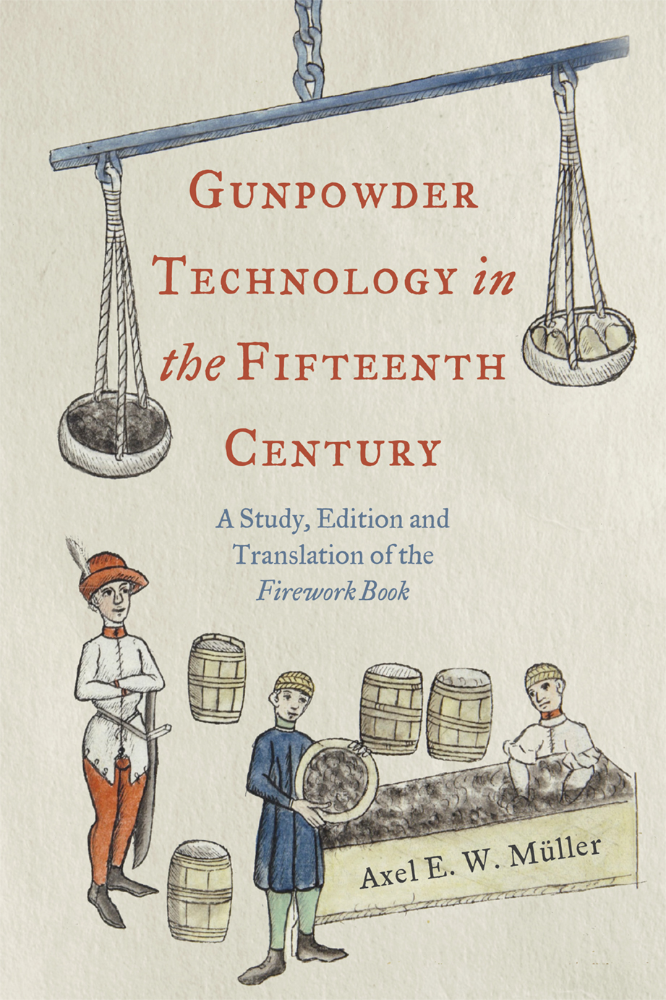
第三卷
Gunpowder Technology
十五世纪
关于本系列
皇家军械库研究系列与博伊德尔和布鲁尔出版社合作出版。该系列是研究从古代到现代武器和盔甲及相关学科的论坛。
我们欢迎来自武器盔甲研究广阔领域的未来卷册提案——无论是编辑合集还是专著——不受地理、学科或时间限制。特别鼓励专注于皇家军械库收藏品的卷册，或支持该组织研究策略的卷册（可在www.royalarmouries.org查阅）。武器盔甲文本的校勘版和翻译（如击剑手册和战斗书籍）也将被考虑。
提案和询问应首先发送给以下地址的出版经理：
马丁·劳伦斯博士
皇家军械库出版社
军械库大道
利兹 LS10 1LT
邮箱：martyn.lawrence@armouries.org.uk
关于皇家军械库
皇家军械库是英国国家武器盔甲博物馆，也是世界上最重要的此类博物馆之一。其起源可追溯到中世纪，其核心是源自国家工作军械库的著名收藏，在伦敦塔经过数个世纪的积累而成。在伊丽莎白一世统治期间，精选物品开始被安排供游客参观，使皇家军械库成为该国最古老的有意创建的游客景点之一的继承者。收藏现在在三个地点进行收藏和展示：伦敦塔的白塔、利兹的专用博物馆以及朴茨茅斯附近的尼尔森堡。
此前出版的卷册列在本书末尾。
十五世纪
Firework Book研究、校勘和翻译
阿克塞尔·E·W·米勒
博伊德尔出版社
© 阿克塞尔·E·W·米勒 2024
版权所有。除现行法律允许外，本作品的任何部分均不得复印、存储在检索系统中、出版、公开表演、改编、广播、传输、录制或以任何形式或任何方式复制，未经版权所有者事先许可
阿克塞尔·E·W·米勒被确认为本作品作者的权利已根据1988年版权、设计和专利法第77和78条得到维护
2024年首次出版
博伊德尔出版社，伍德布里奇
ISBN 978-1-78327-731-5 精装本
978-1-80543-175-6 ePDF
博伊德尔出版社是博伊德尔和布鲁尔有限公司的印记
英国萨福克郡伍德布里奇邮政信箱9，IP12 3DF
以及博伊德尔和布鲁尔公司
美国纽约州罗切斯特市希望山大道668号，14620-2731
网站：www.boydellandbrewer.com
出版商对本书中提及的外部或第三方互联网网站的持续存在或准确性不承担责任，也不保证此类网站上的任何内容是或将保持准确或适当
本出版物的目录记录可从英国图书馆获得
封面图片：皇家军械库，I.34，fol. 86v——在工作坊（皇家军械库提供）| 封面设计：阿比·胡德
图表列表
致谢
引言
Firework Book传统
Firework Book的使用和接受
利兹Firework Book
皇家军械库I.34文本
编辑原则
校勘和翻译
结论
参考文献
索引
所有图片 © 皇家军械库
图1 皇家军械库，I.34，第7集fol. 83（皇家军械库提供的图片）
图2 皇家军械库，I.34，第11集fol. 117——水印（皇家军械库提供的图片）
图3 皇家军械库，I.34，fol. 1r——第1部分序言（皇家军械库提供的图片）
图4 皇家军械库，I.34，fol. 52r，第2部分第一页（皇家军械库提供的图片）
图5 皇家军械库，I.34，fols 90v和90r——在战场（皇家军械库提供的图片）
图6 皇家军械库，I.34，fols 89v和86v——在工作坊（皇家军械库提供的图片）
图7 皇家军械库，I.34，fols 85v和87r——在工作坊（皇家军械库提供的图片）
图8 皇家军械库，I.34，fols 94v和95v——燃烧装置（皇家军械库提供的图片）
图9 皇家军械库，I.34，fols 6r、14r、42v和57r——第1和第2部分的首字母（皇家军械库提供的图片）
图10 皇家军械库，I.34，fols 87v和88r（皇家军械库提供的图片）
图11 皇家军械库，I.34，fol. 89r——可能描绘的轮毂燃烧弹大规模制造——以及fol. 88v——可能的火箭大规模生产（皇家军械库提供的图片）
图12 皇家军械库，I.34，fols 52v和57r（皇家军械库提供的图片）
提及一个在如此多年构思和开发的项目中所有参与人员始终是一个挑战，我确信（虽然我已尽力尝试）可能忽略了在整个项目过程中提供支持和建议的许多人中的一位或多位。这项研究依赖于沿途的许多朋友、家人、同事和研究伙伴——多到无法一一提及——我对他们所有的帮助、支持和鼓励深表感激。
特别感谢Kay Smith和Ruth Rhynas Brown持续、宝贵的支持和鼓励，以及HO Group: Medieval Gunpowder Research的所有其他成员和丹麦Nykøbing Falster中世纪中心的所有人员。特别地，我要感谢Kelly DeVries、Bert Hall、Peter Vemming Hansen、Dan Spencer、Clifford J. Rogers和Steven A. Walton提供的非常有用的评论和建议。
已故的、深深怀念的John Tailby，他让我领略了早期新高地德语的乐趣，并提供了对十五世纪方言读写能力世界的广泛见解。
Frühneuhochdeutsches Wörterbuch（FWB）的所有成员，特别是其编辑Oskar Reichmann和Anja Lobenstein-Reichmann，他们允许我广泛使用FWB以及许多未发表的材料，同时让我得以窥见他们语言学家的思维。
英国皇家军械库及其所有过去和现在的工作人员，他们为这项关于其众多珍品之一的研究提供了可能；特别是Stuart Ivinsen、Philip Lankester、Thom Richardson、Graeme Rimer、Peter Smithurst、Karen Watts和Bob Woosnam-Savage。
利兹大学中世纪研究所和历史学院的所有人员，包括过去和现在的教职员工和学生，他们促成了这项研究，为我提供了与众多中世纪学者交流的平台，并突出了中世纪研究所能带来的快乐和魅力。特别感谢我的同事Iona McCleery和Emilia Jamroziak在学术方向和背景方面提供的指导和建议。
非常感谢Sarah Bastow、Glenn Foard、Katherine J. Lewis、Richard Morris和Tim Thornton，以及哈德斯菲尔德大学兵器装甲研究所的所有其他人员，他们在研究的各个阶段都发挥了作用。
全世界所有图书馆员和档案管理员，他们是过去宝藏的守护者，当被咨询时，他们对这位孤独的研究者关于他们馆藏的询问——对他们来说，这最多也只是一个小众主题——都极其有帮助。特别是Arnold Otto和Karin Zimmermann。
非常感谢维也纳大学的Herwig Weigl和Jacqueline Schindler在早期新高地德语方面提供的帮助和协助。
为Boydell & Brewer出版社和英国皇家军械库研究系列工作的所有人员，特别是Nick Bingham、Martyn Lawrence、Laura Napran和Caroline Palmer，在整个过程中提供了高度专业的服务和支持。
我的朋友Brenda Bolton和Christine Meek对文本草稿进行了评论，防止我犯下对英语的最严重罪行。不用说，有些错误还是溜过去了——这完全是我自己的错。
我的家人，在这篇论文的写作过程中失去了双亲，但他们自始至终都在那里。
最后但同样重要的是，我永远感谢Iona，我长期忍受痛苦的伴侣，她以积极的支持和鼓励帮助我度过了这个漫长而艰苦的过程，没有她，这一切永远不会超越最初的”某种好想法”。我将这本书献给她。
Gunpowder技术经常被认为是从中世纪向早期现代时期转变的关键催化剂之一。到1620年，自然哲学家Francis Bacon将gunpowder列为技术进步的三重象征之一：“印刷术、gunpowder和指南针。这三者改变了整个世界的面貌和状态。”正如Kay Smith在2010年所说，关于
[…gunpowder在从古代到现在能源资源开发中发挥的关键作用。它标志着从动物、机械或自然能源…向化学能源的显然无限力量和流动性转变的开始。]
然而，gunpowder技术在十四和十五世纪是何时以及如何出现并传播到欧洲各个角落的，远没有那么清楚。
Gunpowder在中国的早期起源是众所周知的，但我们对这项技术如何在欧亚大陆传播知之甚少，对早期gunpowder武器在实践中的表现了解更少。这种理解的缺乏对中世纪晚期和早期现代时期战争研究产生了重大影响。Kelly DeVries和Kay Smith列举了从1326年开始的许多大炮和gunner，到十五世纪，gunpowder artillery”已经在战场和围攻中带来了重大变化”，并”影响了每个王国和公国”。现存的记录
Francis Bacon and Joseph Devey (eds), Novum Organum (New York: P. F. Collier, 1902). https://oll.libertyfund.org/title/bacon-novum-organum#Bacon_0415_198 (accessed 10 August 2023), Book 1, Aphorism CXXIX.
Kay Smith (publ. under former name of Robert Douglas Smith), Rewriting the
[火药史][(Nykøbing Falster: Middelaldercentret, 2010), 12.] [3] [关于这些早期起源，参见Joseph Needham, ][军事技术：火药 ]
[史诗][，第7部 ][中国的科学与文明][，第5卷，][化学与化学 ]
[技术 ][(Cambridge: Cambridge University Press, 1986)，最近的研究，]
[Tonio Andrade, ][火药时代：中国、军事革新与西方在世界历史中的崛起][ (Princeton and Oxford: Princeton University Press, 2016).] [4] [Kelly DeVries and Robert D. Smith, ][中世纪军事技术][ (Toronto: University of Toronto Press, 2012), 138–40, and Kay Smith (以前姓名Robert Douglas Smith发表) and Kelly DeVries, ][勃艮第公爵的火炮，1363–1477][ (Woodbridge: Boydell, 2005), 10–12.]
十四世纪后期master gunners的记录稀少，到十五世纪中期变得越来越丰富，但仍然只是零散提及分布在欧洲各地的gunners雇佣情况。[5] 虽然伦敦塔从1346年开始记录火药生产，1400到1410年间大幅增加，但记录对于采购、储存、维护和使用说得很少。[6] 近几十年来，学者们已经意识到知识的空白和火药技术的社会史潜力。例如，1996年Brenda Buchanan指出：
[火药制造史是一个相对被忽视的主题，但这是一项具有国际意义的技术，涉及思想和技术的智力传播，以及原材料和成品跨越大陆和海洋的实际转移。与许多行业不同，它的产品供应多样化市场，反映了它所繁荣发展的文化、社会和经济条件。][7] 从那时起，来自不同学科的广泛学者（军事史、中世纪研究、手稿研究、汉学、经济史、科技史）为这一领域做出了贡献，进一步证明了火药技术对战争、贸易、知识交流、文化和社会的重要性。然而，他们自然地从各自学科的角度解释证据，经常回顾性地将现代科学应用于中世纪的背景和材料。[8] 并且，
[5] [最近的研究，Dan Spencer, ][中世纪晚期英格兰的皇家和城市火药武器][ (Woodbridge: Boydell Press, 2019), 或Knut Schulz, ‘Büchsenmeister des Spätmittelalters: Migration und Ausbreitung des neuen Wissens’, in ][中世纪和近代早期的工匠和行会][, eds Eva Jullien and Michel Pauly (Stuttgart: Franz Steiner, 2016), 221–42, 230–42, 或更早的，Rainer Leng, [’”][getruwelich dienen mit Buchsenwerk”][. 中世纪晚期的新职业：Büchsenmeister’, in ][中世纪社会结构。维尔茨堡的跨学科中世纪研究][, eds Dieter Rödel and Joachim Schneider (Wiesbaden: Reichert, 1996), 303–21.]
[6] [Thom Richardson, ][十四世纪的伦敦塔军械库][ (Leeds: Royal Armouries, 2016), 174–90.]
[7] [Brenda J. Buchanan (ed.), ][火药：国际技术史][ (Bath: Bath University Press, 1996), xvii.]
[8] [近年来值得注意的例外有：Jonathan Davies, ][中世纪大炮1326–1494][ (Oxford: Osprey Publishing, 2019), Geoff Smith, ‘Saltpetre: The Soul of Gunpowder’, ][军械学会期刊][ 27 (2020), 5–24, and Geoff Smith, ‘Sulphur: The Trigger of Gunpowder’, ][军械学会期刊 ][28 ][(2021), 115–19, Trevor Russell Smith, ’最早的中古英语]
直到最近，关于十五世纪早期火药技术的英语资料还很少。要理解火药技术——包括其引入、使用、贸易和重要性——研究广泛的文本和记录以及文物和实验考古学至关重要。[9]
虽然可以从地方编年史和其他书面证据的片段以及孤立幸存的文物中收集一些信息，但可以说通过研究军事手稿，我们能够获得对十五世纪军事技术和这项技术出现的最全面洞察。特别有价值的是被称为Firework Book的技术手稿类型（为火药技术编写的首批幸存手册群之一）。[10] 然而，尚未对Firework Book类型进行持续的比较分析。因此，本书旨在回答关于火药和早期火炮的一些基本问题，以便为他人建立良好的硬证据和研究基础。未来的研究将受益于整合文献和档案研究、实验工作以及实际武器试射结果的多学科方法。
[火药配方’, ][中世纪军事史期刊 ][18 (2020), 183–92, Clifford J. ]
[Rogers, ‘欧洲火药火炮, 1326–1500: 创新与影响’, in ]
[技术、暴力与战争：纪念John F. Guilmartin Jr.博士论文集][, eds Robert S. Ehlers Jr., Sarah K. Douglas, and Daniel P. M. Curzon, History of Warfare ]
[125 (Leiden: Brill, 2019), 39–71, Clifford J. Rogers, ’四个被误解的十四世纪]
[火药配方’, ][中世纪军事史期刊]
[18 (2020), 173–82, and Spencer, ][Royal and Urban Gunpowder Weapons.] [9][ 实验考古学是调查物质文化的重要方法]
[和测试研究假设和技术。见在线期刊]
[EXARC的各期；Peter G. Stone and Philippe G. Planel, ][The Constructed Past][ (London: ]
[Routledge, 2003); HO Group的研究：Medieval Gunpowder Research ]
[其明确目标是调查中世纪gunpowder的成分和性质；以及最近在美国军事学院进行的研究]
[发表在 Tessy S. Ritchie, Kathleen E. Riegner, et al., ’Evolution of ]
[Medieval Gunpowder: Thermodynamics and Combustion Analysis’, ][ACS Omega]
[6:35 (2021). 22848–22856. https://pubs.acs.org/doi/10.1021/acsomega.1c03380 ]
[(accessed 10 August 2023).]
[10][ ][Firework Book][ 是一个包含不同版本的类型，而不是单一书籍，正如]
[65份现存抄本显示出相当大的差异。这将在本导言的’手稿和版本’部分，以及]
[3]
很明显，这项技术正在改变社会，但对于变革的速度和形式却知之甚少。火药技术对战争进行方式的各个方面都具有变革性，因为它对资源、训练和建造产生了重大影响。一些学者已经识别出十六世纪的”军事革命”，其中火药技术是关键组成部分之一，但本书讨论的证据表明，无论发生什么，在十四和十五世纪就已经在顺利进行了。[11] Firework Book是否可以被视为对早期”军事革命”的贡献，还是社会渐变的一部分，这将是讨论的话题。技术变革确实以主要方式促进了军事互动的进行，到十五世纪后期，火药技术在西欧无处不在，任何自重的地方统治者都不能不拥有火药技术。对新技术如火药artillery的使用确实存在需求和供应，随之而来的是保存和传播这种知识的迫切需要，导致出现了大量关于军事事务的手册。Firework Book是十四世纪末十五世纪初兴起的一种类型的一部分，其中包含其他与军事技术指导相关的文本，如Bellifortis和Büchsenmeister Books。[12]
所有这些文本都出现在这项技术发展的明显关键时期。然而，不太清楚的是制作这些文本的实际目的是什么。[13] 实际上，有三种可能的解释：a) Firework Book标志着一项成熟技术的记录，该技术在十五世纪初之前就已经被使用了几十年，远早于
[11][ 关于军事革命、其年代学和概念辩论的概述，见 Geoffrey Parker, ][The Military Revolution: Military In-]
[novation and the Rise of the West, 1500–1800][ (Cambridge: Cambridge University ]
[Press, 1988; rev. edn 2002), Clifford J. Rogers (ed.), ][The Military Revolution Debate: ]
[Readings on the Military Transformation of Early Modern Europe][ (Oxford: West-]
[view Press, 1995), Kelly DeVries, ’Catapults are not Atomic Bombs: Towards a ]
[Redefinition of “Effectiveness” in Premodern Military Technology’, ][War in History ]
[4 (1997), 454–70, 以及最近的 Anne Curry, ’Guns and Goddams: Was There ]
[a Military Revolution in Lancastrian Normandy 1415–50?’, ][Journal of Medieval ]
[Military History][ 8 (2011), 171–88, and Helmut Flachenecker, ’Kanonen, Räderuhr ]
[und Brille: zur technischen Revolution des Spätmittelalters’, in ][Überall ist Mit-]
[telalter: zur Aktualität einer vergangenen Epoche][, ed. Dorothea Klein (Würzburg: ]
[Königshausen & Neumann, 2015), 303–29.]
[12][ 有关作为类型的][Firework Book][，以及][Bellifortis][和]
[Büchsenmeister] [Books][的更多信息，见第一章’作为连贯类型的][Firework Books][’.] [13][ 另见第二章’使用的手稿证据’.]
[4]
现代历史学家假设的发生时间；b) 它是火药制造和技术重大变革的结果，需要一个工具来传播变革知识；或 c) 它是一个不反映当时实际实践的文本异常现象。
本研究将表明，第三种解释可以排除，因为该文本确实涉及火药技术中的操作任务，包含有充分记录的成分，以及可以运行和重现的配方和指导。[14] 更可能是a)和b)的结合，即它是在技术或技术知识转移变革的转折点写成的，当时火药技术已经使用了几十年。Firework Book展示了对这种火药技术知识的需求，以及这种专业知识已经建立得很好。这些文本出现在方言书写包括技术知识的书面记录（而不是口头传播）开始在整个欧洲出现的时期。这也是master gunner职业开始广泛传播的时代。
[手稿和版本]
在利兹皇家军械库手稿收藏中，有一部复杂的十五世纪德语白话文本，编目为MS I.34，被称为火药书（德语：‘Feuerwerkbuch’）。该文本此前从未被编辑，迄今为止也只是得到了粗略研究。
本研究旨在创建I.34的外交版本和翻译，这是英国唯一的火药书副本，也是整个语料库中的独特范例。考虑到此类型作品版本的稀缺性，这项工作对于更完整地理解火药书至关重要。弗赖堡手稿Ms. 362火药书仅有三个现代新高地德语版本，以及一个基于其中一个现代版本的英语翻译。第一个现代版本印刷于1941年，是公务员威廉·哈森施泰因(Wilhelm Hassenstein)的作品，他在军事背景下工作，但历史和科学知识有限。
第二和第三版分别由物理学家费迪南德·尼布勒(Ferdinand Nibler)（也翻译成新高地德语）和化学家格哈德·克拉默(Gerhard Kramer)（还添加了部分英语翻译）制作。两人都具有科学知识，但缺乏足够的历史背景来理解翻译准确性的必要性。相比之下，这里的选择是提供接近原文的翻译，处理出现的不一致性，并尽可能准确地呈现有时单调且重复的风格。这种方法为学者们提供了对文本实际内容的更深入洞察，而非现代学者对其的解释。
所有65个现存的火药书版本都产生于十五和十六世纪，使用早期新高地德语的各种方言（定义为1350年至1650年间使用的德语版本）。基于所采用的主要白话，它们可追溯到现今巴伐利亚西南部地区。火药书采用火炮师傅与学徒对话的教学格式，被恰当地描述为”那个时期关于炮术和化学艺术最常被复制、修改和扩展的书籍”。然而，它经常被重新组织和重新包装，结果是没有两个现存文本在内容上完全相同。
本研究的一个重要元素是对I.34内容的批判性检验，将其与火药书类型的其他64个现存手稿的重要子集联系起来，从而提供对这一类型和相关主题领域的比较分析，并更好地理解其技术内容。本研究提供了大量证据表明火药书广受欢迎且经常被复制，尽管它们的作用和功能随着时间的推移已逐渐被遗忘。
虽然皇家军械博物馆手稿I.34与大多数《火器书》具有相同的核心内容，但它也有一些独特的特征，使其成为理想的案例研究对象。除了转录、翻译和解释I.34之外，本研究旨在超越文本性，解释这些手稿的技术内容，并对早期火药武器的发展提供解释。与大多数其他《火器书》相比，I.34编纂时包含了相关的文本元素，这些元素为火药技术知识，特别是十五世纪《火器书》的制作和可能用途提供了更深入的洞察。I.34包含几个不同的文本部分（I.34的第二部分长期以来被视为独特的）以及大量在手稿文本中提及的图像——这些特征对于大多数《火器书》来说是不寻常的。这些图像生动地展示了火药爆炸物的各种生产技术及其在战斗中的使用，结合了装备安装的技术插图。[19] 希望详细分析能够带来更好的理解，不仅是识字能力的出现如何促进了《火器书》的制作，还包括关于它们的制作、作者身份、读者群体、接受度和其他用途的合理理论。
这种方法不遵循详细比较多个手稿的传统文本研究类型。之前曾有一些尝试比较多个手稿，既通过每章的标题，也通过每个副标题的文本。[20] 事实上，Ferdinand Nibler开始了
[19] 这些插图让我们能够更好地理解该时期火药技术人员的性质和知识。然而，虽然本书包含了一些图像，但对图像的详细分析超出了本项目的范围。虽然军事史学家偶尔会参考它们，但艺术史学家和图像专家尚未将它们作为火药战争和技术手册的表现形式进行分析，甚至作为建筑、服装、材料的表现形式或透视法的使用进行分析。这些图像已在与文本相关的地方进行了查阅（在文本提及它们的几个地方），但决定这里的主要焦点应该限制在文本的呈现和解释上。
[20] 见Ferdinand Nibler，‘Das Feuerwerkbuch: Eine verspätete Buchbesprechung etwa 600 Jahre nach dem Erscheinen des Feuerwerkbuches’，《军事学杂志》
这项工作但仅部分完成——展示了现存语料库的复杂性，最多只能提供部分信息，因为每个《火器书》手稿都与下一个不同。[21] 此外，大量微妙的差异（越深入文本差异越大）使这种研究变得不可行，而收益肯定是有限的。以前的学者仅仅按照关键组成部分的顺序列出了这些变化，没有评论，突出了一个中列出而另一个中没有的元素，因此只提供了文本语料库的部分信息。[22] 只有将所有手稿进行逐一比较，才能理解手稿之间差异的程度——考虑到现存手稿的数量，这是一项令人望而生畏的任务。
从我对《火器书》手稿语料库的检查中得出的是高比例的相似性，尽管有时微妙，有时更实质性的差异。综合比较分析超出了本研究的范围，无论如何可能价值有限。相反，对一个手稿的这种集中分析为解释《火器书》的起源、用途、流传和后续
67:2 (2003), 147–54, 以及Nibler，《火器书》。Ferdinand Nibler的工作是最全面的尝试，因为他详细比较了弗赖堡手稿Ms. 362与奥格斯堡1529年印刷本（仅在Hassenstein的重印本《火器书》中幸存）的标题，同时还提供了上述两个文本与慕尼黑Clm. 30150、迪林根Ms. XV 50、魏玛Q 342以及Egenolph的另一印刷本（斯特拉斯堡，1529年）之间章节标题的比较，并以”对照方式”对两个版本的文本进行了比较研究。然而，其好处难以确定，各版本之间既有相似之处也有差异。这些差异表现在词汇选择、短语、章节的不同放置，或更实质性的变化和省略。由于他只包括了一些选定的手稿，他的研究用途有限。之前的尝试远不如此全面，包括Max Jähns的调查，《战争科学史主要在德国》，3卷（慕尼黑和莱比锡：R. Oldenbourg，1889–91），http://archive.org/details/geschichtederkr00jhgoog（2023年8月10日访问），382–424，以及Wilhelm Hassenstein，《1420年的火器书：德国火药武器和炮手技艺600年》，德国技术书籍（慕尼黑：德国技术出版社，1941），14–78，84–88，Christa Hagenmeyer，“15世纪末的军事科学文本”，《鲁汶贡献》57 (1967)，182–95，或Franz Maria Feldhaus，《古代和中世纪技术》（Wildpark-Potsdam: Athenaion，1931 [1971]），362，但所有这些都是在有限的资料来源或可辨别的方法论应用下进行的。
[21][ Nibler 在对四份]
[手稿和两个早期印刷版][火药书][ 的概览性比较分析的介绍性评论中 (Nibler, ][Feuerwerkbuch][, 3).] [22][ 参见，特别是 Nibler, ][Feuerwerkbuch][, 或 Kramer, ][Das Feuerwerkbuch][.]
[8]
火药书 的生平。以 I.34 作为所有 火药书 手稿的典型代表，本研究对单一手稿进行文本分析，并通过二手资料的比较研究，在技术和军事发展的背景下评估其内容、作用和功能。I.34 是理想的研究对象，因为它提供了传统的 火药书 组成部分，以及额外的解释文本。几乎所有手稿都包含一系列问题，通常被称为火炮长问答(Master Gunner’s Questions)。这些问题在长度和内容上各不相同，在省略或添加的关键要素数量上也有所不同。然而，核心内容保持不变，即对火药成分及其各种用途的描述。这些做法是否真的被使用过，还是想象中的改进或一厢情愿的想法，将在第2章和第5章中讨论。MS I.34——如同 火药书 的所有其他手稿一样——有其自己的段落顺序和段落的主题分组，以及段落内容中独特的增加和省略，伴随着不寻常的第二部分，为文本的可能用途提供了宝贵的见解。
总之，由于迄今为止火药技术史一直是由来自不同学科的各种片段组成的拼图，本出版物旨在通过使用 I.34 作为 火药书 的典型代表（尽管是独特的）来进一步加深我们对它的理解。结合文学和语言学的源批评，以及历史分析和实地调查，它展示了 火药书 作为火药技术整合过程中重要环节的作用。
[9]
[[[1]]] [火药书][ 传统]
[[[本]]]章概述了更广泛的 火药书 传统。它探讨是否存在一个单一的体裁，或者这个术语是否更正确地适用于一个更为分散的文本集合。它考虑了 火药书 研究的史学问题，以及是否应该区分不同类型的 火药书。最终，它探索 火药书 如何以及在何处融入更广泛的十五世纪技术著作体裁（无论是否有插图），并分析现存手稿的相似性和差异性以及学者们如何解释这些。
[火药书][ 作为一个连贯的体裁]
需要证明这是一个连贯的传统，它需要（或有权包含）一个明确可定义的文本群体。就本章而言，我理解的 火药书 是用早期现代高地德语撰写的文本，包含与早期火药炮兵相关的一系列核心要素，包括：所谓的”火炮长问答”；saltpetre、sulphur和charcoal的处理；如何制作、改进、保存和复活火药的指示；以及与火药技术攻击或如何防御这些攻击相关的其他指示。文本的核心在一个多世纪的时间里被多次复制。从1529年起，它继续以印刷文本的形式制作。[1] 最早的
[1][ 据 Hassenstein 称，首个印刷版被发现作为 ]
[Flavii Gegetii Renati vier Bücher von der Ritterschaft][ (Augsburg, 1529) 的附录。Hall 提]
[到”两个无关的首版”：Heinrich Stainer, Augsburg, 1529，和 Chris-]
[tian Engenolphen, Strassburg, 1529，后者以标题 ][Büchsen-]
[meisterei: von Geschoss, Büchsen, Pulver, Salpeter, und Feuerwerk][ 出版。两位印刷商，]
[奥格斯堡的 Heinrich Stainer（也称为 Steyner 或 Steiner）和 Christian ]
[Egenolff 或 Engenolph，最初在斯特拉斯堡，后来在法兰克福，都是]
[多产的印刷商，记录显示他们印刷了超过1450本不同的书籍，]
[涉及神学、历史、哲学、自然科学等广泛主题，]
[以及其他医学文本，包括 Hans Sachs、Melanchton、Paracelsus 的文本，]
版本可能出现在十五世纪的最初几年，最后一个版本一直延续到十六世纪。因此，火药书 被如此频繁地重新结构化和重新包装，以至于没有两个现存文本在内容上完全相同。
所有现存的《火药书》手稿都创作于十五、十六世纪，使用当时巴伐利亚西南部地区的当地方言。所有现存《火药书》文本都存在变异，均以十五世纪白话文书写，几乎全部使用红色和深棕色墨水。
作为一个整体，此类书籍保持着高度的一致性和相似性，远超同一时期、同一地区的烹饪书或击剑手册。值得注意的是，在十五世纪的德国，巴伐利亚西南部地区在制作技术性质的白话文手稿方面处于前沿地位。[2] 例如，Melitta Weiss Adamson和Trude Ehlert研究了十五世纪德国白话烹饪书及其相关体裁的制作。两位作者都强调了其原始文本语言的简单性和低质量，以及文本编纂的近乎偶然性质，尽管他们忽略了一个重要观点，即这些”技术性”资料主要出现在巴伐利亚。[3]
《火药书》这一标题（德语：‘Feuerwerkbuch’）源于似乎出现在所有已识别手稿中的文本引用，通常出现在文本的早期部分。[4] 然而，它并未作为文本开头的标题使用——这种做法只是十八世纪以后的图书馆员和档案管理员开始采用的。1941年，Wilhelm Hassenstein在出版《1420年火药书》时添加了”1420年”这一后缀，该书既提供了两份《火药书》副本的版本，也附有补充评注，但他没有对选择这一日期提供明确的解释。[5] Hassenstein的标题此后一直用来命名这一类技术写作，尽管许多人随后对1420年的断代提出质疑，认为该出版物评注中的历史背景存在问题。[6] 其他学者为其指定了不同的制作日期。例如，中国技术和科学史学家Joseph Needham提到的是”1437年火药书”。[7] 唯一可以确定的是，《火药书》的流传历史在1430年代已经开始，正如Bert Hall在评论断代问题时指出的：
《火药书》继续被抄写，但其文本似乎在1430年代或1440年代后趋于稳定，后来的版本几乎没有新内容。当这部作品最终在1529年付印时，已经完全过时了。[8]
[存在，其中两个似乎注明日期为1437年，另一个注明为1420年。] [8][ Hall, ][Warfare in Renaissance][, 88.]
[12]
Hassenstein的Feuerwerkbuch von 1420还提供了38份Firework Book手稿的清单。[9] 近几十年来，学界普遍认为Hassenstein的清单是不完整的，而且基于相当可疑的学术研究——正如该出版物的其余部分一样。Hassenstein甚至论证说，据说是第一个展示gunpowder武器技术实际应用特征的Milimete Gun插图(Oxford, Christ Church MS 92 fol. 70v)，一定是后来添加到1326年手稿中的，因为在武器技术方面不够先进的英国人（与德国人相比）不可能发明gunpowder技术(‘[…] sind phantastische Malereien, die nachträglich in die […] Handschrift […] aus den Jahren 1326 und 1327 hineingemalt worden sind, […] und die unmögliche Vorstellung erweckt haben, daß nicht die Deutschen, sondern die schon damals im Waffenwesen rückständigen Engländer die Erfinder der Pulvergeschütze sind’)。[10] 正是这一描述导致了1960年代提出的学术观点，即英国一定处于技术发展的前沿。[11]
Hassenstein绝不是第一个强调gunpowder发明者”起源神话”的人。早期的辩论受到国家利益的强烈影响，目的是确定哪个国家”发明”了火炮和/或gunpowder，并在军事技术领域处于领先地位。Max Jähns等人急于指出powder gun是在德国发明的。虽然他确实承认gunpowder技术在中国和阿拉伯半岛的早期存在，但他确信作为抛射物推进力的gunpowder是传说中的Berthold Schwarz (Niger Bertholdus)的德国发明，几乎所有Firework Books都提到了他。[12] Kelly DeVries将Hassenstein的出版物描述为”除了文本本身之外几乎毫无用处”。[13] 尽管如此，Hassenstein的出版物在二十世纪仍被定期用作Firework Books存在及其流传的参考点。
中世纪史学家Rainer Leng对技术手稿有特殊兴趣，他的研究对扩大
[9][ Hassenstein, ][Feuerwerkbuch][, 85–88.] [10][ Hassenstein, ][Feuerwerkbuch][, 83.]
[11][ Partington, ][Greek Fire and Gunpowder][, 78, and Dudley Pope, ][Guns][ (Feltham: ]
[Spring Books, 1969), 21–23.]
[12][ Jähns, ][Kriegswissenschaften][, 224–26.] [13][ Kelly DeVries, ’Review of Gerhard W. Kramer, ed., and Klaus Leibnitz, trans. ][The ]
[Firework Book: Gunpowder in Medieval Germany (Das Feuerwerkbuch, c. 1440)][’, ][Ambix ][50:2 (2003), 237–38, at 237. See also Simon Werrett, who uncritically follows ]
[both Kramer and Hassenstein (Simon Werrett, ][Fireworks: Pyrotechnic Arts and ]
[Sciences in European History][ (Cambridge: Cambridge University Press, 2010), 27).]
现有材料发挥了重要作用，以显示哪些Firework Books (of 1420)仍然存在。[14] Leng重新使用了Hassenstein的Firework Book of 1420标签，这也被用作Die deutsche Literatur des Mittelalters: Verfasserlexikon（《中世纪德国文学：作者词典》）第二版的条目：
[这组被称为][Firework Book of 1420][的手稿来自][十五世纪上半叶，最初于1529年印刷。[…] 它们传播了][个人经验，通常通过实验获得。这导致了][大量通常很厚重的firework books，它们可以][归为一组，因为它们几乎完全相同，由][几乎逐字复制的章节组成。[…] 总共有][48份具有相关内容的手稿存在于德语地区。][15]
[14][ 特别是在Rainer Leng, ][Ars belli: deutsche taktische und kriegstechnische Bilderhandschriften und Traktate im 15. und 16. Jahrhundert][, Imagines medii aevi, 2 vols ]
[(Wiesbaden: Reichert, 2002), and Rainer Leng, ‘Feuerwerks- und Kriegsbücher’, ]
[in ][Katalog der deutschsprachigen illustrierten Handschriften des Mittelalters][, vol. 4/2, ]
[eds Norbert H. Ott et al. (München: C. H. Beck, 2009), 145–512, http://www.]
[manuscripta-mediaevalia.de/?xdbdtdn:%22hsk%200622a%22&dmode=doc#|3 ]
[(accessed 10 August 2023).]
[15][ Burghart Wachinger et al., ][Die deutsche Literatur des Mittelalters: Verfasserlexikon][, ]
[2nd edn (Berlin: de Gruyter, 1977–2008), vol. 2 (1980), cols 728–31, under the ]
[heading of ’][Feuerwerkbuch von 1420][’:]
[Das heute unter dieser Bezeichnung geführte Kompendium einschlägiger Hss. ]
[aus der ersten Hälfte des 15. Jh.s wurde erstmals i. J. 1529, ein Jahrhundert nach ][seiner Entstehung […] gedruckt […] tradierte aufgrund seiner eigenen, häufig ][auch experimentell gewonnenen Erfahrungen. Auf diese Weise kam es schon in ][der ersten Hälfte des 15. Jh.s zu einer erheblichen Zahl mitunter sehr umfangreicher Feuerwerkbücher, deren Verwandtschaft miteinander noch heute anhand ][der in jeder erhaltenen Hs. auftauchenden fast identischen, weil nahezu immer ][wieder wörtlich abgeschriebenen Kapitel nachzuweisen ist. […]]
[Insgesamt sind bis heute 48 dieser in zumindest einem Abschnitt inhaltlich ]
[miteinander verwandten Hss. im deutschsprachigen Raum.]
[ 第一版出版于1933–55年，但由于第一卷A–F包含了]
[Firework Book][ 参考资料，它没有包含Hassenstein参考资料，新]
[术语只在1977年至]
[2008年。即便如此，关于《1420年火药书》(Feuerwerkbuch von 1420)的文章（发表于1980年的第2卷）在其定义条目’火药制作、枪支装填和射击说明’(Anleitungen, Schießpulver zu bereiten, Büchsen zu laden und zu beschießen [发表于1978年的第1卷])和’枪支、战争盔甲、攻城器械和烟火’(Pixen, Kriegsrüstung, Sturmzeug und Feuerwerk [发表于1989年的第7卷])方面存在差异。这三个条目都由同一位作者沃尔克·施密特兴(Volker Schmidtchen)撰写。]
然而，对于《火药书》(Firework Book)的确切定义仍然不够清晰。伦格批评了他认为是”松散传承”(Streuüberlief-erungen)的手稿，以及在他看来对《1420年火药书》传统的”错误归属”(Fehlzuschreibungen)。尽管如此，他还是制作了自己的手稿归属清单，其中包含《火药书》的”实质性或较大连续部分”，总共包括58份手稿，这些手稿的部分或全部内容与《火药书》类型相关。他将清单限制在手稿范围内，但包括了十六世纪书记官体的抄本，以及其他据信已遗失(‘verschollen’)但曾在某个时期有记录的手稿的参考文献，包括一份最后记录为私人收藏的手稿。然而，伦格并未提供一个清晰的定义来阐明如何纳入或排除与此语料库相关的任何文本。
《火药书》的最早版本很可能是在十五世纪前几年写成的，这与哈森施泰因的年代判定大致一致，但不同意他所固定的日期，因为找不到支持该日期的证据。《火药书》与其他军事技术文本的显著不同之处在于，它专门处理火药大炮的具体问题，而不是专注于枪支制造的更广泛方面以及防御或进攻战术。基于这组标准，总共有65份手稿可以归属于这一类型，除一份外全部都在已知地点且可供查阅，包括十五和十六世纪的抄本，从看似完整的文本到较小的片段不等。属于该类型的所有已识别手稿清单在参考书目中提供。
《火药书》的极少数抄本提供了制作日期或可识别的作者，而在提供日期或作者的情况下，很难验证这些是否为后来添加的内容。弗莱堡手稿362在文本中注明制作于1432年。只有一份《火药书》抄本，即迪林根的那份，可能归属于某位作者：在文本末尾，插入了姓名和日期’1466 Jodocus Foelki presbyter’——被识别为来自奥地利福拉尔贝格地区的约多库斯·福尔基(Jodocus Völki)。某位约多库斯·福尔基在1480年代被记录为内卡河畔苏尔茨的一名牧师。这个
地点似乎与手稿的语言特征相符，因为它们已被识别为”带有施瓦本方言痕迹的阿勒曼尼方言”。然而，包含日期和姓名的那行似乎是用不同颜色的墨水和不同的字迹书写的，可能是后来添加的，因此对使用这一参考来确定手稿年代的假设产生了怀疑。福尔基可能是手稿的拥有者，而不是作者或抄写员。大多数手稿的作者都是匿名的，有时被描述为”鲜为人知的非常模糊的人物”。自十九世纪以来，人们对《火药书》可能的作者一直有所推测，其中一个长期讨论的理论认为是某位来自梅明根的亚伯拉罕(Abraham von Memmingen)。据说亚伯拉罕是十五世纪早期的一位炮手大师，据称为他的雇主奥地利的弗雷德里克制作了一本《火药书》。这基于约瑟夫·维尔丁格(Josef Würdinger)的研究，但他没有提供可信的证据来支持这一说法。因此，这一理论在近年来已被广泛否定。
现存的大部分抄本自制作以来都经过重新装订，并经常与其他军事制度或技术内容的文本放在一起。这使得对它们在制作时状态的任何推测都变得困难。它们都是用优质纸张制作的，但几乎没有插图，使它们沦为更多用于个人使用的相对低地位的出版物。这使得凯·史密斯建议《火药书》
[Buchhandlung, 1868), 397–402. 参见 Jähns, ][Kriegswissenschaften][, 392–93, S. J. von ]
[Romocki, ][Geschichte der Explosivstoffe][ (Hannover: Gebrüder Gänecke, 1895; repr. ]
[Hildesheim: Gerstenberg, 1976), 179, 或 Hassenstein, ][Feuerwerkbuch][, 79–80.] [23] [Verfasserlexikon][, vol. 1 (1980), cols 11–12.] [24][ 例如，位于 Dillingen、Memmingen、Darmstadt 和 Stras-]
[bourg 的抄本。在所有这些抄本中，各节开头都留有空白，]
[这些空白必定是为后来的补充而预留的（主要用不同颜色的]
[墨水填写）。]
[25][ 与][火药书][相关的大多数原始资料和二手资料在]
[德国学术图书馆中被归类在德国文学而非历史类别下。由于]
[与当时其他德语文本相比，语言学和文学吸引力较小，这些资料]
[往往更被边缘化。]
书籍可能是”炮手学徒的私人笔记本，在学徒期间从师傅的抄本中抄录，并添加自己的补充内容和后续扩展”。[26] Ferdinand Nibler 进一步建议，火药书是”炮手长的学习和参考手册”。[27]
迄今为止，只有一本火药书的非常宽松的英语”译本”——Freiburg Ms. 362，由 Gerhard Kramer 和他的翻译者 Klaus Leibnitz 于2001年制作（在 Kramer 去世后出版）。Kramer 和 Leibnitz 在引言段落中提出了一些有趣的观点，认为 Freiburg 火药书是”由化学家（或炼金术师）为炮手长使用而撰写的”。他们继续说道：
[它是用德语哥特体书写的，特别难以阅读。]
[其内容技术性强且深奥，词汇古老且晦涩，其]
[语言——中古高地德语——只有学者才熟悉。它所]
[包含的建议，至少部分是模糊和神秘的，它的前科学]
[概念陌生且深奥。只有身兼语言学家、历史学家和化学家]
[的学者才能破译它。然而，整体而言，]
[这份手稿是一本非常合理且实用的手册。][28] 这个陈述包含了一系列假设、矛盾和事实错误。声称火药书是由化学家或炼金术师撰写的这一观点缺乏根据，因为他们没有提供他们（或十五世纪的专家读者）对化学家或炼金术师的定义。[29] 他们似乎自相矛盾，既描述文本为”技术性强且深奥，词汇古老且晦涩”，又说它”合理且实用”。[30] 事实上，虽然词汇具有技术性，但相对简单明了。Freiburg 火药书的语言——如同现存的所有其他火药书
[26][ Smith, ][Rewriting Gunpowder History][, 95.] [27][ ‘Lehr- und Handbuch für den Büchsenmeister’ (Nibler, ][Feuerwerkbuch][, 3).] [28][ Kramer and Leibnitz, ][Das Feuerwerkbuch][, 20.] [29][ 许多学者试图探讨炼金术师和化学家在中世纪晚期]
[社会中的角色。参见 Leah DeVun, ][Prophecy, Alchemy, and the End of Time: John of ]
[Rupecissa in the Late Middle Ages][ (New York: Columbia University Press, 2009), P. ]
[G. Maxwell-Stuart, ][The Chemical Choir: A History of Alchemy][ (London: Continuum, ]
[2008), 或 Michela Pereira, ’Alchemy and the Use of Vernacular Languages in ]
[the Late Middle Ages’, ][Speculum][ 74:2 (1999), 336–56. 然而，学者们的主要]
[关注点似乎是炼金术作为伪科学的作用及其与宗教的关系。最终，“炼金术师”或”化学家”的称谓成为了一个宽泛的集合术语，用来指代]
[或多或少从事炼金术及相关活动的任何人。]
[30][ Kramer and Leibnitz, ][Das Feuerwerkbuch][, 20.]
– 不是 Kramer 和 Leibnitz 所说的”古老”中古高地德语，而是早期现代高地德语，用各自作者的地方方言书写。十五世纪火药书的大多数抄本——包括 Freiburg 火药书——都是用草书体、清晰的 bastarda 字体书写的。[31] 因此，我们可以看出，如上述引文所示，Kramer 和 Leibnitz 的评价暴露了他们对中世纪晚期和近代早期语言、科学、概念和术语缺乏理解。此外，他们低估了火药书使用问答这一核心内容和宝贵修辞技巧的价值，这为读者提供了熟悉的教学格式，类似于早期医学文本或后来的采矿手册，也见于经院文本中。[32] 然而，Kramer 和 Leibnitz 观察到的一点是正确的，即要完全理解这些文本需要化学家、历史学家和语言学家的多学科技能。
迄今为止，英语学术出版物中只偶尔提及火药书及其在炮手长指导和手册等技术论著这一更广泛体裁中的地位。[33] 另一方面，德国学术界试图识别火药和战争书籍的几个不同类别，火药书传统只是其中之一。[34] 十九世纪历史学家 Max Jähns 在1889-91年早期提及了火药书体裁，[35]
[31][ 参见 Joachim Kirchner, ][Germanistische Handschriftenpraxis][ (München: Beck, 1950), ]
[22–23. Kramer 和 Leibnitz 称其为”德语哥特体”(Kramer and ]
[Leibnitz, ][Das Feuerwerkbuch][, 20). 很难弄清楚 Kramer ]
[和 Leibnitz 可能将什么理解为哥特体。最可能的是他们混]
[融合了bastarda字体（有时称为哥特字体）与所呈现的语言。][32][ Ferdinand Nibler将][1420年火药学书][描述为最古老的，如果不是]
[最古老的德语技术内容文本（][deutschsprachige[s] Buch mit ]
[technischem Inhalt][ – Nibler，][Feuerwerkbuch Buchbesprechung][，147）。这是一个非常大胆的]
[声明，但难以证实——不仅因为需要定义]
[什么构成一本书，他所说的”技术内容”是什么意思，甚至他]
[认为什么是”德语”。]
[33][ 值得注意的例外包括DeVries和Smith，][Military Technology][，152，Smith，]
[Rewriting Gunpowder History][，95–100，Hall，][Warfare in Renaissance][，71，或甚至]
[更早的，Partington，][Greek Fire and Gunpowder][，144和155，以及Needham，][Mili-]
[tary Technology: Gunpowder Epic][，267。] [34][ Leng，][Ars belli][，第1卷，4–23，以及Leng，‘Feuerwerks- und Kriegsbücher’，145–53。] [35][ Jähns是十九世纪德国最杰出的军事史学家之一。在漫长的军事生涯后，他于]
[1872年至1886年在柏林军事学院（’][Kriegsakademie][‘)担任军事艺术史（’][Kriegskunst][’)教授。他的865页，3卷本][Geschichte der Kriegswissenschaften]
[（1889–91）提供了从古代到]
[18世纪末的军事历史概览。]
他将其归入技术著作（Fachwissenschaftliche Werke）章节，并对指导内容的不连贯顺序提供了无根据的解释——将其描述为”杂乱无章”。他建议这些单独的指导最初写在单独的纸片上，只是由编辑者或多或少仔细地汇编而成。[36] Jähns甚至详细评论了已知存在的法语版本。遵循当时德国民族主义的主流立场，他论证这一定是后来的抄本，并代表了对德国火药artillery在十五和十六世纪在整个欧洲的统治地位的认可。[37] 然而，Jähns未能为他的论证提供证据，只是回到一般性陈述。[38]
对这些技术文本的十九世纪研究往往是由希望更好地了解自己学科起源的军事从业者的考古学好奇心所驱动的。他们的动机和方法是多方面的，产生了不同的结果。Max Jähns、Bernard Rathgen和该时期的许多其他军事史学家都是退休军官，从事artillery历史研究。他们的研究在整理大量资料和建立早期分类的过程中，被描述为因对资料缺乏足够的批判距离而产生大量误解。[39] 在1890年代
[十六世纪，主要在德国。这部至今仍被引用的文本]
[被视为德国军事史研究的基石之一。] [36][ ’][Diese Unordnung, welche sämtliche Codices anhaftet, findet sich nicht überall in der ]
[selben Reihenfolge, und so darf man vermuten, daß ursprünglish einzeln auf Zettel ]
[geschrieben waren, die von Redaktoren mit größerer oder geringerer Einsicht in das ]
[Original oder in eine auch schon anderweitig verdorbene Kopie eingeschaltet worden ]
[sind][’ (Jähns，][Kriegswissenschaften][，394)。] [37][ 他的著作包含这样的陈述：“当时欧洲没有其他民族]
[能够证明”（’][wie sonst kein Volk des damaligen Europas auszuweisen hat][’，Jähns，]
[Kriegswissenschaften][，382），“德国火药artillery甚至在十五世纪]
[就拥有的尊重”（’][die Achtung, in welcher die deutsche Büchsenmeisterei ]
[schon im 15. Jahrhundert stand][’，Jähns，][Kriegswissenschaften][，408），或者，提到]
[法语翻译时，称其为”古德语][Firework Book][的简单翻译”]
[（’][einfache Übersetzung des alten deutschen Feuerwerkbuches][’，Jähns，][Kriegswissenschaf-]
[ten][，408）。]
[38][ Jähns，][Kriegswissenschaften][，408。]
[39][ Volker Schmidtchen，][Kriegswesen in späten Mittelalter: Technik, Taktik, Theorie]
[（Weinheim：VCH，1990），5，以及Rainer Leng，][Anleitung Schiesspulver zu bereiten, ]
[Büchsen zu laden und zu beschiessen: eine kriegstechnische Bilderhandschrift im cgm 600 ]
[der Bayerischen Staatsbibliothek München][，Imagines Medii Aevi 5（Wiesbaden：Re-]
[ichert，2000），10。]
和1960年代之间，Marcelin Berthelot、Theodor Beck和Bertrand Gille强调了master gunner和gun maker传统作为工程学科发展的贡献要素之一。Friedrich Klemm也认识到十五世纪gunnery手册的作用，这些手册标志着技术写作的早期开端。[40] Franz Maria Feldhaus在1931年提出了第一个类型学（1954年修订）[41]，但忽略了插图和文本内容的技术方面。在北美，该主题的最早主要贡献是由Lynn White做出的，作为复兴中世纪技术研究作为社会史基本组成部分的更广泛努力的一部分。[42] 自1960年代以来，这种情况发生了变化，欧洲和北美的学者发表了关于军事技术各个方面的著作，以及它们在十五和十六世纪的描述和描绘。然而，主要努力似乎集中在插图上，对可用文本的强调要少得多。[43]
在超过30年的时间里，军事史学家沃尔克·施密特辰(Volker Schmidtchen)建立了一套中世纪军事技术出版物的子分类系统。他首次明确地将该体裁细分为五个不同的类别：1）文学资料（编年史、年鉴和其他事件报告）；2）专门或部分描绘和描述军事技术的手稿；3）手册、法规、章程和教学著作；4）账簿、名册、清单、争斗记录册(‘Fehde-bücher’)和其他事件登记册(‘actae’)；5）技术资料（武器和装备）。然而，即使施密特辰也承认这种分类
有其局限性，无法适用于所有记录。他的每个类别都是不同来源和格式的松散集合。许多文本无标题或匿名这一事实也无助于解决问题，这反过来导致各自图书馆或档案馆的主观、往往是人为的标签。施密特辰将《火药书》体裁定位在他的第2类中，即描绘和描述军事技术的手稿。
因此，《火药书》体裁被视为德语方言中与战争技术相关的火药和战争书手稿群体中的一个子群体——其主要焦点是explosives的发展和技术以及支持这些发展的改进锻造和木工技术——在15世纪的方言文化中兴起，特别是在德语手稿中。这一传统在15世纪似乎没有传播到意大利语、法语（可能有一个例外）或西班牙语，尽管有迹象表明存在希伯来语版本。15世纪和16世纪在意大利只有少量的插图军事手稿被制作。高水平的装饰、昂贵墨水和材料的使用，以及磨损缺失，表明它们可能被用作礼品和收藏品展示，而不是作为工坊手册使用。
中世纪后期出现了林恩·怀特所称的”对自然能源及其在人类目的中应用的自觉和普遍渴望”。伯特·霍尔进一步发展了这一概念，认为出现了应对这种新的”动力技术意识”的技术和机械文献。从维拉德·德·奥纳库尔开始（其笔记本约创作于1235年），越来越多具有类似意图的作品出现，包括圭多·达·维杰瓦诺的Texaurus regis Francie acquisitionis terre sancte（约1335年），描绘了用于十字军东征的军事技术装置。这类写作逐渐增多，但在很大程度上仍局限于今天包括德国南部、奥地利和意大利北部的地理区域。在低地国家、斯堪的纳维亚、伊比利亚半岛或不列颠群岛，没有发现这类已知的手稿。
这一类型的德语手稿大多产生于十五世纪的最初几十年，当时其他类型的方言写作也开始出现，如关于野战医学技术方面、伤口愈合和药剂师实践的论文。这一群体中的其他元素是供宫廷使用的军事技术文本，称为Bellifortis，现存多份手稿，其最早版本被认为写于1402年至1405年间，以及与Büchsenmeister Book（字面意思为”炮手大师之书”）相关的手稿，现存最早的手稿可追溯到1411年。这意味着在年代学上
Firework Book可以追溯到Bellifortis成书之后，可能与Büchsenmeister Book的最早版本同时或略早。这让我推测最早的Firework Book可能存在于十五世纪初年，并可能影响了包含Firework Book元素的Büchsenmeister Book。除了帕廷顿和辛格对Bellifortis的一些具体提及，以及尼达姆关于中国起源的著作外，对这些论文及其在火药技术发展史上的共同作用的关系研究很少。正如伦格所观察到的，主要焦点一直在关于造粒的争论上——从面粉状松散火药到更有效的造粒火药的转变。
Bellifortis通常被描述为中世纪后期第一部具有军事技术内容的插图手稿。然而，大多数现存的Bellifortis手稿包含相当多的
material from the Firework Book and vice versa.[56] 虽然十五世纪期间发生了变化，[57] 但两个手稿群体的核心内容可以相对清晰地界定。[58] 据Leng所述，现存Bellifortis手稿47份，另有58份手稿被认为属于1420年火药书类型。[59] 显然，Bellifortis的制作成本远高于火药书：使用高质量纸张，主要以拉丁文书写，最重要的是以彩色（且昂贵的）插图为主。从概念上看，Bellifortis似乎更专注于赞美所描绘的军事装备，通常以拉丁诗歌形式，而非解释其实际用途。[60] 因此，正如Theresia Berg和Udo Friedrich所论证的，Bellifortis的预期读者更多是未受训练的
[56] Leng, Ars belli, vol. 1, 199, 205–6. [57] Leng, Anleitung Schiesspulver, 17–18. [58] Leng, Ars belli, vol. 1, 19.
[59] Leng, Ars belli, vol. 1, 21, and vol. 2, 442–62. 总计，Leng识别出约100份十五世纪德国军事技术和战术相关文本，即使排除击剑和弩箭手册，十六世纪又有170份。然而，他坦率承认这是一次有缺陷的尝试。在Leng的’Feuerwerks- und Kriegsbücher’中，他提供了’火药和战争手册(Feuerwerks- und Kriegsbücher)’的结构，作为’中世纪德语图解手稿目录(Katalog der deutschsprachigen illustrierten Handschriften des Mittelalters)’的一部分。他提供的子类别包括：1) 匿名炮手长书籍，1400–1450年(Büchsenmeisterbücher der ersten Hälfte des 15. Jahrhundert); 2) 1420年火药书(Feuerwerkbuch von 1420); 3) 面向宫廷读者的军事技术图解手稿(Bilderhandschriften zur Kriegstechnik für höfische Adressaten); 4) 匿名及其他炮手长书籍，1450–1500年(Anonyme und sonstige Büchsenmeisterbücher aus der zweiten Hälfte des 15. Jahrhunderts); 5) 其他及匿名战争书籍，十六世纪(Sonstige und anonyme Kriegsbücher des 16. Jahrhunderts); 6) 武器库清单(Illustrierte Zeughausinventare); 以及另外14个有具名作者的类别，包括Johannes Bengedans、Johannes Formschneider、Franz Helm、Konrad Kyeser、Martin Merz和Philipp Mönch——总共考虑了206份手稿。目前尚不清楚他是如何做出编辑决定来包含或排除某些可能不含插图的手稿。
[60] 与1420年火药书相似，Bellifortis现存多个已知副本。据Graf zu Waldburg Wolfegg称，现存35份手稿，其出处仅从十九世纪初开始可考。所有这些手稿都是高质量制作，使用多色插图印在高端纸张上。Christoph Graf zu Waldburg Wolfegg, ‘Der Münchner “Bellifortis” und sein Autor’, Patrimonia 137 (2000), 26–27. Bertrand Gille定义了德国技术思想学派，以及一个可细分为’原始派’、Konrad Keyser和胡斯战争手稿的运动——按复杂程度排序。他提供了Bellifortis的综合清单
非专家读者，而非火药书或炮手长书的工匠和实践者读者群体。[61]
与火药书一样，关于Bellifortis的信息很少：其作者Konrad Kyeser的名字仅在两份手稿参考文献中出现。[62] 无法确立使用Bellifortis的直接证据，潜在用户的兴趣只能从献词清单中窥见一二。[63] 然而，火药书和Bellifortis都被频繁抄写，其副本显示了改动、修订以及增补内容。
Firework Book和Bellifortis之间的差异被Hall很好地总结道：‘实用、平实、无插图的Feuerwerkbuch和奇幻、涵盖广泛、插图丰富的Bellifortis共同构成了十五世纪日耳曼传统的两个主要极点’。[64] 可以说，Bellifortis和Firework Book之间最明显的区别是使用的主要语言。Bellifortis主要用拉丁文写成，偶尔穿插德语术语，而Firework Book则用德语方言撰写，因此使Firework Book成为任何方言语言中最早的军事专业教科书。[65] 这可能表明了Bellifortis和Firework Book在预期受众、接受度和用途方面的差异。普遍认为存在一个更加学术化、炼金术化和教士化的技术性文本传统，这些文本用拉丁文撰写——这一传统一直延续到十六和十七世纪
——而方言语言的文本更具实用导向，为更直接的使用而创作。[66] Firework Book中关于为什么有必要记录复杂细节的明确原因是，因为有’如此多的事情，每个优秀的master gunner(和/或gun master)都应该能够胜任，而这些不能全部被master很好地记住并保存在他的头脑中’。[67] 这表明它旨在作为aide memoire(备忘录)，在需要时经常使用。[68] 然而，这对Firework Book的本质来说是一种过于简化的理解，这将在后续章节中得到证明。
与Bellifortis相比，Firework Book和Büchsenmeister Book更明确地针对从业者本身。它们是功能性和指导性文本，缺乏玩笑或暗示。相反，它们以非常实事求是的方式，专注于传播关于火炮构造和使用以及火药生产和使用的信息。这些书籍已经从宫廷娱乐转向为专业人士提供实践导向的作用。[69] 然而，与早期与Bellifortis的比较类似，Büchsenmeister Book的最早版本将主要重点放在插图上，文字说明提供补充解释，使文本对插图来说处于次要地位。根据Leng的说法，Büchsenmeister Book的早期版本既不包含详细的配方，也不包含Firework Book的详细跟进说明，这种情况后来发生了变化。[70]
核心Firework Book的一个关键区别特征——乍一看——是它不像其他相关文本如Bellifortis和Büchsenmeister Books，几乎不包含插图。[71] 它主要局限于传播与火药及其成分相关的技术知识，这些知识不需要视觉解释。Leng在他对Firework Book内容的介绍中更进一步解释说，’原因是Firework Book局限于传播化学
知识，关于火药及其关键成分的生产，意味着Firework Book不需要视觉传播’。[72]
十五世纪见证了一系列技术文献的出现。正如Hall所指出的，两个军事相关写作学派迅速出现，意大利文献采用全面的方法，将军事事务的所有方面结合在一个单一文本中，而德国文献几乎完全专注于技术事务。在十五世纪中期，出现了一部名为《工程艺术与奇迹之书》(Ingenieurkunst- und Wunderbuch)的论著，其中包含主要基于《攻城术》(Bellifortis)的各种教学文献汇编。[73] 大约同一时间，出现了一组归属于Johann Formschneider的手稿，他是来自纽伦堡的炮术大师或火炮制造师(Büchsenmeister)。虽然Formschneider论著只有片段保存下来，但它们显示了对军事机械的广泛而详细的兴趣，意图改进Kyeser的一些著作以及《火器书》。[74] 现代学术研究表明，这些手稿被当地王公和统治者收集，目的是在他们的宫廷图书馆中积累知识——而不太关心它们是否真正被使用。[75] 因此，它们提供了接触一种具有前所未知效果的新技术的途径。[76] 这两种说法都缺乏支持证据，只能被视为对其制作和使用原因的一种可能解释。
一个突出的例子是Johannes Bengedans的《战争书》(Kriegsbuch)，现存三个副本，其中部分包含《炮术大师书》(字面翻译为”炮术大师”或”火炮大师”之书)。我们从保存下来的信件中得知，这些信件的年代约为1450-67年，作者Bengedans曾向当时的条顿骑士团大团长申请
[72] ‘《仅限于传授制造火药成分和火炮火药的化学知识不需要视觉实现》’ (Leng, Ars belli, vol. 1, 198).
[73] 也称为”斯坎德培手稿”，以拥有它的阿尔巴尼亚贵族George Kastrioti Skanderbeg (d. 1468)命名。见匿名《工程艺术与奇迹之书》，魏玛，魏玛古典基金会/安娜-阿马利亚图书馆，fol. 328 (未出版)。
[74] Hall, Illustrations … Hussite Wars, 23.
[75] Ralf G. Päsler, ‘Sachliteratur (Artillerie-, Fecht-, und Ringbücher)’, in Handbuch Höfe und Residenzen im spätmittelalterlichen Reich, vol. 15.III: Hof und Schrift, eds Werner Paravicini et al. (Ostfildern: Thorbecke, 2005), 573–84, at 579.
[76] Päsler, ‘Sachliteratur’, 574.
炮术大师职位。[77] 虽然没有记录显示Bengedans是否真正被骑士团雇用，但他被列为代表骑士团参加外交使团的成员。[78] 他列举了自己的广泛技能，如净化saltpetre、制造不同类型的火箭、铸造大炮，以及制造其他军事技术设备。[79] 与《火器书》传统相比，Bengedans强调他自己在改进和提炼贵金属方面的技能。[80] 《战争书》清楚地表明，Bengedans感到有必要将自己描绘为在技术和科学努力方面多才多艺的人，即使他的大部分著作远非原创，而是来源于多个其他来源。Bengedans的著作是十五世纪下半叶出现的军事技术参考书新类别的一个例子，被视为artillery艺术的理想入门，是学徒和专家的实用手册。[81] 《炮术大师书》描述了”炮术大师”角色和头衔的确立，以及他的官方关键职能。大多数《炮术大师书》都归属于具名作者，并包含大量插图，通常只有少量主要用德语vernacular写成的文字。很明显，《炮术大师书》在很大程度上依赖《火器书》的元素，但是，随着插图的引入，它是为不同的受众和不同的用途而制作的。[82]
因此，《炮术大师书》文本服务于多种不同目的：作为新技术的备忘录，这些技术涉及迄今为止的抽象知识和过程，被认为太复杂而无法让个人记住；[83]
[77] 《战争艺术与大炮：Johannes Bengedans的炮术大师与战争书》, eds Hans Blosen and Rikke Agnete Olsen (Aarhus: Aarhus Universitetsforlag, 2006), vol. 2, 62.
[78] Blosen and Olsen, Bengedans, vol. 1, 15.
[79] Blosen and Olsen, Bengedans, vol. 2, 81.
[80] Blosen and Olsen, Bengedans, vol. 2, 66.
[81] Blosen and Olsen, Bengedans, vol. 1, 17.
[82] Leng将《火器书》与早期和后期的《炮术大师书》归为同一类别，指出手稿Munich Cgm. 600可能先于《火器书》的制作，而后来的具名版本被描述为一个连续统一体 (Leng, Ars belli, 150–266)。
[83] 学者们对此原因有不同解释，从”新技术需要对抽象过程的准确知识”(Päsler)到”它们与作为科学的机械学或弹道学无关，而似乎更像是炮手的食谱”(Hall)。见Bert S. Hall, ‘“Der Meister sol auch kennen schreiben und lesen”: Writings about Technology ca. 1400–ca. 1600 A.D. and their Cultural Implications’, in Early Technologies, ed.
它们也转变为——正如Bengedans的案例中明确显示的——作品集，为未来雇主提供的参考作品。
在十六世纪，德国的印刷商是科学和技术领域各种开创性出版物的主要生产者：天文学领域的哥白尼，植物学领域的Leonard Fuchs，药理学领域的Hieronymus Brunschwig，解剖学领域的维萨里，以及阿格里科拉的《论金属》(De Re Metallica)，1556年首次在巴塞尔印刷。显然，这类出版物存在着市场需求。需要指出的是，这些出版物是由人文主义者推动的，并且完全用拉丁文撰写。除了这些拉丁文本外，早期新高地德语的本土出版物开始变得更加频繁，其起源可以追溯到十六世纪早期的文本版本，如Ulrich Rülein von Calw的《关于如何寻找和发现矿山的有序实用小册子》(Eyn wohlgeordnet und nützlich büchlein, wie man bergwerk suchen und finden soll)，通常被称为《采矿小册子》(Bergbüchlein)，作者是一位人文主义者、医学研究者和数学家。
按时间顺序，Franz Helm在1535年印刷的《经过验证的技艺之书》(Buch von den probierten Künsten)通常被视为《炮手大师书》(Büchsenmeister Book)传统的集大成者。这本书总结了火药技术的所有核心方面，从火药生产到射击，并包含了《烟花书》的许多元素，如12个炮手大师问题，这些问题已根据十六世纪的要求和对技术的理解进行了更新。到那时，炮手大师的职业变得更加专业化，而
大炮制造和射击所需材料（火药、填料、塞子、弹丸、楔子等）的制造则委托给了其他人。
这些文本的出现与其他参考书籍的发展齐头并进，可以看作是从专业用户向更多家庭受众的转变，如包含图画和文本集合的《中世纪家庭手册》等文本。《中世纪家庭手册》(Das mittelalterliche Hausbuch)（约1480年）被归因于所谓的”阿姆斯特丹橱柜大师”，通常被认为是丢勒作品的灵感来源之一。这本《家庭手册》包含了一系列烟火配方，据论证这些配方来自《烟花书》，同时还融入了占星星座和欢乐花园，以及军用和家用机械。这本《家庭手册》的众多衍生作品之一是《战争书》(Kriegsbuch)，由炮手大师Philipp Mönch（生于1457年）于1496年撰写，图解为”冲突与大炮之书”(büch der stryt vnd buchßen)，可能是为莱茵选帝侯腓力二世制作的。这本文本的副本保存在海德堡，编号为Cod. Pal. germ. 126。
Hassenstein在1941年就已经注意到，《1420年烟花书》的主要焦点在于人，包括归因于什么品质造就（或不造就）一个好的炮手大师，因此论证《烟花书》不同于现代技术论文，其中技术是次要的
– 在人为因素之后。[91] 这一观察，尽管用了丰富多彩的语言来强调，可以说最好地描述了《火药书》的重点，并让我们对其预期用途有所了解。虽然本书的用途将在第2章和第5章中更详细地探讨，但我们在这里可以注意到每个文本的不同性质表明，任何可能的用途都包含一定程度的口传传播。有三个阶段可以解释《火药书》的产生过程：
关于是否可以识别出比其他任何文本都要早的原始文本，已经有一些推测。现存的所有《火药书》似乎要么是原始文本的副本（在这种情况下原始文本没有保存下来），要么基于由其衍生的教学传统。强烈的相似性，以及文字和文本配置中几乎可以预料的差异，似乎表明对文本组成部分的详细了解，以及作者区分”不得更改的核心文本或短语”和可以更灵活处理的”可互换元素”的能力。因此，前言”任何频繁担心可能被敌人围攻的王子、伯爵、领主、骑士、侍从或城镇…“在所有文本副本中都保持原样，除了由于地区差异造成的少数元音变化和基于特定作者拼写偏好的偶尔辅音添加。[93]
现代学者的一个普遍观点是弗赖堡手稿362可能是最早《火药书》的副本。[94] Kramer激烈地表达了这一观点，但没有必要为这一说法提供任何证据。这导致其他学者，如Schmidtchen、Tittmann和
[91] Hassenstein，《火药书》，95。
[92] 另见第2章。
[93] “任何担心被敌人围攻和威胁的王子、伯爵、领主、骑士、侍从或城镇…”（利兹，皇家军械库，I.34，第1r页）。
[94] Kramer，《Berthold Schwarz》，95，和Nibler，《火药书》，3，他们都认为这是现存最古老的版本，而Leng，“火器和战争书籍”，179，认为慕尼黑Cgm.4902（约1429年）和海德堡Cod.Pal.Germ 787（约1430年，尽管手稿本身只是十六世纪的副本）更古老。
Leng怀疑Kramer对弗赖堡的偏好源于他和弗赖堡手稿都以那个城市为发源地这一事实。[95] 实际上，Leng认为现存的弗赖堡手稿比位于海德堡或慕尼黑的《火药书》副本制作得更晚。[96] 无论如何，最有可能的是海德堡、慕尼黑和弗赖堡的最早手稿都属于从已不存在的原始文本衍生出来的第一代传播《火药书》的一部分。然而，这与《火药书》的起源是否与其预期用途相关的问题密切相关。这将在后续章节中更详细地讨论。
维也纳奥地利国家图书馆Cod.2952是一个特别值得注意的例子，其抄写错误比通常更多——其中许多在制作时（或制作后不久）得到了纠正。反复出现的术语”rat”被解释为”rot”（意思是”红色”——这反过来会将意思从红色变为完全不同但不明显的东西）的拼写错误，但在大多数现存手稿中仍然存在。[97]
尽管如此，许多《火药书》保持规律模式，同时在配方和指示的顺序上又有所变化，这一事实表明——在某种程度上——既有对
[95] Schmidtchen，《战争》，29，Leng，《战争艺术》，第1卷，38-39和205-10，以及Wilfried Tittmann，2002年。“Berthold Schwarz不可阻挡的终结。对Gerhard W. Kramer：‘火焰自动装置——中世纪的自燃火器’”的评论（在线出版，2002年），http://www.ruhr-uni-bochum.de/technikhist/tittmann/2%20Ende.pdf（2023年8月10日访问），1。
[96] Leng，《战争艺术》，第1卷，206（主要是注880）。
[97] 另见皇家军械库，I.34，第6r页，第14行。
主题内容，以及改进它的愿望。这表明这些知识很可能通过口头传授的方式呈现或口授给抄写员，这也解释了元素顺序的变化，但几乎包含了所有关键元素。这些文本可能是由新晋的火炮大师制作的，他们渴望展示自己的知识，并使其适应当时的环境。因此，《火药学手册》标志着欧洲历史上火药武器发展的一个关键阶段，标志着从口头传授知识向书面指导和知识保存的转变。
（3）可能的用户：比文本制作者更进一步的是用户——火炮大师（几乎肯定是男性）、他的训练不足的学徒，甚至一些地方当局或统治者。《火药学手册》与《Bellifortis》和《Büchsenmeister书》文本的不同之处在于，大多数《火药学手册》缺乏插图——即使插图能比任何文本更直接地解释某些行动。这表明《火药学手册》与《Bellifortis》和《Büchsenmeister书》有着明显不同的使用方式。除此之外，没有插图的文本对于识字水平较低的人来说几乎毫无用处。然而，《火药学手册》中大多数章节的公式化特性，以及红字标注和标题的使用，使得识字能力较弱的读者能够相对快速地进入文本的相关章节。
Schmidtchen推测《火药学手册》印刷时间异常地晚，他认为这是由于其半秘密的性质造成的。[98] 然而，超过60份手稿或片段的存世确实表明，存在大量的《火药学手册》被复制和保存（并可能被阅读）。许多包含
[98] Verfasserlexikon, vol. 2 (1980), col. 730, ‘《1420年火药学手册》’:每个火炮大师/火炮制造者都致力于保守火药学艺术特殊知识的秘密——如果可能的话。这就是为什么手稿只在友好的”同行”之间交流，或者只传给与大师关系密切的继任者。
(Jeder Büchsenmeister […] war bemüht, die […] besonderen Kenntnisse der Feuerwerk-kunst nach Möglichkeit geheim zu halten. So wurden die hsl. Aufzeichnungen allenfalls unter befreundeten ‘Kollegen’ ausgetauscht oder an den meist in engem verwandtschaftlichen Verhältnis zum Meister stehenden Nachfolger weitergegeben.)
不幸的是，作者没有为这一使用说明提供任何参考或支持。关于保密性，另见第5章”两个部分的共同特征”。
“完全或部分描绘和描述战争艺术的手稿”和”战争手册、法令和教学文本”。[99]
《火药学手册》符合十五世纪开始出现的技术著作和参考书传统。其独特的风格引发了关于使用、所有权和制作目的的疑问。任何定义《火药学手册》的尝试都是不完美的，并且可以有多种解释，我们需要保持开放的心态，以便将其他片段文本纳入这一传统。由于剩余的内容往往是分散和重新装订的，它总是对原始意图的一个工作定义。归属于《火药学手册》传统的现存手稿，尽管有各种变化，仍然共享着独特的特征和核心元素，这些特征在超过一百年的相当长时间内保持着惊人的不变。
[99] “专门或部分描绘和描述战争技术的手稿”和”战争条例、法令和教学著作”(Schmidtchen, Kriegswesen, 22)。
几个世纪以来挑战学者们的最有趣的问题之一与《火药学手册》的使用和接受有关。它作为手稿相对流行，后来印刷版也很受欢迎，但在现存副本中几乎没有使用的证据，也没有直接引用某个版本被查阅的记录。第1章讨论了《火药学手册》传统并辩论了作者或《火药学手册》创始人的身份和可能意图，而本章将分析《火药学手册》如何以及以什么形式被使用，以及这种使用如何随时间而变化。为此，我们需要了解炮兵的地位和身份，还要探索在随后的几十年和几个世纪中还有谁可能拥有《火药学手册》。
对《火药学手册》最有用的解释可能来自Bert Hall，他在各种出版物中描述了其格式和内容。1979年，他将其称为”一本面向炮兵的实用教学手册，主要由烟火化合物配方组成”。[1] 在同一篇文章中，他后来进行了更详细的描述：
《Feuerwerkbuch》[…] 显然是炮兵为其他炮兵使用而写的。其大部分内容与力学或弹道学作为一门科学无关，而似乎是为炮兵提供的一种烹饪书。[2]
由于之前已经探讨过的原因，Hall对《Firework Book》的解释很有说服力。文本的性质、制作质量、功能性以及几乎所有副本中缺乏华丽插图和装饰，所有这些似乎都表明《Firework Book》是为其他专业人士使用而设计的，而非面向更广泛的普通读者。然而，Hall认为它的实际作用和功能——如果它确实曾被这样使用过——是短暂的，当《Firework Book》开始印刷时，它更多地作为古文物收藏家的收藏品发挥作用。然而Hall并没有解释为什么他认为《Firework Book》已经过时。显然，如果印刷商认为值得在1529年印刷它，那么这种出版物必定有市场，这本书肯定不像他所暗示的那样过时。的确，到那时gunpowder技术已经更加普及，公众对其使用的一般知识也是如此，但显然还存在持续查阅这些文本的需求，或许是为了寻求安慰。或者，《Firework Book》的使用在首次制作和首次印刷之间发生了变化，这一时期超过了一百年？
为了更接近地理解那些制作《Firework Book》的人，起点应该是考虑十五世纪的gunner是什么人。他们在社会中的地位如何，他们是如何出现的？对于Simon Werrett来说，他们是”地位低下的无名工匠，以酗酒闻名，作为外来者不被信任”，此外，“gunner的地位甚至低于普通士兵，因为贵族深深憎恨大炮的威力，让他们受制于俗人的摆布，平民则害怕新式武器造成的可怕破坏”。然而，Werrett的观点仅基于两个例子，一个来自19世纪一位退役炮兵军官撰写的二手资料，另一个来自1588年Armada战后Flemish军营的单一记录。事实是，对于gunner的背景、教育或在士兵同伴中的地位知之甚少，特别是在十五世纪。Rainer Leng这样描述gunner：
大多数master gunner曾经在中世纪城市居住区担任铁匠或金属工人。他们离开传统工作岗位以便专业化，从而攀登社会阶梯。他们经常更换雇主，薪酬很高且相对稀少。领主和城市依赖他们对化学和武器技术的详细知识。
不幸的是，Leng没有为这一描述提供参考，甚至将”孤独旅行”的生活方式归因于将”技术知识”写下来的原因，因为它”在危险的军事交战中总是有丢失的危险”。虽然看似合理，但这一理论似乎有些简单化，甚至是循环论证，因为这一时期master gunner的传记细节很少留存下来。
人们多次尝试拼凑关于master gunner的少量证据。十四世纪晚期master gunner的现存记录稀少，到十五世纪中期变得越来越充实，但所有记录仍然是在欧洲各地广泛分散就业的gunner个别提及的拼凑。甚至使用的术语，例如”gunner”、“master gunner”、“gunner部队”或”cannoneer”，直到后来几个世纪才能完全确定。因此存在将现代定义反向投射到这些术语上的风险，从而产生误解。
皇家军械库前副主管Thom Richardson将伦敦塔中首次有记录的gunpowder生产追溯到1333年，当时购买了原材料以及已混合的gunpowder。然而，提到的数量只能允许极少数的射击。数量在1400年到1410年间迅速增加。英语配方的首次提及最近被追溯到
用英语发表的文章中，译文没有充分清楚地区分不同类型的武器人员，交替使用”master gunner”、“gun master”、“gun maker”和”gunner”。这些角色之间可能有相当大的重叠，同时也有一些明显的差异。
[1] Hall, ‘Der Meister sol auch kennen’, 49. [2] Hall, ‘Der Meister sol auch kennen’, 54. [3] Hall, Warfare in Renaissance, 88. [4] See Werrett, Fireworks, 13–45, developing an idea raised by Steven A. Walton, ‘The Art of Gunnery in Tudor England’ (unpublished PhD dissertation, University of Toronto, 1999), 280. [5] Werrett, Fireworks, 13. [6] Rainer Leng, ‘Social Character, Pictorial Style, and the grammar of Technical Illustration in Craftsmen’s Manuscripts in the Late Middle Ages’, in Picturing Machines 1400–1700, ed. Wolfgang Lefèvre (Cambridge, MA: MIT Press, 2004), 88. In this [7] Leng, ‘Social Character’, 88–89. [8] Most recently, Schulz, ‘Büchsenmeister des Spätmittelalters’, 221–42, Leng, ‘get-ruwelich dienen’, 303–21, Schmidtchen, Bombarden, Befestigungen, Büchsenmeister, 176–96, or even earlier with Bernard Rathgen, Pulver und Salpeter: Schießpulver Kunstsalpeter Pulvermühlen im frühen Mittelalter (München: Barbara-Verlag, 1926). Schulz and Schmidtchen highlight the internationality of the recorded master gunners, and the predominance of gunners recorded with an apparently German
[语言背景（Schulz，‘Büchsenmeister des Spätmittelalters’，236页）。][9][ Richardson，][The Tower Armoury][，176页。][10][ Richardson 提到了 Ranulph Hatton 的账目 E 101/400/22–3，该账目记录了]
[购买了’584磅saltpetre（硝石），96磅gunpowder（火药），和一桶柳木charcoal（木炭）。其中，在发放后，256磅saltpetre（硝石），56磅sulphur（硫磺），和一桶]
[charcoal（木炭）在他的账目结束时仍有剩余，E 101/403/20。’ ’在1396–9年，Lowick]
[传递了108磅saltpetre（硝石），John Norbury 另外购买了1,000磅sulphur（硫磺），]
[以及8,000磅现成的gunpowder（火药）。1,300磅gunpowder（火药）]
手稿很可能是在1450年之前制作的。[11] 最近，基于更加全面的史料资源，Southampton的’中世纪晚期英格兰士兵’项目——遗憾的是该项目止于1453年——列出了直到1453年的几十年间炮兵部队和个人master gunners（火炮大师）的大幅增加（尽管证据仍然零散）。[12] 这种情况因’人员流动率惊人地高’而变得更加复杂，而其他士兵，如弓箭手，有时也担任gunners（炮手），这让Andy King对’令人惊讶的专业化缺乏’感到困惑。[13]
我们可以说的是，master gunner（火炮大师）很可能是一个聪明的个体，具备读写能力，并能轻松地与当地领主（作为他们的潜在雇主）进行社交互动。[14] 担任gunner（炮手）是一项危险的职业，任何选择这一职业的人很可能来自下层阶级背景，渴望在军中晋升并致富。[15] 那些成功的人需要独特的
[然后在塔内制造，使用了1,370磅saltpetre（硝石）和400磅]
[sulphur（硫磺），E 101/404/25。’（Richardson，][The Tower Armoury][，182–83页）。][11][ Smith，‘The Earliest Middle English Recipes for Gunpowder’，183–92页。这只是]
[一个零散的文本，包含两页纸，列出了伦敦’good gunpowder（优质火药）’和]
[’colourful powder（彩色火药）’的生产，London, Society of Antiquaries, Ms. 101, fols 76r and 76v。][12][ 关于确定十五世纪gunners（炮手）数量，已有无数次有时相互矛盾的尝试。关于]
[Southampton’士兵’项目考虑的gunpowder artillery troops（火药炮兵部队）的全面概述，见][The Soldier]
[in Later Medieval England][，编者Adrian R. Bell等（Oxford: Oxford University]
[Press，2013），194–202页。从1480年]
[到1560年Ghent炮手公会的军械清单提供了仅在]
[Ghent一地的活动和master gunners（火炮大师）数量的详细记录（未发表文献，当时在Bijloke Abbey，现在在]
[STAM（Stad Museum），Ghent，Sint Antonius，155/2）。][13][ Andy King，’Gunners, Aides and Archers: The Personnel of the English Ordnance]
[Companies in Normandy in the Fifteenth Century’，][Journal of Medieval Military]
[History][ 9（2011），65–75页。]
[14][ 这与当时的其他职业非常相似，如master mason（建筑大师）。]
[例如，见John Harvey，][The Mediaeval Architect][（New York: St. Martin]
[Press，1972），69–86页，或Walton，‘Statics in Theory and Practice’，356–65页。与]
[Firework Book][文本有一些相似之处，如对工作各个方面的全面了解（‘万事通’），]
[正确安全操作设备的意识，以及对学术基础的一定理解，但只是实用性地应用它]
[们。]
[15][ Andy King 挑战了Werrett关于军械公司薪酬水平的断言。]
[虽然King承认薪酬较高，但他将其归因于更长的工作时间]
[和宗教节日的加班时间。他断言，在军械公司中，]
[快速发财的机会很少（King，’Gunners, Aides and]
[Archers’，74页）。然而，无论Werrett还是King，都没有考虑更广泛的问题]
技能组合，使他们能够融入一个陌生的群体，并在社会秩序中快速上升——这增加了同僚士兵对他们产生怨恨的可能性。[16]
Hall对Firework Book的定义——由gunner（炮手）为gunner（炮手）而写的东西——提出了一个问题：其他gunner（炮手）需要知道的是什么？是因为这些书籍包含需要传承的知识，还是它们起到了成人仪式的作用，通过展示他们的知识？拥有一本Firework Book肯定会提供master gunner（火炮大师）所需的基本技能。Firework Book副本中相似的语言背景和细微的变化似乎表明，在某个地域和语言群体内，复制（和’改进’——无论是故意还是意外）早期版本的习惯是惯例，但并没有超出该群体范围。
因此，对于那些保存了《火器手册》或类似文本副本的人，我们可以做出什么假设？他们是火炮术的实际从业者——无论是火炮师傅还是学徒——还是其他相关人员？Leng认为，《火器手册》和其他十五世纪技术论文的出现，是快速技术创新的结果。他声称，这在个人获得的知识和多样化的先验知识之间产生了紧张关系，从而迫切需要从业者的信息能够为行业新人所获取。他进一步指出，雇主越来越希望潜在的火炮师傅能够提供推荐信，证明其作为未来雇员的技能和专业知识。[17] 与此同时，Schmidtchen对这一讨论提出了自己的理论，他说手稿不仅作为火炮师傅或任何家庭成员或学徒（可能从事火炮师傅职业）的助记工具，还作为一种”广告方法，向潜在雇主介绍
[Rainer Elkar关于该时期游历工匠的研究，年轻学徒的迁移对技术传播和发展做出了重大贡献：“eine gleichmäßige Diffusion von Technologie und Fortschritt”，Rainer S. Elkar，“Lernen durch Wandern? Einige kritische Anmerkungen zum Thema Wissenstransfer durch Migration”，载于《欧洲手工业：从中世纪晚期到近世早期》，Knut Schulz编，历史学院文集，学术讨论会41（慕尼黑：Oldenbourg，1999年），第224页。]
[16 Werrett，《烟花》，第43页：“火炮手[…]作为雇员和客户直接与贵族接触。许多人通过将作品献给贵族炮兵军官来寻求赞助[…]”，尽管所提供的例子来自十七世纪的前十年。]
[17 Leng，《战争艺术》，第1卷，第105-6页。]
他们技能和专业知识范围的信息”。[18] 文本中较为夸大的元素，以及语言的重复，确实暗示了强烈的营销色彩。这还伴随着一种被动攻击性的威胁，即如果火炮手没有得到报酬，他们可以通过背叛之前的雇主来”造成严重伤害”（第26r页）。然而，这种威胁是否曾经被执行，无法通过十五世纪的文献证据来确定。《火器手册》制作完成后的用途，以及是否从火炮师傅传给学徒或其他人，这些都是我们只能推测的问题。
转到手稿证据，这提供了一系列线索，进一步洞察了谁使用《火器手册》以及为什么使用的讨论。它们是用优质纸张制作的，由于每个副本似乎都是不同的笔迹，这意味着它们是在许多不同的地方制作的。如第2章所述，水印表明纸张的地理来源是奥地利-巴伐利亚地区，位于莱茵河和多瑙河之间的地区。语言的方言因书而异，有时甚至在同一手稿内也有所不同。例如，利兹《火器手册》I.34第1部分的语言表明，抄写员可能来自波西米亚南部，这是巴伐利亚东北部的一个地区，位于帕绍北部。第2部分的语言与第1部分的方言明显不同。这更可能来自巴伐利亚地区，具有一些施瓦本地区的元素，指向奥格斯堡西部地区。[19]
推测集中在手稿是由专业抄写员还是专业火炮手书写的问题上。关于I.34，Sarah Barter Bailey指出，“编译者在编译时增加或改进了收藏内容，没有费心回去消除重复。然而，笔迹是规范的抄写员笔迹，而不是做一系列潦草个人笔记的人的笔迹”。[20] 这似乎暗示雇用了专业抄写员来制作手稿。
[18 “in Sinne eines Werbeeffekts, zur Information potentieller Auftraggeber bezüglich ihrer Fähigkeiten …”（Schmidtchen，《战争》，第30页）。]
[19 与海德堡大学图书馆特藏副主任、中世纪晚期德语手稿专家Karin Zimmermann的个人通信，电子邮件，2013年3月21日。]
[20 Sarah Barter Bailey，“皇家军械库’火器手册’”，载于《火药：国际技术史》，Brenda Buchanan编（巴斯：巴斯大学]
现存的《Firework Books》几乎没有提供多少被大量使用的证据。Hall评论说”我[Hall]检查过的一些副本显示出污渍和烧焦痕迹，表明它们曾在作坊或军械库中使用过”。然而，无法证实这一理论。他的评论仅涉及两份手稿，应该认识到这些是例外而非常规。也没有证据表明污渍（慕尼黑手稿）和烧痕（莱比锡手稿）发生在十五世纪；这些损坏可能是在制作完成几个世纪之后造成的。除了这些例外情况，其余61份现存《Firework Books》手稿中没有一份显示出使用痕迹、磨损、注释标记、溅洒、变色、页边注释、记号、插入、增补或对原文的修改。对于常用书籍，特别是那些用于实用目的的书籍（如烹饪或外科手术），至少应该能看到其中一些迹象。然而，有许多烹饪和外科文本没有因使用而造成的损坏，但其中许多往往含有热心读者做的注释和其他标记。《Firework Books》没有任何这些标记。这是否表明现存的副本是那些最终没有被使用的，可能作为档案副本或备用品保存，还是说这更能说明它们被制作的原因？前者确实是Klára Andresová对十六世纪印刷版本的观点，但没有提供更多的证据支持。十六世纪后期和十七世纪早期的印刷版本是否真的会被gunner或”炮兵”——正如她所称呼的——使用，仍然有待商榷。
无法确定《Firework Books》的总体产量，因此也无法确定现存手稿和印刷品代表该类型作品的比例。现存的是否可能是所有
[Press, 1996), 57–86, at 58, and Leng, ‘Feuerwerks- und Kriegsbücher’, 147–48.] [21][ Hall, ‘Der Meister sol auch kennen’, 54.] [22][ Hall指出相关手稿为Leipzig Ms. 1597, 1r–88r,
显示可能由杆或拨火棍造成的烧痕，以及Munich Cgm. 399,
1r–48v，其中一张对开页有一处溅洒。但是，他承认可能夸大了使用迹象。他关于《Firework Books》使用情况的修正理论是
这些副本”看起来异常原始，特别是作为大型杂录文集(Sammelcodex)[杂项手稿集合]一部分的副本，就好像它们是制作为档案记录，不打算在现场使用。“与Bert Hall的个人通信，电子邮件，2014年2月23日。]
[23][ Joseph Burnley Trapp, ‘Literacy, Books and Readers’, in《英国图书史，第三卷，1400–1557》，编辑Lotte Hellinga和Joseph Burnley
Trapp (Cambridge: Cambridge University Press, 1999), 31–43, at 40–41.] [24][ Andresová, ‘Artillery Handbooks of the 16th Century’, 24.]
曾经产出的全部吗？还是说它们代表那些在图书馆和收藏中被遗忘的极少数？如果现存的《Firework Books》在所有曾经产出的《Firework Books》中占很大比例，可以得出几个可能的结论：可以假定实用性并非它们的主要目的，它们的受众是一个非常小且精选的专业gunner群体、他们的赞助人和同事，因此应该得到精心保管。另一方面，如果现存的《Firework Books》仅代表曾经存在的《Firework Books》中的一小部分，则可以应用相反的推测：它们被广泛分发并在作坊中使用，但也很脆弱，很大一部分可能在使用后甚至因为使用而被丢弃和销毁。这种解释可以与现代航运公司的地图进行比较，公司总部墙上保留一份地图副本，而其他地图与船只一起出海（经历截然不同的磨损程度）。在中世纪晚期制图学中，现存地图主要是献给统治者的高级精英礼品，在图书馆中得到安全保存——比如加泰罗尼亚地图册（约1380年）献给法国的查理六世，现藏于巴黎法国国家图书馆。
《Firework Book》文本相对简短，在大多数现存案例中，与一本或多本德语技术文本装订在一起。几乎所有查看过的副本似乎都有中世纪后的装订，无法确定原始内容。这些是否在制作时或制作后不久就被归类在一起仍有疑问，皇家军械库手稿I.34副本很可能是《Firework Books》最初预期使用方式的一个例子，从”核心”文本开始，接着是第二部分供书籍”接受者”列出自己的实验、经验和配方，最后是插图部分。
[25][ 见《赫里福德世界地图：中世纪世界地图及其背景》，编辑Paul Dean
Adshea Harvey (London: British Library, 2006), 408–9, and Evelyn Edson,《世界地图，1300–1492：传统的持续和转变》(Baltimore:
Johns Hopkins University Press, 2007), 1.]
[26][ Heidelberg Cod. Pal. Germ. 502与123个关于马匹药物治疗的未分类配方装订在一起，全部由不同的人书写，而Heidelberg Cod. Pal. Germ.
562与关于防御建筑结构和材料的文本以及关于如何在移动中进行自卫的论文结合在一起，还有159个未分类配方
火药学、武器、历史领域的专有词汇不做翻译，生僻词汇在翻译后加上(原词)，请逐行翻译，不要遗漏
关于医学、护身符和药水的配方。将Firework Book文本与当时其他医学和军事技术文本结合在一起似乎是当时的常见做法。然而，目前尚不清楚这是中世纪的做法，还是仅适用于后中世纪时期，是后来重新装订的结果。在这方面，I.34与斯特拉斯堡手稿2259号和纽约斯宾塞收藏手稿104号显示出一些相似性。
现存的所有Firework Book都是用德语方言书写的，具有轻微的地区差异。那么语言的选择说明了什么？全书使用德语方言，几乎完全没有拉丁语（甚至化学元素也是如此），表明其使用和读者群体处于应用层面。这是否可能是炮兵master gunner”毕业过程”的一部分，以证明他拥有编写此类文本的核心技能和知识？在这种情况下，所有者不会去购买副本，而是被期望委托制作或亲自编写自己的副本。这可以解释手稿中表现出的地区方言差异，以及缺乏插图和精美着色（除了红色标题和偶尔的首字母）或任何进一步美化Firework Book的尝试。如果这是私人副本，问题在于它是否打算让其他人阅读，从而使Firework Book成为一个私人和个人物品。1529年的印刷版本表明，到那时，gunpowder技术曾经的”秘密”知识已经变成了”公开”的，但也暗示了一个有趣的可能性，即文本很可能包含一些故意的模糊化。这意味着Firework Book可以被普通大众阅读，但配方无法完全重现。
Firework Book强调master gunner需要有读写能力，否则他们将无法记住gunpowder技术的所有细节。Hall解释了master gunner读写能力的重要性，“der Meister sol auch kennen schreiben und lesen[…]”，因为没有读写能力，他不可能”记住属于这门艺术的所有要素”（fol. 33r）。他得出结论，这不仅是”技术复杂性”的结果，还有助于”创造一个有文化的技术人员阶层，他们能够并确实为自己发声，接管了曾经由医师-占星师、alchemist(炼金术师)或其他技术业余爱好者担任的角色”。这可以解释大多数手稿中持续存在的神话人物Berthold Schwarz或Niger Bertholdus，它为一个新兴职业提供了几乎具有守护神地位的起源故事。这种读写水平可能不一定适用于Firework Book的所有用户。介绍性短语”Welch furst grauff her[r] ritter knecht oder stet”的重复性质即使对于勉强识字的人来说也是熟悉的，因此它提供了一个视觉上可识别的短语，类似于广泛使用的祈祷文，如Pater Noster或Ave Maria。
参见Mechthild Habermann，Deutsche Fachtexte der frühen Neuzeit. Natur kundlich-medizinische Wissensvermittlung im Spannungsfeld von Latein und Volkssprache，Studia linguistica Germanica 61（柏林：de Gruyter出版社，2002年），1-54页。参见第5章”两部分的共同特征”下关于保密性的讨论。Hall，‘Der Meister sol auch kennen’，第52页。
图书贸易、所有权和图书馆
为了更好地理解Firework Book是如何使用的，值得考虑十五世纪和十六世纪初的图书贸易和图书所有权。如果Firework Book是供关键专业人员（现任或有抱负的gunner及其家属）拥有的，那么必须有某种获得副本的网络，要么通过个人联系，要么通过更广泛的分销网络。至少制作了两个印刷版本的事实进一步表明对这类出版物的需求在增加。然而，没有证据表明这些网络的存在；因此，很大程度上取决于已经讨论过的手稿制作数量问题。
在十六世纪初，从那时起有了大量更全面的记录，印刷和抄写在同一个workshop中并行进行，由同一群从业者执行。Melanie Panse认为，当一本书变得受欢迎时就会被印刷，而一次性副本则手工制作，这暗示了既有需求又有繁荣的市场。对于早期印刷书籍，几乎没有关于印刷数量、印刷原因、售价或相关信息的证据幸存。Evelyn Welch走得更远，指出书店更多地以委托方式工作，按需制作出版物，并建议”印刷书籍通常未装订出售，顾客可以选择他们想要的版本装订方式”。正如Leah Tether在关于圣杯文学制作方面所说，“文本被操纵和修改，以取悦不同的目标
David McKitterick，Print, Manuscript and the Search for Order, 1450-1830（剑桥：剑桥大学出版社，2003年），第30-32页和第47-48页。Panse，Feldbuch der Wundarznei，第10-15页。Benito Rial Costas，Print Culture and Peripheries in Early Modern Europe，Library of the Written World 24, The Handpress World 18（莱顿：Brill出版社，2013年），第xix-xxiii页。Evelyn Welch，Shopping in the Renaissance: Consumer Cultures in Italy 1400-1600
[(New Haven: Yale University Press, 2005), 151. Welch列出了一位名叫Zano-]
[bi di Mariano的图书收藏目录，其藏书包括80部手稿和141本印刷]
[书籍，其中包括30本未装订的约瑟夫斯著作][De bello iudaico][ (Welch, ][Shopping ]
[in the Renaissance][, 331)。Zanobi是一位重要的佛罗伦萨][cartolaio][（文具商），其一生]
[(1415–1495)正值从手抄本向印刷书籍转变的时期。他于1448年首次]
[在佛罗伦萨租借店铺，制作手稿，同时也销售]
[二手手抄本书籍（见Christian Bec, ’Une librarie florentine de la fin ]
[du xve siècle’, ][Bibliothèque d’humanisme et renaissance][ 31 (1969), 321–32, at 323)。]
市场’。[35] 它们成为按照挑选组合原则制作的书籍的个人副本，因此使每本书几乎独一无二。
《家政书》就是这种情况的一个例子，与该类别的比较可能为《火药书》的用途提供可能的见解。《家政书》是一种私人文本，根据作者的个人偏好编纂而成。例如，约翰·帕斯顿(John Paston)在1470年代委托编纂了他的《大全书》——一部汇编了军事论文和历史教学性质文献的作品。[36] 这一类别在十五世纪后期变得非常流行，包括家庭手册、普通手册和家政书等教学出版物，这些都是相关任务和事务的汇编，通常内容经过个人调整，专注于如何正确管理家庭的各个方面，或其中的各个部分。[37] 《火药书》显示出类似的分类特征和编纂者的混合搭配方法。
现在转向关于《火药书》的有限已知信息、它们在制作时或之后的拥有者，以及副本在后中世纪时期的保存情况，以下调查将探讨副本来源的各个层面。一种方法是试图从
[35][ Leah Tether, ][Publishing the Grail in Medieval and Renaissance France][ (Cambridge: ]
[D. S. Brewer, 2017), 9。]
[36][ 仍保存在大英图书馆，编号为Lansdowne Ms. 285。] [37][ 中世纪家庭手册的类别及其后中世纪发展在]
[Graf zu Waldburg Wolfegg的][World of the Medieval Housebook][中有详细讨论。]
[不同种类杂编有不同的文化传统，学者们]
[认为家庭手册传统在整个欧洲的中世纪晚期和近代早期朝不同方向发展。意大利传]
[统被称为][Libri di Ricordanze][或][Libri di Famiglia][，至少可追溯到]
[十四世纪——例如，普拉托的著名且研究充分的商人Datini就拥有一本。在德国，家庭手册发展出更多]
[官方典型特征。关于英国家庭手册和普通手册，见]
[David Parker, ‘The Importance of the Commonplace Book: London, 1450–1550’, ]
[Manuscripta][ 40 (1996), 29–48, Julia Boffey, ’Bodleian Library, manuscript Arch. ]
[Selden. B.24 and Definitions of the “Household Book”’, in ][The English Medieval ]
[Book: Studies in Memory of Jeremy Griffiths][, eds Anthony Edwards et al. (London: ]
[British Library, 2000), 125–34, Julia Boffey and John Jay Thompson, ’Anthologies ]
[and Miscellanies: Production and the Choice of Texts’, in ][Book Production and Pub-]
[lishing in Britain, 1375–1475][, eds Jeremy Griffiths and Derek Pearsall (Cambridge: ]
[Cambridge University Press, 1989), 279–315；关于法国传统，见Gina ]
[Greco and Christine Rose, trans., ][The Good Wife’s Guide: ][Le Ménagier de Paris, ][A ]
[Medieval Household Book ][(Ithaca and London: Cornell University Press, 2009)；]
[关于近代早期传统，见Ann Moss, ][Printed Commonplace Books and the ]
[Structuring of Renaissance Thought ][(Oxford: Clarendon Press, 1996)。]
现在向后追溯所有权。另一种方法是向前追踪所有权（从作者或接近作者的时期到后来的拥有者）。如果这两种方法都无法建立连续的所有权线索，能否在任何阶段发现所有权的线索？是否可以对最早已知的所有权可能表明什么做出任何假设？
从现有已知副本的所有权倒推，可以得出一个多层面的所有权图景，其中大部分副本在二十世纪中期进入公有领域。进一步追溯所有权既艰难又具有挑战性，因为此类记录通常不会追溯到十九世纪早期之前。它们的所有权与古物研究的兴起以及编目和汇编清单的热情相关，这在十九世纪之前并非常见做法。然而，即便如此，像《火药学》这样的记录也很容易因其内容或对其的误解而被忽视或错误编目。《火药学》的来源通常只能追溯到十八和十九世纪的地方图书馆。偶尔会有在此之前可能所有权的一瞥，但总是伴随着图书管理员使用的常见短语，如”很可能自图书馆建立以来就归公爵所有”。只有三个副本涉及十五世纪：Freiburg Ms. 362，在文本末尾有一个文本添加”Anno trecesimo 2”，似乎是同一手笔，但使用了不同颜色的墨水；Dillingen手稿在文本末尾提供了一个签名，“1466 Jodocus Foelki presbyter”，由不同的手写成；以及海德堡手稿之一，Col. Pal. germ. 502，在开头有一个签名，显示它曾是Johann von Mosbach的财产。[38]
[38] [Leng也识别了这一点，‘Feuerwerks- und Kriegsbücher’，183。Leng进一步提供了]
[关于海德堡手稿Cod. Pal. germ. 502的信息，说它来自奥格斯堡教务长的财产，他是]
[Pfalzgraf Friedrich I (1451-76)的侄子，其遗产成为Bibliotheca Palatina的一部分(’Be-]
[sitzeintrag (?)des 16. (?)Jahrhunderts […] aus dem Besitz des Domprobst zu Augsburg]
[Johann von Mosbach, Neffe des Pfalzgrafen und Kurfürsten Friedrich I (1451-1476),]
[aus dessen Nachlaß in die Palatina gelangt’)。Leng还提供了其他两个]
[手稿来源的详细信息：]
[第161页：海德堡Cod. Pal. germ. 787：推测在早期阶段，属于一位]
[gun-maker师傅的财产(‘Zuerst vermutlich im Besitz eines Büchsenmeisters’)但没有记录]
[它何时进入]Bibliotheca Palatina[（现为海德堡大学图书馆）。]
[可能在1610年目录中被提及，但无法确定地识别(’nicht]
[eindeutig identifizierbar’)。]
[第190页：纽伦堡Ms. 1481a：来源不明；首次记录在]
[日耳曼国家博物馆创始人Hans von und zu Aufseß的私人图书馆中。1852年由所有者]
[捐赠给博物馆。]
虽然英国旧皇家图书馆的最早记录并不包含任何《火药学》或类似的技术论著，[39]但我们知道gunpowder正在被使用，这既可以从Richardson编辑的伦敦塔记录中看出，也可以从上述提到的最早gunpowder配方记录中看出。我们本可能期望《火药学》在后来会存在，然而，即使在十六世纪，海关卷宗记录了进口书籍，但只是作为”包含各种历史的书籍”。[40]它们很少识别特定的文本或版本，除非它们具有更特殊的价值——无论是因其内容还是其物理属性的结果。[41]
书籍被视为珍贵商品，因此经常在清单和遗嘱中被提及。然而，这些清单只提供了部分信息，因为单个卷册通常无法与遗嘱和清单的书目相匹配。海关卷宗提供了贸易商品数量的详细信息，但没有提供个别物品的详细信息。所能确定的只是关于鹰猎和狩猎、兽医学以及战争艺术的书籍广泛流传。[42]例如，已知国王理查三世拥有《De Regimine Principum》（“论统治者的治理”）的副本——一系列具有教学性质的汇编，意在使他成为更好的王子——虽然没有说明各个组成部分，但很可能包括了诸如《火药学》这样的技术军事论著。这些汇编很可能包含了更具智力性、策略性和骑士精神的文本。[43]任何不属于虔诚、浪漫或历史文学的内容都被认为不太有趣，通常不会详细说明。[44]技术性和世俗性的手稿，特别是用vernacular写成的，通常不会
[39] [该收藏于1757年由乔治二世国王捐赠给大英博物馆。它]
[被称为”皇家图书馆”，直到1828年乔治三世国王的图书馆到达该建筑]
[（与此收藏相关的手稿材料在手稿部门）。]
[40] [《剑桥英国书籍史，第三卷，1400-1557》，eds Lotte Hellinga]
[和Joseph Burnley Trapp (Cambridge: Cambridge University Press, 1999), 151：]
[‘libris diversarum istoriarum’。]
[41] [参见Hellinga和Trapp (eds)，《剑桥书籍史》，xxii-xxiv。]
[42] [Margaret Lane Ford，‘印刷书籍进口到英格兰和苏格兰’，]
[在Hellinga和Trapp (eds)，《剑桥书籍史》，179-201，第180页。]
[43] [Anne F. Sutton，《理查三世的书籍》(Stroud: Sutton, 1997), 283。]
[44] [Diane E. Booton，《手稿、市场和中世纪晚期向印刷的转变》]
[《布列塔尼》(Farnham: Ashgate, 2010), 168，和Trapp，‘识字、书籍和读者’，]
[33：’[B]书籍很少被提及，更不用说详细说明，除非它们特别]
[珍贵或有某种特殊联系’。]
在目录、遗嘱、书单或清单中被单独描述。更远的地方，在葡萄牙王室，杜阿尔特国王(1391-1438)已知了解火力技术，在1430年代拥有大量藏书，并有当时不寻常的习惯按标题列出方言文本——但没有提到任何《烟火书》或相关文本。书籍珍贵且列在遗嘱中，但只有那些被认为有价值的（因内容或制作成本/风格）才被具体命名。在任何十五或十六世纪藏书清单记录中都未能找到任何《烟火书》。
有人可能会问，探索书籍贸易和任何可用记录是否能进一步揭示《烟火书》等书籍的存在。Lotte Hellinga描述了”书籍贸易作为所有者和读者之间媒介的重要性”，任何有趣的书籍都会在整个欧洲商业化销售——然而，再一次，现有清单在十八世纪之前没有足够详细地说明任何方言世俗文本的确切内容。
关于十五世纪谁拥有和保存书籍可以做出某些假设。图书馆和私人收藏中存在各种书籍，具有不同程度的读者群和使用情况，从个人和
[45] Duarte”将欺骗性的炼金术和巫术与他亲自见证的奇迹如水占卜、奇迹治愈和火药对比”(Iona McCleery, ‘Both “illness and temptation of the enemy”: Melancholy, the Medieval Patient and the Writings of King Duarte of Portugal (r. 1433-38)’, Journal of Medieval Iberian Studies 1:2 (2009), 163-78, at 172)。
[46] 英国君主的第一份书籍清单记录是1535年，一位匿名法国访客在Richmond Palace看到143份手稿和印刷作品(Jenny Stratford, ‘The Early Royal Collection and the Royal Library to 1461’, in Hellinga and Trapp (eds), Cambridge History of the Book, 255-66, at 256)。
[47] Hellinga and Trapp (eds), Cambridge History of the Book, xxi, and Ford, ‘Importation of Printed Books into England and Scotland’, 179.
[48] Neil Ker的清单是一个值得称赞但存在严重缺陷的尝试，旨在列出中世纪scriptoria和图书馆中可用的书籍。正如他承认的，现有清单是零散的，“对大多数[…]没有中世纪目录或书单幸存”(p. vii)，因此主要依赖现代目录中对中世纪书籍的引用。此外，他特别排除了”cartularies、租金册、清单、调查、大教堂和学院章程、讣告册、信函册以及所有与商业和管理有关的书籍”(Neil R. Ker, Medieval Libraries of Great Britain (London: Royal Historical Society, 1987), viii)。《烟火书》是否属于这些类别中的任何一个都无法确定。
[49] Trapp, ‘Literacy, Books and Readers’, 34. 他区分了”阅读”和”理解”，并在随后的页面中列出了书籍类型以及用户类型。
世俗到专业和学术使用。拥有的原因不太可能与当今的拥有情况有所不同，包括货币价值、知识的保留或获取、娱乐、虚荣和消遣。书籍被视为资产，用作嫁妆、礼物和遗赠，但只有当相关书籍被认为有价值时，无论是货币价值还是有用性，或两者兼而有之。Diane Booton按文学类别对十五世纪书籍获取的分类将《烟火书》归入她的最后一个类别，即”医学和科学”。这包括”最好被描述为杂项或无法分类的书籍，因为标题不具体、模糊、过于笼统而无法分类，或者是文档中未完全描述的收藏品的一部分”。这让人想知道这些物品是如何存活到十九世纪早期目录中出现的。或者，只有那些幸运地有图书管理员为了书而保存书籍的副本才得以幸存——即使他们不理解其内容？
一些个人图书馆的藏书记录得以保存，范围从王室到属于小贵族或商人或生意人的个人本地图书馆。即使对于旧王室图书馆的创始人爱德华四世国王，也没有他的书籍清单存在，也无法确定他的图书馆有多少保存下来。可以通过包含他们的纹章、徽章或其他个人评论来了解爱德华四世和亨利七世国王可能拥有的东西。同样，亨利七世国王的主要支持者之一，第13代牛津伯爵John de Vere (1442-1513)，在他的遗嘱中(日期为1509年4月10日)记录了以下书籍清单：“一本叫做Cowcher的书”、一本”弥撒书”、“一本带银扣的弥撒书；四本写在羊皮纸上的弥撒书；[…]两本半传奇；两本印刷弥撒书；七本皮装针刺歌书；十二本针刺歌书”，以及一本”一面覆盖银子并有我们主画像的福音书”——然而当清单涉及非宗教物品时，突然变得更加笼统：“一箱满满的法文和英文书籍”——没有进一步的具体细节。
[50] Hellinga and Trapp (eds), Cambridge History of the Book, viii-ix.
[51] Booton, Manuscripts, Market in Late Medieval Brittany, 146-49, and 204: ’Many
早期书籍和手稿以被动所有权的方式流传，即它们作为礼物赠送或在家族内部通过继承传承。Booton，Manuscripts, Market in Late Medieval Brittany，209。参见 Janet Backhouse，‘The Royal Library from Edward IV to Henry VII’，载 Hell-inga 和 Trapp（编），Cambridge History of the Book，267–81。William St John Hope，‘The Last Testament and Inventory of John de Vere, 13th Earl of Oxford’，Archaeologia 66（1914–15），310–48，at 300。
十五世纪末十六世纪初的主要商人家族之一，来自奥格斯堡的Fugger家族，位于大多数Firework Books在语言学上可定位的地区，他们是多产的图书购买者和收藏家。他们的图书馆流向了不同方向，Ulrich Fugger（1441–1510）的图书馆最终在1567年传到海德堡，成为Bibliotheca Palatina的基础；Johann Jakob Fugger（1459–1525——Ulrich的幼弟）的图书馆进入了慕尼黑Albrecht V的Hofbibliothek；Georg Fugger（1453–1506——中间的兄弟）的图书馆在1654年进入维也纳的k.k. Hofbibliothek。值得注意的是，维也纳、慕尼黑和海德堡这三个图书馆今天的收藏中共有十七份Firework Books的副本——占现存手稿的四分之一强。
众所周知，Fugger图书馆包含了一系列技术和医学文本，但通常只有具有特殊价值的物品才会在早期目录中特别提及。现有的目录基于现存书商收据和账单、装订商账单以及早期图书馆清单的记录，如Ulrich图书馆在1567年从奥格斯堡转移到海德堡前的清单。Paul Lehmann关于Fugger图书馆的两卷本出版物汇集了Fugger家族主要成员图书馆藏书的现存记录，这些记录重复使用了常见的集体术语”各种德语论文”（‘allerlei teutsche tractatlin’），无法进一步详细说明。然而，他的清单按标题详细列出了其他技术相关出版物，如战斗和锦标赛手册手稿，所有这些都包含插图。在海德堡的Firework Books与Fugger图书馆的关系方面，找不到任何出处证据，而海德堡手稿Col. Pal. germ. 502中唯一的记录在fol. 1r上写着它曾属于某个Johann von Mosbach，他自称是奥格斯堡大教堂的教务长，死于1486年。这份手稿是为Johann制作的，还是他后来购买的，尚不清楚。
类似的记录可从前k.k. Hofbibliothek，现在的奥地利国家图书馆（Österreichische Nationalbibliothek）在维也纳获得，该图书馆在1576年Hugo Blotius编制第一份目录之前的某个时候建立。图书馆的馆藏基于个人图书馆和收藏的组合，最著名的包括Duke Albrecht III（1365–95）、他的儿子和继任者Albrecht IV（1395–1404）、Habsburg皇帝Frederick III（1440–93）以及他的继任者Maximilian I（1493–1519）的收藏。Ernst Trenkler将69个文本归属于Frederick III，而Maximilian I通过与Mary of Burgundy（1473）和Bianca Mary Sforza（1493）的婚姻为收藏增加了内容，她们都为收藏带来了大量著名手稿。关于收藏内容的清单提到了一系列宗教和教学文本、历史、法律和教学论文以及其他内容，包括各种科学文本，但它们总是作为”各种德语未装订论文”（Item ettlich deutsche ongebunden allerhand tractatlin，Lehmann，Eine Geschichte der alten Fuggerbibliotheken，405）、“各种德语论文和歌曲……一本德语加法书和其他德语论文”（Ettlich deutsche tractetlin und lieder […] deutsch rechenbuch mit andern deutschen tractetlin，Lehmann，Eine Geschichte der alten Fuggerbibliotheken，412）、“42件各种德语论文”（zwei unnd vierzig stuck allerlei teutscher tractetlin，Lehmann，Eine Geschichte der alten Fuggerbibliotheken，435）、“创伤和野战外科书。另外十三本医学书和一本烹饪书”（Feldbuch der Wundartznei. Mehr dreizehn artznei büchlin unnd ein kochbuch，Lehmann，Eine Geschichte der alten Fuggerbibliotheken，447）或”此外，三十三件四开德语印刷品，与医学和烹饪书相关”（Ferners auch ein unnd dreissig stuck in quarto. Allerlei deutsche truckt artznei, kochbuchlien’，Lehmann，Eine Geschichte der alten Fuggerbibliotheken，450）分组在一起。Lehmann，Eine Geschichte der alten Fuggerbibliotheken，596–97，提到了若干
比赛和击剑书籍(Turnierbücher und Fechtbücher)的数量。Berg and Friedrich, ‘Wissenstradierung’, 216。Josef Stummvoll, ‘Die Druckschriftenbestände der Österreichischen Nationalbibliothek und die Abschreibung des alphabetischen Kataloges 1501 bis 1929’, in Buch und Welt: Festschrift für Gustav Hofmann zum 65. Geburtstag, eds Hans Striedl and Johannes Wieder (Wiesbaden: Harrassowitz, 1965), 108。Hugo Blotius (1534–1608)于1575年被任命为皇家宫廷图书馆长。据说到那时，该图书馆已收藏了约9,000册印刷书籍和手稿。然而，图书馆成立的确切日期尚不清楚（参见Ernst Trenkler, ‘Die Frühzeit der Hofbibliothek (1368–1519)’, in Geschichte der Österreichischen Nationalbibliothek. Erster Teil. Die Hofbibliothek (1368–1922), ed. Josef Stummvoll (Wien: Georg Prachner, 1968), 1–58, at 3–7 and 27–28)。
35部神学、10部历史、8部数学、天文学和医学、16部其他科学，只有2部文学文本（Trenkler, ‘Frühzeit der Hofbibliothek’, 11）。
文本，但即使是Maximilian于1518年的遗嘱也只产生了一份他所拥有书籍的通用清单，提到”各种散页的盒子、装订书籍、编年史等，需要妥善保管和照料”。Blotius于1576年编制的目录只有片段保存下来。总共列出了超过1,500份手稿，其中1,039份为中世纪时期，599份来自十六世纪。在中世纪手稿中，有104份是用德语方言写成的。Blotius没有采用分类系统，而是按字母顺序列出他的手稿。他的精确性表明，如果当时收藏中有《烟火书》，它会被提及。目录中最接近《烟火书》的文本是一本”Feuerbuch in folio manuscriptum 1556”，并附有补充说明将其归类为哲学论文——这通常不是《烟火书》的归类方式。值得注意的是，这本Feuerbuch是用德语标题记录的，而其内容是拉丁文。还有一些十六世纪的Arsenal Books(Zeughausbücher (C923, W5296, A265——包含军火库清单和规定的书籍))，前两本是Franz Helm的《关于已验证技艺的书》(Buch von den probierten Künsten) (约1527–35年)的副本，第三本是《因斯布鲁克军火库书》(Innsbrucker Zeughausbuch) (约1540–60年)。所有这些都包含关于弹药和烟火的信息，以及saltpetre、sulphur和charcoal等供应品，显示出与《烟火书》的一些相似性，但似乎更多是为了管理而非实际应用目的。
在维也纳的Österreichische Nationalbibliothek，有一个特别有趣的副本表明它可能来自修道院图书馆。Ms. Cod. 2952在目录中记录为，当
Trenkler, ‘Frühzeit der Hofbibliothek’, 20–24。“… all under khöcher, puecher, chronikhen und dergleichen trewlich zu verwaaren und zu fursehen bis auf unser lieben sun willen und weiter fursehung.” Haus-, Hof-, und Staatsarchiv, Urkunde No. 1117, dated 30 December 1518, quoted in Trenkler, ‘Frühzeit der Hofbibliothek’, 39。
Hermann Menhardt, Das älteste Handschriftenverzeichnis der Wiener Hofbibliothek von Hugo Blotius 1576 (Wien: Rudolf M. Rohrer, 1957), 31。另见Paula Molino, L’impero di carta: Hugo Blotius, Hofbibliothekar nella Vienna di fine Cinquecento (unpublished PhD thesis, European University Institute, Fiesole, 2011)。Menhardt, Handschriftenverzeichnis der Wiener Hofbibliothek, 19。今天，它被编目为Cod. 10945 “Instructiones germanicae de pyrotechnica praecipue de sic dictis bombardis et mortariis rite praeparandis”。Menhardt, Handschriftenverzeichnis der Wiener Hofbibliothek, 72, 99。这些的现代参考文献为Vienna, Österreichische National Bibliothek, Cod. 10898, Cod. 10952, and Cod. 10815。
修道院在1791年被皇帝Leopold II解散时，通过林茨进入维也纳图书馆。Leng推测该手稿只是在十六世纪才进入修道院，因为它缺少院长Benedict Eck (1463–99)为所有抄本制作的典型装订。然而，有趣的是，这本《烟火书》的副本在页面中间开始和结束，而且错误数量比其他《烟火书》要多得多。抄写员或监督者一定在写完后注意到了这些错误，因为有大量的删除和添加——其中很少有改变内容性质的。这是唯一一本存在这种注释的副本，这为一些现存手稿是档案副本而非实用副本的观点提供了支持。这同样可能表明，一些副本是按需制作的，但从未真正使用过，任何抄写修正都被忽略了。对《烟火书》副本的需求是否如此之大，以至于它是一个必须拥有的物品——但不一定需要学习、阅读或实践？
巴伐利亚维特尔斯巴赫家族在慕尼黑的herzögliche Hofbibliothek（公爵宫廷图书馆）的基础可归功于巴伐利亚公爵阿尔布雷希特五世（1550-79年），他合并了多个图书馆，包括约翰·雅各布·富格尔、约翰·阿尔布雷希特·维德曼施泰特（1506-57年）和哈特穆特·舍德尔（1440-1514年）的图书馆。公爵宫廷图书馆成为巴伐利亚国立图书馆(Bayerische Staatsbibliothek)的支柱，后者于1582年首次编目，虽然区分了拉丁文和非拉丁文文本并包含技术和科学文献，但没有区分手稿和早期印刷书籍。据报告，该图书馆总共收藏了300多份手稿和500多卷包含900本印刷书籍的藏品。[71] 目录再次没有按名称提及任何Firework Books，但
[68][ Leng, ‘Feuerwerks- und Kriegsbücher’, 241.] [69][ 它从fol. 32r开始，在前14行文本之后，并在fol. 80r结束，后面还有]
[进一步的10行空白，然后是关于重量和gunpowder配方的论文。] [70][ 例如：许多删除都是简单的重复，主要是单词，如]
[‘schirmen’ (fol. 36r, line 8) 或 ‘sechs’ (fol. 48r, line 4)；添加包括单词]
[或短语，如 ‘als vor geschriben stat’ (fol. 39v, line 17) 或 ‘in dissem’ (fol. 54v,]
[line 17)。抄写员显然没有考虑主题内容，而是纯粹复制]
[那里的所有内容，无论是否需要内容。我注意到超过]
[50个这样的错误，而其他]Firework Books[则没有或只有一个。] [71][ 参见Hans Striedl, ]Der Humanist Johann Albrecht Widmanstetter 1506–57 als klas-
[sischer Philologe][ (Wiesbaden: Harrassowitz, 1953), 4, 和Otto Hartig, ]Die Gründ-
[ung der Münchner Hofbibliothek durch Albrecht V. und Jakob Fugger][ (München: ]
[Königlich Bayerische Akademie der Wissenschaften, 1917), 和Lehmann, ]Eine
[Geschichte der alten Fuggerbibliotheken][.]
提及了罗伯图斯·瓦尔泰利乌斯的De Re Militari副本和各种剑术书(‘Fechtbücher’)，但只列出了包含插图的那些。[72]
所有图书馆目录都区分宗教和世俗书籍；拉丁文和各种方言的书籍，有或没有插图的书籍，但特别详列了那些具有精神或金钱价值的书籍。技术手册和教学文本被认为价值较低——特别是缺乏插图时——包含清单、完整书籍或仅部分内容的，通常被归为一般类别。不幸的是，Firework Book属于这些类别中的不少。它相对简短，几乎没有插图，用德语方言编写，对普通读者或图书馆员没有明显价值。然而，可以论证，利兹Firework Book I.34及其小节得以保存的原因可能是它包含了插图。大多数其他现存的Firework Book副本也是如此，现在可以发现它们与包含插图的其他文本装订在一起，包括穿着盔甲的行星和美德的拟人化形象。这个事实会大幅提升该书对普通读者或图书馆员的地位，并确保它不会被拆散或丢弃。一些现代学者继续使用这种集体统称术语，未能识别个别文本，而只是将它们称为”令人印象深刻的世俗手稿”。[73]
本章探讨了Firework Book的作者、其潜在所有权、gunners在十五世纪社会中的地位，以及他们对Firework Book的使用。所有这些观点的证据都是零散的，但累积起来和从情况来看都很有说服力：我们无法确定Firework Book作者的姓名，但很明显，每一位都必须是十五世纪早期gunpowder artillery世界中的受过训练的个人，为同事和学徒编写手册以分享和传播信息。作者可能还打算做更多的事情：通过记录可以为后代保存的知识，将gunpowder artillery的地位提升为文学科学类型。同样，如上所示，Firework Book成为了值得拥有的物品，显然是值得复制的物品，并且很可能期望获得报酬——无论是否受委托复制。同时，拥有和展示Firework Book
[72][ Hartig, ]Die Gründung der Münchner Hofbibliothek[, 341–45.] [73][ Backhouse, ‘The Royal Library’, 267.]
可以作为master gunner向未来雇主展示的强大广告工具。
现存的《火药书》是所有曾经制作的《火药书》中相对较少还是较大的一部分，这个问题仍然存在。需要明确区分手稿的使用者和拥有者。事实上，在后中世纪时期，现存副本与贵族图书馆相关联，这表明了潜在的客户群体。话虽如此，《火药书》的副本是由火药工匠呈献给他们的，还是作为雇佣条件的一部分，或者是贵族后来为了在其图书馆收藏中保留档案副本而产生的兴趣？在一些手稿中发现的抄写错误表明它们是副本，不是由火药工匠制作，而是作为委托由未来的拥有者完成的。上述证据强烈表明制作了更多的副本，因为这类技术方言手稿特别容易腐朽和毁坏，因此被丢弃——这里假设火药工匠有自己的副本。因此，最可能的情况是那些幸存下来的是档案副本，从未在实践中实际使用过，相反被遗忘和遗留下来，或者”掉在沙发后面”。这可以解释它们保存的良好状态；尽管是相对低地位的手稿，但它们出人意料地几乎没有痕迹和瑕疵。
正如我们将看到的，皇家军械库手稿I.34遵循了这一传统，但进一步添加了内容。它没有被分解用于不同目的；也没有与其他材料装订在一起。相反，它被允许保持完整并作为一本单独的书籍存续下来。它既是档案副本，也是后期制作添加的副本，几乎可以肯定是由具有实际火药经验的人添加的。I.34的第二部分与仍然具有实用性质而非完全装饰性的图像建立了联系。同时，图像的添加有助于I.34的完整保存。下一章将对皇家军械库手稿I.34进行详细分析。
讨论了这本书和其他《火药书》的所有权及其可能的用途后，我们现在将专注于皇家军械库手稿I.34的物理特征、结构和内容，以便将其置于这一类型的其他手稿之中。显而易见，I.34是一部非常独特的手稿，但可作为探索许多其他手稿共同问题的理想平台。
I.34在军械库的目录中被描述为”《火药书》，一部展示火药制造和使用的装饰手稿”。
参考代码： RAR.00345; I.34
标题： 《火药书》（南德，15世纪中期）
标题： 展示火药制造和使用的装饰手稿
日期： 15世纪中期
范围/媒介： 手稿
档案历史：
1869年Demmin在《武器爱好者指南》中发表从中复制的图画时，以及1877年Essenwein在《火器史料》中发表其图像时，该手稿在维也纳的Feldzeugmeister
von Hauslab图书馆中
获得： 从E.
Weil购买，由国家艺术收藏基金以550英镑价格赠予军械库。1950年获得
物理特征： 11.9英寸 x 8.5英寸（300毫米 x 220毫米）
物理特征： 4页叶片本应编号为lxxxxvij、lxxxviij、cvj和cxlj，在页码插入后被撕掉
物理特征： fflxjv. – lxxxiijv. 空白。所有叶片都打孔和划线，仿佛原本打算在整个文本页面对面显示插图
物理特征： fflxxxiiijv. – cxiiij 军事策略和装置的图解图册，一些显示火药工匠在行动中，没有标题
物理特征： ff.cxiijv. – cxliijv. 空白。最后几页有些水损
物理特征： 柔软羊皮纸装订，背部加固，有两个装饰钉，可能用于环扣固定，已插入
物理特征： 每个装订册的中心用重复使用的窄羊皮纸条加固
物理特征： 前封面内有德文铅笔注释，关于内容和比较，以及藏书票，Ex Libris Liechtensteinianis […]
目录给出的日期是”十五世纪中期”，并建议地理范围是”南德”。条目限于四页，其中几乎没有提及文本的内容。相反，目录条目的主要焦点是对插图的个别描述。
1996年，当时的皇家军械库图书管理员Sarah Barter Bailey制作了第一篇直接讨论I.34的学术文章，但——类似于同样归功于她的目录条目——她只用了五页来讨论文本，主要集中在其物理特征上，她文章的主要焦点是对插图的解释，将文本视为”标准火药书文本的一个版本”而不予重视。
总计，手稿包含140对开页，分为12个装订册，每个装订册六张纸对折，从第i页到第cxliii页在每页顶部连续编号，前护页未编号。Barter Bailey指出”4页叶片本应编号为lxxxxvij、lxxxviij、cvj和cxlj，在页码插入后被撕掉”，如目录中所述。
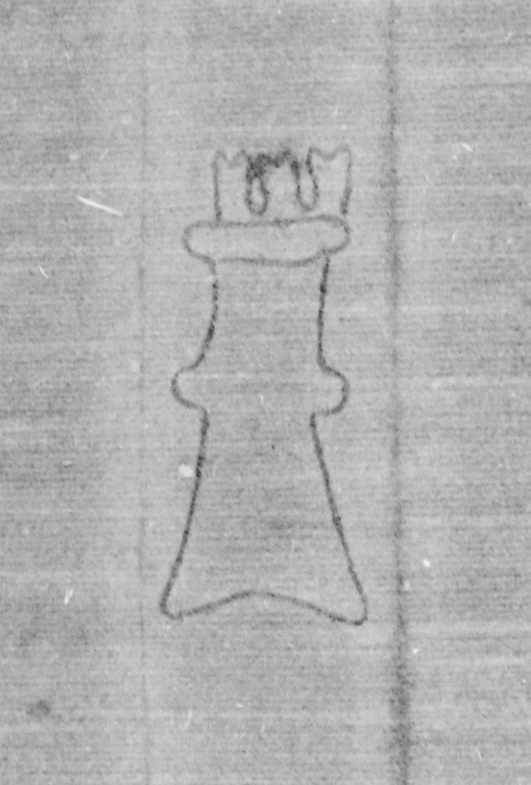
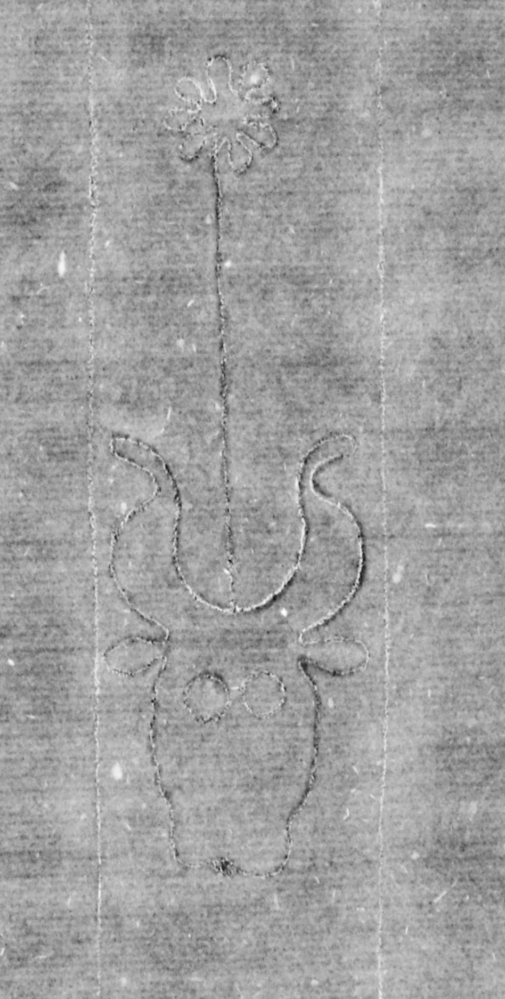
这种纸张有两种不同的水印。[3]单张纸的移除和两种不同的水印可能表明这不是一本特别高等级的书籍。它可能在制作时期附近被划线和编号，在制造商的工坊中使用已经生产的纸张。这种情况也可以解释纸张的移除，切掉单页可能是因为它们质量较差，或者因为它们被其他用途所需要。
[3] 皇家军械博物馆目录条目，记录2465：物理特征：水印：第1-7帖和第12帖：三重齿状塔楼。? Piccard II 207。第8-11帖：牛头，角间有花。? Piccard XII 486。1张纸（第7帖的5/12）有希腊十字patee标记[原文如此]。? Piccard XI 314 […]
目录中提到第三个标记，描述为”希腊十字patee”，但现任图书馆员和我都未能找到这个标记。
当然没有证据表明任何文本缺失；之前的对开页都没有在句子中间被切断。
第1-7帖和第12帖包含一个三重齿状塔楼，宽2厘米，高5厘米（见图1）。Barter Bailey将水印与PICCARD II 207进行比较。[4]这是一个相对常用的水印，有广泛的子类别。根据水印分类系统(Wasserzeichen-Informationssystem)，最接近的可能匹配是II 311，Wasserzeichen-Informationssystem记录了总共546个现存纸张样本，大部分年代为约1438年至1480年。最早的年代样本约为1301年，最晚的为1573年。[5]
第8-11帖包含牛头水印，有眼睛，头上有一朵单茎八瓣花（见图2）。Barter Bailey认为与PICCARD XII 486接近。[6]这在中世纪晚期使用更为普遍，由于其广泛使用，子类别更加多样。Wasserzeichen-Informationssystem中最可能的匹配列出了总共62个例子，大部分来自约1444-1453年。最早的年代样本约为1439年，最晚的为1472年。[7]
两种水印都与十四至十六世纪德国和奥地利各地的造纸厂有关，无法找到更详细的归属。I.34的纸张很可能是从约1430-1450年开始生产的，这遵循了Theodor Gerardy的建议，即这一时期生产的大部分纸张通常预计在生产后三到四年内使用。[8]
[4] Barter Bailey，‘皇家军械博物馆”火药书”’，57。 [5] https://www.wasserzeichen-online.de/cron_distribution2.php?class=006001002001001001002001002&filter1=Realien+/+Bauwerke+/+Turm+(mit+Zinnen)+/+ein+Turm,+frei+/+ohne+Anbau+/+ohne+Fenster+/+mit+Wulst+/+ohne+Beizeichen+/+mit+Binnenzeichnung% （2023年8月10日访问）。 [6] Barter Bailey，‘皇家军械博物馆”火药书”’，57。 [7] https://www.wasserzeichen-online.de/cron_distribution2.php?class=002007002002002001005001&filter1=Fauna+/+Ochsenkopf+/+frei,+mit+Oberzeichen+/+mit+einkonturiger+Stange+/+Blume+/+ohne+weiteres+Beizeichen+/+acht+Blütenblätter+/+mit+Augen% （2023年8月10日访问）。 [8] 参见Theodor Gerardy，Datieren mit Hilfe von Wasserzeichen, beispielhaft dargestellt an der Gesamtproduktion der Schaumburgischen Papiermühle Arensberg von 1604–1650，Schaumburger Studies 4（Bückeberg：n.pub.，1964），64-71，以及Theodor Gerardy，‘Die Beschreibung des in Manuskripten und Drucken vorkommenden Papiers’，Codicologia 5（1980），37-51，38页。
I.34用未指定动物的皮革装订，似乎近期没有重新装订过，使得封面可能与手稿本身同龄。然而，这在没有进一步科学分析的情况下无法验证，这超出了本研究的范围。虽然无法确定I.34副本最初是否作为单一卷册装订，但必须假定它确实在十五世纪的某个时期是这样装订的。这可能是文本第二部分被写成和插图被添加的时期，因为连续编号和页面引用只有在它已经形成一个单一卷册时才可能。这也可能解释了来自略有不同时期的两个独立水印的原因。
回到手稿本身，它由四个不同的部分组成：两个文本部分，一个空白部分，最后是插图部分。正如巴特·贝利所指出的，文本的第一部分（第1r-51r页）是”经典德文《火器书》文本的一个版本”（见图3）。第二部分文本（第52r-61r页）是用不同的笔迹写成的（见图4），这部分直接涉及插图（第84v-114r页）。值得注意的是，在文本的第二部分和插图之间还有书的另一部分，目前是空白的（第61v-84r页），但已经打孔并画线，准备好供书写使用。这意味着I.34留下了未完成的部分，尽管没有迹象表明预期内容可能是什么。《火器书》传统中唯一出现这种情况的其他手稿是纽约斯宾塞收藏馆的Ms. 104。
然而，在一份手稿中存在这四个不同部分，为理解《火器书》的制作原因提供了重要线索。本研究解决的核心问题之一是《火器书》的预期读者群体及其目的。是什么导致它被撰写，如何解释存在相当数量的副本？实际上，《火器书》的用户（读者、所有者和重写者）和接受者是谁？
该手稿无法归属于任何特定作者，文本中也没有提及作者或抄写员身份的参考。文本的两个不同部分用清晰的bastarda字体书写，使用棕色墨水，在打孔纸上单列排列。题注和标题文字用红色墨水书写，似乎是同一手笔在同一时间完成的。文本书写区域约为300
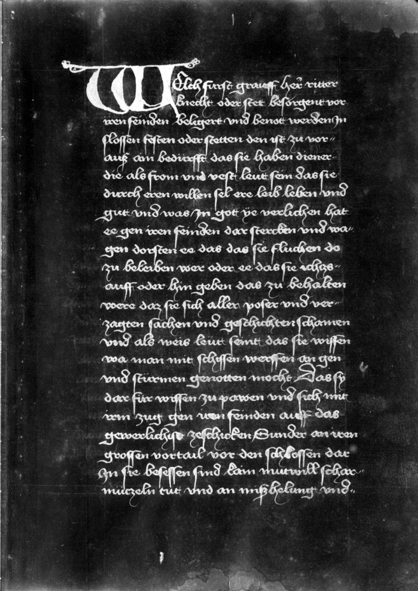
图3. 皇家军械库，I.34，第1r页——第1部分前言（图片由皇家军械库提供）
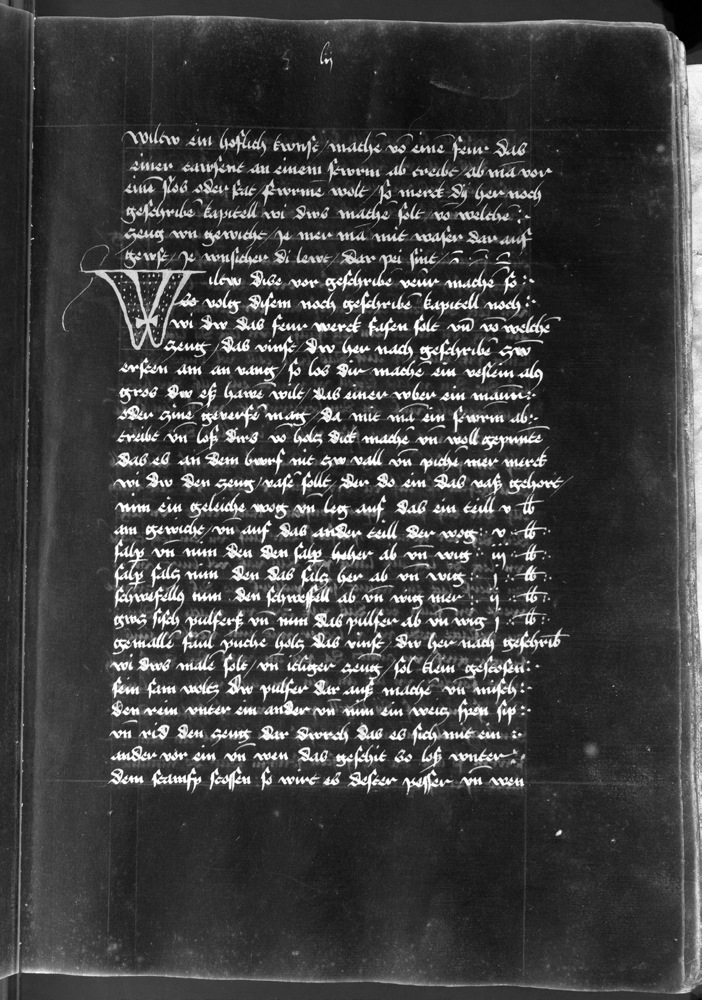
图4. 皇家军械库，I.34，第52r页，第2部分首页（图片由皇家军械库提供）
毫米×220毫米，两个部分的每页平均有22-23行（第1部分）和30-31行（第2部分）。首字母——主要在文本新章节的开头——用红色列出，有时没有插入，有时用棕色墨水描绘以便后期添加，但并非总是完成。虽然文本部分不包含插图，但一些章节标题装饰有轻微的花饰，似乎是由制作文本的同一抄写员完成的。
文本中的两种笔迹之间可以做出明确区分，不仅在书法上，在使用的语言上也是如此。第1部分和第2部分之间的地域差异清晰可辨，两个文本都是用早期新高地德语写成的。《早期新高地德语词典》将其定义为”德国历史上的一个时期，它不仅在时间上先于现代时期，而且为当代文化直到现在提供了历史、社会、经济和精神基础”。
I.34中文本的第1部分被描述为属于第1章中描述的核心《火器书》类型的一部分。在第1v和2r页，文本甚至提供了这本”被称为《火器书》的书”的名称（‘půch das do haist das fewr werkpůch’）。这部分可以细分为七个不同的主题小组——几乎所有这些都可以在其他《火器书》手稿中找到，但顺序不总是相同：
前言——包含任何需要保卫财产免受敌人攻击的统治者都应该在其职员中雇用一名火炮大师的一般指示。
十二个火炮大师问题——列出了任何优秀火炮大师都应该知道的火药火炮的核心原则。
与火药、其组成部分及其用途的各个方面相关的配方和指示。这些指示通常是一些核心配方的版本，略有变化。
• 煮制saltpetre(硝石)
• 制作不同类型的火药：远程的、“好”的
• 恢复变质的火药，以及如何从之前制作的火药中分离核心成分
• 制作火球、恐吓弹
• 在墙上培养saltpetre(硝石)
• 关于哪些成分使火药强劲的指示
• 煮制和净化saltpetre(硝石)
• 制作不同类型的火药：“精湛的”，甚至更好的
• 正确净化saltpetre(硝石)
• 识别掺假和最强效的saltpetre(硝石)
• 为火炮制作合适的石弹
• 识别正确类型的木炭
• 将好的和较差的saltpetre(硝石)混合在一起
• 混合火药的正确重量比例，以及研磨它的好处
• 如何装填火炮
• 如何制作火炮塞子
• 从saltpetre(硝石)中分离盐分，制作”最好的”saltpetre(硝石)，净化墙壁上的saltpetre(硝石)，如果事情似乎出错该怎么办，将粗制saltpetre(硝石)转化为精制saltpetre(硝石)
• 准备硫磺以及哪种是最好的
• 制作最好的木炭
[13] 关于黑人伯特霍德斯（Niger Bertholdus）（或 Berthold Schwarz）作为火药发现者（注意：不是发明者）的作用和功能已有大量著述。在十六世纪早期，他经常被描述为”秘密炼金术的伟大专家”（例如 Turmair/Aventinus 1522/33 – https://lbssbb.gbv.de/DB=1/SET=5/TTL=1/CMD?ACT=SRCHA&IKT=1016&SRT=YOP&TRM=336894708, 5, 516, 22（访问于2023年8月10日））。关于 Schwarz 是否存在几乎没有证据；然而，几乎所有的《烟火书》都包含对 Schwarz 的引用。Schwarz 可能是其他人的替身这一论点得到了卡塞尔手稿 4o Ms. math. 14 的支持，其中 Schwarz（声称是方济会修士）被阿尔伯图斯·马格努斯（多明我会修士）所取代。关于这一点的进一步参考，见第5章。关于黑人伯特霍德斯/Berthold Schwarz 传说的更详细总结，见 Partington，《Greek Fire and Gunpowder》，91–143，Wilfried Tittmann，‘Der Mythos vom “Schwarzen Berthold”’，《Waffen- und Kostümkunde》25（1983），17–30，Franz Maria Feldhaus，‘Was wissen wir von Berthold Schwarz?’，《Zeitschrift für Historische Waffenkunde》4（1906–8），65–69，113–18，
• 制作火药
优质普通火药
“不会变质”的最佳火药
使”已变质”的火药恢复
将硝石、硫磺、木炭混合制成火药
将三种配料彼此分离
关于硝石性质的说明
制作 salpratica 和净化氯化铵
关于如何在夜间开火以及如何在围攻情况下使用火药的说明，包括如何制作破墙火药，以及如何击倒塔楼
制作”遇湿燃烧”的火药
• 制作有色火药
• 制作火箭
• 制作使射击声音更响的火药 • 关于火炮尺寸和如何定位的说明 • 关于破坏火炮的说明
• 关于安全装填和发射火炮的说明 • 关于优秀炮手大师的品质、道德素养、技能和态度的章节。这一章节穿插在配料的一般章节中。[14]
• 继续讲述配料及其用途的章节： • 制作优质引火物
• 制作优质”球形火药”
• 制作”隐藏之火”和”可快速点燃的火” • 关于购买硝石的说明
• 制作硫磺油，“oleum compilatum distillatum” • 使变质火药恢复
[Hans Jürgen Rieckenberg，‘Berthold, der Erfinder des Schießpulvers. Eine Studie zu seiner Lebensgeschichte’，《Archiv für Kulturgeschichte》36（1956），316–22，Kramer，《Berthold Schwarz》，18–32，以及 Kramer 和 Leibnitz，《Das Feuerwerkbuch》，76–77。]
[14] 在《烟火书》的其他版本中，关于”发现者”和炮手大师品质的章节经常（但并非总是）跟随在炮手大师问题之后。
• 净化硝石
• 发射特殊类型的弹药，如杆弹、冰雹弹、刺猬弹 • 快速准确射击
• 在火药中进水的情况下发射火炮 • 发射不同类型的火药和弹药，如使用多个塞子
• 点燃被水浸泡的木桩
• 从围攻塔准确射击
• 制作火箭
• 点燃水面，以及硫磺油和Greek fire的使用 • 检查硝石是否质量足够好，如何测试，以及如何改进
• 为火箭和其他用途制作火药 • 将火药制成 Knollenpulver（“块状火药”）[15] • 为不同用途制作火箭
• 清空火炮
• 发射发光弹
• 制作引火物
• 将铁尖硬化制成”房屋箭”
第1部分以短语”Et sic est finis”（fol. 51r）在页面底部附近结束，这清楚地表明这是一个看似权威文本的预期结尾。
第2部分直接在下一对开页从第1部分继续，没有任何具体的介绍或解释，但显然出自不同的手笔。与第1部分相比，它要短得多，以一个修辞性问题开始，这个问题在第2部分中重复出现：“如果你想制作’宫廷艺术’”（“wiltw ein hoflich kwnst mache”，fol. 52r）。这一部分涉及：
• 制作用于大规模攻击的燃烧装置，射程更远，更严重，用来熏出城堡——使用桶或轮毂
• 制作无法扑灭且”杀死一百人”的弹药
• 制作”秘密烟火”
• 制作四种不同颜色、具有不同属性的火箭 • 制作”硬水”：如何制作，以及用于什么目的
[15] 见第5章”火药”部分对 Knollenpulver 的讨论。
• “燃烧油”或 olium petroleum 的制作和使用 • 关于冷却火炮的说明
第2部分以”这样，你就能看到采取一切预防措施，确保火炮不受损害”（“so scheust dw an alle sorg das der pusche[n] kein schade[n] prengt”，fol. 61r）结束于如何冷却火炮的说明末尾。文本在页面中间结束，可以推断更多文本原本打算在后期添加。
根据与皇家军械库策展人的非正式交流，长期以来人们一直认为这一部分是对第1部分早期指导的独特评论。在本书的研究过程中，至少发现了另一个版本的这段文字，作为包含斯特拉斯堡Firework Book手稿的一部分。然而，斯特拉斯堡版本复制了I.34文本，包括对插图页码的引用，但没有提供任何相关插图。[16] 这表明I.34的第2部分并不像之前认为的那样独特。很可能I.34是较早的版本，在斯特拉斯堡手稿中被完整复制。不过，I.34的第2部分仍可能是在第1部分制作几十年后才编写的。
Barter Bailey认为这些配方是在回忆时写下的，“就像编撰者在编制时向收藏中添加内容或改进它，而不费心回去消除重复”。然而，她承认这种字体”是规整的抄写员字体，而不是做一系列潦草个人笔记的人的字体”。[17] Barter Bailey强调了文本的明显内容与其呈现格式之间存在某种程度的矛盾。令她困惑的是，似乎存在重复，缺乏结构。正如第5章的分析将显示的，重复比之前假设的要少，并且有一个清晰可辨的结构。同时，存在抄写错误和与其他Firework Books的差异，我认为这些更清楚地表明了这个文本的制作目的。
任何早期新高地德语文本都包含地域特定术语和高度本地化的拼写，没有正字法标准化，这个文本也不例外。[18] 文本的两个部分显示出差异
[16][ Strasbourg Ms. 2259, fols 30r–36v.]
[17][ Barter Bailey, ‘The Royal Armouries “Firework Book”’, 58.] [18][ 早期新高地德语被认为是继中古高地德语之后（发生了重大元音变化）成为后来新高地德语最早版本的语言（Thorsten Roelcke, ’Die Periodisierung der deutschen ]
在拼写和术语使用方面的差异。例如，两个部分在相似单词中显示出频繁的元音变化，如从’gemaincklick’（第1部分，fol. 10r）或’gemain’（第1部分，fol. 39r）中的’a’转变为’gemein’（第2部分，fol. 60r）中的’e’。同样，从’lassen’（第1部分）到’loß’（第2部分）的变化是从’a’到’o’的转变。这些元音变化是地域差异的关键指标之一。
火药的三个核心成分在文本中有着明显不同的拼写：‘salpetter’（第1部分）与’salp’（第2部分——几乎总是缩写，除了fol. 59v处拼写为’salpeter’）——表明可能对所提到的成分有了更多的熟悉。在硫磺和木炭的使用上也可以发现差异：‘swebel’（第1部分）与’schweffell’（第2部分），以及’koln’（第1部分）与’kolle’（第2部分）。
使用不同术语既可能是两个文本制作时期之间的语义变化，也可能与不同用途有关：例如，‘puchsen pulfer’（第1部分：fols 1v, 8r, 8v, 13r, 14r, 19r, 21r, 22r, 25v, 29v, 30r, 41v, 46v, 47r和48r）与’sisch pulfer’或’schiß pulfer’（第2部分：fols 52r, 52v, 53v和54r）的比较。两者都被翻译为gunpowder，但术语puchsen pulfer指的是”来自枪的火药”，而’sisch pulfer’指的是”可以发射的火药”。
可以注意到许多其他拼写差异，如’fewr werk’或’fewr’（第1部分）与’feur werck’或’veur’（第2部分）的比较；‘wiltu’（第1部分）与’wiltw’（第2部分）的比较，仅举几例。
在第2部分中，我们还发现缩写数量增加，几乎没有词尾n被完整写出（见fol. 52r，缩写用方括号中的文字展开）。这可能表明写作者更频繁地写作，或为个人笔记而写，而不是主要为他人阅读而制作的东西。另外，出现了短语’los dir machen’（如fol. 52r），可以翻译为”让人为你制作”。这在第1部分中没有出现，可能表明第二作者不太亲自动手，更习惯于指示他人为自己制作物品。这可能是作者和/或抄写员可能改变地位的指示。
在fol. 61v之后，共有22页空白。Fols 84r–114r包含所有插图，都没有任何伴随文字。这些插图在皇家军械库的目录条目中有详细描述。这些插图与十五世纪许多其他相关手稿之间存在明显差异。[19] 归属于
[Sprachgeschichte’, in Sprachgeschichte, 2.1, eds Werner Besch et al., 2nd edn ] [(Berlin and New York: de Gruyter, 1998), 798–815, at 804–6).] [19][ 例如，参见手稿Munich Cgm. 600，题为：]Anleitung Schießpul- ver zu bereiten. Büchsen zu laden und zu beschießen[，其中包含带有德语方言或拉丁语标题的图像，或两者的混合。见第 ]
Bellifortis 或 Büchsenmeister Book 类型的著作往往是文字和图像的结合，文字通常用来详细解释图像。I.54第一部分的文字没有提及插图。在第二部分中，有许多对手稿末尾插图以及文本其他部分的引用。至少一些页码是后来添加的，似乎是同一抄写员但用了不同的墨水（或在不同时间）添加的，因为有些数字看起来占用了比分配更多的空间并延续到后续文字中（fol. 54r），而另一些则留下了比所需更多的空间（也是fol. 54r）。在其他情况下，数字与其余文字不在同一行（例如，fol. 55v）。
特别是，fol. 52v提到”第95页”；fol. 54r提到”第79页”；fol. 55v提到”第95页”和”第96页”；fol. 57r列出”第90页”，后来提到”第90或95页”（额外的’v’或5是上标）；在fol. 60r有对”第90页”上一幅图的引用。在fol. 53v上，有对另一页的引用，但实际的数字没有完成。文字中的空隙意味着这要么是抄写员遗忘了，要么是打算在稍后阶段完成。在fol. 56r上，文字提到”第60或90页”（额外的’xxx’或30被划掉了），再次在数字后留下了更多空间。在fol. 57v上，文字提到另一部分”写在第55页上”。Fol. 53r提到”第55页”，这是与所述配方有些相关的另一部分文字。Fol. 53r提到”第53页”，在文字中仍留有充足的空间。这可能意味着抄写员改变了想法。文字清楚地说明”如你在第53页上所见”，这与之前的引用方式不同（这里作者说”如你在…所述”）。
插图（一些例子见图5、6、7）展现了master gunner进行的活动——在几乎每幅插图中都被画作权威人物的可识别角色。它们大致可以分为三个部分：野外活动（fols 84r–86r, 90r–91r, 和 106v）、工坊活动（fols 85v, 86v–89v），以及其余的技术图纸。然而，由于所有插图都没有标题，对于描绘的意图存在解释空间。例如，它们显示了一些燃烧装置的内部，但不一定提供全面的图像，这导致像Barter Bailey这样的学者根据自己的推测假设来解释插图，使用”显然意图”和”可能是什么”等短语。
[1] 参见’Bellifortis’和’Büchsenmeister Book’的流派区别进一步解释。
[20] Barter Bailey, ‘The Royal Armouries “Firework Book”’, 79 and 80.
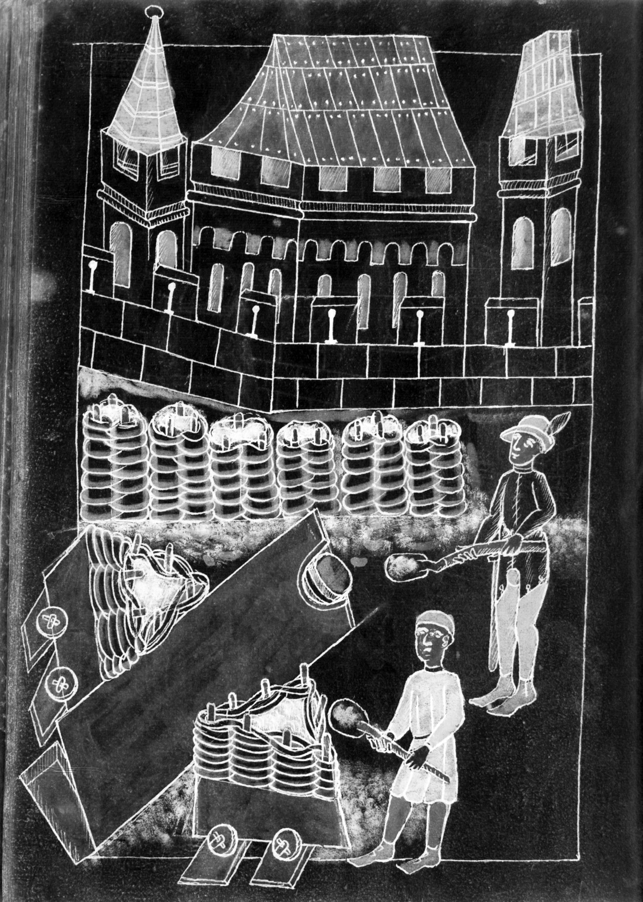
图5. Royal Armouries, I.34, fols 90v（上）和90r（对面）—— 在野外（照片由Royal Armouries提供）
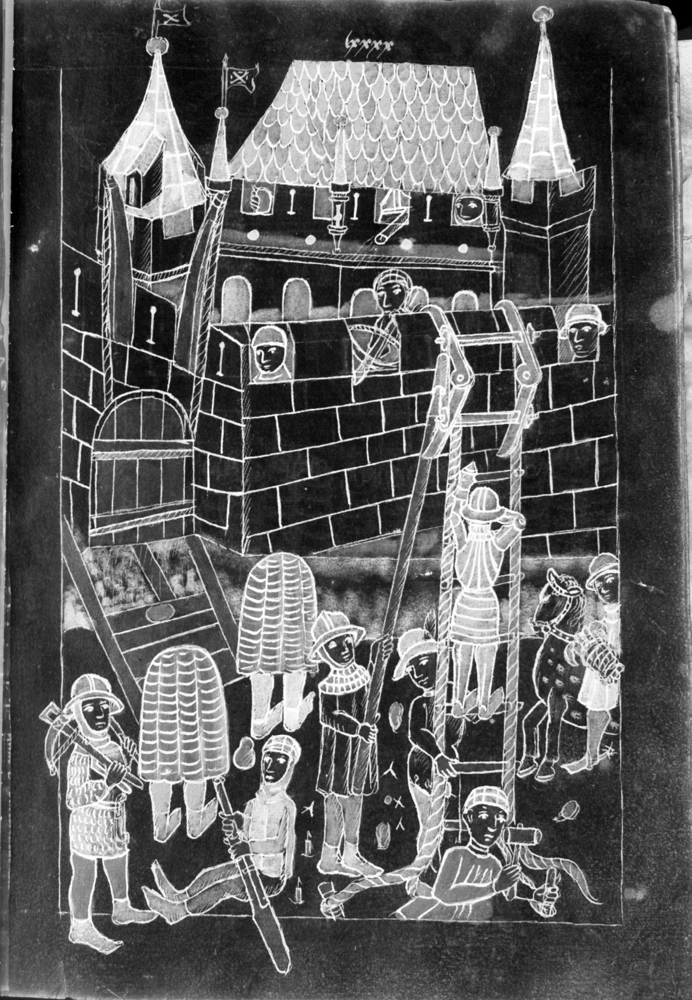
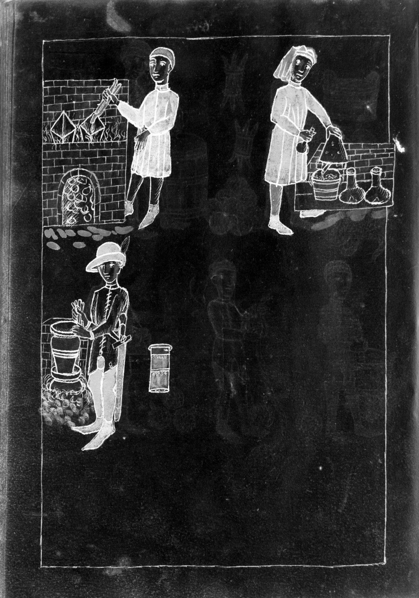
图6. Royal Armouries, I.34, fols 89v（上）和86v（对面）—— 在工坊中（照片由Royal Armouries提供）
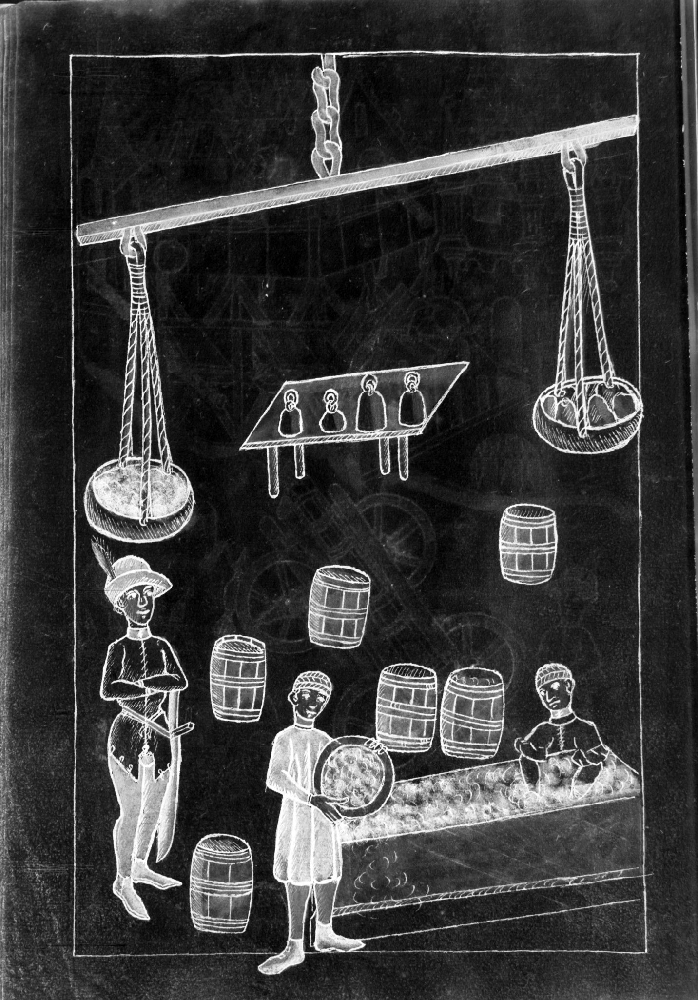
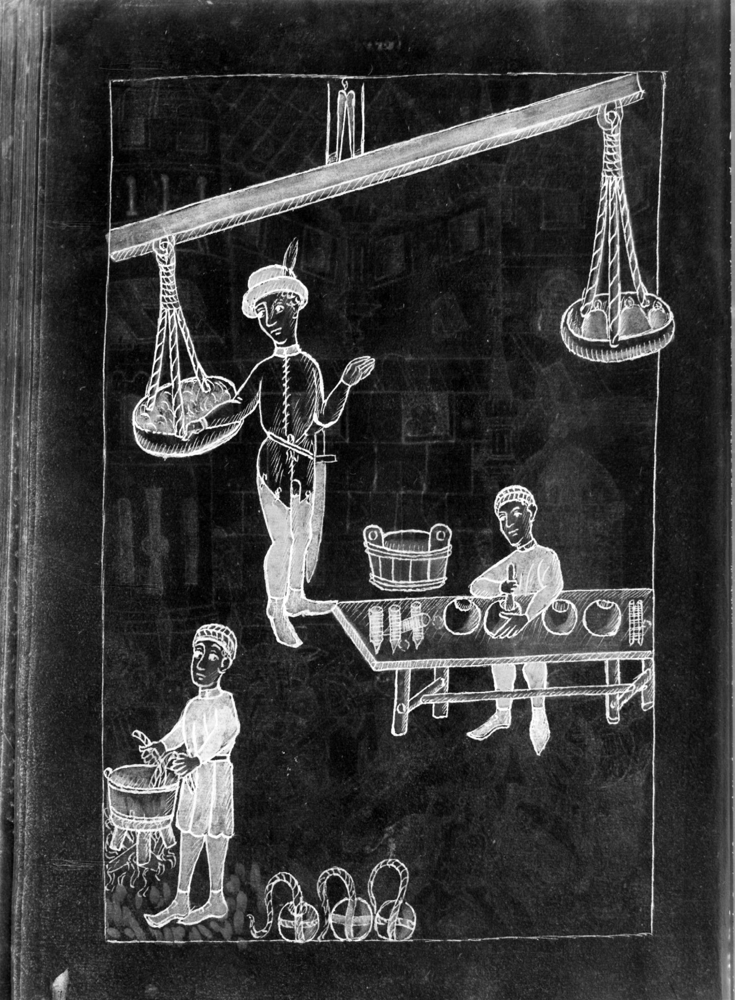
图7. Royal Armouries, I.34, fols 85v（上）和87r（对面）—— 在工坊中（照片由Royal Armouries提供）
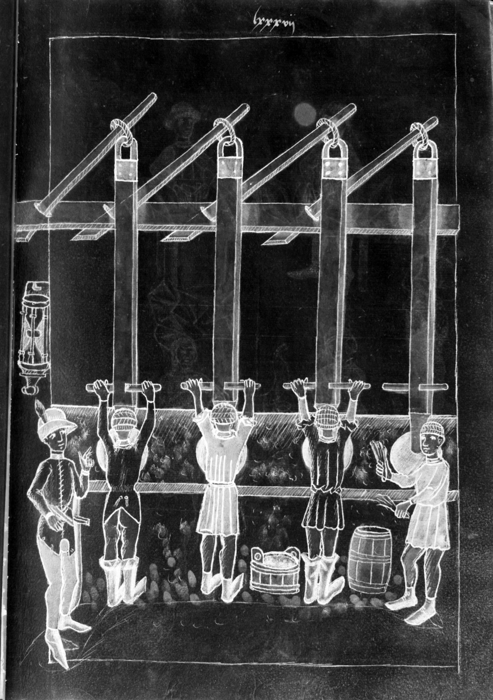
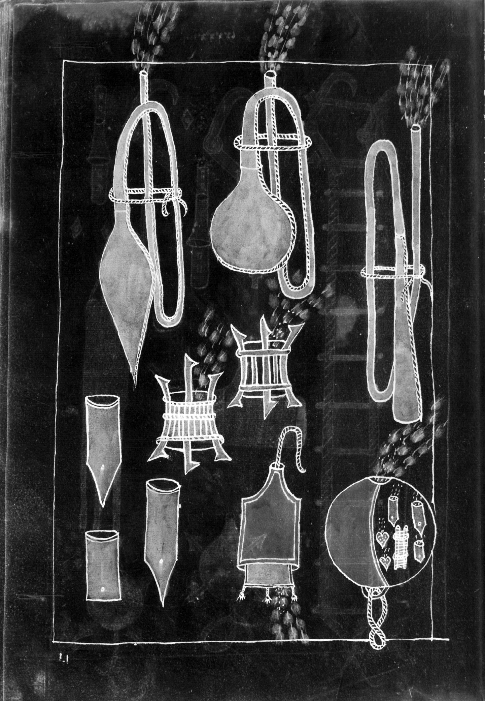
图8. Royal Armouries, I.34, fols 94v（上）和95v（对面）—— 燃烧装置（照片由Royal Armouries提供）
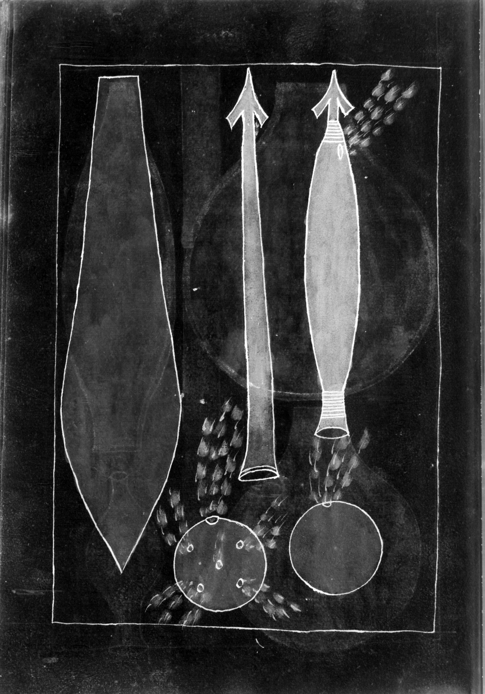
关于其他手稿的作者身份和制作背景的考虑在第1章和第5章中涵盖；这本手稿的所有权历史只能追溯到一定程度。从1950年的收购开始按时间倒序追溯，I.34是Royal Armouries从艺术经销商E. Weil那里购买的，而E. Weil则是从列支敦士登亲王那里获得的——手稿仍保留着书签’Ex libris Lichtensteinianis’。Hassenstein将其列为属于Feldzeugmeister, Ritter von Hauslab-Liechtenstein的副本。这意味着它可能是Max Jähns在1889-91年引用的同一手稿：‘来自Hauslab-Liechtenstein图书馆（维也纳附近的Rossau）的一本珍贵的非常古老的手稿，其中添加了一本烟火配方书和一个精美插图集’。在此之前，1877年，一些I.34手稿页面的插图，当时也属于Hauslab家族图书馆，由Essenwein发表。更早的1868年，可能是同一手稿被列为Franz Ritter von Hauslab（1798–1883）的财产，他是一位博学者，一生从事军人、工程师和制图师工作，但无法确定他从何处获得。看起来这可能是同一手稿，但这无法证实。在此日期之前，没有发现进一步的所有权痕迹，这与之前讨论的Firework Book其他已知副本的所有权情况一致。
任何单一手稿都是一个复杂的物品，有其自己的历史和来源。它可以包含正文、副文本、页边注释、图像、注解、磨损痕迹和装订。它多年来被拥有、修改、更改，经常被切割和重新装订。I.34的来源无法追溯到十九世纪之前这一事实并不意味着它不应该被研究。对它的研究需要融合古文字学、外交学、史学、语言学、技术和考古分析。正如文化史学家Peter Miller在论述物品研究时所说，
[21][ Hassenstein，]Feuerwerkbuch[，87页]
[22][ “……珍贵的、非常古老的Hauslab-Liechtenstein图书馆手稿（维也纳罗绍）]
[附有烟火技术配方书和一个优秀的图集” (Jähns，]Kriegswissenschaften[，393页)]
[23][ August von Essenwein，]Quellen zur Geschichte der Feuerwaffen[，2卷（莱比锡和]
[格拉茨：学术印刷出版社，1877年[1969年]），111页和B.1页——Essenwein约1430-1440年的资料]
[24][ Karl Schneider，“Hauslab骑士阁下野战大师图书馆中炮兵]
[著作和作品的汇编和内容说明”，]Mittheilungen über Gegenstände der Artillerie- und]
[Kriegs-Wissenschaften. Hg. vom K. K. Artillerie-Committé[（维也纳：Braumüller，1868年），]
[123-211页，第126页]
所需要的是”科学家对材料的知识、从业者对技术的知识，以及历史学家对背景的知识”[25]。这种知识范围也适用于对该手稿的研究。
本章描述了I.34的物理属性、格式和历史，并提供了其内容和结构的概要。下一章将提供转录和翻译。
[25][ Peter Miller，]History and Its Objects: Antiquarianism and Material Culture since 1500]
[（伊萨卡和伦敦：康奈尔大学出版社，2017年），16页]
本章提供皇家军械库手稿I.34的文本和英文翻译。将版本和翻译放在本书的中心位置，对于理解Firework Book传统和I.34在其中的地位是不可或缺的。只有在提供完整翻译后，才有可能详细分析Firework Book的内容。在版本和翻译之前，重要的是阐述我的关键编辑原则。
在转录和翻译Firework Book时，我试图复制手稿中出现的文本。由于不存在原稿的传真版，我根据被称为古文书学学科的原则复制了文本的抄本，通过表现手稿中能找到的一切来实现。转录的指导原则是忠实于原文，意图是提供原手稿的所有核心要素。
转录的目标是让熟悉现代新高地德语的读者尽可能容易地理解德语文本。然而，单词的拼写按手稿中的写法采用，没有统一化，以便学者能够观察任何语言上的特殊特征。
决定逐行保留手稿文本的页面布局，允许跨行的单词保持原样。在手稿提供连字符的地方包含了连字符。
当出现明显的抄写错误时，在转录中标出。抄写错误，如单词或行重复都被包括在内，划掉的部分也是如此。
按照惯例，在整个过程中遵循以下规则：元音v和j被保留，没有转换为u和i，例如’vnd’而不是’und’。
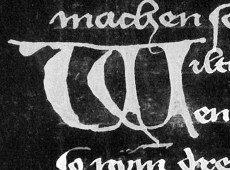
图9. 皇家军械库，I.34，第6r页（左上）、第14r页（右上）、第42v页（左下）和第57r页（右下）——第1部分和第2部分的首字母（图片由皇家军械库提供）。
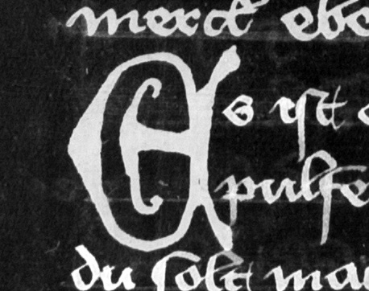
手稿文本的两种颜色用粗体表示红色，非粗体表示棕色。放大的首字母用较大的字体复制，但标准化——这在手稿中不是这种情况。

超越外交版本，缩写被扩展，以斜体添加到文本中并放在方括号内。
变音符号已被复制，通常表示元音的延长，但只有当明确这些是实际字符而不是抄写疏忽或笔误时才会这样。
为了现代读者阅读的方便，遵循了以下编辑决定：
• 存在大写字母的地方，保持原样出现。
• 仅在原文指示的地方提供段落间距。
然而，除非文本中提供，否则不添加标点符号。
对于英文翻译，我始终尝试将散文翻译成没有接受过特定技术培训的现代英语读者应该能够理解的英语形式。
翻译尽可能紧密地遵循原文，特别是旨在反映常常单调和重复的句子结构。这遵循翻译理论方法，在可能的情况下大致进行”逐字”翻译，只有在必要时选择”意译”方法，正如翻译理论家Susan Bassnett所讨论的[1]。例如，最常使用的单词之一”vnd”重复的频率比英语文本中通常的情况要多。被认为有助于澄清的添加内容以斜体形式添加并放在方括号内。在意义不明确的段落中，已在翻译中提供解释尝试，并在解释性脚注中引用。
翻译的意图是尽可能接近原文，以便与原早期新高地德语进行交叉参考。这导致了非常直译的结果，甚至句子结构也只在需要符合英语语法规则时才重新安排，目的是尽可能重现”作者的文本”，同时产生雅克·德里达定义的”相关翻译”。
为了减轻读者的负担，已添加了现代标点符号和大写字母。
转录和翻译并排放置，以便在需要时进行交叉参考和交叉阅读。但是，在原文左侧添加了行号。原文中的任何上标和文字添加都作为完整的文字行添加。由于文本第2部分在手稿中使用较小字体书写，为了保持文本和翻译在一页上（如第1部分），页边距已减小。
皇家军械库 I.34 – 第1部分
[fol. 1r]
任何王子、伯爵、领主、骑士、侍从或城镇，如果经常担心他们可能被敌人围困并在其城堡、要塞或城镇中受到威胁，
他们需要提前拥有仆人
他们是可靠且有能力的人，并且作为荣誉问题，将献出他们的灵魂、生命、身体、财产以及上帝赋予他们的一切
来对抗他们的敌人。而且
他们[应该]敢于勇敢，而不是逃跑，坚守阵地而不是
放弃他们应该保持的一切，在这种情况下，他们应该为所有坏的和
沮丧的事情和事件感到羞耻。
并且是足够聪明的人，知道
何时可以开始射击
并且可以被迫攻击。他们
需要为此知道如何建造并与
他们的军队一起对抗敌人，以最
熟练的方式部署。特别是在他们对
被占领城堡的巨大优势面前，不要
任性地争吵
并且在误解和
[fol. 1v]
分歧中，在良好的友谊中相互
保持，在这些事情上根据最明智的
建议在他们中间处理，以及哪个
王子、伯爵、领主、骑士或侍从或
城镇拥有这样的可靠、明智的仆人和
坚定的人，他们可以很好地信任自己。然而
他们需要在身边有能够工
作、约束和能干的人，如铁匠、木
匠、鞋匠、磨坊主、面包师和其
他工人。特别是好的火炮大师
和射手，以便他们可以帮助自己，当这样做时，人们从好的火炮大师那里得到好的安慰，所以每个
王子、领主、骑士或侍从和城镇都需要
火炮大师是好的大师
并且所有那些很好地准备油和火药的人
以及确切的攻城起点。[5] 因此他们应该知道如何建造[6] 以及如何最熟练地操作他们的装备[7] 对抗敌人。特别是在城堡前的巨大优势，
他们不应该进行蓄意的小规模冲突或其他不当行为，
[fol. 1v]
破坏两[人]之间的良好友谊。[他们应该]以一种能够充分利用最佳建议的方式彼此相处。任何
拥有如此称职、明智、坚定和勇敢仆人的王子、伯爵、领主、骑士、侍从或
城镇都可以放心。不过他们需要有称职的工人，能够担任铁匠、木匠、
鞋匠、磨坊主、面包师或其他
工人的工作。特别是[他们需要]优秀的master gunner(火炮长)和gunner(炮手)，他们可以依赖这些人。
当依靠优秀的master
gunner(火炮长)时，那么每一个
王子、领主、骑士或侍从，以及城镇
都非常需要[他们的]master gunner(火炮长)是优秀的大师。而且[他们]能够很好地准备所有的油类和gunpowder(火药)，
[5][ ’][genotten][’ 或 ’][genöten][’ – ‘催促，强迫’ (][Frühneuhochdeutsches Wörterbuch Online][,]
[http://fwb-online.de/go/gen%C3%B6t.s.4adj_1514015990). 这句话在原文中不够]
[清楚，但保持了直译。它似乎更像是]
[口头评论的书面版本，这是几乎所有]
[Firework Books][中经常重复的公式，其含义是’应该保持所有装备和人员]
[而不是投降，这是糟糕和令人沮丧的行为，他们应该]
[为此感到羞耻。他们应该足够明智，知道何时开火，何时攻击。’] [6][ 这很可能指的是防御结构，以及master gunner(火炮长)的]
[防御作用 – 在][Firework Book][的一些副本中添加了一两个词]
[来强调这一点，Dillingen Ms. XV 50, fol. 1r, ’][b][ŏ][ssywerck vmd brust weri][’ (意思是]
[‘堡垒和gabion(蛇笼)’), 以及在Weimar Manuscript Q 342, fol. 55r, ’][für Anläufe, ]
[Stürme, Einwerfen][’ (‘用于攻击、推进和突击’)。] [7][ ’][zug][’ 或 ’][zeug][’ – ‘物品’的集合术语，这里指’装备’或’辎重’ – 尚未被]
[Frühneuhochdeutsches Wörterbuch][ 收录。]
[87]
konnen vnd vi auch andre stuck die nücz
vnd gut sind zu dem puchsen pulfer zu
fewrpfeilen zu fewr kugeln die man wirft
20 zu fewr kugeln die man auß der puchsen
schewst vnd zu andern fewr wercken vnd
sachen die in disem půch das do haist
[fol. 2r]
1 das fewr we[r]ckpůch her nach geschriben
sten vnd dar vmb das der stuck so vil sind
die ein ÿedlicher guter puchsen maister
konnen sol vnd das sie alle ain maister
5 nit wol bedencken noch in seinem sinne
behalten mag Dar vmb so stet her=
nach geschriben alle die stuck vnd kunst
die ein ÿedlicher guter puchsen maister
kinnen sol vnd wie ainer ain ÿedlich
10 stuck von an gang piß an das end auß
gericht vnd gut bereiten vnd konnen sol
do mit er dan[n] mit der andern leut hilff
[88]
[Royal Armouries I.34 – 第一部分]
以及其他[8] 对制作gunpowder(火药)、
fire arrow(火箭)和[以及]可以投掷的fire ball(火球)有用且有益的东西。而且[它们可以][也可以制成]从gun(火炮)中射出的fire ball(火球)以及其他firework(烟火)和
载于这本被称为
[fol. 2r]
firework book(烟火书)中的事物，如下所述。由于每个优秀的master gunner(火炮长)[9]
应该掌握的事物如此之多
，而一个大师无法全部
很好地记住并保持
在脑海中；因此下面写着
每个优秀的master gunner(火炮长)
应该知道的所有项目和方法[10]
以及他如何能够制作每个
项目从头到尾，
并能很好地准备它们且应该能够做到这些，以便在其他人的帮助下
[8][ ’][stuck][’ – 可以指任何东西，从’piece(片)‘到’part(部分)’、‘element(要素)’、‘item(项目)’，]
[有时简单地指’things(事物)’。]
[9][ 这也可能意味着’gun master(火炮大师)’ – 词序是有争议的。][Frühneu-]
[hochdeutsches Wörterbuch Online][, http://fwb-online.de/go/b%C3%BCchsen-]
[meister.s.0m_1513302890)。这与]
[’][Büchsenschmied][’ 的角色有明显区别 – 负责制造gun(火炮)的铁匠 (][Früh-]
[neuhochdeutsches Wörterbuch Online][, http://fwb-online.de/go/b%C3%BCchsen-]
[schmied.s.0m_1513341043.]
[10][ ’][kunst][’ 是一个非常广泛的术语，有许多不同的适用用法。][Frühneuhoch-]
[deutsches Wörterbuch][, vol. 8, col. 1830, 为]
[’][kunst][’ 提供了两个可能适用的定义：][ 定义3：‘knowledge(知识)、expertise(专门技能)、insight(洞察)；也指specialist knowledge(专业知识)、training(训练)’ ]
[(’][Wissen, Kenntnis, Kunde, Einsicht [...]; auch ’Gelehrsamkeit, Fachkenntnis][’)，或][ 定义4：‘Science(科学)；特别是作为art(艺术)或science(科学)基础的规则和法规，theory(理论)、methodology(方法论)’ (’][Wissenschaft; speziell: die einer Kunst oder ]
[Wissenschaft zugrundeliegenden Regeln, Theorie, Methode][’)。][ 在这种语境下，’Method(方法)’被认为是英语中最接近的近似词。]
[术语’][kunst][’ 类似于英语中’art(艺术)’一词的使用，同样经历了]
[几个世纪以来含义的巨大变化。详细]
[讨论见第5章。]
[89]
die peÿ im sein ein ÿedlich schloß vest vnd
stat behalten mug vnd von der kunst
15 die zu der buchsen gehort geschechen
第十二问，同样涉及每个
问题，特别是一个良好的指导
和教导。第一问
[第]一问是关于火是否将石弹从炮管中推出，还是火产生的蒸汽
推出石弹。现在许多人说
火具有推动石弹的力量。
[fol. 2v]
我说蒸汽具有这种力量
例子，举个例子：取一磅好的gunpowder，将其放入一个坚固的酒桶中
他能够守住任何城堡、要塞或城镇。关于属于火炮的”技艺”
出现了十二个问题。因此，对于每个问题都提供了良好的
信息和指导。第一问
[第]一问是关于火是否将石弹从火炮中推出，还是来自火的蒸汽
推出石弹。许多[人]认为是火具有推动石弹的力量。
[fol. 2v]
我说：蒸汽具有这种力量
例子，举例来说：取一磅好的[gun]powder，将其放入一个坚固的酒桶中
[11][ ‘schloß’和’vest’之间有细微差别：这里用作修辞重复，]
[’vest’指任何大小的防御工事。] [12][ ‘geschechen’是一个具有多重含义的动词，如’发生’或’出现’。这里]
[选择”arise”的翻译来体现因果关系。] [13][ 作者经常使用’gut’、‘recht’或’wol’等术语，以及比较级]
[如’pöß’或’pößer’，或最高级如’pester’。所有这些都是主观的、]
[情感性术语，有时可以翻译成更技术性的语言，如]
[‘准确的’或’可靠的’。然而，为了这次翻译，决定]
[忽略情感和主观术语的意义，通常用一个]
[更不精确的’好的’来翻译。]
[14][ ‘弹丸’、‘圆形弹丸’、‘石球’。] [15][ 这里的字面翻译应该是’压力’。] [16][ 作者重复了相同的词——先是拉丁语，然后是德语。Früh-]
[neuhochdeutsches Wörterbuch在定义3下列出’Beispiel, Verhaltensweise, die ]
[anderen zum Vorbild oder (seltener) zur Abschreckung dient; Vorbild, Muster, Lehre’]
[一系列例子，其中’beispiel’与’exempel’或’lere/]
[leer/lern’一起使用(]
[Frühneuhochdeutsches Wörterbuch Online，http://fwb-online.de/go/]
[beispiel.s.2n_1543441567)。有关该主题的更多讨论见第5章。] [17][ ‘semig’ ——在Freiburg Ms. 362中，该术语被列为’sämig’——Kramer将其解释]
[为一个测量单位’一saum的体积[约150升]’(Kram-]
[er and Leibnitz, Das Feuerwerkbuch, 22——未提供参考文献)，Nibler声明]
[’无法给出明确定义。Hassenstein在第43页的解释，认为它]
[是厚壁的，这必须被质疑。Kramer使用约150升的测量。最]
[可能的是这指的是约30-40升大小的桶。‘(’Eindeutige Erklärung ]
[nicht möglich. Hassenstein S. 43]
[(sämig=dickflüssig=>dickwandig!) ist zu widersprechen.]
[Kramer. S. 154, führt ‘sämig’ auf ‘Saum’, ein altes Hohlmaß von ca. 150 l zurück. Am ]
并将其密封好，使得除了
你点火的火门之外，没有蒸汽能够
逃逸，当你点燃它时，
gunpowder立即燃烧，蒸汽冲破
酒桶
[第]二问，关于saltpeter还是sulphur
具有推动石弹的力量，我说两者都有，因为当gunpowder在火炮中
点燃时，sulphur如此
炽热，而saltpeter如此寒冷，以至于
寒冷无法忍受炽热，炽热也无法忍受
寒冷，因为寒冷和炽热是
两个相互对立的事物，因此它们互相
无法容忍，然而
一个没有另一个就无法
用于制作gunpowder
[第]三问，关于少量gunpowder是否更容易
破坏火炮还是射得更远
[verständlichsten scheint die Rückführung auf die Traglast eines ‘Saum’-Tieres – also ein ]
[mittelgroßes, von z. B. einem Maultier tragbares Faß mit etwa 30-40 l Fassungsvermö-]
[gen.’ (Nibler, Feuerwerkbuch, 49)).]
[ 上述所有对’sennig’的假设都没有证据，也无法确定这一理论的来源 ]
[ 因此，采用更一般的翻译。] [18][ ‘widloch’ —— ‘火门’。]
[‘zehant’ ——字面意思是’在手边’、‘到手’——这里翻译为’立即’(Baufeld, ]
[Kleines frühneuhochdeutsches Wörterbuch, 261)。] [20][ ‘pricht’意思是’破裂’，但大概暗示’爆裂’。] [21][ ‘ander’字面意思是’其他的’，但由于早期新高地德语不使用]
[基数词’second’，所有参考资料都将此作为可能的翻译。] [22][ 这里指的是中世纪的’性质’概念——来自希腊 ]
[自然哲学——这一概念在15世纪的欧洲被广泛接受和评论，作为一个自然哲学的核心原理。它将 ]
[自然分为四种性质：‘热’、‘冷’、‘干’、‘湿’——源自四元素 ]
[‘火’、‘土’、‘气’、‘水’。这些被视为 ]
[自然界的核心构成要素（]Frühneuhochdeutsches Wörterbuch[，第8卷，510–11页）。详见第5章。]
[23][ 与术语’][stuck[’类似——如上所述——这可以指任何 ]
[事物，从’片段’到’部分’或’元素’或仅仅是’物品’。] [24][ ’][beld[’ —— ‘很快’、‘迅速’，或者在这里更可能是’很可能’。]
als ob man die buchsen filt piß an den
kloczen Da sprich ich wen[n] man die puchsen
[fol. 3r]
1 fult piß an den kloczen so mag das fewr
vnd der dunst nicht weitten gehaben den
schuß zu verbringen piß das daz fewr ain
tail hindersich auf print vnd das pulfer
5 den klocz auf slecht Ist aber die puchs
den drittail piß an den vierden geladen So
mag das pulfer gemainklich ains mals
prin[n]en vnd mag der dunst sein kraft ver=
pringen vnd schust weiter vnd pricht die
10 puchs vil ee den von dan[n] der si fult mittin
gestossem pulfer piß an den klocz
如果人们将大炮装填到
塞子处。[25] 对此我说：如果人们将大炮
[fol. 3r]
装填到塞子处，那么火药
和蒸汽就没有足够的空间[26]来发射弹丸，直到火药部分[27]向后燃烧[28]，火药到达塞子。但如果大炮
装填三分之一到四分之一，那么火药可以一次性燃烧。[29]
蒸汽可以使用其力量
射得更远，比用
捣碎的火药[31]装填到塞子处的大炮更容易炸裂[30]。
第四个问题[是]用石灰木[32]制作的石灰塞能否更好地推动石弹，或者用橡木和山毛榉等硬木[制作的]能否[更好]，如许多师傅所证明[33]的那样。以及
[25][ ’][klotz[’——可以是用于多种用途的任何木块（见][Frühneuhoch-]
[deutsches Wörterbuch[，第8卷，1147页定义1）。]
[26][ 这里可能是比较不直观的意思，指有’空间’或’余地’。] [27][ ’][ain tail[‘——这里指’部分地’。]
[28][ ’][hindersich[‘——这里指’向后’（Götze, ][Frühneuhochdeutsches Glossar[，122页）。] [29][ ’][gemein[‘——意思是’普通的’（][Frühneuhochdeutsches Wörterbuch[，第6卷，828页）。] [30][ 这一部分原文不够清晰。文本暗示最好只部分装填火药室，但同时又暗示 ]
[大炮爆炸或碎裂的风险更高。这是一个句子中同时使用的积极和消极 ]
[后果。一种可能的解释是’高风险’策略，可能有更好（或可能更糟）的结果。] [31][ 这很可能是关于是否使用湿混合或干混合火药的说明。 ]
[感谢Clifford J. Rogers的建议。这确实似乎暗示了一个 ]
[制造过程，因此翻译为’捣碎的’是指后面提到的 ]
[捣碎机。]
[32][ ’][linder[’——既可以指’椴树’这种树，也可以是一般性的 ]
[软度描述。因此也可能意思是’软的’，但在这里（与橡木和山毛榉比较） ]
[更可能是椴树。]
[33][ ’][prieffen[‘或’][preisen[‘——模糊术语，可以翻译为’需要’或’显示’。 ]
[这可以看作等同于常见的拉丁术语’][probatum est[‘，意思是’证明’ ]
[而不是’已证明’。]
klocz kurcz oder lanck dür oder grüen sein
süllen Sprich ich die herten klocz sein nit
gut wann dar vmb sie sein zeherte vn[d]
lassen sich nicht treiben piß auff sein
20 stat vnd behebt den dunst vil paß dan[n]
die herten kloczen Item der klocz sol
nit lenger sein dan[n] er brait seÿ die peste[n]
dürn clocz die man gehaben mag die
[fol. 3v]
1 mach von dürm erlem holcz Aber die pesten
grünen klocz die macht man auß grünem
erlem holcz Aber die pesten grüenen klocz
macht man auß pirckeim holcz als pald
5 es von dem stain[n] gehawen wirt so mach
sie als do vor stat
[D]ie funfft frag ob der stain ver gang so er hort ligt Sprich ich ye herter der stain ligt ÿe herter er get also das er
10 gar wol verschopt seÿ daß der dunst do
von nit gen mug So wirt der dunst starck
vnd schewst weit vnd hert
所说的塞子应该是短的还是长的，干的还是绿的。我说：硬塞子不
好，因为它们太硬了，
无法被推到适当位置。[较软的塞子]比硬塞子能更好地保持蒸汽[会]。因此，塞子的长度不应超过其宽度。人们能得到的最好
干燥[34]塞子[是那些]
[fol. 3v]
可以用干燥赤杨木制作的，但最好的绿塞子是用绿色
赤杨木制作的。但最好的绿塞子
是用桦木制作的，一旦
它从树干[35]上砍下来就制作，按照前面所说的方法进行。[36]
第五个问题[是]如果石弹压得紧，是否射得更远。[37]我说：石弹压得越紧[38]
石头在里面越紧[39]，它射得就越猛烈。它必须装得非常紧[40]，这样蒸汽就不会逃逸。这样，蒸汽就会变得强烈，
枪就会射得远且有力。
[34][‘düren’ – 既可以表示”干燥”也可以表示”稀薄”。在这个语境下，“干燥”似乎更符合上下文。]
[35][‘stain’或’stam[m]’ – 可能是原文中的抄写错误，因为在这个语境下更可能指’stam’ – “树干”，而不是’stain’ – “石头”。]
[36][作者使用了相互矛盾和重复的陈述，先说”最好的木材”是”桤木”，然后又说”最好的木材”是”桦木”。两种情况下，作者都使用了最高级。可能存在可获得性问题或”更好用途”的问题，但德文原文没有提供这方面的说明。]
[37][可能指”更紧”或”更合适”。]
[38][‘herter’ – ’hart’的比较级 – 字面意思是”硬的”，但也与一系列含义相关，如”坚固的”、“结实的”、“重的”、“强的”、“猛烈的”或 – 如这里的 – “紧的”。]
[39][虽然选择了字面翻译，但这里的意思可能与”更远”有关。]
[40][‘verschoppen’ – 这里用作”阻塞”的意思。]
第六个问题是，用来楔入石头的楔子[41]应该用软木[42]还是硬木制作。我说：确保石头在枪中装得合适，
它[石头]的周长不超过所需，并且必须装得紧密。然后[43]你必须用橡木制成的薄而硬的楔子
来楔入它。但如果石头有点太
小，装不紧，那么你应该用薄楔子来楔入它。[44]
第七个问题是，当用冷杉木制作时，这些楔子
[fol. 4r]
应该厚还是薄。我说：当用冷杉木制作时，楔子应该厚或薄。[45]但如果你确实用这种[木材]楔入石头，那么确保你用一小块铁[46]在石头处把它切掉，这样楔子就不会
超过[47]石头。
第八个问题是，应该用什么来堵住石头，使蒸汽
不会逃逸。[48]我说：取蜡
用蜡涂抹一块布，简单地做成绳子，然后用
好的装填杆，把它塞在石头和
枪之间围绕楔子的位置，这样它就会射得远。
第九个问题是，枪用两种火药比用一种火药射得更远吗。当你装填枪并想要开火时，确保你有
两种火药，把好的
[41][‘pissen’ – 见《早期现代高地德语词典》第4卷，482页：意为”一块”(‘Brocken, Stückchen’)或更具体地说(Götze, 《早期现代高地德语词汇表》，34页)‘bisse’ – ‘Keil’ – “楔子”。]
[42][“lime” – 这里指”软的”。]
[43][意思是”在那种情况下”。]
[44][最后两句话是矛盾的。要么是其中一个，要么是另一个，两者不能同时正确。这必须是抄写错误。]
[45][这个问题的”答案”似乎是矛盾的。可以理解为作者表达了其中一种比另一种更好的偏好，但最终差别并不大。]
[46][见Christa Baufeld，《早期现代高地德语小词典：早期现代高地德语诗歌和专业文献词汇》(蒂宾根：Max Niemeyer出版社，1996)：‘schrot’ – “一小块，切掉的片段”(‘abgeschnittenes Stück’)。]
[47][‘fur’的意思是”在…前面”或”在前方”(’vor’)。]
火药放在底部，把差的放在上面，这样你射得比用一种火药更远，因为这是两种火药[性质]相反所致。
第十个问题是，石头是否应该
[fol. 4v]
接触堵塞物。我说，石头应该紧靠堵塞物。你应该拿起堵塞物，用布
包裹它，然后把朝向石头
那端的堵塞物烧一下，使它变硬，
把石头紧靠着装上，楔好
并堵好，这样蒸汽
就必须共同推动它们。
第十一个问题是，火药是否最好
以颗粒状装入枪中
[48][不会逃逸。]
底部放劣质火药，上部放优质火药：
这样射程比单一火药类型更远，这是由于两种火药特性相反的缘故。
第十个问题是炮弹是否应该接触
[fol. 4v]
塞子。我说：炮弹
应该紧贴塞子。你应该
取塞子并用一块布包裹，应该——仔细观察时——燃烧塞子中靠近炮弹的部分
使其变硬。然后
将炮弹紧紧装入并推挤
彻底楔紧，使蒸汽必须像往常一样将其推出。
第十一个问题是火药放入火炮时是否最好使用Knollenpulver（块状火药）
或研磨火药。我说：两磅Knollenpulver能够
完成三磅压制火药所能做的工作。
但你应该制备和制作Knollenpulver，
如本书下文所写。
第十二个问题是一磅火药如何用其力量
抛射重石弹以及其正确
重量应该是多少。我说：火炮无论大
小，一磅火药
应该能推动九磅重的石弹。
[fol. 5r]
如果石弹较轻，那么火药用量也相应减少。下文记述
如何熬煮硝石。
如果你想熬煮硝石，取强碱液如下文所述，将硝石放入其中，让其熬煮如煮鱼一般长的时间。然后
倒入一个干净的盆中
让其冷却，将碱液
从硝石中倒出，将硝石重新放回小锅中
熬煮直到一半或
四分之一被煮掉。然后让其
冷却并再次倒出，
随后充分干燥硝石
在你混合之前。这样你就能提纯已经
提纯过两次或三次的优质硝石。但如何
熬煮硝石。
如果你想提纯硝石一担
或多或少，取纯净的水或酒，将硝石
放入其中，使硝石不变白，
水面只比
[fol. 5v]
硝石高出一指宽，放在
火上，当开始沸腾时
每一担加入一磅sal-ammoniac（氯化铵）
和六两verdigris（铜绿）或同等数量的优质
没食子，按前文
所述时长熬煮，然后倒出
让硝石凝结，然后将
水重新放在火上熬煮
再如前述熬煮半个
如果你想净化一百重量，多一些少一些，那么取清水或酒，将saltpetre加入其中，使saltpetre不会变白
且水只需高出
saltpetre一个
手指的高度。将其置于火上，当开始沸腾时
对每百重量加入一磅salammoniac和六lot的verdigris以及等量的石灰石，按照前面所述的时间煮沸并倒出。让
saltpetre静置，将
水重新置于火上煮沸
直到减少到一半
向其中加入一磅salammoniac，当它如前所述减少时
将其倒出并静置。
这样你就得到了任何人都能找到的最好的saltpetre。特别是如果你让它在容器中充分干燥，当你这样净化它后，它就会分离。
如何制作远程射击火药
如果你想制作最好的远距离射击火药，取三
磅saltpetre、一磅灰色硫磺、
两夸脱木炭和半settit的arsenicum album，将它们一起研磨。取一夸脱优质白兰地
和一settit的camphor，煮沸使其减少。当它冷却后倒入（之前混合的）火药中并一起研磨，让它充分干燥。这样你就有了
能找到的射程最远的火药。
但是如何制作好火药
如果你想制作最强的火药，没有人能制作出来，
那么取三磅saltpetre、一磅
灰色硫磺、两夸脱木炭，如
前所述混合在一起，
将其放入小玻璃瓶中让其静置，
取红色salammoniac album和
粉末，将其混合在一起
放入小玻璃瓶中，置于适度的火上
搅拌半小时
取烈性白兰地，
将一蛋壳量倒入火药
中的小玻璃瓶里，搅拌
直到火药重新变干
然后将其混合在一起
充分研磨，装载三分之一
的炮管
如何修复变质火药
如果火药因年久而变质，但saltpetre仍然完好
取这火药用酒煮沸
大力搅拌直到它因浓稠
而无法搅拌，然后加入
zu frisch koln als vil du sein bedarfft vnd
tu das dan[n] in ein guten hare[n]sack vnd=
10 henck den sack dan[n] in ein haisse stuben=
[108]
[Royal Armouries I.34 – Part 1]
然后取三磅saltpetre，一磅灰硫磺，前述的两刻charcoal并将其混合。将其放入小玻璃容器中并静置。
取红色arsenicum album和先前混合的粉末，将它们混合在一起。将其放入小玻璃容器中，置于微火上，搅拌半小时。
取烈性brandy，向小玻璃容器中的粉末加入一蛋壳的量，搅拌直至粉末再次变干。
将其混合并充分研磨，装载三分之一到枪中。
[fol. 6v]
当火药因年代久远而变质，但其中的saltpetre仍然良好时，取火药用酒煮沸，大力搅拌直至变稠到无法再搅拌的程度。添加必要数量的新鲜charcoal，将其放入优质毛布袋中，将袋子悬挂在加热的房间内。
[68][ 原文是’rat’而不是’rot’，这在此语境下不合理。与其他Firework Book手稿的比较显示这种错误频繁出现，表明存在稳定的抄写传统。更复杂的是，Nibler认为应该是’lot’而不是’rot’，这在其他抄本中得到传承，但也有例外，如Munich Clm. 30150（Nibler，Feuerwerkbuch，55n114）。]
[69][ 这被Kramer和Leibnitz，Das Feuerwerkbuch，40描述为’白色salammoniac [NH][Cl]’。然而，没有提供这一假设的证据。]
[70][ 可能是抄写错误，’vnd’重复了。]
[71][ 可能是抄写错误，’pul’写了两次。]
[72][ ‘hairy sack’，根据Frühneuhochdeutsches Wörterbuch提供的定义，指的是’用粗糙、简单材料制成的袋子，可能是动物毛发’（Frühneuhochdeutsches Wörterbuch Online，http://fwb-online.de/go/h%C3%A4ren.h2.4adj_1544513501）。]
piß das das pulfer wol ertrucken 如何将坏[火药]从其他[火药]中分离并恢复
pringen
如果你想将坏火药从其他[好火药]中分离并使其恢复，这是最可靠的[方法]。取火药放入棉布袋中。在锅中放入酒并煮沸，将装有火药的袋子悬挂其中，这样saltpetre进入酒中，硫磺留在袋中。然后倒出酒并让其冷却。从酒中取出saltpetre，再次煮沸酒并加入salammoniac，
[fol. 7r]
使其分离。如何制作可从枪中射出的优质火球，如何正确制备以及如何从枪中射出
如果你想制作可从枪中发射的优质火球，取你需要的gunpowder数量，用brandy混合制成圆球状的糊状物。取三根榛木棍，穿过球体。用
[73][ ‘zwilchin’ – 可能是棉花或亚麻，但在十五世纪更可能是亚麻；主要优势是相比’barchant’更厚实坚固 – 见注76；在Götze，Frühneuhochdeutsches Glossar，240：‘质量一般’(‘aus geringen Stoff’)。]
[74][ ‘Seud das dar uber gang’ – 虽然从技术上讲水的沸腾是绝对的，但在实践中如何煮沸水有不同的程度，并不总是容易解释。就像现今的一般语境中，人们可能会说’大力沸腾’、‘轻微沸腾’或’煨煮’，这在Firework Book文本中有所体现。作者经常将其描述为’煮沸过度’或’猛烈煮沸’。]
[75][ Kramer和Leibnitz，Das Feuerwerkbuch，39：’NH[Cl’。]
用barchat包覆球体，然后在硫磺中浸泡，再用半saltpetre半硫磺混合的糊状物包覆，再用dacken包覆，最后用zwilchein制成的ludern包覆，在上面用铁丝十字形缠绕，然后将球体浸泡在半硫磺半harcz中，当准备好后，用小工具十字形穿过球体，
[fol. 7v]
1 当你想要射击时，在火炮栓塞上钻一个小孔
让孔与孔对齐
然后拿一根小杆推过炮弹
5 和栓塞，装入你要
射击的火药，使它们看起来
一样，然后点燃火炮 如何制造恐怖射击
以及如何让石头
10 从火炮射出时能跳跃
超过一百次
[如]果你想制造恐怖射击或开火，取碎纸并将它们粘在一起
[112]
[Royal Armouries I.34 – Part 1]
ball in fustian cloth[76] and then
soak it in sulphur. And wrap the paste
again [around the ball] which is a mixture of half saltpetre and half sulphur and cover it once again with cloth. And, for the final time, wrap it
with cloth [made] out of coarse material. And wrap iron wire in a crosswise mesh around it and submerge the ball in
half sulphur and half resin and when
they are ready drive a drill[77]
crosswise through the ball. And
[fol. 7v]
when you want to fire it drill a hole
through the plug and align the holes
with each other [ball and plug]. Take a little rod[78] and push it through the ball and through the plug that you
want to fire so that they appear to be
the same [piece].[79] And then set light to the gun. 如何制造恐怖射击
以及如何让石头跳跃
超过一百次当它从火炮射出时。
[如]果你想制造恐怖射击并开火，取
碎纸[80]并将它们粘在一起
[76][ ’][barchant][’ or ’][barchent][’ – variety of heavy cloth, made out of cotton (][Frühneuhoch-]
[deutsches Wörterbuch Online][, http://fwb-online.de/go/barchent.s.0m_1543669452).] [77][ ’][negber][’ or ’][nebegêr][’ – drill (][Mittelhochdeutsches Wörterbuch][ von Beneke, Müller, Zarn-]
[ke). See also Nibler, ][Feuerwerkbuch][: ’][nägberli][’ => ’][nägborlin][’ => ’][Nägbor][’ = ’][Bohrer][’ – ]
[‘drill’, Schmeller, ][Bayerisches Wörterbuch][, I, 1733. The modern expression would be ]
[’][Nagelbohrer][’ (see n. 130, Nibler, ][Feuerwerkbuch][).] [78][ This could act as a fuse.]
[79][ Meaning ‘appearing to be as one piece’.] [80][ Nibler, ][Feuerwerkbuch][: ’][schrentz bapyr][’ = ’][schrentz papyr][’ => ’][Schrenzdeckel: Pappen-]
[deckel aus zusammengeleimtem Fließpapier][’, ][Bayerisches Wörterbuch][, Vols 1 and 2, ]
[ed. Johann Andreas Schmeller (München: Oldenbourg, 1872–77 [2008]), http://]
[publikationen.badw.de/de/022964277.pdf and http://publikationen.badw.de/de/ ]
与栓塞应有的大小一样
15 不要将栓塞直接压在火药上，也不要
完全装入火炮炮管中，将
石头装在栓塞前方并楔紧石头
将这些楔子从石头上移除
用硬化的
20 布料塞紧石头，将火炮保持水平
平衡并点燃，这样它会压迫
石头。它将跳跃超过一百次，
火炮前端应该厚实且
[fol. 8r]
1 应该被好好敲击，不应该直接抵住石头
如何培养saltpetre使
它比在墙上生长时
长得更好
[5 [如]果你想让saltpetre生长得比在墙上更好，让人为你制作] 一根管子，大小随你意愿
上面布满小孔。取
酒石(weinstein)一磅和盐一磅或
10 与酒石等量的石灰三
倍的量，还有喝酒者的尿，制作浓稠的浆糊
[76][ ’][barchant][’ or ’][barchent][’ – variety of heavy cloth, made out of cotton (][Frühneuhoch-]
[deutsches Wörterbuch Online][, http://fwb-online.de/go/barchent.s.0m_1543669452).] [77][ ’][negber][’ or ’][nebegêr][’ – drill (][Mittelhochdeutsches Wörterbuch][ von Beneke, Müller, Zarn-]
[ke). See also Nibler, ][Feuerwerkbuch][: ’][nägberli][’ => ’][nägborlin][’ => ’][Nägbor][’ = ’][Bohrer][’ – ]
[‘drill’, Schmeller, ][Bayerisches Wörterbuch][, I, 1733. The modern expression would be ]
[’][Nagelbohrer][’ (see n. 130, Nibler, ][Feuerwerkbuch][).] [78][ This could act as a fuse.]
[79][ Meaning ‘appearing to be as one piece’.] [80][ Nibler, ][Feuerwerkbuch][: ’][schrentz bapyr][’ = ’][schrentz papyr][’ => ’][Schrenzdeckel: Pappen-]
[deckel aus zusammengeleimtem Fließpapier][’, ][Bayerisches Wörterbuch][, Vols 1 and 2, ]
[ed. Johann Andreas Schmeller (München: Oldenbourg, 1872–77 [2008]), http://]
[publikationen.badw.de/de/022964277.pdf and http://publikationen.badw.de/de/ ]
[022964287.pdf, II, 609 (both accessed 10 August 2023), and Baufeld, ][Kleines früh-]
[neuhochdeutsches Wörterbuch][, 211.]
[81][ Here the meaning is likely to refer to the size being the same as that of the plug.] [82][ Presumably scribal error, repetition of ’][geleich][’.] [83][ Hundred – no measurement given, is it likely to be a distance or the number of ]
[bounces.]
[84][ Presumed to be ’][dick][’ – ‘thick’ – not clear from context. Likely to be a scribal error.] [85][ ’][dich][’ or ’][dicht][’ – ‘close to you’ or ‘in front’ (][Frühneuhochdeutsches Wörterbuch][, vol. 5, ]
[588).]
[86][ The use of terms in the original comes across as a strong emphasis to say ’have made ]
[for yourself ’ or ‘have yourself made’, rather than only ‘have made’. See Chapter 5 for ]
[discussion.]
[87][ According to ][Dictionary of Chemical Technology][, ’][Weinstein][’ or ’][Weinsaures Kalium][’ ]
[is the equivalent to Potassium Bitartrate, potassium hydrogen tartratec, or KH-]
[C] [H] [O][ – a by-product of winemaking. During fermentation it crystallizes in ][4] [4] [6]
[wine casks, and may appear in wine in bottles.]
mit vnd tu es in die rören vnd vnd laß
es dreÿ tag an der sun[n]en sten vnd geuß
an dem vierden tag herwider auß vnd
henck die rören in ainen koler so wechst
guter salpetter her auß ## 哪些成分使火药快速而强烈
[活硫磺和好的水银] 按重量配制，这两者都非常适合用于火药的远程射击。## 如何正确煮制和提纯硝石
[fol. 8v]
[如]果你想要煮制硝石并正确地提纯它，那么取生石灰，将其放入雨水或干净的水中，让它静置三天，这样就会形成碱液。取这清澈的碱液
[116]
[Royal Armouries I.34 – Part 1]
与酒石膏相同，加上三倍量的粉笔和饮酒男子的尿液。用这些制成厚糊状物，放入试管中，让它在阳光下静置三天。
第四天倒出内容物，将试管悬挂在地窖中，这样就会长出优质硝石。## 哪些成分使火药快速而强烈
[天]然硫磺和好的水银，按相应重量配制，它们都属于[火药]，两者一起加入火药中，使枪炮能够远距离射击。## 如何正确煮制硝石
[fol. 8v]
[如]果你想要煮制硝石并正确地提纯它，那么取生石灰，将其加入雨水或其他纯净水中，让它静置三天，然后它会变成碱液。取这正确的碱液
[88][ 可能是抄写员错误；弗赖堡手稿362仅列出½磅盐 – 此处的引用]
[是重复的，没有意义。]
[89][ 可能是抄写员错误，重复了 ’][vnd][’ ，未翻译。] [90][ 原德语 ’][geuß][’ 表示液体的倾倒动作，但在这个阶段]
[糊状物会相当硬，无法倾倒，这个词可能只是]
[意思是 ‘倒空’。为了准确起见，保留了原德语的意图。]
[91][ ’][Lebendiger Schwefel][’ 也被描述为 ’][Jungfernschwefel][’ 或 ’][natürlicher ]
[Schwefel][’ (‘virgin sulphur’ 或 ‘native sulphur’) – Jacob和Wilhelm Grimm，][Deutsches ]
[Wörterbuch von Jacob und Wilhelm Grimm Online][ – 2023年8月10日访问。] [92][ 可能是抄写员错误。’][mach][’ 可能是动词 ‘make’。从]
[上下文来看，更可能是 ’][nach][’ 。]
[93][ 可能意味着 ‘等量’。] [94][ 氧化钙，CaO – 字面意思是 ‘活石灰’。] [95][ 可能变成Ca(OH)s – 氢氧化钙，Kramer和Leibnitz，][Das ]
[Feuerwerkbuch][, 31。]
[117]
和纯净的，然后将未经捣碎和提纯的野生硝石加入其中，煮制直到四分之一的水煮干，然后将少量水洒在发光的木炭上，如果出现蓝色火焰，那就足够了。将水倒出到木桶中，让它冷却，你就会在底部发现优质正宗的硝石。## 如何制作真正具有大师级水准的优质、强力、快速火药
[如]果你想制作有用的、优质、快速、强力的火药，那么取一磅优质硫磺和四分之一磅优质椴木木炭，来自椴树或曾经有枝条的细木。
[fol. 9r]
如果你想制作更多火药，那么按重量称量前述成分，不要在其中添加任何东西，因为你制作的是不会变质的产品。要特别注意，半英担(hundredweight)火药需要三十磅硫磺、十三磅半木炭、三磅铜绿(verdigris)和四分之一磅氯化铵(salammoniac)。每当你想按照上述方法制作更多火药时，你必须再次取相同数量的上述各种成分，每种都按其正确的重量
[118]
[Royal Armouries I.34 – Part 1]
和纯净的，然后将未经捣碎或提纯的粗制硝石加入碱液中，煮制混合物直到四分之一的水煮干。然后将少量水洒在发光的木炭上。如果出现蓝色火焰，那就足够了。将水倒出到木桶中，让它冷却，你就会在底部发现优质正宗的硝石。## 如何制作
[如]果你想制作有用的、优质、快速、强力的火药，那么取一磅优质硫磺和四分之一磅优质椴木木炭，来自椴树或曾经有枝条的细木。
[fol. 9r]
如果你想制作更多火药，那么按重量称量前述成分，不要在其中混入任何东西，因为你制作的产品不会变弱。要确保半英担火药由三十磅硫磺、十三磅半木炭、三磅铜绿(verdigris)和四分之一磅氯化铵(salammoniac)组成。每当你想按照上述方法制作更多火药时，你必须再次取相同数量的上述各种成分，每种都按其正确的
[96][ 或 ‘野生’ – 在未提纯或 ‘自然状态下可以找到的’ 意义上。] [97][ 可能意味着不应向混合物中添加任何东西。] [98][ ’][verfachen][’ – 意思是 ‘短暂的’、‘蒸发的’ 或 ‘变质的’，但更]
[可能是 ‘变弱’。使用否定词暗示这是可以长期使用]
[而质量不会显著下降的火药。]
[99][ 来自 ’][zeugen][’ – ‘制作或承担’，但这里更可能是比喻意义上的]
[‘组成’。]
[119]
mer nÿemen 如何制作更好的
15 火炮火药
[如]果你想制作一种好的火炮火药，使其比之前所述的更好更强，那么你应该按照之前描述的比例取用所有成分，并将它们混合在一起，然后取这些成分制成好的白色粉末，制法如下所述。取一份烧制的
[fol. 9v]
1 白色樟脑(Campfer)一份，以及烧制的氯化铵(salarmoniack)八份，这也是白色的，会像磨剑师使用的棕色石头一样发光。加入两种sublimato和汞(merturio)，
5 将它们一起放入研钵中，尽可能用力研磨，直到变成粉末并呈白色。这是整个炼金术中可以找到的最好的配方，在由硝石、硫磺和
[120]
[皇家军械库 I.34 – 第一部分]
木炭制成的火药中加入很少量的这种粉末，按照秤的教导，一磅前述的硝石、硫磺和木炭火药中加入八分之一洛特(lot)就足够了。
15
[樟]脑在药房里非常昂贵。烧制的氯化铵是白色的，很轻，可以在药房找到。未烧制的氯化铵
20 形状像精制糖，可以在药房找到。
[fol. 10r]
1 墨水(triment)是深黑色的，可以在药房找到。罗马矾(vitriolum romanum)不珍贵，可以在药房找到。升华汞(Sublimatus mercurius)在德语中的意思就是汞。白色硫磺
5 与其他硫磺有所不同，在白色硫磺中，有些比其他的要好。还要仔细注意，砷化物(arsenicum)在德语中叫做雄黄(opperment)，在药房里并不昂贵。铜绿(Jaspanicum)在德语中叫做铜绿(verdigris)，
[122]
[皇家军械库 I.34 – 第一部分]
[155). 它是’黑色液体，CuSO4和硫酸铁的混合物或溶液’。它的用途是用于药物和作为染色墨水(‘schwarze Flüssigkeit; […] Gemisch aus CuSO4 und Eisensulfat bzw. deren Hydraten […], die in Wasser gelöst diese dunkel färben […] Verwendung als Heilmittel, Schusterschärze (zum Färben des Leders), Tinte’, Frühneuhochdeutsches Wörterbuch Online, http://fwb-online.de/go/atrament.s.2n_1543646551).] 在文本前面，第9v页，这些被描述为两个不同的组成部分。在德语中，铜绿的起源不是来自希腊（‘来自中古英语 vertegres，源自古法语 verte grez，是 vert-de-Grèce 的变体’（‘希腊绿’）
绿色的，人们经常可以找到它
注意当这本书和这个
文本提到测量单位’settit’时，这意思就是任何普通重量的一个洛特(lot)的四分之一 如何将
之前已经提纯过但
提纯不够的saltpeter转化
为正确恰当的状态，以及如何将其提纯成合适的saltpeter
如果你想煮沸和提纯之前已经提纯过的saltpeter[但不够充分]，那么取尽可能多的saltpeter，将其放入一个好锅中
[第10v页]
并将其摊开，取一根木棍
测量saltpeter有多少。
在木棍上saltpeter到达的地方做一个洞，然后在第一个洞上方三指宽处做另一个标记，
再做另一个洞。取
非常好的醋，加入足够的量让
醋达到上面的洞
将锅放在合适的
火上，当它开始沸腾时取掉
顶部的泡沫。当
它开始更强烈地沸腾时，取一些醋酸盐或白矾，加入一块到混合物中，让它强烈沸腾直到沸腾结束。从一开始就稳定地搅拌。当saltpeter完全溶解时
将锅从火上取下
[希腊’)’ – Oxford English Dictionary Online ‘verdigris’，但来自西班牙（来自中世纪拉丁语 viride Hispanum）这可能是’一些来自西班牙的东西’的通用形式。在 Frühneuhochdeutsches Wörterbuch 中查过，没有找到参考。] 可能意思是做标记来测量液体的量。] 可能是以泡沫形式上升到顶部的杂质。] 抄写错误，’so’的重复。白矾是硫酸锌 ZnSO4 的历史名称。]
将其放在一个隐蔽的地方
那里凉爽且没人经过
这样就不会有东西掉进混合物中
要小心不要让
除了上面写的之外的任何东西进入混合物中。当它[醋]煮沸一小会儿后
[第11r页]
然后将其倒入一个干净的碗中
让它冷却。当醋冷却下来[带着]saltpeter时，取锅子将冷醋
纯净干净地从顶部倒出。你就有了
好的分离纯净的saltpeter。将
saltpeter留在锅中，将其放在
温暖的炉子里翻动
使其沥干和烘干。然后取
相同的干硝石，将其放置
在烤箱中的
皮革[115]布上，让其充分干燥 – 越干燥效果越好。取出
并按之前所写的方法处理。硝石的测量：
用搅拌器或[其他工具]从锅中取出一些溶解的硝石，撒
在燃烧的木炭上。如果木炭发出
良好的、活跃的、重复的嘶嘶声[116]，火焰呈蓝色燃烧，那么硝石
就是优质的。
[但]是你应该将取出的硝石和优质醋放在一个好的
[114][ 直译为”被打翻”，意思是液体剧烈沸腾并溅出]
[容器边缘。在][Frühneuhochdeutsches Wörterbuch][中查证，未找到参考。] [115][ ’][lader][’ 写了两次，其中一次被划掉。推测是抄写错误。] [116][ ’][zwiczred][’ – ‘两次’，或’多次’。’][gausen][’ (Jacob and Wilhelm Grimm, ]
[Deutsches Wörterbuch von Jacob und Wilhelm Grimm Online][, 16 vols (Leipzig: Hirzel, ]
[1854–1961), http://woerterbuchnetz.de/cgi-bin/WBNetz/wbgui_py?sigle=DWB, ]
[Band 4,1,1, col. 1588 – 于2023年8月10日访问) – ‘嘶嘶声’ (’][aufzischen][’). 此翻译]
[倾向于暗示动作的象征性含义。]
[fol. 11v]
将1 kesel放在适度的火上，让混合物
沸腾直到减少一半
然后将其从火上取下，按照
之前的方法进行相同的处理
当它独立呈现时[117]，你可以倒出纯净的
醋并保存或倒掉
[有]一点你应该知道：你提纯硝石越稠密、越频繁，硝石就会越少，几乎完全消失
但当你将其制成最大胆和最好的硝石时，它也变得更珍贵，任何人都能找到，它能很好地
与几乎所有类型[118]的火药反应。
[注]意商人通常在几乎所有事务中都会寻求自己的利益，以便他们的贸易资本[119] 不会缩水而是增长。然后，当
从他们那里购买的人认为他们
做了一笔好交易时，实际上他们经常被欺骗，特别是在[120] 硝石方面。这就是为什么
[fol. 12r]
下面写了如何识别好的和合适的硝石是否被小心地
与盐或明矾混合。这就是为什么你能在这本书中找到非常准确描述的
如何分离盐和明矾以及
[117][ 意思是硝石已经结晶。参见Smith, ][Reports of the HO Group][, ]
[主要来自2013年和2014年，关于硝石如何结晶的图片。] [118][ 对’][speciba][’不清楚 – 似乎指的是品种或类型，但都不是]
[理想的翻译。]
[119][ ’][kaufmanschatz][’可以涉及从’贸易商品’到整体]
[业务的广泛项目。参见 http://fwb-online.de/go/kaufmanschaz.s.0m_1544289397。] [120][ 可能是抄写错误，原文重复了’][dem][’ – 未翻译。]
所有硝石的杂质
以及如何净化的方法
[这]是购买硝石的特殊”技艺”[121]，这种硝石尚未充分净化也未分离，刚从
威尼斯运来的状态。仔细注意
[121][ ’][kunst][’在中世纪德语中既可以指技能也可以指知识或技艺。]
你可以找到与明矾混合在一起的saltpetre，当你把它放进嘴里时，它的味道既不太苦也不太甜——如果你能将明矾从saltpetre中分离出来，那么你可以很好地购买它。但数量会很少，而且你必须花费很高的价格购买。
明矾不会蒸发，盐也不会以同样的数量蒸发。这符合销售saltpetre的商人的利益，因为当它分离和纯化后，重量很重但成分很少。
[fol. 12v]
你也会发现saltpetre，通常质量不好，当它只是稍微清洁和纯化时，类似于它从山脉或石采石场新鲜而来时的状态。你可以通过在嘴里感觉非常苦来识别它，你在其中既尝不到盐也尝不到明矾的味道。如果它已经纯化，你应该购买它。越纯化越好，因为越纯化的saltpetre可以轻松快速地从明矾中分离，并变成比之前种类更好的材料。你可以找到saltpetre，应该寻找
[121][‘kunst’已被翻译为’art’。在两种语言中，这些术语都有多重含义。这将在第5章中进一步讨论。] [122][‘New’在这里的意思是’fresh’或’unpurified’。] [123][‘Zeug’是一个通用术语，可以翻译为’matériel’；德语中的军械库通常被描述为’Zeughaus’，一个储存武器和盔甲材料的地方。然而，在这个上下文中，它更泛化地用作’stuff’或’substance’。]
suchen bey prucken der augstain oden
sunst in stainen gehawen vnd lochern
der perg alban feuchten muren die vnder
15 weiln ertrucken vnd uber lang etwen
naß werden 哪种saltpetre最强力
你应该了解真正的事实，即野生的saltpetre没有像在房屋中和地窖里墙壁上生长的saltpetre那样多的力量和威力，这些墙壁有时
[fol. 13r]
1 会干燥，经过一段时间后又会变湿。当你很好地纯化家用saltpetre时，一磅的力量和勇气相当于三磅野生saltpetre所能提供的力量。
如何为每门火炮制作石弹无论大小使其正确
你应该总是在靠近炮栓的内侧测量火炮的宽度，然后用可靠的圆规相应地画出石弹的形状。当你敲击石头时，你应该雕刻它，使其四周都具有相同的形状。
哪种木炭最强，不会变质
你应该知道atrament能加强木炭，使其不会燃烧。因为这种情况经常发生，木炭在
[124][在Frühneuhochdeutsches Wörterbuch Online中，http://fwb-online.de/go/achat.s.0m_1514384844：‘半宝石玛瑙’(Halbedelstein Achat)。] [125][同时使用’kraft’和’küenhait’这两个术语暗示了saltpetre的拟人化，赋予它个人能动性。另见fol. 15r。] [126][这很可能意味着石弹应该是完美圆形的，以便紧密地装入火炮中。]
20 ein puchsen pulfer verdirbt do peÿ atri=
ment nit ist Het man atriment dar zu
getan das es nit verdorben wer dar vmd
[fol. 13v]
1 so sterckt es das kol 如何纯化之前已经纯化过的saltpetre，在第二次煮沸中纯化，使其清洁并从所有不属于它的东西中分离出来，不会腐烂也不会变质，因为它变成了纯净、正确和优质的saltpetre，你要用它
取colina alis alumen iaspanicun vitriolum romanum和salcomnume，将其放入saltpetre的第二次煮沸中，这非常有用，是所有粉末分离的最佳方法。我这样证明sa comnune能吸引自身并分配其等同物，如salem sil=
火药在没有atriment时会燃烧，但当添加了atriment使其不燃烧时就不会，从而
[fol. 13v]
加强了木炭。如何纯化之前已经纯化过的saltpetre，它与一些其他成分混合在一起，使其已经清洁并从一切事物中分离
不属于它的。它无法也不想变得发霉。然后它变成了适当纯化的好硝石，你会
需要它。
取colina alis[127]、西班牙明矾[128]、罗马矾[129]和普通盐[130]，与硝石混合在一起，让它沸腾。这样它就变得非常有用，是所有分离火药的最佳方法——我可以保证这一点。取混合物[你放在]一起并等分。然后[添加]salem
[127][这指的是什么不清楚。一种解释可能是它是][culinalis][的一种形式] [(意思是：煮沸或纯化)。在弗赖堡手稿362，第78r页，这被列为][comla] [(可能是缩写)，Nibler翻译为][comula][(没有提供解释)。] [Kramer的翻译将此列为’comla (未识别)’（Kramer和Leibnitz，][Das] [Feuerwerkbuch][，32页）。]
[128][在其他][烟火书][版本中，如弗赖堡手稿362，第78r页，或圣加伦] [VadSlg手稿396，第14v页，这被称为][alumen Yspanicum][，可与] [Alumen hispanium][互换；或][Alumen hispanium][(第34r页)或][Alumen gispanium][(第] [27v页，Wolfgang Sedelius I的艺术书，慕尼黑Cgm. 4117，根据Thomas Brachert的说法，这已] [被确定为苏打或CO][₂][-水，][Nachträge und] [Corrigenda zum ’Lexikon historischer Maltechniken. Quellen – Handwerk – Technolo-] [gie – Alchemie, München 2001’][(希尔德斯海姆：Hornemann Institut，2010年))。]
[129][硫酸铜(II)，CuSO₄]
[130][弗赖堡手稿362中的这一部分列在第78r页：][Nym comla vl alume[n]] [yspanicum bittriolu[m] romonu[m] vnd sal comonie][，Kramer翻译为’取] [comla][[未识别]或][alumen yspanium][[西班牙明矾，天然产品]，][vitri-] [olum romanum][[罗马钾明矾]，和][sal commune][[岩盐，NaCl]’（Kramer] [和Leibnitz，][Das Feuerwerkbuch][，32页）。这一部分是仅有的两个省略] [修辞重复’][Wiltu …][‘的地方之一，而是直接以’][Nym] […][’开始。这两个部分（见第37r页）是成分列表最长的。]
silvestrum[131]和明矾加入其中，并以与添加到硝石中的明矾相同的方式从火药中去除，这样人们就能得到更多。碧玉(jasper)
和罗马矾能够增加
任何成分或材料的体积。而且从这些
所述元素中，它必须引发
一个作用和分离。我知道真正的
[第14r页]
真相[132]，这不会让你失望。任何想要制造好的和适当的火药的人
都应该遵循下面写的这一章
因为它以
多种方式真实诚实地教导和指示如何
混合制造火药的成分，每次都要按
正确的重量取用。你应该混合得既不过多也不过少，
这样就能产生
良好有用的火药，因为经常
频繁发生火药变得无用的情况，当
你取某种成分太少或太
多时。因此要仔细
注意。
这些是正确适当制造火药的精确指导。
你应该制作一个好的准确的天平。在天平的两边各放上你想要的
那么多好的
纯化硝石
使天平两边的硝石
重量相同。然后取一部分
[第14v页]
硝石离开天平并将其放在一边。在天平的[对面]一边，与硝石相对，放上等量或重量的好的、
[131][术语的起源不清楚。可能与冷杉树(‘Pinus Silvestris’)有关。] [132][或者，‘肯定地’。]
新鲜硫磺，当完成时
把硝石放在一边，然后取两
份硫磺并将其分成等
重量，当这完成时，把一
份硫磺放在一边，让另一
份保留，当这样完成
后，给保留的硫磺份添加
等重量的木炭或椴
木炭，这些炭不曾受潮且不
曾被水浸泡过，当这
样完成后，把这份炭
放在一边，把保留的硫磺份与彼此
保持等重量，当这
的硫磺分层，这样取硫磺的一部分，按
相同重量称量前述
煤炭，当完成后，再取
据上述所有部分取硝石、
硫磺和煤炭，将它们全部
混合在一起，尽你所能地
[第15r页]
1 混合均匀。当如此混合后，
充分研磨，你研磨得越多，粉末
越细，火药就越强劲、越快速，
火药燃烧时声音更响亮、更明亮。在温暖的
5 房间里用好的研钵充分干燥
火药，要小心火源，
不要离炉子太近，因为它会
因热量而着火，就像遇到火焰一样。
10 这样你就有了确切的重量配比，
如何称量材料，然后再开始
称量其他材料，按同样方法操作。
仔细注意这些教导，因为它们是
这门技艺中最精确的指导，
15 如果任何材料的量超过
按此教导应有的分量，那么你就
[第138页]
[Royal Armouries I.34 – 第一部分]
新鲜硫磺。完成后，
将硝石放在一边，取硫磺的
两部分，分成相等
重量。完成后，将硫磺的一
部分放在一边[从秤上]，另一部分留在原位。完成后，
将剩余的硫磺部分放到
相同重量，然后取下。取椴木
木炭，这种木炭没有枝条，也没有被水损坏。完成后
后，将一部分木炭
与剩余的硫磺部分
按相同重量配比。当
完成后，再取另一部分硫磺，重量
与上述
木炭相同。完成后，取
上述硝石、硫磺和木炭
将它们全部
混合在一起，尽你所能
[第15r页]
混合均匀。混合后
充分研磨，你研磨得越多，粉末
变得越细，火药就越强劲、越快速，
火药声音更响亮、更明亮[燃烧时]。在加热的
房间里用好的研钵充分干燥火药
小心火源，
不要离炉子太近，因为它可能因热量和火焰而着火。
这样你就有了确切的重量来
称量材料，称量其他
材料后按同样方法操作[如前所述]。[133] 仔细注意这些指导，因为它们是
精确的指导，这是一门到处存在的”技艺”。如果材料的量超过
按这些指导应有的分量，那么你就
[133][ 这也可能暗示：“当你被告知使用特定重量的某种材料时，这很重要，会产生影响”。]
[第139页]
工作完全被破坏，
材料也被彻底损坏。
理解上述教导的人
就足够了 材料如何变化
20 通过研磨
[当]你研磨材料时，它会
[第15v页]
1 相互混合，变得有些
湿润，你不应该担心这一点。当
充分研磨后，将它取出并充分干燥，大的团块会形成，
5 材料会粘在一起。保留这些团块，
因为有团块的材料比
细磨的效果更好。如何装填任何火炮，无论大小，
用火药、塞子
10 和石弹，按正确比例，使其
对火炮来说既不太轻也不太重
按照这些教导，你应该测量每门火炮，无论大小。测量火炮内部长度
直到底部。
将此测量值分成五等
份。其中一份应该是塞子的[长度]，当你将它打入火炮时，另一份
[134][ 整个部分听起来像”正确称量，否则不会成功”，“精确性至关重要”。]
[135][ “schuck”是一个难以翻译的术语。它暗示研磨动作导致材料发生变化，但”schuck”的起源并不清楚。在其他手稿中被称为”改变”(“schicket”，Freiburg Ms. 362，第81r页，或Heidelberg，Cod. Pal. germ. 122，第14r页)。]
[136][ “knollen”通常指”团块”。然而，在火药发展中，Knollenpulver具有重要意义。参见第5章关于Knollenpulver辩论的概述。]
[137][ 这可能意味着如果有更多团块，对火药质量是有益的。如果团块较少(或被研磨得更细)，火药效率较低。]
[第141页]
20 应该是石弹，第三部分在后面
sich hinein sullen geladen sein mit gute[m]
pulfer vnd dißeler treibt gewiß schuß
von der puchsen 如何制作枪械炮栓
[fol. 16r]
1 machen sol
[如]果你想制作炮栓，那么取优质干燥的白杨木并用它制作炮栓，前端做得比后端小
5 这样你可以将炮栓
打入枪膛，使其尽可能紧密
地进入，将炮栓完全
一起打入，不要让任何部分
露出炮管外，这样炮弹
10 就能正确地放在枪膛中炮栓前面 如何
从saltpetre中分离盐分
[如]果你想从saltpetre中分离盐分并且要做好，那么取saltpetre并将其投入冷水中
15 使水刚好覆盖saltpetter，在倒入水之前
用木棍测量saltpetter
这样盐分会溶解，saltpetter会留在
容器底部，因为saltpetter
20 在冷水中不会溶解，它会以晶体形式
留在冷水中，倒出水
让saltpetter充分沉淀
[142]
[Royal Armouries I.34 – Part 1]
应该是炮弹，后面三分之一
应该装填好的
火药。这样能从大炮中准确射击。如何制作枪械
[fol. 16r]
炮栓。
[如]果你想制作炮栓，那么取优质干燥的白杨木并用它制作炮栓[即炮栓]。前端做得比后端小，这样炮栓就能
打入枪膛，使它[炮栓]尽可能紧密地进入[枪管]，这样你就能将炮栓完全打入[枪管]内。不要让它伸出枪管外，这样炮弹就能
正确地放在枪膛中炮栓上面。[138] 如何从saltpetre中分离盐分。
[如]果你想从saltpetre中分离盐分，并且要做好[它]，那么取saltpetre并将其投入冷水中，使水刚好覆盖
saltpetre。在加入
水之前用木棍测量saltpetre。然后盐分溶解，
saltpetre留在锅中，因为saltpetre
喜欢冷水，它会以
晶体形式出现。[139] 倒出水
让saltpetre沉淀并形成晶体。[140]
[138][ 枪械、枪管和火药室之间是有区别的。]
[枪管被认为是枪械中放置弹丸或炮弹的部分，而]
[火药室是枪械末端较窄的部分。更多详情]
[见第5章。]
[139][ 原文暗示某种程度的生成(‘[gestehn]’)，包含了]
[某种主动输入的理解，而不仅仅是外观。] [140][ Kramer和Nibler提到Freiburg Ms. 362, fol. 77r，其中说要]
[在混合物中加入’醋或酒’来分离两者(Kramer和Leibnitz，][Das ]
[Feuerwerkbuch][，30页，以及Nibler，][Feuerwerkbuch][，11页)。上述文本没有]
[提到除水之外的任何其他成分。]
[143]
[fol. 16v]
1 将其放在阳光下使其充分干燥
那么saltpetter会变得很好
用于优质用途 但还有一种极好的技艺，关于如何从sal-
5 petter中分离盐分并帮助
使saltpetter新鲜优质
[如]果你想让saltpetter新鲜优质使其变得强效，那么将saltpetter放入锅中，加入足够的
10 酒或醋使其刚好
覆盖saltpetter，将它们
混合在一起，插入一根棍子
混合酒或醋，
标记相等的一半，煮沸
15 也是一半，直到达到
棍子上的标记，当你这样煮沸时，倒出
酒或醋并仔细过滤，
这样你会在锅底发现saltpetter，
saltpetter会在水中结晶，
20 你应该取出它并在
阳光下充分晾干，这样你就有了优质的
saltpetter 如何称呼酒醋或碱液
[fol. 17r]
1 根据saltpetter在其中
被纯化后的情况命名
5 [你]应该知道，一旦你将saltpetter放入酒或醋或碱液或水中，一旦这样做了
那么工匠们之后就称之为
saltpetter水，如果用它来纯化火药
那么火药的效力会超过
酒或醋 如何
[144]
[Royal Armouries I.34 – Part 1]
[fol. 16v]
将其放在阳光下使其充分
干燥。这样saltpetre就会变得
优质。但这是一种特殊方法来从saltpetre中分离盐分
以及如何帮助
使saltpetre新鲜优质。
[如]果你想让saltpetre新鲜优质使其变得强效，那么将saltpetre放入锅中，加入足够的酒或醋刚好
覆盖所有saltpetre并将它们
混合在一起。将棍子[插入saltpetre中]并与酒或醋混合，
在棍子上标记一半的量[在棍子上]。将其煮沸至一半，[141] 直到达到棍子上的标记。煮沸后，倒出
酒或醋。仔细过滤
你会在锅底发现saltpetre。
Saltpetre在水中形成晶体，
你应该取出它并在阳光下充分晾干，这样你就有了优质的
saltpetre。你称之为酒醋或碱液
[fol. 17r]
在saltpetre已经
在其中被纯化之后。
[你]应该知道，一旦你将saltpetre放入酒或醋或碱液或水中，当这样做了，
那么之后工匠们就称之为
saltpetre水。如果用这个来纯化[142] 火药，那么火药会比
酒或醋更强效。如何
[141][ 即，‘液体减少一半’。] [142][ ‘abstossen’的意思是’平滑’，去除杂质(‘abhobeln’，’Unebenheiten]
制作最上等的硝石
以及如何确保盐分和明矾从中分离
这是你应该制作最上等硝石的方法，以及如何确保明矾和盐分从中分离。取两磅生石灰和一磅jaspanicum，一磅醋酸铜，两磅盐。用酒或醋制成碱液，让碱液静置三天，使其变成纯化的硝石。之后将硝石放入锅中，你想要多少就放多少，并加入足够的碱液
[fol. 17v]
使碱液达到锅沿。按照前面所述进行混合，煮至一半。然后倒出，你会在锅底发现明矾、盐和所有杂质。
让作为碱液的硝石水冷却下来，硝石就会形成，就像醋结冰一样。当发生这种情况时，倒出碱液，在阳光下充分干燥硝石。
这样你就有了任何人都可能拥有的最好硝石。一磅经过纯化和清洁的同样硝石，你要支付一个金币，这就是它的价值。它是如此之好，以至于一磅同样的硝石比其他任何种类的五磅硝石在制成火药时效果更好。
如何纯化刚从墙上取下的硝石使其变好
如果你想要纯化刚从墙上取下的新鲜硝石，取你拥有的硝石量
[fol. 18r]
将其放在盆中，倒入热水或酒（比水更好）或醋，用棍子搅拌。将其充分混合在一起，让其冷却。然后通过厚布倒出水，使其变得纯净。再次将其放在火上，让其像煮鱼一样沸腾。然后通过薄布倒出，让其冷却，这样硝石就会开始结晶。倒出酒、醋或水，让硝石干燥。这很好，但不如用前一种方法纯化的那么好。
当煮沸后没有硝石出现时，以及如何使其出现
经常发生的情况是，硝石在沸腾后不愿意结晶，这是因为在其中加入了过多的酒或醋或水，没有按照前面描述的正确比例。如果你想使其结晶，就取一些
[经]常会发生这样的情况：煮沸后没有saltpetre出现[148]，这是因为你在saltpetre中添加了[太]多的酒或醋或水，导致数量不合适，如前所述。
如果你想让它出现，那么取
[147][ 意思是”它比普通材料强五倍”。] [148][ 德语原文暗示了一种选择性，如”选择出现”或”决定出现”。]
[149]
[fol. 18v]
1 manß haren der wein getruncken hat vnd ÿe
elter der harm ist so er ÿe posser ist vnd leg
salcz dar ein vnd seud den salpetter als vor
so gestet er wol vnd wirt lauter vnd schön
5 如何清洁和净化从山中采集
且结晶很硬的野生saltpetter
[如]果你想要使从山中采集的野生saltpetter变得非常纯净和良好，就像它没有结晶一样，那么取你能得到的任意数量
将其在磨坊中研磨，当它被细细研磨后
然后取它并将其放入锅中，倒入
如这本书之前教你的那样
搅拌它并让它静置三天
然后将其放在火上，煮沸
使其减少三分之二[151]并将剩余部分
通过布过滤，留在布中的部分
用强醋煮沸直到
一半被煮掉，然后
倒出并让其静置直到冷却
下来并将水倒掉
[fol. 19r]
1 这样你就有了漂亮的saltpetre结晶
可以晾干 如何准备硫磺使其用于gunpowder
和所有烟火制品更有用、
5 更强更热
[如]果你想制作优质硫磺，那么取
[150]
[皇家军械库 I.34 – 第一部分]
[fol. 18v]
喝过酒的人的尿液，尿液越陈旧越好，将
盐放入其中并像之前一样煮沸saltpetre
这样它就会变得纯净和良好。[149] 如何处理从山中结晶很硬的原始saltpetter[150] 使其清洁和净化。
[如]果你想要使从山中采集且结晶很硬的野生saltpetter变得非常纯净，制作得很好，就像冰柱形式一样。取你想要的任意数量并将其拿去研磨
在磨坊中。当它被细细研磨时
然后取它并将其放入锅中并倒入
如这本书之前教你的那样，搅拌它并让它静置三天。
然后将其放在火上，煮沸使
其减少三分之二[151]并将剩余部分通过布过滤。留在布中的部分——应该用强醋煮沸，使其一半被煮掉。倒出
并让其静置直到冷却
下来并将水倒掉
[fol. 19r]
这样你就有了漂亮的saltpetre结晶，可以
晾干。如何准备硫磺使其用于gunpowder
和所有烟火制品更有用、
更强更热。
[如]果你想制作优质硫磺，那么取
[149][ 重要的是产生大量尿素，这是 ]
[saltpetre工艺所需的。]
[150][ 原文使用术语’][zapfen][ ’，与冰柱或松果相关，但为了 ]
[清楚起见，将其描述为”结晶”会有帮助。]
[151][ 大概是减少它使剩余三分之一。]
[151]
从商店买白硫磺并
将其在陶瓷器皿中溶解直到
它溶解。向一磅硫磺中
10 加入一lot用硫磺饱和的
水银并将其搅拌到硫磺中
然后将硫磺倒入优质烈酒
中，这样它会变得更干燥
和更热 哪种硫磺是
15 最好的硫磺
[天]然硫磺是最好的硫磺，因为它强壮优良且燃烧迅速。你不需要在powder中添加
像普通硫磺那样多的量，正如
20 你将在后面听到我说的 如何
制作任何人都能制作的最好木炭
[fol. 19v]
1 [如]果你想制作任何人都能
制作或想要制作的最好木炭，那么取白杉木或白杨
或新鲜的椴木。将其分解
5 成引火柴并在烤箱中烘干
并将其完全烧制成纯
木炭。小心引火柴木材不要
有枝节孔。取新鲜木炭
并将其放入盆中，用
10 烈酒熄灭。当你熄灭木炭时总是
将一个盆叠在另一个上面
这样火焰不会烧到你 如何为tinder powder制作任何人都能得到的最好木炭
[152]
[皇家军械库 I.34 – 第一部分]
从商店买白硫磺[152]并将其在陶瓷器皿中溶解直到
它溶解。向一磅硫磺中
加入一lot用硫磺饱和的
水银并将其搅拌到硫磺中。
然后将硫磺倒入优质白兰地中
这样它会变得更加干燥
和更热。哪种硫磺是最好的硫磺。
[天]然硫磺是最好的硫磺，因为它强壮优良且燃烧迅速。你不需要在powder中添加
像[普通]硫磺那样多的量，正如你稍后会听到我说的。如何制作任何人都能
制作的最好木炭。
[fol. 19v]
[如]果你想制作任何人都能或想要制作的最好木炭，那么取白杉木或白杨
或新鲜的椴木。将其分解
成引火柴并在烤箱中烘干
并将其完全烧制成合适的
木炭。小心引火柴木材不要有枝节孔。取新鲜木炭
并将其放入盆中，用
白兰地熄灭。当你熄灭木炭时总是将一个碗
在另一个上面确保当你熄灭charcoal时火焰不会烧伤你。如何制作最好的charcoal用于底火药
任何人都制作过的最好的。
[152] [这里指的是什么并不完全清楚。超升华硫磺也] [被称为’Das的白硫磺’，或ω-硫磺’，这是硫的一种同素异形体，但] [那是一种中世纪后的商业产品。虽然硫磺的颜色主要是] [黄色，当暴露在氧气和湿气中时，表面会呈现淡黄色、灰色或] [白色。这里使用的颜色可能表示硫磺的质量较低。]
[153]
[最]好的charcoal，任何人都可能拥有的用作底火药。任何想要制作这个的人应该拿一块密闭的[153]桌布，状态良好且已用
淀粉清洗过并已清洁晾干。
将其在陶制
碗中烧成粉末，不要用任何东西熄灭它。将碗放在热烤箱中或放在
[fol. 20r]
足够大的壁炉中以便在其中燃烧桌布。你也应该将碗盖好
以防烟雾逸出。
这比其他charcoal更好。下面记录了一位名叫Niger的大师
Bertholdus，他是一名necromancer
和炼金术士，最先发现了
开火使用枪支的方法以及他
如何发现的[154]。
[这]个方法是由一位叫Niger Bertholdus[155]的大师发现的，他是一名necromancer，也
处理重要的炼金术[156]
就像那些同样的大师们
[153] [字面翻译是’密闭的’，但也可能意味着’清洁的’、‘未使用的’或’折叠的’，或] [也可能是’上浆的’或’紧密编织的’，甚至是’无孔洞的’。] [154] [关于使用术语’finden’存在疑问。’finden’可能暗示] [发现的偶然性质而非有组织的结构化方法——这在] [大多数其他西欧语言中也是如此。] [155] [在《早期新高地德语词典》中’炼金术’条目里，提到了] [炼金术的主要焦点是’从未纯化的材料中创造黄金的追求，] [通常带有负面含义’（《早期新高地德语在线词典》，http://] [www.fwb-online.de/go/alchimei.s.1f_1519026099）。在这个语境中，没有] [负面含义的感觉，而是对] [Niger Bertholdus的赞美中似乎有某种钦佩之情。] [156] [作者似乎通过使用’重要的’(‘gross’)来强调某个要点，仿佛那提供了] [特殊的种类。不清楚这是否与实际定义或知识] [或任何读者有关，或者是否仅仅用作修辞手法。该术语不] [包括在《早期新高地德语词典》中，因为所有拉丁术语都被排除了。]
[155]
处理重大的、巧妙的和宫廷事务，
用黄金、白银和七种材料，
就像那些能够将银和金
从其他金属中分离出来
并能制作出如此巧妙颜色的同样大师们。
[当]同一位大师Berthold[us]想要燃烧一种颜色时——这种颜色属于saltpetre、硫磺、铅和油——[157]他将配料放入
[fol. 20v]
铜锅中并密封锅子，
如你必须做的那样，锅子
破裂成许多片。然后他制作了一个
大铜锅，将其密封
用一颗大铁钉。当
蒸汽无法逸出时，
它破裂了，破裂的碎片 [铜锅的] 造成了巨大的损害。因此，上述的伯特霍尔德 [us] 大师拿走了铅和油，添加了
木炭。他下令铸造一门火炮，并
试验是否可以用它 [火炮] 发射
石头来摧毁塔楼 [正如之前所做的]。通过这种方式，他发现了这种方法并
将其稍加改进。[158] 他取等量的硝石和硫磺，以及稍少的木炭，这是同样的方法，经过
研究发现对火炮更好，对火药
也大大更好，
正如你从这本书中能很好理解的那样。
[如]果你想制作普通的优质火药
[157][ 在其他版本的 ][火工书][ 中，这被解释为使用这些成分 ]
[制作黄金。然而，这无法从上下文中确定。见 Kramer ]
[和 Leibnitz，][ Das Feuerwerkbuch][，25，或 Nibler，][Feuerwerkbuch][，6。] [158][ 当作者似乎将这一成就贬低为相当有限的改进规模时，这是对 Berthold 作用的奇怪淡化。]
[157]
[对开本 21r]
用三种成分制作，那么取两
磅硝石，一磅硫磺，三
夸脱木炭，用好酒一起研磨
在太阳下充分晾干，这样就会
成为普通火药。在接下来这个章节中写道如何
制作所有人都无法制作的
最好的火炮火药，
并且不会变质
[如]果你想制作所有人都无法制作
或无法制作的最好的火药：那么取一个半 zentner[160] 的硝石，
一 zentner 的硫磺，一起研磨，然后用合适的
天平称量，并取出八分之一 [总量的] 木炭
和三十分之一的sal ammoniac(氯化铵)，
同样分量的 sal ammoniac silitageris。[161] 混合并一起研磨，
按照之前的方法取三十磅
以及三洛特的 demerturis sublimate，[162]
一洛特樟脑，五洛特 arsenicum（砷）。
然后加入一点硝石水，
[对开本 21v]
但不要加太多来自硝石的那种，然后研磨。你不应该搅拌任何
[159][ 在’恶化’的意义上。]
[160][ ‘Drithalb’ = 1.5 ][Zentner][ （就像’anderthalb’是1½一样）（][Frühneuhochdeutsches ]
[Wörterbuch][，第5卷，1471–72，1 ][Zentner][ = 100磅）。另一种读法可能是 ]
[’三分之一 ][Zentner][’ ，这会使硝石含量太少，无法使火药 ]
[正常工作。]
[161][ 据 Kramer 和 Leibnitz，][ Das Feuerwerkbuch][，37：’乔叟的 ][Yeoman’s ]
[Tale][ 将此称为’bole Armeniac’，他声称可以翻译为’亚美尼亚 ]
[陶工粘土’。或者，它可能只是某种 ]
[特定尺寸的测量单位或容器。]
[162][ Kramer 和 Leibnitz，][ Das Feuerwerkbuch][，37，将此称为’水银升华物’ ]
[（在弗莱堡手稿362中列为’][Mercurio sublimato][’ [对开本 80v]），反映了其他来源中提到的氯化汞(I)（Hg] [Cl] [）。] [2] [2]
[159]
不要搅拌，你应该把火药留在木炭中，
应该把它充分晾干，这样
你就能很好地提纯硝石，其他
成分也是好的，这样这种
火药就永远不会变质。如何恢复变质的火药
[经]常发生火药因年久而变坏，木炭变得
太潮湿，或者硝石没有
充分提纯，火药就
变质了，你应该这样帮助恢复它：
你应该取好的烧制酒，
在其中煮沸等量的 salpetrica 和硝石
你应该用热酒这样浇
火药，然后
充分研磨，你应该
取你的锅子，应该装满
充分研磨的，应该把锅子封好
应该把它们放在一个不太热的
烘炉中，当火药
[对开本 22r]
在锅子中充分干燥后，
然后把它取出来，稍微研磨一下
不要太多，这样火药就会
完全恢复到原来的状态，
会比以前
更好。在接下来写的这个章节中，你会找到一个很好的教导和
确切的方法，当硝石、硫磺和木炭
这三种成分被研磨并混合成
火炮火药后，如何再次将它们
彼此分离，让你单独取出
每种成分
[160]
配料。你应该将火药留在木炭中，并确保它非常干燥。然后你已经正确提纯了saltpetre(硝石)，其他配料也很好，这样这种火药就永远不会爆炸。如何恢复已经变质的火药。
[经]常发生火药因年久而变质，木炭变得过于潮湿，或者saltpetre(硝石)没有得到适当的提纯。如果火药已经变质，那么你可以这样恢复它：你应该取一些好的白兰地，将其与salpetrica和saltpetre(硝石)等量煮沸。然后将热白兰地[163]倒在火药上。然后你应该将其研磨得很好，然后将其放入碗中并填满[164]研磨好的粉末。封闭碗口，将其放入不太热的烤箱中。当火药
[fol. 22r]
在碗中干燥后，从烤箱中取出并进一步研磨，但不要过度。这样火药就会恢复之前的所有性质，并且会变成比以前更好的火药。在接下来的章节中，你将找到关于如何处理三种成分saltpetre(硝石)、sulphur(硫磺)和charcoal(木炭)的良好指导和知识，当它们被研磨并混合成gunpowder(火药)时。如何将它们彼此分离，以及如何单独使用每种成分
[163][ 包括溶解的saltpetre(硝石)和salpertica。] [164][ 可能是抄写错误，可能是’][sullen][’。这里最可能的意思]
[应该是’应该有’。]
[161]
als ee sie zu ainem puchsen pulfer ge=
15 mischt waren
[如]果你想将gunpowder(火药)的[成分]彼此分离，使你拥有像以前一样白的saltpetre(硝石)，sulphur(硫磺)走另一条路，charcoal(木炭)走第三条路，它们每一个都像以前一样新鲜：那么取你想要的火药数量，将其放入
[fol. 22v]
1 正在沸腾的热醋中。确保醋覆盖火药三分之一的部分，让它静置一会儿。用拉伸在框架上的布烧掉[165] charcoal(木炭)，然后将这醋倒入布袋中，这样醋和saltpetre(硝石)都通过袋子，但sulphur(硫磺)留在布袋中，因为sulphur(硫磺)不像saltpetre(硝石)那样喜欢在水中溶解。Sulphur(硫磺)也不会爆炸。
在所有液体都通过袋子后，取醋，像煮鱼一样煮沸它。让醋冷却并静置。倒掉水，你会找到白色的saltpetre(硝石)晶体。Sulphur(硫磺)你应该用水冲洗，它会比以前更纯净。但你在醋中能得到的最好的分离水是当你加入一磅jaspanicum和一磅白矾时。经常发生
[165][ 更广泛的翻译是’取下’，但重要的是文本坚持燃烧——不清楚如何做到这一点。]
[163]
[fol. 23r]
1 火药变得无用，但并非因年久而损坏，只是三种成分的比例有问题——saltpetre(硝石)、sulphur(硫磺)和charcoal(木炭)中的一种相对其他两种成分过多，以及如何知道哪种成分相对另一种过多，你将在下面写的这一章中得到准确的指导，这本书中还写了如何改善和恢复这种火药
[如]果你手中有一种火药，其中saltpetre(硝石)、sulphur(硫磺)或charcoal(木炭)过多——三种成分中任何一种过多——如果你想知道哪种成分过多，就在光滑的石头上燃烧胡桃大小的火药。但是如果charcoal(木炭)过多，那么煤炭会保持粗糙状态，像烟灰一样带着很大的不洁净。但是如果sulphur(硫磺)过多，那么sulphur(硫磺)总是燃烧缓慢，之后火药才燃烧
[fol. 23v]
1 除非sulphur(硫磺)没有研磨好
Saltpetre(硝石)的性质以及哪种是最好的
[5 [S]alpetre(硝石)在本质上是冷的和干的，达到第四级，这被称为] saltpetre(硝石)也会生长
[164]
火药经常会变得无用，不是因为年久而变质，而是因为混合物中的三种成分——硝石、硫磺和木炭——其中一种相比其他两种成分可能过多——当人们知道哪种成分过多时
相比其他成分。你将在这个
正如本书其他地方所写的
如何使这种火药变得更好
并能恢复其效用。
如果你手中有硝石、硫磺或木炭过多的火药：三种成分中每种占六份都算过多。如果你想知道哪种成分过多，那么在光滑的石头上燃烧一颗坚果大小的火药。如果木炭过多，
那么木炭会残留，燃烧时会产生烟灰和大量杂质。如果硫磺过多，那么硫磺燃烧会比火药其余部分燃烧得更慢
[第23v页]
除非硫磺没有被适当研磨。
硝石的性质以及哪种最好。
硝石在性质上是”第四级”的冷和干燥：硝石也生长
硝石如何制作好的salpratica
被称为salpratica，用它制作所有
火药，可以用于射击火球、火箭
或制作其他烟火。
如果你想制作好的salpratica，被称为salpertica，可以提纯成salnitre。如果你将salnitre提纯三小时，然后放入锅中并加入白兰地，使酒液高出硝石三指宽
以三种不同的方式生长，它生长在山中，生长在田野里，在坚硬的石头上，
像明矾一样硬，或者像白色的，
雨水不会损害它。第三种硝石
生长在潮湿的墙壁和
地窖中，那种是最好的。你应该知道硝石存在于盐中，腐蚀性很强。拉丁语称之为”岩盐”。当它被提纯后，
不再称为硝石，而称为
salniter。当它在煮沸后变得冷和干燥时，当它受热时，由于它具有的巨大
寒冷性质，它不喜欢保持这种状态。硫磺
天然具有热和干燥的性质，
容易着火。但
硝石
硝石不喜欢接近热源
这就是为什么水银
和其他成分也不能很好地
应对火的原因。但你应该始终
小心新鲜的白色硝石。
在硝石上加入四盎司salarmonarum和一盎司
樟脑到一磅salnitre中并煮沸，当
煮去四分之一后，将其从火上移开片刻，将
酒液倒入新的陶制锅中
[第24v页]
将salpertica用绳子悬挂在寒冷的
地窖中，让它悬挂三周
或六周，这样它就会变得粗糙和
多孔，最好的部分会通过它生长
最细腻的部分，之后当你悬挂它时，在第九天去那里
用锅从外面清洗
放入一个美丽的盆中
好好保存，因为那是任何人
能得到的最好和最强的东西，人们在
三十磅中加入一盎司，但加得越多
硝石。在一磅硝石中，加入四洛特氯化铵(salammoniac)和一洛特樟脑。煮沸至四分之一的液体蒸发掉。短暂离火，将酒倒入新的陶碗中。
[fol. 24v]
将硝石吊在绳子上放在冷地窖中，让它悬挂三周或六周。它会变得粗糙，能保存很长时间，会长得最好最软。悬挂后第九天你可以去用另一个合适的好而坚固的碗在适当的盆中清洗碗。
保留你得到的东西，因为它是最好的，是任何人都能拥有的最强的。如果你将一洛特这种东西加入三十磅中，就会很好；但你加得越多，效果就越好。
一磅你可以得到三十磅haller。
如何在墙上提取好硝石以及如何从[墙上]取下它。
[如]果你想在墙上提取好硝石，那么将煮过硝石的硝石水倒在地窖中的潮湿墙壁上，或硝石喜欢生长的地方。墙壁会获得足够的硝石。在你取下硝石后，再洒
[fol. 25r]
一些水到墙上用刷子，使墙壁湿润
它就会很好地生长。
如何提纯氯化铵(salammoniac) 以及如何准备它。
[氯]化铵可以这样提纯：你应该取sal ammonato想要多少就取多少，将它放在干净的锅中。
加入好酒，每磅氯化铵加一量杯好酒。煮至三分之一，然后倒出酒让它冷却。
将酒从氯化铵中倒出让它干燥，就提纯了。未提纯的氯化铵每磅售价十六先令加一haller 如果准备得好，一磅值一古尔登。下面写着一个非常’优雅’的建议大师如何在夜间开火以及如何知道瞄准方向。
[一]个非常好的’优雅’方法，描述如下：
[fol. 25v]
如果你想知道夜间射向哪里取十磅树脂(harcz)一磅硫磺(vnstlit) 在锅中融化，将石头浸入其中，立即取出投入火炮药粉(puchsen pulfer)中它会粘附并融合到树脂中，然后装载火炮用好的装填物塞紧石头想射击时就射
看见石头燃烧。你不必点燃石头，因为当你点燃火炮时，它会自己从火炮中燃烧。要知道当诚实的王子、领主、骑士、侍从或城镇经常且频繁在不同时间突然遭到攻击或围困时。而且他们不知道如何保护自己，他们身边也没有这样的人，也无法带来任何能够通过方法、智慧、建议帮助他们抵抗敌人并与他们同在的人。
[fol. 26r]
不幸的是，这些人也经常没有得到王子、骑士、侍从或城镇的良好补偿，这就是为什么——结果——他们遭受了可怕的伤害。那些本应加强神圣罗马帝国并被上帝本人认为值得的尊贵贵族却被羞辱和击败。
因此，我建议所有王子、领主、骑士、侍从和城镇真诚地拥有城镇或城堡的人应该保存和寻求在他们的城堡和要塞中始终准备这样的食物和补给：saltpetre(硝石) 和sulphur(硫磺)以及制造火药和烟火所需的其他成分，如本书前面和后面所述。特别是他们要有切好的木材并存放在干燥的地方，以便可以用于这些火炮指令并保证其质量良好
[fol. 26v]
在火药中，在塞子上，在石头后面，以及在用来发射石头的火炮中。这样任何通过 urstumpft 遭到攻击和围困的人，他身边就有人能够在敌人围困时为他抵御敌人当他也被围困且敌人在战场上时，就有这样的【知识/人员】尝试各种方法，以便他们想要获胜，因此在本章后面写道，无论王子、领主、骑士或侍从或城镇是否已经对他们的敌人做好了准备，以便他们能够用攻城器、盾牌和梯子到达城墙，意图夺取它，【正如】任何王子、领主、骑士或侍从或
城镇在城堡、要塞或城镇中能够承受
[176][ 无法找到此术语的有意义翻译。它可能与 ]
[‘guile’（狡诈）、‘sheer power’（纯粹力量）、甚至 ‘core’（核心）有关（源于词源学的][‘ur’][’ = ‘起源’ ]
[和 ’][‘stumpf’][’ = ‘树干’），或者一些更通用的词汇如 ‘craft’（工艺）。]
[175]
wol behalten vnd iren veinden wider
20 sten mügen
[当]敌人在你面前，无论你是在城堡还是城镇中，当他们带着良好的防护罩
[fol. 27r]
1 或者攻城器械接近城墙
用梯子攻击和破坏城墙，而你在
内部不知道外面发生了什么
5 不知道在哪里受到攻击或破坏，那么拿一个
骰子放在城墙内侧
将其放在城墙上最近的
石头上，骰子弹起的地方
就在那里从城墙内向外突破
10 事先准备三十磅松脂
三十磅saltpeter、sulphur和
charcoal全部研磨好混合到融化的
松脂中，制成苹果
大小的球，点燃它们
15 将它们投向城墙外的敌人
所在之处，球会燃烧并产生
大量蒸汽和烟雾，燃烧
得如此猛烈，以至于敌人无法对你
造成任何伤害，直到你装好
20 puchsen，这样任何人都可以
保护自己免受攻城器械和
防护罩的伤害，保持城堡、要塞和城镇
[fol. 27v]
1 或攻城的安全。要仔细注意
准备好食物和补给以及
可靠的人员，因为许多坚固的城堡已经失守
里面的人被俘虏
5 只因为他们没有预见到
[176]
他们的敌人，他们坚守
阵地。
[当]他[敌人]在你面前，无论你是在城堡还是城镇中，当他带着良好的防护罩
[fol. 27r]
接近城墙
或者用攻城器械，[177] 他用梯子攻击城墙并破坏它们，而你在
内部不知道外面发生了什么
以及是否破坏了[城墙]，那么在城墙内拿一个骰子
将其放在城墙上。放在最近的
石头上，骰子落在哪里
城墙就会在那里倒塌。
事先准备三十磅松脂，
三十磅saltpeter、sulphur和
charcoal全部研磨好并与
松脂混合。制成苹果大小的
球并点燃它们
将它们投向城墙外。
球会燃烧并产生大量
蒸汽和烟雾，它们会燃烧
得如此猛烈，以至于敌人无法对
你造成任何伤害，直到你装好你的
gun。这就是任何人都可以
保护自己免受攻城器械和
防护罩伤害的方法，他们的城堡、要塞或城镇
[fol. 27v]
可以抵御这种攻击。要仔细注意
准备好你的食物和补给以及
许多可靠的人失去了坚固的城堡
里面的人被俘虏
只因为他们计算错误了
[177][ cat是一种木制结构，一种攻城塔，用于保护 ]
[攻城者免受敌人攻击。这种cat的可能图像可以 ]
[在I.34插图的91r和91v页找到。]
[177]
食物和补给，也因为他们
无法坚持到有人解围
或他们的敌人被良好的谈判
劝退 接下来写的这一章中
10 写明了如何
射倒一座塔楼以及
如何射击它，使得用
少量射击就能像
用大量射击一样将其射倒
[15 如果你想射倒一座塔楼 [如]] 果你想一下子射倒它，那么确保你有一个好的quadrant和
准确的测量以及一门好的
gun，你应该用sulphur
gun塞子装填，这些塞子覆盖着pitch，
你要发射的石头应该
用良好的铁环绑定
[fol. 28r]
1 十字交叉地相互重叠，
确保你有正确的测量
从地面到塔楼两人高的距离
所有你发射的炮弹
5 都应该能够相互并排击中，不要射高
也不要射低，这样塔楼就会被击中，
会摇动，会迅速倒下
就像你用其他方式向它发射两百发炮弹一样。当你的
敌人有很多人围攻你的
[178]
食物和补给，他们无法
保持到他们能够击退围攻或他们的敌人被良好的行为劝退。[178] 在下面
写的这一章中
写明了如何
射倒一座塔楼以及
如何射击它，使得你能够用少量射击
而不是大量射击将其击倒。
[如]果你想将[179]一座塔楼化为废墟，那么确保你有一个好的quadrant和
良好的测量技能[180]以及一门好的gun。你应该用sulphur
gun塞子装填gun，这些塞子覆盖着pitch，
你要发射的石头应该
用良好的铁环绑定
[fol. 28r]
以十字交叉的方式相互重叠。确保你有塔楼距离地面
两人高处的正确测量
所有你发射的炮弹
应该能够相互并排击中，既不高也不低，然后塔楼会被击中，
会摇动，会迅速倒下
就像你用其他方式向它发射两百发炮弹一样。当你有
很多敌人围攻某人的
[178][ 以各种形式存在争议。Nibler称其为 ’][‘Tading’][’ 或 ’][‘Taiding’][’ = ’][’Gerichtsverhand-]
[lung, Richterspruch] [o] [’, Schmeller, ][Bayerisches Wörterbuch] [, I, 585. Göttingen 2][ Cod. ]
[Ms. philos. 64, fol. 132r, ’][‘tadingen’][’ = ‘deeds’（行为）。 ][Frühneuhochdeutsches Wörterbuch Online]
或者放置并且其他许多敌人
拥有攻城器械，他们如何能够
夺取一座城堡，无论是
在清晨攻击时当人们
早晨骑马或步行前往城堡时，还是夜间使用梯子攻城。因此
在下面章节中有记载
一个人如何制作火药武器并
使用它，用它可以
造成很大伤害。但当他投掷了
火药武器后，之后想要
脱身时
[fol. 28v]
那么他应该请求一面防护盾
并用它掩护自己免受火器伤害
因为许多人因此
丧生，因为他们暴露且
不戴头盔就去
对抗，任何正派的
人都应该避免这样做
如果有人围攻你，无论是在城堡中还是在城镇里，如果你发现他们准备接近
你的城墙，或者如果你没有
被围攻，但你认为
有人已经接近你的防御工事，那么取speiss glass一磅树脂
三磅硫磺，一磅saltpetre
一磅木炭，将这些制成
圆球。用旧布将所有材料揉合在一起。如果你需要
向外投掷一球
它燃烧时间很长且声音很大
并发出明亮光芒，这样你就能确定是否有人接近或没有，
[fol. 29r]
也能燃烧。如何制作神奇火药，这种
火药具有这样的特性：当你
放置它且保持干燥时，它不会
自燃。但当
雨水落在上面，或被射击时，它就会开始
燃烧。
如果你想制作一种相当神奇的好火药，那么将它放在屋顶上，或你想要的其他地方，放置十六周让它
保持干燥，它
不会燃烧，直到雨水
落在上面或直到被射击。然后它燃烧得
非常猛烈和迅速。要制作它你应该
他认为这是’硫化锑，Sb][S][‘，但没有提供证据说明为什么会是这种情况（Kramer and Leibnitz，Das Feuerwerkbuch，54）。它也可能只是一个容器，一个’装某物的玻璃器皿’，但从上下文看更可能是一种成分。
在Freiburg Ms. 362，fol. 79v：‘sibentzig kugelin’；在Heidelberg，Cod. Pal. germ. 122，fol. 26r：‘sibitzig’，在Stainer 1529，202：‘sibentzig kugeln’；或在Göttingen 2 Cod. Ms. philos. 64，fol. 132v：‘sibentzig’。没有找到’sinwellin’的参考资料，但很可能指的是数量或形状。
重复出现’auch’，推测为抄写错误——未翻译。
取salniter，以及五份salpetre hirntis，半磅itar bonel并将其磨成粉末混合在一起。取一块白色卵石，将其烧成石灰。
将生石灰磨细，加入一磅木炭和三便士重的樟脑，将其充分混合并让它完全干燥
[fol. 29v]
如何制作优质白色火药
如果你想制作优质白色火药：取一磅saltpetre(硝石)和一磅硫磺，半磅檀香木或白杨木。将所有材料放入碗中，磨成粉末混合在一起。如果你想让它变得非常白以增强威力，那么按照上述所说的重量加入salammoniac(氯化铵)和樟脑。这样你就有了优质白色火药。如何制作红色火药
如果你想制作优质红色火药，那么取等重的saltpetre(硝石)和硫磺，取一磅半
salniter的替代术语，可能是对纯度的某种判断。无法确定此术语的有意义翻译。’Hirntis’似乎是一个所有格，可能与’saltpetre(硝石)’有关。
‘z’是磅的缩写；’ß’是’semi’、‘半’的缩写。无法确定有意义的翻译建议。可能这是’carbones’ => ‘木炭’的抄写错误。在Heidelberg，Cod. Pal. germ. 122，fol. 26v，它是’i car bones z’并在行末’car’后断开。
作者使用了一系列不同的拼写，但从上下文看，它很可能指的是’檀香木’。檀香木以长期保持香味而闻名。可以说，在这种情况下它被用作着色剂来使火药变红——檀香木是烹饪和染色中常用的着色成分（见Chris M. Woolgar，‘Medieval Colour and Food’，Journal of Medieval History 44 (2018)，1-20，第15页）。然而，为什么在制作’白色’火药的章节中提到红色着色剂，这不太清楚，可能是传抄错误。
四分之一红色檀香木，你要尽可能磨得更细，在研钵中将这些成分充分研磨在一起。如果你想让它非常强力，那么按照前面所写的加入这些材料。如何制作蓝色火药
如果你想制作蓝色火药，那么取
[fol. 30r]
如前所述的saltpetre(硝石)，加入矢车菊。四分之一洛特(lot)，半磅檀香木，将这些成分充分研磨在一起，使其变成蓝色
knollen [或，团块] 然后让这些knollen干燥，你就有了檀香的蓝色粉末
用于木炭并如前所述加强粉末。如何制作黄色火药。
[如]果你想制作黄色粉末，那么取硝石、硫磺，两者按等量如前所述，取半磅甘松香[192]，将它们一起研磨。如果你想要它有力，
那么取这些原料，如你之前所做的那样将它们研磨在一起。你应该知道
这些[粉末]配方不如含有
木炭的粉末那样完整和快速，木炭粉末非常强力。你还必须
知道大量的粉末并不强力，
当它来源于
仅仅三种成分时会更强。如何制作史上最好的火箭
[192][ ’][spicanardi][’ 根据Hassenstein的说法，][Feuerwerkbuch][, 40页，被翻译为’][印度甘松，一种黄花][’ 或’][甘松][’ – 未提供参考资料。]
[187]
[fol. 30v]
1 制成
[如]果你想制作史上最好的火箭，取5磅硝石，1磅硫磺，
5 半磅木炭，在研钵中将它们
充分研磨混合，加入圣油(oleum benedictum)
和白兰地，
用量充足，制成
膏状，将膏状物包裹在
10 箭上，你想要多大就包多大，将它
放在棍子上置于温暖的炉中，使其充分干燥。之后取出
出来，用刀削尖并成型
使其符合要求，用
15 一块小的干净布覆盖并用
线紧紧缠绕，注意要在
硫磺中浸泡。如何制作超响火药射击
[20 [如]果你想要超响射击] 那么在塞子和火药之间放一根头发，向火门中滴一滴水银
这样它就会
[fol. 31r]
1 发出非常响亮的声音。如果你想要确保射击
可靠，那么确保你首先
清楚地知道它能承受多少，你的火药有多强，你的石弹有多重
5 相对于火药的重量，塞子是否相等[大小]以及
[188]
[皇家军械库 I.34 – 第1部分]
[fol. 30v]
已制成。
[如]果你想制作史上最好的火箭：取5磅硝石，1磅硫磺，
半磅木炭，在研钵中将它们
一起研磨，加入圣油[193]和白兰地，
用量充足。将其制成
膏状，将膏状物包裹
在箭上，你想要多大就做多大。将其放在棍子上置于温暖的炉中，
使其充分干燥。干燥后将其
从[炉中]取出，用刀削尖顶端使其符合要求，用
小块干净布覆盖并用
线缠绕，注意要在
硫磺中浸泡。如何制作
[超响火药射击。]
[如]果你想制作超响射击，那么在塞子和火药之间放一根头发，向火门中滴一滴
水银。这会使它
[fol. 31r]
发出非常响亮的声音。如果你想确保射击可靠，那么确保你首先
充分了解它能承受多少，你的火药有多强，你的石弹有多重
相对于火药的重量，你的塞子是否相等[大小]并且
[193][ ’][Oleum benedictum][’ 字面意思可能就是”祝福油”。它被称为]
[各种物质，“也被称为][oleum philosophorum][ 或][oleum laterium][’ ，这]
[会使它成为”砖油”，被描述为”一种清澈的红油，橄榄油热解]
[蒸馏的结果”（Kramer和Leibnitz，][Das Feuerwerkbuch][，58页），或”含有]
[油和焦油的混合物”（’][Teerölgemisch][’ ，Nibler，][Feuerwerkbuch][，30页）。Partington认为]
[这是”轻质煤焦油馏分（][Teeröl, Benzol][）“，但也对]
[其确切成分表示怀疑（Partington，][Greek Fire and Gunpowder][，156页）。由于]
[该术语无法确认，决定保留原文。]
[189]
楔子是否相同，炮管是否相等并且
推进相等，炮架
确实稳定且不会松动，
因此楔子推进相等，
10 不会从炮口射出，也不会
被推入炮口。特别要
注意炮架竖直站立
且水平放置，一个轮子不比
另一个高出一个麦秆的高度。当
15 你按照这些教导装填炮时，
你不会失手。关于炮的尺寸规格问题
射程最远的炮及其
答案
20 [但]师傅问了一个问题：什么尺寸规格的炮
射程最远？答案是
当一门炮能发射一个威尼斯重量单位的炮弹时
[fol. 31v]
1 它射程最远。关于炮的另一个问题
[另]外一个问题是炮管小的炮
5 还是炮管大的炮射得更远，我说哪门炮的炮管
长度是炮弹长度的五倍，
这样的炮是最好的，因为短炮
射不到任何地方。关于炮如何最佳放置的问题
[10 关于炮应该硬放置还是[软]放置的问题] 我说当它硬
放置时，硬对硬相抗，
无法起作用，因此应该将炮
放置在软木上。还应该
15 在炮后浇铸铅，厚度为两个
手指的宽度，这样它们就有柔和的
冲击。不应该放得太深，
只要一个麦秆的高度高于一半
[190]
[皇家军械库 I.34 – 第1部分]
使用相同的木材制作。楔子需要相同，需要以相同的方式推进，你的炮
需要牢固站立，不能移动。当你打入木塞时，[确保]它们不会在炮管前端突出，也不能打入太深。尤其要注意炮身必须竖直，
水平放置，这样一个轮子不会比另一个高出一片草叶。如果你按照这些指示装填火炮，
就不会有射失。关于火炮的尺寸问题
射程最远的火炮应该是什么尺寸以及
答案
[但]如果有师傅问什么尺寸的火炮能射得最远，那么回答：当火炮发射一个威尼斯hundredweight时
[fol. 31v]
射程最远。关于火炮的另一个问题。
[但]对于另一个问题，炮管较小的火炮射得更远还是炮管较大的，我说：炮管
长度为五个木塞的
是最好的火炮。如果必须
更短，射程就会减少。但关于如何最佳放置火炮的问题。
[对]于火炮是放在较硬还是较软的底座上更好的问题，我说：如果放在硬底座上，硬对硬，这样不好，
不应该这样做。因此你应该
将火炮放在石灰[或软]木上。在火炮后面你应该倒一些铅，
两指厚，这样它能撞击到
软的东西。放置时不应该低于
一片草叶燃烧超过半
tail in so ligt sie maisterlichen wol 如何
10 破坏任何火炮，无论大小
[如]果你想破坏火炮，无论
[fol. 32r]
1 多么坚固，那么取三份好
火药并装入火炮的
三分之一，打入一个山毛榉木塞，用石头和好的
5 楔子密封，四周都要密封，然后在火门加入水银，这样它就会
毫无疑问地爆裂。但如何破坏
火炮
[但]在同样的装药基础上再添加，如前所述，并
10 弄湿木塞附近的火药，然后倒
酒到火门中，在上面添加
火药并点燃。我
问道：
如何装填和点燃
火炮才能安全逃脱
[当]你装填了火炮并想要发射时，取一根锥子，通过火门推入
直到底部穿过火药。
准备好引火粉，这种粉
20 叫做paulum currasine。确保将它放到
燃烧的[火药]旁边，添加足够多的量
来填满火门，当
[fol. 32v]
1 劣质火药不够热和猛烈时。
快速点燃火炮中的
火药，如果火炮中的火药变质
火药。对你有帮助的是，火药应该具有腐蚀性，[198]然后你应该把火药带到
炮上，将其放在火门上的
引火粉上，这样你就可以
成功点燃。你应该小心
永远不要点燃火门上的好火药。
慢燃火药
你总是可以点燃的。这里这个
方法的火炮大师应具备的武器和良好习惯。
[这]一部分是每位火炮大师必须在内心具备的。首先，他应该敬畏上帝，将上帝置于眼中首位，并尊重其他
旅行者。当他操作大炮或
火药时，他手中
握着他的
大敌。他
[fol. 33r]
总是必须格外小心三倍。他应该在世俗的[地位]
中保持谦逊。他应该坚定
而勇敢，应该在战争中提供安慰，在那里他也能获得巨大的
安慰来自这些人。因此
他应该表现得谦逊而令人安慰，比其他旅行的人更要如此。大师应该
知道如何书写和阅读，因为
他无法记住
属于这种方法的细节；无论是溶解、
分离、升华还是转化，
以及许多相关的要素。
这就是为什么大师必须懂得
书写的原因。他还[必须知道]所有部分，无论是wild还是tame[199]元素或硫磺preparation，
从头到尾。他还应该
知道如何协调事务，在城堡中、
在壁龛中或墙壁中，为了猫、盾牌和前进[200]以及所有相关事务。他还应该知道关于装药量和测量的三件事。
[fol. 33v]
他应该在言语和行为上
对其他人表现得诚实可靠。他应该在所有
时候和所有时刻保持冷静。他应该特别
小心避免酗酒。这里[写着]任何火炮大师在处理火药时应如何表现
以免对自己造成伤害。
[这里[写着]大师在处理火药时应如何表现，以免火药对他造成伤害，因为蒸汽和烟雾对
人类来说是真正的毒物。即使在
三个部分中——saltpetre、硫磺和木炭，
没有一个单独对人类
特别有害可以使用，当它们彼此
结合并调和时，
它们会伤害头部和心脏，
特别是会损害肝脏。
其中最大的伤害是
来自燃烧火药产生的
蒸汽或烟雾。如果你想要保护自己免受
[fol. 34r]
其害，那么注意不要空腹
处理它，避免饮酒，
不要饮酒过多。你应该
食用温和的食物，因为当你过多地
接触这些器具时，你很容易
得到痉挛，你应该适量
食用，早晚
在醋和鸡蛋前，小心那些
潮湿和寒冷的东西，你可以很好地
食用，而那些坚硬和干燥的
你应该避免。任何火炮大师在想要发射大炮时可以最安全地站立的位置
[当你想要装填大炮时，你应该知道你在任何地方都不]安全，除非你站在目标上方，
即距离大炮十步
在底部和大炮的
肥大部分之间。如何制作一个好的引火绳
如果你想制作一个好的引火绳，
拿取前面提到的
用于制作saltpetre的碱液
[fol. 34v]
将引火绳切片浸入其中
schneid in auff sechs sturck vnd pulfer
[198]
[Royal Armouries I.34 – Part 1]
它们对人类都不算少见且有害。当它们聚集在一起并混合时，
对皮肤和心脏有害，尤其会污染肝脏。
由此造成的最大损害是来自燃烧火药的蒸汽或烟雾。如果你想要
[fol. 34r]
保护自己免受其害，那么确保你不要空腹处理它，并且要小心饮酒，
不要喝太多。你应该
摄入温和的食物，因为你经常接触这些
成分。你可能会发现自己出现胃痉挛。你应该适度进食，
晚上和早上
避免醋和鸡蛋。湿润
寒凉的食物你可以很好地摄取。你应该注意什么是硬的和干的，
你应该避免它。
I如果你想要清空一门大炮，那么你需要知道，除非你站在距离大炮十步之外的地方，在地面和大炮侧面之间，否则你永远不安全。
I如果你想制作好的引火物，那么取前述的碱液，即制作saltpetre(硝石)粉末时制成的那种
[fol. 34v]
并将引火物片切入其中。
将其切成六片并研磨成
粉末。这样你就有了好的引火物。
这里你应该取两磅saltpetre(硝石)，一磅sulphur(硫磺)，四分之一charcoal(木炭)，让sulphur(硫磺)在锅中融化。
加入saltpetre(硝石)和charcoal(木炭)
通过充分研磨，并穿过一根大绳子，
这就成为了任何人都能拥有的
最好的sulphur(硫磺)蜡烛。让它们在锅中冷却，
你就有了能找到的Knollenpulver。
这里，nut tree(胡桃树)的引火物是所有引火物中最好的，也是任何人都能拥有的燃烧最快的引火物。
[fol. 35r]
I如果你想要保持火隐藏三天、四天或八天，那么取两份jotomris，一份resin(树脂)，一份wax(蜡)，两份saltpetre(硝石)，四分之一白色的fir tree(冷杉)木材，并
将它们融合在一起，穿过一根
长绳，点燃并
然后再次熄灭，使其不会完全
燃烧，使其必须逐渐
融化，当钟声
响起时你点燃它，并且
确切观察它在一小时内能燃烧多远
保持这个尺寸并用尺子标记
绳子的长度，并且
正确计算有多少尺寸就有多少小时
这根绳子也会燃烧，在你
想要火的任何时候，将
sulphur(硫磺)蜡烛放在上面，你就有了火
你应该将绳子绕在棍子上
使其必须一个接一个地融化
[fol. 35v]
W如果你想制作精巧的火，那么取大的dung pincers(粪钳)，如同在weirs(堰)和mosers(沼泽)中的那种
将引线浸泡在上好的酒中
将saltpetre(硝石)煮过的酒，取出引线
在阳光下晾干引线
剥掉外层粗糙的皮
将其放在燃烧的木炭上，使其
[Royal Armouries I.34 – Part 1]
让它们熔化在一起。拖拽一根长
绳子穿过它并点燃。将其扑灭，使其不再继续燃烧，
而是一点一点地闷烧和
熔化。当钟声
响起时等待，这样你就点燃它并记录
注意在一个小时内它燃烧了多远。
测量尺寸并做一个
标记，这个标记与任何测量一样长和
直，可以用来测量引线燃烧许多小时，以及你
想要维持火焰的任何时长。将硫磺蜡烛放在上面，这样你就有了一个带引线的火源，你可以将引线缠绕在棍子上，这样它们可以一个接一个地熔化。
如何制作一个你可以
小心携带半天或一
整天整夜的火源
[fol. 35v]
用同样的火你可以点燃硫磺
蜡烛，当你到达
需要火的城市时。
如果你想制作一个”宫廷”火源，那么取大的混合芦苇，它们在池塘和沼泽地中生长良好。将芦苇放入
已溶解saltpetre(硝石)的好酒中。将它们取出，
在阳光下晾干芦苇。
剥掉外皮，
将它们放在燃烧的木炭上，使它们
两种可能性：a）‘钩子’(Zacken) – 从上下文看不太可能；或 b）更可能是’绳子’或’引线’(def. 2, Deutsches Wörterbuch von Jacob und Wilhelm Grimm Online – 访问于2023年8月10日 – 特别在巴伐利亚语境中使用)。
这里使用两种不同的时间测量：首先，使用钟声敲响来测量一小时；其次，使用引线来测量小时的倍数，以便有一个对时间敏感的引信。
点燃，你可以携带一span(跨度)长
一英里的路程，当你想要
制作火源或拥有火源时，准备好硫磺
蜡烛，这样你就有了火源 一个特
殊的关于如何购买saltpetre(硝石)的
好教导，这些saltpetre(硝石)来自威尼斯，
这样你在购买时不会被欺骗
如果你想要关于如何购买从威尼斯来的saltpetre(硝石)的特殊教导：如果你遇到一盘
saltpetre(硝石)，就把手伸进去，如果
[fol. 36r]
它是湿的，那么它不好；如果它保持
干燥，那么它是好的。但是如何购买saltpetre(硝石)。
但是如果你要出售saltpetre(硝石)，用嘴尝试它。如果它相当苦和咸，
那么它不好。但如果它尖锐
甜味且几乎令人作呕，那么它是好的。但是如何购买saltpetre(硝石)。
但是如果你要购买冰柱状和光滑的saltpetre(硝石)，那么它是好的saltpetre(硝石)。但是冒烟的冰柱状saltpetre(硝石)不好，研磨的冒烟
saltpetre(硝石)不好。在下面写的章节中实际上写了如何
制作好的硫磺油，这对所有烟花很有用且很好，特别
对所有火药。因为它很热且很强
并推动所有部分，确保它不会变质，因为你可能需要它。
New High German中的’Spanne’作为手的长度测量只在后来定义（1618年 – Deutsches Wörterbuch von Jacob und Wilhelm Grimm Online – 访问于2023年8月10日）。
在德语中，’购买’和’出售’是同一个词域，kaufen和verkaufen，这在英语中可能不太清楚。
或者，‘硫酸’。
所以你应该制作硫磺油，取硫磺
你想要多少就取多少，将其很好地研磨，
加上也研磨得很好的sal sparatum(分离盐)，
很好地混合在一起
[fol. 36v]
倒入acetum benedistillatum(蒸馏醋)，
让它在一个有盖的
锅中很好地煮沸，直到锅变得很干，
将其放入一个曲颈瓶和一个蒸馏器
在上面，很好地提纯它，
将其放在小炉子上的灰烬上，
生一个适中的火，直到它也
滴落，并用它生一个大火，
使你不再看到任何蒸汽从中
冒出。这油对药物也很好，
对火药也很好，
给火药力量并保护它免于
变质。同样取camphor(樟脑) z i petrali
z iii arsenicum(砷) et decarbonibus vite oleum
sulpuntis ay et ii 将其放入一个
haffen vnd vermach das wol mit einer
bastet z tu essich dar zu bene distillatis
[206]
[Royal Armouries I.34 – Part 1]
[当]你想要制造硫磺油时，取任意数量的硫磺，将其研磨得很好，加入salsparatum[210]，将其研磨得很好并混合均匀。
[fol. 36v]
加入accetum bene distillatum[211]，让它在加盖的锅中煮沸，直到锅完全干燥。
将其放入蒸馏器[212]中，在上面放上蒸馏头，让它充分净化。
将其放在灰烬上的炉子里，
生适度的火直到开始滴落。然后转为大火
直到你看不到任何蒸汽从中冒出。这种油也是很好的药物，
对火药也很有用。它
为火药提供力量，并保护它
不变质。取1磅樟脑，3磅石油，arsenicum et decarbonibus[213]，vite oleum sulphuris[214]，各2磅。将其放在碗中，用糊状物密封好[215]。加入醋并充分蒸馏
[210][ 可能的抄写错误；很可能是’salpraticum’（例如，见Dillingen Ms. XV ]
[50, fol. 27v，或Freiburg Ms. 362, fol. 87v）。]
[211][ 添加’]bene[‘可能意味着’蒸馏油’（’]acceto distillato[’）甚至可能以]
[不同形式出售，这个版本质量更高。] [212][ 在其他]Firework Books[中，这被称为’]alempt[’（Freiburg Ms. 362, fol. ]
[87v）或’]kukurbit vnd alent[‘（Stainer 1529, 33），或’]kachibit[’（Dillingen Ms. XV 50, ]
[fol. 27v）= 与’]Destillierkolben[‘相关的东西，或’]kupfferin beckin[’ = 铜锅]
[（Nibler, ]Feuerwerkbuch[, 29）；或作为蒸馏头基础单元的’cucurbit’。] [213][ 这种成分的确切性质不清楚。Freiburg Ms. 362在这个阶段将成分]
[称为’]arsenicum de carbonibus[’（fol. 87v），这在]
[Stainer印刷品中也有反映（Stainer 1529, 33）。]
[214][ 不清楚这种成分是什么。Freiburg Ms. 362在这个阶段]
[将成分称为’]vite oleum sulfuris[’（这在Stainer 1529中反映为]
[’]vitriolum sulphur[‘，在Dillingen Ms. XV 50（fol. 27v）中为’]vitriolum sulphuris[’。] [215][ 其他]Firework Books[将此称为’]pedast[‘（Freiburg Ms. 362, fol. 87v）或’]petast[’]
[（Dillingen Ms. XV 50, fol. 27v）= ’]Destillierhalm[‘。这里建议的翻译’糊状物’]
[基于所使用的原词。]
[207]
vnd prenn aquam fortem herauß 如何制造最好的oleum compomitum distillatum
用于各种需要的烟花。
当点燃时燃烧得如此
猛烈以至于没有人能扑灭
[fol. 37r]
它，也不愿意扑灭，因为它含有材料。
[取]1磅mirram ellectam，thuris menstis pistis和argentum sublimatum，樟脑中的酒，1磅arsenicum，1磅salammoniac，6磅salpratica，3磅hebratica，2磅salnitre，5磅salphir vinum，5磅aqua vita mensuram。将所有这些成分放在一起，充分研磨。加入1磅olie oline et destilibatur和3磅蒸馏酒。确保没有火接触到它，否则没有
人能扑灭它。在灰烬中
你就有了最好的oleo compositis distillatis[218]。如何修复变质的劣质fire powder
以及如何使其重新变好。
[216][ 不清楚这个术语指的是什么。这是大多数其他]Fire-
[work Books[中未发现的部分。]
[217][ 其含义是这是高度易燃的，向其中加水会使]
[火燃烧得更猛烈。]
[218][ 在没有额外信息和背景的情况下，无法为这些成分建立有意义的翻译。]
[这个部分在许多其他]Firework Books[中没有复制。两个值得注意的例外是]
[Dillingen Ms. XV 50（fol. 27v）：]Nym mirram cloctam vi thwe mestr pict aii z solimatu[m] argintu[m] vinu[m] pita-
[mpffan z I chr z senitu z I salarmoniack z vi salpartica z I pi hebrayca ß vr tu dise stark]
[vnder ain ander wol ge stossen vn[d] tů dar zů ain meß oliu[m] oline + disstillabitum z]
[iii vrtu[m] distillate[m] vn[d] lůg das kain f]ủ[r dar zů komen m]ủ[g oder es m]ŏ[cht nieman]
[erl]ŏ[schen denne mit aschen. Also haust du das aller best oleu[m] co[m]paitu[m] distil-
[latu[m].]
[以及Darmstadt Ms. 1074（fol. 33v）：]
[Nym mirvram clertra[m] zi thuris menstis pistis ay et sublimate[m] argentu[m] vinu-]
[u[m] in campfram zi arsenic[m] zi in salaram[n]iak z vi salpratica z iii inhebratica z]
[ii salniter z x salphir vinu[m] z v aqua[m] vite niefirra[m] ß vn[d] diese stuck vntter]
[彼此混合并加入1 mensis olie iline et distillabi[tur] zm vnu[m] dis-]
[tillate[um] vnd lug daz chain fewr darzu kum oder es mocht niemant erlesche[e]n dann]
[mit aschn also hast du das peßt oleu[m] conport[is] distillat[um].]
[209]
[15 o du ein pulfer schaidest vnd du es [S]] 当你分离火药并想要
重新混合时
取两磅saltpetre和一磅
它在袋子里剩余的，并尽可能
多地使用，然后
20 不要添加硫磺或木炭，并用
acceto distillato研磨
让它在阳光下完全干燥，并添加con
[fol. 37v]
1 uortaniu[m]，这样你就有了从劣质火药
重新制成的好火药 但是如何purify= saltpetter应该被净化
[5 [W]若你想净化saltpetter，正如你所] 知道的，取它并通过筛子过滤，筛子里
剩下的东西在由酒制成的尿液中
煮沸，时间就像煮鱼一样长
然后倒出来，让它
10 静置直到冷却。第二次
在酒中像之前一样煮沸。第三次
在acceto distillato中像之前一样煮沸。第四次
在vino distillato中像之前一样煮沸
这样你就有了
15 saluiter p[rae]p[ar]at[us] In quartu gradu，但要注意
[210]
[Royal Armouries I.34 – Part 1]
[当]你分离火药并想要重新混合时，
那么取两磅saltpetre和一磅[219] 袋子里剩余的。尽可能
多地取用
不要添加硫磺或木炭，用acceto distillato[220]研磨它，让它
在阳光下完全干燥，并添加
[fol. 37v]
conuortanium[221]，你就有了从劣质火药重新制成的好火药。但是如何净化saltpetre。
[如]果你想净化saltpetre，正如你所知道的，取它并通过筛子过滤。[222] 筛子里剩下的东西在由酒制成的尿液中
煮沸，时间就像煮鱼一样长。
将它[减少的液体]倒掉，让它静置直到冷却。第二次，
在酒中像之前一样煮沸它[saltpetre晶体]。第三次，在acceto distillato[223]中像之前一样煮沸它[如上]。第四次，
在vino distillato[224]中像之前一样煮沸它。这样你就有了’quartu gradu’的salniter praeparatus。确保
[219][ 可能是抄写员的遗漏；应该是硫磺和木炭。] [220][ 保持原文，因为不确定这指的是什么。Hassenstein将其称为]
[‘蒸馏醋’（][‘Tropfessig’; Essig, der durch tropfweises Destillieren gereinigt ist][，]
[Hassenstein，][Feuerwerkbuch][，39）其他人跟随（例如Nibler，][Feuerwerkbuch][，]
[9，以及Kramer and Leibnitz，][Das Feuerwerkbuch][，28）。这确实似乎是]
[任何从业者都知道的成分。]
[221][ 不清楚这个术语指的是什么。在其他手稿中它被描述为’[conforti-]
[um][‘（Freiburg Ms. 362，fol. 82v），’][confortatiuum][’（Stainer 1529，28）。Kramer]
[将此解释为’增强剂’（Kramer and Leibnitz，][Das Feuerwerkbuch][，40）。] [222][ ’[reiter][‘可以定义为’粗筛，特别用于筛选小麦’（][Deutsches]
[Wörterbuch von Jacob und Wilhelm Grimm Online][ – 2023年8月10日访问）。] [223][ 这里可能是’蒸馏醋’，但不清楚有什么好处。] [224][ 这里可能是’蒸馏酒’，但不清楚这会]
[引起什么化学反应。]
[211]
alwegen des salpetters wasser gar wol
如何从大炮中射出杆子
应该
20 [如]果你想从大炮中射出杆子或箭，那么应该用三份火药装填大炮
用粘土制作一个软塞子，使
塞子适合大炮，并削尖
[fol. 38r]
1 必须在塞子前面的杆子，并将其放入
炮管中，在大炮和杆子之间打入一根小木枝
制作一个可以升高或降低的
5 支架，将杆子放在上面
使其与大炮保持水平，这样
杆子就能从大炮中水平射出
当你装填完成后点火
让它射出 如何射出
10 霰弹
[如]果你想射霰弹，制作一个硬木塞子，其长度比宽度短一半
将它紧紧装入大炮中，然后装填
15 四颗石子在塞子前面，使它们不
碰触塞子，并添加充分燃烧的
用porris enriched的粘土，
[212]
[Royal Armouries I.34 – Part 1]
确保你完全倒掉saltpetre水。[225] 如何从大炮中射出杆子[226] 的
方法。
[如]果你想从大炮中射出杆子或箭，那么应该用三份火药装填大炮，用粘土制作一个软塞子，使
塞子紧密[地]安装在大炮中。[227] 削尖
[fol. 38r]
必须在塞子前面的杆子，并将其放入炮管中。在大炮和杆子之间打入一根小木枝
制作一个可以升高或降低的
支架，将杆子放在上面
使其与大炮保持水平。这样
杆子就能从大炮中水平射出
当你装填完成后点火，
让它射出。如何射出
霰弹。
[如]果你想射霰弹，制作一个硬木塞子，其
长度比宽度短一半。并
将它紧紧装入大炮中。然后在塞子前面装填
四颗石子，使它们
不碰触塞子。并添加充分燃烧的
用porris[229]enriched的粘土，
[225][ 这里可能指的是形成saltpetre晶体的水。] [226][ 重复的 ’][auß][’ – 看起来是抄写错误 – 未翻译。] [227][ 这里可能指的是其大小和形状。] [228][ 原文中的抄写错误 – 已划掉。翻译为’酒’。] [229][ 在Freiburg Ms. 362中德语原文是 ’][porf][’ (fol. 88r)，在Dillingen Ms. XV 50中，]
[fol. 28r，是 ’][porris][’ ，在Stainer印刷本中是 ’][porren][’ (Stainer 1529, 34)，而不]
[甚至Kramer也提出了翻译建议 (Kramer and Leibnitz, ][Das Feuerwerkbuch][, 58)。]
vnd mit salcz vnd mit puppilln[n] saft wol
gepert seÿ vnd stoß den[n] vil stain die in
der maß sein als die aÿr oder grosser vn[d]
vermach es dan[n] aber mit dem vor gena[n]te[n] leim piß das die puchs vol werd vnd
[fol. 38v]
schlach sie mit einem tribel vast wol auff
einander vnd lug das du die puchs ver=
sorgest das nichczs vor ir seÿ vnd auch
in gut noch nucz noch behender seÿ 如何
向人群射击刺猬弹
[如]果你想向四百人的人群射击刺猬弹，根据火炮类型，然后将
火炮装填满山毛榉
塞子。并为塞子制作一个小铁片
其宽度与塞子相同，
并制作与铁块数量相同的数量。如何快速准确地射击
以及如何学会射击火炮。
加盐和杨树汁很好地
调制并打入大量石头，这些石头在
尺寸上如鸡蛋或更大，
然后用前述粘土再次密封，直到火炮装满并且
用撞杵猛烈地将它们撞击
在一起，注意你要照料火炮
确保前方没有任何障碍物，并且
状态良好，有用且灵活
[fol. 38v]
如果你想学会快速敏捷地射击，那么拿一块与火炮同样大小的石头，将它浸泡在树脂
和蜡中。用
粘土和石头装填火炮，并用
楔子填满，这样你就能快速
且很好地射击。如何
用水射击火炮
[fol. 39r]
当水进入火药中时的火药，使火药湿润，你可以射击得和用[干]火药一样远和强。
如果你想用水射击而不需要火药，并且射得比用最好的火药更强更远，那么
取saltpetre并将其蒸馏成水，硫磺也蒸馏成油，salarmoniarum也蒸馏成水，并取oleum
benedictum也按重量加入
正如你将听到的，当你使水
混合时，取六
份saltpetre水，两份硫磺
水，两份salarmo[n]iarum水，两份
deoleo benedicto，并用塞子和石头大力装填火炮，并将
这些水倒入火炮中十分之一，
用引火线点燃，这样你就能
脱身，并注意火炮
要很坚固，用这些水
你可以用普通火炮射击
[230][ 这里使用的术语不清楚，但很可能与特定类型的油有关。]
[在Freiburg手稿中德语原文是 ’][vyel][’ (可能只是意思是’油’) (fol. ]
[88r) 并且在Stainer 1529印刷本中没有列出。]
[231][ Kramer建议’处女乳 – 甘汞Hg] [Cl][ 作为防腐剂’，但如何得出这个结][2] [2]
[论在详细说明中没有解释 (Kramer and Leibnitz, ][Das Feuerw-]
[erkbuch][, 58)。在Dresden Ms. App. 463, fol. 62r中，’][Pappel safft][’ (‘杨树汁’) 和 ]
[在Freiburg Ms. 362, fol. 88r中，’][pupillen safft][’ (‘pupilla汁’)。在Stainer 1529中这]
[被转录为’韭葱’和’杨树汁’ (’][Porre][’ 和 ’][Pappelsaft][’, Hassenstein, ]
[Feuerwerkbuch][, 74)。这种添加物的意思不清楚。另一个建议]
[可能来自 ’][purpul][’ 或 ’][purpur][’ – 来自’purpura’ – 颜色’紫色’。这将]
[为这种添加物提供理由，因为它会将火药染成紫色。] [232][ Kramer将此翻译为’霰弹’ (Kramer and Leibnitz, ][Das Feuerwerkbuch][, ]
[58) – 从上下文来看这是有道理的，但无法从]
[原词中得到证实。]
[233][ 与Freiburg手稿相比，这里的文本似乎不完整。Frei-]
[burg Ms. 362包含另外两行，更详细地解释了这一部分：]
[fol. 88r: ’][als denn verschiessen wilt vnd lad die hart für das blächlin das vor dem klotzen ]
[ist][’ ，结合以上内容可以翻译为’你想要射击的。将]
[它们紧密装填到塞子前的金属片上’。]
如果你想用水发射，完全不需要任何火药，而且比用最好的火药射得更强更远：
取硝石并将其蒸馏成水，硫磺炼成油，氯化铵也炼成水。还要取与你想要听到的重量相同的oleum benedictum。为了将这些水混合，取六份硝石水、两份硫磺水、两份氯化铵、两份oleum benedictum。用塞子和石头紧紧装填火炮，将这种水倒入炮中，达到炮身的十分之一。用火绒点燃，这样你就能逃脱。确保火炮非常坚固。用这种水你可以用普通火炮发射
[fol. 39v]
距离三千步远，但这相当昂贵。用普通或经提纯的强火药能射多远
用普通火药从火炮发射的普通射击可达一千五百步远，或者用相同的测量方法，用经提纯的火药可达二千五百步远。你不应该信任任何火炮的现状
但其他指导告诉你不能信任任何火炮：无论它们是大是小；无论是否经过修理；无论装填得好坏。无论火炮处于什么状态，都不要掉以轻心。装填时确保没有铁器碰到其他铁器，因为这可能会点燃火药。如何制作对所有烟火都有用且好用的优质膏体
取一磅”打击水”、三磅铅、九
[fol. 40r]
磅硫磺、一磅硝石、一磅氯化铵、arsenicum(砒霜)、mercurium sublimatum(升汞)各一磅。将它们全部放入碗中，充分研磨。加入一些树油，使其覆盖这些成分。用烧制的粘土将锅密封好，以防蒸汽逸出。
将锅放在中火上，让它在火上停留一段时间。
将其打开，就完成了。让你需要的量在阳光下晾干一个月。
剩余的你可以保存在锅中。注意十磅中不要取超过六份。
特别是对于火箭和火球来说，这是任何人都想要拥有的最好的”技艺”。
如何用一次点火从枪中发射多个塞子，每个塞子都有其特殊的爆响声[238]，而且你拥有的比点燃所需的更多。
[如]果你想要发射一把塞子枪[239]，装有六到十个用铁或铅制成的塞子，一个接一个地发射，
[fol. 40v]
那么首先向枪中加入与塞子长度相等的gunpowder[240]。
将塞子压入gunpowder中直到紧密贴合。每个塞子都应该有一小块金属
[238][ 意思是”巨大的爆响声”。]
[239][ Kramer声称这指的是一种”装药类型”，而不是”枪的类型”(Kramer和Leibnitz，《火工手册》，注16)。然而，并非每种枪都能使用这种装药——它们还需要从前面点燃。参见Leng，《射击gunpowder指南》，104-5，以及Smith和Gnudi，《Biringuccio》，425-28，那里将其描述为火筒。]
[240][ 意思是”与塞子宽度相同的gunpowder量”。]
das das fewr von einem durch das ander
gen müg Die plochlein sullen in der maß
groß sein als ein spindel spicz vnd laß
pulfer durch die löcher vnd stoß ein
swebel kerczen dar ein vnd zünd es an
so clopft einer nach dem ander piß das
die pichs ler wirt 如何在一条路径上烧毁一根柱子，无论它立得多深
[如]果你想在一条路径上烧毁一根柱子，无论它立得多深，那么[取]一些布料并用oleum benedictum和salniter水浸湿它[布料]，如本书前面所述。用这些
浸湿的布料包围柱子，向柱子射一支燃烧的火箭。它[箭]点燃
[fol. 41r]
布料，它[柱子]全部燃烧，因为从水中获得了一点湿气。
布料必须紧紧地围绕柱子绑好，它会
在燃烧二十四小时后在水中完全烧毁。
湿润始终从水中流走，而火焰贴着柱子
直到它被烧毁。如何从枪中准确射击
[如]果你想要从枪中准确射击，那么确保第一发射击不要太高，否则你可能
komen pald in kainem mer 也应该
知道石头的重量、塞子的重量和gunpowder的重量，你应该
很好地了解它的力量，知道它能承受什么，正如你
在这本书中所了解的那样。如果你想要
安全地站在枪前，让它不会
伤害你，那么首先要注意不要以上帝的名义射击。如何从投石机或攻城器械中
[fol. 41v]
向坚固的地方投掷火石
[如]果你想要从投石机或攻城器械中投掷火石，那么取适合投石机或投掷器械的石头
并将其浸入硫磺和树脂中，然后将其
投入gunpowder中，用亚麻布
覆盖石头或在上面
涂抹，再次浸入硫磺
和树脂中，取出并将其
再次投入gunpowder中，取
天鹅绒布并将其压入
硫磺和树脂中，用它再次
覆盖石头，在上面放一点
gunpowder，趁布料湿润时。当你
想要投掷石头时，将引火物放在
上面并点燃它。当你
让器械开始运转时，它在
袋中燃烧，对堡垒和城市造成
巨大损害。如何制作非常好的火箭
确保安全站在火炮前方，不会对你造成伤害的话，首先要确保你不以神的名义开火。如何从堡垒或攻城塔向
[fol. 41v]
设防城镇投掷火石。
[如]果你想从堡垒或攻城塔投掷火石，那么拿你想从攻城塔或pley投掷的石头。[244]将它浸泡在硫磺和树脂中，并放入火药中。用棉布擦拭石头或抛光它，再次浸泡在硫磺和树脂中，然后拿起它再次放入火药中。拿粗棉布放入硫磺和树脂中，用它擦拭石头。确保一些火药留在上面，因为布是湿的。当你想投掷石头时，在上面加上火绒树脂并点燃它。当你让攻城塔发挥作用时，它在袋子里燃烧并在城堡和城镇中造成巨大伤害。如何制作非常好的火箭。
[244][ 似乎更可能是指’gabion’的][pleienden][的简短形式，而不是铅（][Blei][），正如词干可能暗示的那样。使用简短形式可能暗示作者和任何潜在读者都熟悉攻城设备。Nibler将这些解释为’通过投石器投射的燃烧装置’，但从原文中似乎并不明确（Nibler，][Feuerwerkbuch][，32）。]
[fol. 42r]
[如]果你想制作好的火箭，那么拿三磅硝石、一磅硫磺、半磅炭，将它们一起研磨成粉。用白兰地将粉末粘合在一起，用粗棉布制作一个小袋子，长度与箭头相同。将糊状物放入袋中，将箭头刺穿，用一根线在后面和前面绑住它。将它浸泡在硫磺或树脂中并让它晾干，这样你就有了非常好的火箭。如何制作自燃水。
[如]果你想制作自燃水，那么拿生石灰，在天平上留很多硫磺。用这些材料制作一堆，在上面洒水。[245]这会使它点燃。倒油在上面熄灭它。如何制作硫磺油。[246]
[如]果你想制作对强火药有用的硫磺油
[fol. 42v]
那么拿煮熟的鸡蛋黄，在研钵中研磨直到它们变得像猪油一样。然后拿经过充分研磨并通过布过筛的天然硫磺。将它们混合在一起并大力搅拌，使其成为一种稠度，然后将它放入
[245][ 假设生石灰和水的用量相同。然而，文本中并未明确说明。生石灰，或氧化钙（CaO），是高度易燃的，与水发生反应。]
[246][ 不清楚硫磺油的用途或意图。硫磺不能溶解在油中。由于配方没有列出用量，没有足够的背景来重现这个配方。]
蒸馏器中[247]，将其燃烧成油，如你所知。如何制作亚历山大用来焚烧Agaronorum土地的火。[248]
[如]果你想制作亚历山大焚烧Agarrenorum土地所用的火，
[247][ 蒸馏器 ] [248][ 亚历山大焚烧Agaronorum土地 ]
然后取一磅balsam，一磅turpentine油，一磅油，五磅鸡蛋，
和十磅quicklime。将charcoal与油〔上述混合物〕一起研磨，直到它变成膏状。将其涂抹在石头上、植物上，
以及所有有生命力的东西上，这样在第一场雨水
落在上面时就会用这种混合物着火，然后变成
一体。正如Aristotle所说
[fol. 43r]
这种火确实能燃烧十年。如何制作一种在雨水落下时自燃的火
当雨水落下时
【如】果你想制作在雨水落下时自燃的火，那么
取quicklime和少许
阿拉伯胶，以及硫磺和亚麻子油，然后
将所有这些混合在一起，直到它们变成一种
稠度。从中制作一个样品并在上面洒水，它就会开始
燃烧。用同样的混合物你可以
[247] [o][ Augsburg手稿，III，1.2][.44，fol. 48r：’][kukerbit][’.] [248][ 这大概是对Greek fire的引用。这一部分被添加到一些]
[烟火书][中，称其为’][Agarranora][’ 或 ’][Aggarorum][’ ，例如Munich Clm.]
[30150，fol. 145r，和Dillingen XV 50，fol. 30v。无法确定这个]
[术语与哪个土地有关。这是对历史背景的一个罕见引用，需要]
[读者了解Alexander是谁，以及为什么或如何]
[点燃一个国家。]
[249] [o][ Kassel手稿4][ Ms. math. 14在此处称其为’turpentine，]
[被称为人民的树脂’（’][terbentin, dz feisr luter hartz][’ ，fol. 41v）。] [250] [Frühneuhochdeutsches Wörterbuch Online][，def. 6，’][Beispiel][’ （][Frühneuhochdeutsches Wör-]
[terbuch Online][，http://fwb-online.de/go/bild.s.2n_1513344239）。]
能够烧毁任何房屋当
雨水落在上面时
如何制作飞行火焰
它在空中高飞并驱散它
接触到的一切
【如】果你想制作飞行火焰，使其在你需要时在空中高飞，那么取一份coloflinia，这是希腊树脂，两份活的
硫磺，和三份salniter。将其
精细研磨，然后加入少许亚麻子油或月桂油，使它们熔化在一起
[fol. 43v]
并变成膏状。将其放入
一个长石炮中。继续点燃它，它就会飞向你将炮管指向的地方。现在你知道如何处理
这种火。如何制作非常强力的火药。
【如】果你想制作强力火药，那么取液体焦油，即turpentine油，硫磺，油，以及已经烧尽的蛋黄。取相等的份量
并将它们一起放在平底锅中
在木炭火旁边。〔混合它〕使其变成膏状。然后在其中加入四分之一的
蜡，将其混合在一起，使其变成
一种稠度。然后将其放入
[251][ 无法找到确切的现代翻译。Heidelberg Cod. Pal. germ. 562将其]
[称为’][colosania Dz ist kriechisch hartz][’（可能是’kolophonium，即希腊]
[树脂’——见Nibler，][Feuerwerkbuch][，注253：’][“colosania” => “colofania” => Kolophonium]
[als “kriechisch hartz” ist ziemlich sicher im Vergleich mit “callofonna” in Cpg 562, 4”)][’;]
[Kassel 4][o][ Ms. math. 14将其称为’希腊焦油’（‘kriechisch pech’），fol. 42r。] [252][ 意思是’少量’。]
[253][ 这可能是一个’][Steinbüchse][’，这将是该术语]
[被提及的最早时期之一。更多详情见第5章。]
[254][ 对此含义没有解释。Nibler和Kramer也没有评论。]
[这可能简单地表示较老的鸡蛋。]
一个用油很好涂抹的
树皮片，并用蜡包围它，当你
想使用它时，将这种材料放在一个
通风的地方，当风
吹向它时，它就会点燃并摧毁
它接触到的一切，如果
[fol. 44r]
有人向其上浇水，它就会产生
致命的火焰，如果人们将这种材料
这样准备好写在木头上，它就会
被太阳点燃，当它感受到热量时
并烧毁一切 如何
验证salpetter是否良好且正确
提纯
【如】果你想验证salpetter是否良好且正确提纯，那么取少许并将其放在一块燃烧的木炭上，如果它能
美丽地迸发出来且不向
上溅射，那么它就是好的且正确的
如何验证salpetter是否
掺杂了盐
或者五个，将它们插入锅中，
让水滴滴在裤子上
或其他羊毛布上。如果
水滴在布上像冰一样
凝固，那就足够了。然后
让锅子放置冷却，
然后将水过滤
[fol. 45v]
通过双层亚麻布或通过
一块厚布过滤到一个干净的
盆中。如果量很大，就过滤到
一个漂亮的桶或宽口的容器中，
你可以在里面放四块木板
或五块，将它放在没人
能碰到的地方，让它静置两天
两夜，这样你就能看到是否
开始结晶和聚集。然后
将水倒入干净的容器中，
取出saltpetre并在
盆中晾干，如果量很大就
放在皮革上晾干，这样就会变得好
正当地保护你，时刻远离油脂
那么取你已经煮沸的第二种水，在锅中再次煮沸，按照下面所写的同样方法进行。剩下的就是你能够获得的全部。如何提纯硝石，去除粗糙杂质且未经提纯的硝石
[236]
[Royal Armouries I.34 – Part 1]
用稻草蘸取并将其浸入锅中。
然后让液滴滴在你的软管上
或其他地方的羊毛布片上。
如果布片上的液滴变得像冰滴一样，那么就煮得足够了。之后
让锅放在一边
让它冷却下来。然后把水过滤
[fol. 45v]
通过双层亚麻布或通过
一层厚布。将其过滤到一个漂亮的
碗中，这个碗要足够大，能容纳你过滤的所有东西——一个漂亮的桶或一个宽桶。
在其中放置四块
木头，或五块，并将其[容器]放置在无人能接触到的地方，让它静置两天
两夜。这样你就能看到是否已经
形成和聚集。然后将
水倒入一个干净的碗中。
取出硝石并将其在
锅中干燥，或者——如果量很大——把它
放在皮布上，这样就会很好很
合适。时刻小心不要添加
任何油脂。取你已经
倒出的第二种水，在锅中再次煮沸
。按照
下面描述的同样方法进行。剩下的
就是你能
得到的全部。如何提纯
已取出的粗硝石且
未经提纯的硝石。
[scheff]或[scheffel]是一种容器，通常用木头制成，特别用于
谷物(Deutsches Wörterbuch von Jacob und Wilhelm Grimm Online – 2023年8月10日访问)。
[brente]被定义为’木制容器，特别用于牛奶、腌肉、鱼或
酒’(‘hölzernes Gefäß, besonders für Milch, gesalzenes Fleisch, Fisch, Wein’，Frühneu-hochdeutsches Wörterbuch Online, http://fwb-online.de/go/brente.s.1f_1513373142)
——这个说明指的是两种类型的容器，第二种更大，更像
一个桶。
[237]
[fol. 46r]
如果你想要提纯粗硝石，这种硝石已被取出且未经提纯，那么取一些强碱液或者
将石灰放入桶中并向其中倒入水
用棍子搅拌
像石灰一样，让它静置过夜
这样会变得更纯净，将其放入
一个漂亮的锅中，当它变温时
将硝石倒入其中并让
它充分煮沸，用勺子
伸到底部，底部的任何石头杂质
都会聚集在底部，将它们取出
并撇去泡沫，注意
不要让它煮沸溢出，不要让任何油脂
进入其中。当你想要测试
它是否足够时，将一根
木棍浸入其中并将其滴在
发红的炭上，如果燃烧则
足够了。或者用
稻草在布片上试验，如果液滴
变成冰状，那就足够了
让它冷却并通过
[fol. 46v]
厚亚麻布或毡帽过滤到
碗中，如果量很大则过滤
到漂亮的桶或桶中
让它静置一天一夜，
不要搅拌它，在上面放一些
小木片，然后观察
是否已经形成和附着
如果没有形成和
[238]
[Royal Armouries I.34 – Part 1]
[fol. 46r]
如果你想要提纯粗硝石，这种硝石已被刮取下来或未经提纯，那么取一些强碱液或将
石灰放入桶中并向其中加水。用棍子搅拌
像石灰一样，让它静置过夜。
这样会变得更纯净。将其[混合物]放入一个漂亮的锅中，当它变温时，
将硝石倒入其中并让
它大力煮沸。用勺子伸到
[锅的]底部。底部聚集的任何石头杂质取出来。让它起泡并确保
它不会煮沸溢出，不要让任何
油腻的东西进入其中。当你想要知道
它是否足够时，将一根
木片浸入其中并将其滴在
一些发红的炭上。如果燃烧则
足够了。或者，用
布片上的稻草试验。如果液滴
变成冰状那就足够了。
让它冷却并通过碗过滤
[fol. 46v]
通过厚亚麻布或毡帽。
如果量很大则将其过滤
到漂亮的桶或桶中
让它静置一天一夜。[确保]你不要搅拌它，但要在其中加入
几块小木片。观察是否有东西形成并附着[到格栅上]。如果没有形成和
这里的意思是’刮下’ – 没有提供’从哪里刮下’的物理描述。
这里可能意思是’强烈的’。
如前所述 – 更大的容器(见注释273)。
这里可能意思是’砂砾’或其他’杂质’。
‘helzlach’包含集合后缀’lach’，意思是少量。
[239]
聚集，那么仍然让它静置一天一夜
并将水倒入
干净的器皿中并将
硝石在漂亮的碗中干燥，放在
炉子上或皮布上
取你已经煮过的水
再次煮沸并让
它比之前煮得更长时间，按照
你之前的方法进行
然后其中的东西会聚集
你也能得到它。如何制作火炮
火药用于火炮或
火箭
如果你想制作火炮或火箭用的火药
[fol. 47r]
那么单独研磨硝石并磨碎
集合好后，让它再静置一天一夜。将水倒入干净的碗中，在炉子上或皮革布上用干净的碗晾干硝石。取你倒出的水再次煮沸，让它比之前煮得更久，现在按照你之前做过的方法来做。剩下的部分会自行形成，供你发现。
如果你想为枪支或火箭制作火药
[fol. 47r]
那么彻底研磨硝石，将它磨得如此细致，让它能通过细筛子，如胡椒筛一样。如果你没有这样的筛子，那么取一个宽袋子(peutel)，将硝石通过它倒入桶中。将留在袋子里的或筛子里的再次研磨，直到你设法让它全部通过布筛。将过筛的硝石单独保存。
对硫磺也要仔细这样做，将硝石和硫磺以及木炭都分别仔细保存。
如果你想制作普通火药，那么取四磅或四重量的硝石，取两磅硫磺和一磅木炭，
这叫做普通火药。将它们充分混合在一起，这种火药很好可以出售，可以算作好的普通火药。
[fol. 47v]
如果你想为诚实的人在他的城堡或房屋里制作更好的火药，当他说：“给我制作好火药”时。取五磅硝石和两磅硫磺以及一磅木炭，将它们充分混合在一起，这就会成为好火药。
如果你想制作比其他火药射击更强的更强火药，那么取六磅硝石、两磅硫磺和一磅木炭。这制成好的强火药，射程远。
如果你想制作好火药，那么取一磅木炭、两磅硫磺和七磅半
[页边右侧注] 半磅
[fol. 48r]
半磅硝石，不要更多。如果取更多硝石配这么多硫磺和木炭就不好了，因为它本来就是一种强力的好火药。
如果你想制作硬火枪火药，当你已经将它充分混合，无论你喜欢哪种配比，那么将它放入大研钵中，或者放入研杵中，放入你能容纳的量，用好酒醋浸润，用木制杵将它们充分捣碎混合
用这个让它变湿，这样它能够
凝结在一起，并压实，尽可能大
然后按照你想制作火药球的大小
来取用，然后取用
20份熄灭的硫磺(sulphur)和深锅(tegelin)
[244]
[Royal Armouries I.34 – Part 1]
[fol. 48r]
半磅硝石(saltpetre) – 不能再多了
硝石不能超过这个量[应加入]与硫磺和木炭等量，因为这样不会好。否则这是一种强效的好火药。如何制作更硬的火药[270]和强效的[271]Knollen pulver。
[如]果你想让火药变得更硬，当你已经将它很好地混合成你想要的混合物时。
将你想要的量放入大研钵中，或放入捣碎机[272]中，数量随你所需。向其中加入
优质酒醋，用木杵充分
研磨。
用醋将其弄湿
这样它们就能干燥凝结在一起。
你可以制作任意大小的火药球
根据你的需要。取用
熄灭的硫磺[273]和深锅[274]
[270][ 不清楚抄写员描述火药为’更硬’时的具体含义。]
[最可能的是它会使火药对外部影响更有抵抗力。] [271][ ‘Resch’通常指’快’和’迅速’；在此语境下更可能指]
[‘强’或’新鲜’(参见定义2，][Deutsches Wörterbuch von Jacob und Wilhelm Grimm On-]
[line][ – 2023年8月10日访问)。]
[272][ 如fol. 87r所描绘的那种(见图7，右侧)。] [273][ 这可能指’getötetem’或’gelöschtem’硫磺。参考Christoph ]
[Entzel的][Traktat von metallischen Dingen][，1608年，或Franz August von Wasserberg的]
[Chemische Abhandlung vom Schwefel][，1788年；甚至更早的文本，如]
[十四世纪Konrad von Megenberg的][Buch der Natur][’ Lebendiger Schwebel – ]
[erleschter oder toter Swebel ] [’ – 在][Konrad von Megenberg: Das ]
[buch der natur][版本中可见，ed. Franz Pfeiffer (Stuttgart: K. Aue, 1861)，https://archive.org/de-]
[tails/dasbuchdernatur00pfeigoog/page/n548 – 2023年8月10日访问。或者，]
[这可能是抄写错误，因为其他手稿列举了许多不同的]
[可用来混合火药的容器，例如Freiburg Ms. 362提到]
[它是一个’小釉碗’(‘verglest sinwel’ (fol. 80r))。如果是后者的情况，]
[’swebel] [’就是抄写错误。]
[274][ ‘可以放入火中的容器’ – 也可能是’坩埚’，但在此语境下不太可能]
[(参见’Tiegel] [’ – ][Deutsches Wörterbuch von Jacob und Wilhelm Grimm ]
[Online][ –] [2023年8月10日访问)。]
或小盘子或铜碗
将其压入其中，尽可能湿润，就像[275]
[fol. 48v]
1 就像把奶酪放入盘中一样
然后将其翻转在木板上，这样就很容易脱出。制作尽可能多的火药球
根据你拥有的火药量。如果是炎热的
5 夏天，那么你可以很好地在
阳光下晾干这些球。如果不是，那么你必须在加热的房间里晾干它们，你必须慢慢地
加热，必须持续
十天。然后你应该拿这些球
10 并将它们放在干燥的桶中或
干燥的储藏处，放在干燥的地方
那里没有潮气。火药不会
变质，只要保存得当就一直很好
最重要的是，当在房间或其他地方
15 晾干火药时，一定要
非常小心火和光
因为没有人能够拯救，这会造成
巨大损害 如何制作优质的火箭(fewrpfeil)
[如]果你想制作好的火箭，那么用粗棉布制作袋子，取用已制好的火药，将其推入
[fol. 49r]
1 袋子中，尽可能压紧，用双股线
牢牢绑紧
尽可能用力，然后取一根[铁条]，
圆形[276]或四角形的，应该
[275][ ’als der’的重复，很可能是抄写错误 – 未翻译。] [276][ 这里的字面翻译意指’硫磺’，但这很可能是抄写]
[错误。在]Firework Books[的其他版本中，这被称为’synbel’或’sin-]
[wel’。Stainer 1529, 235, ‘synbel’ = ‘sinwel’ => ‘rund’，Schmeller，][Bayerisches Wörterbuch][，]
[II, 291 – 见Heidelberg Cod. Pal. germ. 122, fol. 44r，和Göttingen 2][o][ Cod. Ms. ]
[philos. 64, fol. 143v: ‘sinwel’。]
5 groß seÿ als das pfeil eÿsen vnd stoß es
do mitten durch das secklein nach der leng
vnd scheub das eysen do hin ein vnd über
zeuch in mit swebel so hastu einen guten
pfeil 如何制作火箭，使其能
10 长期储存而不生锈
[如]果你想制作可以储存任意长时间的火箭，那么用沥青覆盖铁质部分使其不会生锈，这样就能储存任意长时间。如何制作火箭
15 使其在到达目标地点时自动点燃
[如]果你想制作自动点燃的火箭，无需手动点燃，那么取火绒，切成两根麦秆粗细
20 两个横指长度，将其推入袋子前端
铁质部分伸出的地方，沿长度方向
[fol. 49v]
1 使其能够触及火药，这样当你需要时就会自动点燃。如何清空长期放置
且无法发射的火炮
[5 果你有一门装填好但长期放置 [如]]且无法发射的火炮，那么取装填铁棒将炮弹
推入适当位置，或将塞子移动
一根麦秆长度或更多，
10 用小棍清理火门
确保优质火药能够进入并点燃
这样就能发射。如何从火炮中发射
灼热炮弹使其
[248]
[皇家军械库 I.34 – 第一部分]
与箭头铁质部分一样大，将其
直接穿过袋子纵向，
将铁质部分滑入位置。[277] 用硫磺覆盖它[袋子]，你就有了一支好
箭。如何制作能长期储存且不生锈的火箭。
[如]果你想制作能储存任意长时间的火箭，那么用沥青覆盖铁质部分使其不会生锈，这样就能储存任意长时间。如何制作到达
城镇时自动点燃的火箭
[如]果你想制作自动点燃的火箭，无需手动点燃，那么取火绒，切成两根麦秆厚度
两个小指宽度长，将其推入袋子前端
铁质部分伸出的纵向位置
[fol. 49v]
使火药在你需要时自动点燃。[278] 如何清空长期放置且不宜发射的火炮。
[如]果你有一门装填好但长期放置且[装药]无法排出的火炮[279]，那么取装填铁棒将炮弹稍微推入。或者移动塞子
[相当于]一根小麦秆长度或更多。用小棍清理火门
确保优质火药能够进入并点燃
使其正常发射。如何发射
灼热炮弹
[277][ 这里要执行的具体操作不完全清楚。] [278][ 暗示你需要在发射前点燃引信，但这里没有 ]
[明确说明。]
[279][ 如’无法发射’。][auslassen][暗示各种可能的操作，但不一定 ]
[表示’释放’。]
[249]
击中木制建筑时燃烧
15 在木结构中
[如]果你想装填铅弹火炮，那么装入一枚炮弹并让人
为你制作一枚尺寸合适的
铁质炮弹，在铅制
20 炮弹上放一块湿布，将铁质炮弹加热至
近乎发红，用
钳子将其放入火炮中，放在布上
[fol. 50r]
1 这样做不会造成任何损坏，点燃它
炮弹接触到的任何木材，
或嵌入的地方都会燃烧。如何制作优质火绒
5 果你想制作优质火绒，那么取 [如]
山毛榉海绵菌，剥去外层
树皮，取余烬和灰烬
几乎一起发光的那种
取一个碗并分开
[250]
[皇家军械库 I.34 – 第一部分]
击中时燃烧
木制结构。
[如]果你想装填铅弹火炮[280]，那么装入一枚炮弹。制作
一枚尺寸合适的铁质炮弹
在铅质炮弹上放一块湿布[281]，将铁质炮弹加热至几乎
发红，用钳子将其放入火炮中，
放在另一枚前面，
[fol. 50r]
这将造成所有损害。发射它[火炮]，炮弹接触到的任何木材，
或嵌入其中的地方都会燃烧。如何
制作优质火绒。
[如]果你想制作优质火绒，那么取山毛榉海绵菌，[282] 剥去外层树皮，取余烬和灰烬，当它们发光时[283]几乎一起发光。取一个碗并分开
[280][ ’铅’大概指的是炮弹而非火炮，类似于术语][Steinbüchse][。]
[或者，它可能与放在防护墙上的火炮有关（见fol. 41v）。] [281] [这][与哥廷根2][ Cod. Ms. philos. 64, fol. 144v中的相同：’][hadern][’;或]
[海德堡 Cod. Pal. germ. 122, fol. 44v：’][hadern][’. 见][Frühneuhochdeutsches]
[Wörterbuch Online][, http://fwb-online.de/go/hader.h1.0m_1513543590][.] [282][ 不清楚这是指树皮、特定真菌，还是山毛榉木材]
[浸泡在某种特殊物质中。然而，真菌——在德语中被描述为海绵——似乎更有可能。]
[283][ 在Stainer 1529中，这一部分指的是’][einmeerung][’, Nibler在他对]
[Freiburg Ms. 362和Stainer 1529的对比分析中认为’][einmeerung][’ = ’][aimern][,]
[emmern][’ => ‘热灰’、‘余烬’（’][heiße Asche][‘,’][Glut][’)，如Schmeller也提到的，]
[Bayerisches Wörterbuch][, I, 75，他引用了Munich Cgm. 4902。Has-]
[senstein, ][Feuerwerkbuch][, 77, 将其翻译为’桶’（’][Eimer][’)，这似乎]
[不正确。海德堡手稿 Cod. Pal. germ. 122，使用了][Vnd nim die glůt vnd aschen als die ]
[aÿmrigen Das das vast vnder ain ander glüt] [o] [’ (fol. 45r) 正如哥廷根手稿 2][ Cod. Ms. ]
[philos. 64，其中描述为’][vnd nÿm glut vnd aschen als die aymrigen das da vast ]
[vnd ainand[er] glut][’ (fol. 145r)。根据’][ember][’的词源学，它指的是]
[在”炭灰下闪烁的火花”(’][unter der Asche ]
[glühender Funke][’, ][Frühneuhochdeutsches Wörterbuch Online][, http://www.fwb-online.]
[de/go/ammer.h2.1f_1515305643)含义下的’][ammer][’ (def. 2)。]
[251]
10 den swam zu stuckweiß als prait als
ein hand vnd eins vingers dick vnd schüt
es in den haffen vnder die aÿmrigen der
glut vnd leg ein lecke schwam dar auff
vnd ein leg der koln vnd aber ain leg des
15 swams vnd tu es als oft piß das der ha=
fen vol werd vnd geuß dar über ein was=
ser das oben dar über ge vnd teck in zu
vnd secz in hin vnd laß in sten auff zehen
tag vnd wenn er nit wasser hab so
20 vil in wider vnd nym[m] in vnd wasch in
auß rein vnd sauber das kain asch oder
kot dar in seÿ vnd reüch in an einen va=
[fol. 50v]
1 den vnd henck in auf zu dem offen oder an
ein sunnen vn[d] laß in wol trucken das er dür
werd 制作火绒的方法
[5 [如]果你希望它] 没有气味或味道，就取你想要的分量，把它放
在醋中，让它浸泡
一天一夜，然后挂起来让它
晾干，这样就很好了。如何将铁制箭头
10 制成家用箭矢的方法
使其变得像精细的刺
针一样坚硬，对板甲
和锁甲也同样有用，
就像刺针一样。你也可以用
15 这种方法硬化任何你想要的
铁制品
[252]
皇家军械库 I.34 – 第一部分
将海绵切成
手掌宽、一指厚的块状。
将它们放在碗中，置于余烬的发光部分，在上面放一块海绵。
加入更多木炭和更多海绵，
重复这个过程直到碗
装满。倒水
覆盖直到溢出并盖上。
储存起来让它静置
十天。当水耗尽时，
再次加满。取出并清洗
干净整齐，不留任何灰烬
或污垢。用绳子绑好
[fol. 50v]
悬挂在炉子上或放在
阳光下，让它充分干燥直到[完全]干透。制作火绒的方法。
[如]果你希望它[ 火绒 ]没有气味或味道，取你需要的分量，将它
放入醋碗中，让它浸泡
一天一夜。然后挂起来晾干，就会很好。如何将铁制箭头硬化制成家用箭矢
使其变得像细
棍一样坚硬，也可以用来对付板
甲和锁甲
就像刀子一样。制作[它]也
可以达到你想要的硬度
使其像铁一样。
[284][ ‘家用箭矢’(][Haußpfeil][’)这个术语的含义不清楚。有很多推]
[测性的解释，从哈森施泰因的”可以射向房屋的箭”(][gegen ein Haus zu schießender Pfeil][’, 哈森施泰因, ][Feuerwerkbuch][, 77)到]
[尼布勒承认是假设性的解释，认为它涉及一种箭，其箭头]
[以更安全的方式固定，能够有效射击]
[‘板甲或锁甲’(][Platten und Ringharnische][’, 尼布勒, ][Feuerwerkbuch][, n. 270)。]
[253]
[如]果你想硬化一个铁制箭头制成锻造的家用箭矢或任何
你喜欢的东西，就取一种叫做
20 verbena(马鞭草)的草药，有人称它为铁草，
它有蓝色小花。这种
就是正确的，应该连
[fol. 51r]
1 茎和叶一起采摘，保持
原状，在研钵中
捣碎。然后应该通过
布挤压出尽可能多的汁液，将这种液体
5 放入玻璃瓶中。然后取同样多的水，
你认为硬化
所需的量，以及同样多不温热的
人尿，分量相同，
混合并搅拌均匀。在
10 复活节后当人们耕田时，可以找到
叫做’蛴螬’(egerling)的虫子，它们很小
但头很大。如果你能捕获
它们，就把它们弄干，放入同样的水中，
在水硬化之前。当你想要硬化时，
15 不要让它变红，
以免过热，然后将它
浸入水中因为你想要硬化它。
[254]
皇家军械库 I.34 – 第一部分
[如]果你想硬化一个铁制箭头制成锋利的家用箭矢，或任何
你喜欢的东西。取一种
叫做verbena(马鞭草)的草药，通常称为’铁草’，开蓝色花。这种
就是正确的。你应该连
[fol. 51r]
茎和叶一起采摘，保持
原样，在研钵中研磨。
然后你通过
布尽可能多地挤压，将
液体放入玻璃瓶中。然后你取你认为硬化所需的同样多的水
以及同样多不温热的人尿，分量与其他的相同，混合并搅拌均匀。复活节后
当你准备田地时会发现
叫做’engerling’(蛴螬)的虫子，它们很小但头很大。你可以捕捉它们
并将它们晾干，放入同样的水中，在水硬化之前。当你想要硬化时，不要让它变红，
以免过热。将它浸入水中因为你想要硬化它。
[285] 或者，这也可以理解为’geschundet’（哥廷根2 Cod. Ms. philos. 64，fol. 145v）——‘schinden’——指’剥皮’或’剥离’，在此处指’削尖’。其他Firework Books称其为’锻造的’（‘geschmidet’，Stainer 1529, 36）。
[286] 马鞭草或vervain是马鞭草科的一个属。自埃及和罗马时代以来，它一直被广泛用于医学、草药学和民俗中（《草药和草药学百科全书》，Malcolm Stuart编（伦敦：Orbis，1979），279）。它被称为具有多种用途的’神奇药物’，其中之一是’能够硬化铁——这是Paracelsus提出的说法’（Francis B. Brévart，‘在医学、魔法和宗教之间：十三至十六世纪德国医药论著中的神奇药物’，《Speculum》83（2008），11 n22。
[287] ‘als vil as gens’在此指’als vil als yenes wasser’（哥廷根2 Cod. Ms. philos. 64，fol. 146r，或Stainer 1529, 42），或在海德堡Cod. Pal. germ. 122，fol. 45v和46r中的’als vil als gens wassers’。从词源学上看，这似乎源自’jenes’——‘另一个’。
[255]
vn[d] laß die hicz vo[n] im selber wider vergen
piß das es gotfarb fleck gewin[n] so küel es
20 wider in der selben hert vn[d] laß es do peÿ
beleiben liestu es gar plaube werden so
wird es gar waich Et sic est finis
[256]
[Royal Armouries I.34 – Part 1]
让热量从它本身散发出来
直到它出现金色斑点。[288] 然后在同样的硬化[水]中将其重新冷却。但如果你让它变成蓝色，那么它就会
变软。到此结束。
[288] Nibler认为这里一定缺少了什么，因为在冷却之前需要重新加热（Nibler，《Feuerwerkbuch》，n. 277）。从上下文来看，不清楚他是如何得出这个结论的。
[257]
[Royal Armouries I.34 – Part 2]
[fol. 52r]
1 如果你想制作一种’宫廷技艺’的火[工]，
能在攻击中击退一千人，[或]在城堡或城镇前发动攻击，那么注意下面写的章节：你应该做什么，用哪些成分和什么重量[使用]，你倾倒的水越多，人们处理时就越不安全[即处理时]。[3]
[如]果你想制作上面提到的火[工]，那么遵循下面写的章节：
你应该如何处理firework，以及关于使用哪些成分——你会在下面写的内容中找到。首先，开始时，制作一个小桶
按你想要的大小，这样你就可以把它扔过一个人和城垛来击退攻击。制作一块厚木头并将其紧紧绑好，这样当你投掷时，它不会散开。注意你如何收集必须放入桶中的成分。拿一个平衡良好的天平，在一边放上5磅的重量，在天平的另一边放上[5磅]
saltpetre。然后取下saltpetre并称重3磅saltpetre salt。[4] 然后从[天平上]取下盐并称重[1磅]
[1] ‘hoflich kwnst’这个表达在Part 2中一直被翻译为’宫廷技艺’。‘宫廷的’指的是与宫廷相关的技能和知识。它具有（如Part 1中提到的）抱负的意味；它在Part 2中出现得更频繁这一事实可能表明，在Part 2制作时，这种抱负更加明显。’kwnst’或’kunst’指’技艺’，本身具有多重含义。关于这些术语的讨论见第5章。
[2] 原文经常称其为’火’（‘fewr’或’feur’），但这个引用通常与’firework’相关。因此，在整个文本中都进行了改动。
[3] 关于使用水的解释不是很清楚。这可能是读者已知的隐喻表达，或者是可能与过程和成分相关的表达（在这两种情况下，水都不会帮助生产高质量gunpowder的过程）。也可能是petroleum和树脂不能仅用水轻易扑灭。
[4] 不确定作者用成分’saltpetre salt’指什么，因为saltpetre的主要状态是像盐一样的结晶形式。这引发了主要成分’saltpetre’应该是什么状态的问题。
schwefells nim den schweffell ab vn[d] wig mer [ ii lb]
gwcz sisch pulferß vn[d] nim das pulfer ab vn[d] wig [i lb]
gemalle[n] faul[n] puche[n] holcz das vinst dw her nach geschrib[en] wi dws male[n] solt vn[d] itliger czeug sol klein gestosen
25 sein sam woltz dw pulfer dar auß mache[n] vn[d] misch
den rein vnter ein ander vn[d] nim ein weicz spen sip vn[d] rid den czeug dar dwrch das es sich mit ein ander vor ein vn[d] wen das geschit so loß wnter dem stamfp stossen so wirt es dester pesser vn[d] wen
[fol. 52v]
1 das geschit so nim den selbe[n] czeug vn leg ein leg
ein das vaß vn[d] nim vn[d] mach vo[n] alte[n] seille[n] czoche[n] geflochte[n] eins vinger dick vn[d] seud in salp[eter] auf ein stwnd vn[d] loß den trucke[n] an der swne[n] oder ein der
5 stwben vn[d] schwem si den in harcz vn[d] geus ein weng
oliw[m] pretoliu[m] wnter das harcz das oll vinst dw her nach geschribe[n] wan das fewr bwrt dester herber
[Royal Armouries I.34 – Part 2]
硫磺。取走硫磺然后称重[2磅]
优质gunpowder。取走powder然后称重[1磅]
磨碎的腐朽山毛榉木，你将在下面找到如何研磨的描述。如果你想用它们制作优质powder，所有成分都应该细细研磨，并将它们很好地混合在一起。取一个宽的、紧绷的筛子，将成分通过它挤压，使它们混合均匀。完成后，在stamp mill中研磨混合物——越多越好。当
[fol. 52v]
完成后，取同样的”东西”（即混合物）并将其放入桶中。取旧绳子的碎片制作灯芯，编织成一指粗。在saltpetre中煮沸一小时，然后在阳光下或温暖的
房间里晾干。然后将其浸泡在树脂中，并向
树脂中加入少许olium petroleum——你将在下面找到描述。当火强烈燃烧时
[5][ 不清楚这是指网眼大小还是筛子本身的尺寸。] [6][ 不清楚’spen’指什么。它可能是筛子的名称（尺寸不明），或是]
[对其材料的引用。没有找到关于其用途、尺寸、格式或]
[功能的可追溯引用。它甚至可能与筛子的密度有关。] [7][ stamp mill在fol. 87v中有描绘。stamp mill的主要功能是研磨]
[混合物并将其混合，而非压缩。fol. 87v的插图显示了]
[沙漏（暗示需要在最短时间内进行研磨）和master gunner站在一旁监督研磨。他]
[手中还有一个特定工具，可以理解为在任务中提供帮助]
[（见图7，右）。]
[8][ ’zoche’可以是各种不同的物品：棍子、绳子，以及灯芯或引信]
[(‘holzscheit, knüppel, 或 Stock’，但也有’docht, lunte, zündstrick’，《Deutsches Wör-》]
[《terbuch von Jacob und Wilhelm Grimm Online》——2023年8月10日访问）。这里]
[翻译为’灯芯’，因为它主要是用来燃烧而不仅仅作为引信。] [9][ 通常，绳子会被扭转。编织或编绳意味着它稍微]
[缺乏灵活性，但具有更多的整体稳定性。]
[10][ 几乎不可能追踪’olium petroleum’到底指什么。从]
[上下文来看，它可能是一种石油形式，同义反复的使用]
[这个术语可能是一种修辞手段，也许强调这是优质的]
[石油。]
[11][ 关于火的引用目的不清楚。可能是]
[树脂受益于加温（例如软化它以便与其他成分混合）。]
wn[d] leg der selbe[n] czoche[n] awf das vor genant pulfer ein leg vn[d] wider ein leg pulfer vn[d] leg dÿ leg alß
10 lang piß das vaß auf das halb teill vol burt vn[d]
loß dir den mache[n] kegell vo[n] murbe[n] eise[n] alß dw her nach gemolt vinst an dem lxxxxv plat wi si sein swle[n] vn[d] las si mit gwte[n] sisch pulfer in aller der moß alß ein pusche[n] vn[d] leg ir ein das vaß das auf das halb
15 teill gefult ist alß vil dwr habe[n] x oder xx dar nach
alß dw daß fewr dester wnsicher habe[n] willt vn[d] leg den deß vor genante[n] pulferß dar auf vn[d] ein leg czoche[n] vn[d] leg dÿ leg alß lang piß das vaß vol burt vn[d] czu oberst leg ein wenig sisch pulferß vo[n] deß an czwnte[n]
20 wege[n] vn[d] slach den das vaß czw vn[d] mach an den
czu geslage[n] pode[n] pei v locher mit eim negber eins finger groß vn[d] czunz da pei an wan dw darft dich nicht forchte[n] vn[d] loß an gen[n] vn[d] auch nicht czu lang das eß nit auf dÿ kegell prin wan eß schlug dir
25 den halß ab vn[d] burß das faß den hin ab an den
stwrm so host dw dÿ pesten stwrm feur do nimant sicher pei ist
[Royal Armouries I.34 – Part 2]
将同样的编织绳放在前述powder上面[在桶中]，添加一层powder和一层[绳子]，直到桶装到一半为止。
制作一个软铁球[12]，如后面第95页[14]所示。用好的火药(gunpowder)填充它[铁球]，方法与装填gun[15]相同。将球放入装了一半的barrel中，如果想让火[工作品]更加不安全[16]，可以再加入十或二十个[球]。在上面放入前述的powder，然后加入编织绳。一层层地放置，直到barrel装满到顶。在最顶层放少量gunpowder，以便更容易点燃。将barrel密封锤实，用钻头[18]在密封的底部钻五个孔[17]，每个孔一指宽。点燃时不要害怕。必须让它着火，但不要等太久以至于烧到球，否则会把你的头炸掉并炸裂barrel。然后将其带到攻击[前方]，这样你就有了最好的攻击火[工作品]，无人能幸免。
[12][ 早期新高地德语不区分’cone’（新高地德语][Kegel][）和’ball’（新高地德语][Kugel][），但更可能是]
[‘cone’而非’ball’。然而出于一致性考虑，这里翻译为’ball’。原]
[词可能是单数也可能是复数；这里使用复数，因为后续]
[动词表明不止一个球。]
[13][ 德语可能暗示易碎或软的，指的是铁的状态、其柔韧性]
[和物理特征。]
[14][ 页码的插入使用不同颜色的墨水，可能是后来]
[添加的，因为数字略长于提供的空间。这可能指]
[第95r页和第95v页。两页都描绘了火箭及其部分内容]
[（见图8）。]
[15][ 这里一个可能的假设是这与压缩]
[gunpowder有关（需要压缩，但不能过度压缩）。] [16][ 可能意思是’aggressive’，甚至’deadly’或’lethal’，因为’unsafe’必须适用于]
[对手。]
[17][ 可能指这些孔为’touch holes’ —— 文本中未指明。] [18][ 见I.34，第7r页，以及相关脚注77。]
[263]
[第53r页]
1 如果你想制作一种courtly art用于攻击
并称之为攻击火[工作品]，在百步之内无人安全，那么请遵循下面写的章节。如果你想知道如何做，你会在下面找到。要谨慎处理，为了你自己和其他人小心，不要让它着火，因为可能造成巨大损害并击掉人们的头。
[如]果你想制作上述描述的firework，那么遵循本章中关于如何制作以及[各种]成分重量的记述。首先用厚木材制作一个barrel，要很好地捆扎[19]在一起。完成后，拿一个平衡良好的天平，要好用且水平。准备称重时，在天平一侧放上8磅重量。在另一侧放上8磅
saltpetre。取下saltpetre，在天平上放4磅重量，另一侧放4磅sulphur。取下sulphur，在天平上放2磅重量，另一侧放2磅
研磨的charcoal。取下charcoal，放上1磅重量，另一侧放1磅研磨的resin。然后还要称出一磅前述研磨腐烂的beech wood，如下面第55页[20]所述。在那里你会找到烟雾[21]的描述，在那里你会找到如何研磨木材的方法。将所有成分混合在一起充分搅拌。但如果你想要的话，必须将任何小块正确研磨
[19][ 指用绳索或金属条紧固。]
[20][ 指第55页上关于制备腐烂木材的详细说明。]
[21][ 可能指产生烟雾效果的成分或烟雾弹的制作。]
[19][ 原文暗示”绑定”，但不清楚是指所使用的材料，还是指枪管的任何特定部分。]
[20][ 这个数字并不是指插图，而是指文本中稍后的描述。这是作者唯一一次引用文本另一部分的地方，而不是（更频繁出现的）引用后续对开页中的插图。这可能意味着该文本包含了先前已知的文本元素，而不是连续的实验记录。]
[21][ 不清楚这是什么”烟雾”。一种可能是这可能与腐烂山毛榉木的白色粉尘有关。]
[265]
dwu[n] pwlfer dar auß mache[n] vn[d] wen das geschit so
30 nim ein weicz spen sip vn[d] rid den czeug dar dwrch
das er sich verein vn[d] nim den ein nab vo[n] eim wagner di do gancz sei las an pede[n] orte[n] dar an lege[n][ ii ring
[fol. 53v]
1 vo[n] aich gerte[n] gemacht vn[d] loß in auß pore[n] vn[d] alß hoch
alß das vor geschribe[n] vaß das der pode[n] fur mug vn[d] slach den grosser ort der nab wnte[n] czw mit eim aiche[n] klocz vn[d] verpor in rein vn[d] mach ein kreuz kerbe[n] an den verslage[n]
5 pode[n] vmb des wille[n] wen den stock ein das vaß seczt das
er sich dester e enczwnt mer por dwrch den klocz ein czwnt loch piß an das pulfer vn[d] nim den den selbe[n] stock vn[d] vaß in voller sisch pulfer auf das herczt vn[d] slach ein klocz dar fur vn[d] verpor in alß vor vn[d] nim den vn[d] se ein das vor
10 geschribe[n] vaß an den pode[n] ein wenck sisch pulfers vn[d] secz
den stock dar auf ein das vas vn[d] loß dir mache[n] kegell di hinte[n] spiczig sent alß dw gemolt vinst an dem____ plat vn[d] loß vo[n] murbe[n] eise[n] mache[n] vn[d] lanck das dws vo[n] awsen dwrch das vas slecht piß an den stock awer dw
[266]
皇家兵器库 I.34 – 第2部分
制作细[22]火药。当这完成后，取一个宽而紧的筛子，将成分强行通过筛子，使它们成为一体。取一个车轮制造商制作的完整[一体成型]的轮毂。[23]在两端放置两个
[fol. 53v]
用橡树枝制成的环。钻一个孔，长度与前述枪管相同，以便穿透底部。将一个橡木塞用力塞入轮毂的较大端。确保密合紧固。[24]在封闭端制作一个十字形槽，这样当你将火绳[25]插入枪管时更容易点燃。[26]钻穿[橡木]塞一个点火孔直到达到火药。取同一根火绳，将其装满火药直到顶部。敲入一个塞子并像之前一样拧紧。取出它，确保前面描述的枪管底部有少量火药。将火绳插入枪管。让人为你制作尖头的弹丸，如你在____页上看到的绘图所示。[27]让它们用软铁制成，[让它们]足够长，以便你[能够]从外面穿过枪管到达火绳。但事先
[22][ 字面意思是”薄”，但很可能是在”细”或”研磨细致”的意义上使用。]
[23][ 在”未破损”的意义上，作为一整块木头。对此有多种可能的解释。它可能指尚未添加辐条（或辐条孔）的轮毂。这样，它将具有更多的结构完整性（对燃烧装置很重要）。或者，它可能指完全完成的轮毂（有孔，可能还有辐条），这将为轮毂提供额外的爆炸逃逸通道。]
[24][ 原文暗示钻孔或扭转动作以检查是否密合紧固。] [25][ 这可能与从十六世纪开始被称为”linstock”的东西有关。然而，上下文不是很清楚。定冠词的使用暗示作者可能不需要告诉读者这根棍子是什么。最可能的是这根棍子作为引信或稳定元素。]
[26][ 这里的含义是，密封轮毂端部意味着其中的任何火药都将处于更封闭的空间中，从而更有力和有效。]
[27][ 留有对开页号的空间但未插入，这看起来像是抄写员的疏忽。作者可能指的是fol. 89r或fol. 89v，但有些保留；另一种可能是该页面从未绘制（或被艺术家遗忘），这就是为什么留空的原因。]
[267]
15 must vor durch das vaß locher pore[n] als dick di kegell
sint vn[d] lad di selbe[n] kegell in aller der mos alß ein hant pusche[n] e dws hin ein slecht vn[d] nim den der vor genant[en] alte[n] seill der czoche[n] in salp[eter] gesote[n] vn[d] harcz geswemt vn[d] leg ein leg vmb den stock vn[d] des vor genante[n] pulferß vo[n] viii
20 teil salp[eter] gemacht ein leg auf di czoche[n] vn[d] awer ein leg
czoche[n] vn[d] leg di leg alß lang piß das vaß vol burt vn[d] leg czw oberst ein wenig schiß pulfer vn[d] slach den das vaß czw vn[d] mach durch den pode[n] pei v locher eins finger groß da czunt pei an vn[d] saum dich nit lang wan
25 dws von dir werfe[n] wilt so hast du dÿ peste[n] slachent fewr
da nimant sicher pei ist am stwrmen
[fol. 54r]
1 如果你想制作一种礼仪攻城火器，它造成的伤害远比前述火器更大，因为它们更强力更猛烈
必须先在枪管上钻孔，孔的大小与弹丸相同，将同样的弹丸装入，就像用手推入一样，然后取前面提到的旧绳子，在硝石中煮过并涂有树脂，围绕火绳放置一层，用前面提到的由八份硝石制成的火药在绳子上放一层，再放一层绳子，层层叠叠直到枪管装满，最上层放一点射击火药，密封枪管，在底部打约五个手指粗的孔，点燃它们，不要拖延太久，因为
当你想要投掷时，你就有了最好的攻击火器，在攻城时没人能安全靠近
[fol. 54r]
1 如果你想制作一种礼仪攻城火器，它造成的伤害远比前述火器更大，因为它们更强力更猛烈
你必须在枪管中钻出与弹丸大小相同的孔。[28] 让这些弹丸制作成与手炮所需相同的大小。在你将其敲入之前，取前面描述的已用硝石和树脂浸泡过的旧绳索碎片，将它们一点一点地缠绕在棍子周围。然后取前述的8份硝石的火药，将其撒在绳索碎片上。将这些绳索碎片放入枪管中，直到枪管装满。在顶部放一点火药并将枪管密封。在底部制作五个一指宽的孔来点燃它。不要等太久就将其扔离你身边。这样你就有了最好的攻击性火器，攻击时没有人能抵御它。[29]
[fol. 54r]
如果你想制作下面描述的火器，那么按照下面写的章节进行，正如你将听到的。[30] 首先，像之前一样取一个轮毂，用好火药装填到顶部。在密封塞子上打一个点火孔[31]并制作一个十字凹槽。但在此之前，你应该已经制作好用良好环箍捆绑的棍束；[32] 当你将棍束装载一半时，再加更多环箍。将一个装载好的弹丸放入其中，如你在后面第89页看到的绘图所示——带锯齿的
[28][ 字面翻译是”与弹丸一样大”。] [29][ 不清楚这个配方到底想要达到什么效果。使用的关键术语，如枪管、轮毂、绳索、火药和棍子，都很通用，除非知道上下文，否则可能非常模糊。] [30][ 这是一个罕见的引用，可能指向该文本的使用方式，给人的印象是它更可能被大声朗读和口头展示，而不是静默阅读。] [31][ 原文暗示敲击或殴打的动作，但为了清晰起见，这里改为”密封”。] [32][ 这里的假设，在fol. 89r描绘的插图支持下，是这根棍子不是单根棍子，而是一束棍子。文本中没有明确说明这一点，但这可以解释插图和描述的动作。]
将棍束放入桶中。但你应该在桶底放一些火药，使棍束能从中点燃。此外，为自己制作一个带羽毛的铁器[34]，它穿过桶子到达棍束并用钉子固定，这样棍子就不会再移动了。用一块橡木堵住棍束的顶部并像之前一样精确地钻孔。在你将棍子放入桶中之前，在棍子下面的底部放好火药，使棍子能被点燃。完成后，取旧的散开的绳索，在硝石中浸泡并晾干。取鸡蛋大小的石头，用旧绳索缠绕石头，将其浸泡在硫磺中。尽快将其放入火药中，然后浸泡在焦油中，从焦油中[35]取出下面描述的属于烟雾部分的白色火药。取前述浸泡在硝石和焦油中的绳索，
将其放入桶底。然后加入上述gunpowder，以及8份saltpetre、4份sulphur、2份charcoal、1份resin，[以及]1份腐烂的山毛榉木粉。[这就是]你在第53页中记录的gunpowder。[36] 在同样的gunpowder中加入彩色石头围绕其周围，再加更多绳子和石头，
[fol. 54v]
继续这样做直到桶被装满。但是
你可以将上述尖头装载弹丸放到[捆绑的]木棍上，数量随你喜欢。原因是这样做更好更安全。在顶部放一点好的gunpowder以便点燃，密封桶口，在底部钻五个洞，如前所述。
[33][ 如前所述，页码标注使用了不同的墨水，但似乎出自 ]
[同一人之手。这个页码引用不完全清楚。从上下文看，这一部分 ]
[可能适用于fols 89r和89v，但也可能适用于fol. 88v。]
[34][ 原文中”feathers”的含义不清楚。一种可能是铁制品 ]
[薄如羽毛，呈中空管状，从而起到引线的作用。]
[35][ 此时不清楚术语”wehent”指的是什么。这个词与”风”相关 ]
[可能指的是tar的恶臭。在此情况下不进行翻译。]
[36][ 这似乎出自同一人之手且使用相似墨水，但抄写员在 ]
[数字后留了一些空间。这可能意味着在写原文时 ]
[页码本来要写得更长。]
wiltw awer ein pesre kwnst mache[n] vo[n] einem rawch das ein ma[n] mocht ein her ab treibe[n] an eim stwrm da ma[n] stwrme[n] wolt oder aus eine[m] sloß reuche[n] das
di dar ine[n] kein geschick mochte[n] hawe[n] noch mit ir
wer czw verkvme[n] mochte[n] zu wer vn[d] merck dise her nach geschribe[n] kapitel
[如]果你想制造这种前述的烟雾，那么遵循下面写的章节。首先让
人制作一个小桶，用坚硬的木材制成，
为了投掷而牢固接合在一起，当这完成后，拿一架平衡的秤，在一边[秤盘上]放4磅重量，在另一边放4磅saltpetre。取下saltpetre，放到一边，放上2磅重量，在另一边放2磅sulphur。取下sulphur，在[秤上]放2磅重量，在秤的另一边放2磅过筛的研磨resin。取下，拿1磅重量，在秤的另一边放1磅saltpetre盐。取下盐，放1磅重量。在另一边放1磅研磨的腐烂山毛榉木。[38] 但是你必须确保如果你想制成gunpowder，所有部分都要研磨得很细。注意你应该如何研磨木材：
[fol. 55r]
首先，研磨在
枝条上腐烂的腐烂山毛榉木[即在其树枝上]，颜色呈白色。拿这种木材让人切割。然后让它
干燥，之后在stamping mill中研磨。让全部都被研磨。当全部完成后，将配料混合在一起，通过一个宽[39]筛子过筛，这样
[37][ 如前所述，“kwnst”可以指代一系列问题，在这种情况下它更 ]
[可能指”装置”或”技术”。为保持原文的不精确性质， ]
[此处保留为”art”。]
[38][ 这个配方缺少charcoal。这可能是抄写错误，或者charcoal ]
[是一种如此常见的配料，以至于他们不需要 ]
[在配方中具体说明。考虑到配方中提供的其他细节， ]
[这种假设可能不太可能。]
[39][ 这可能意味着”尺寸大”或”粗糙” – 但从上下文中不清楚。]
全部混合在一起。拿一个油瓶，将其装满（混合物），使其松散（即不压实），并确保符合要求。你应该注意每个成分不要过多或过少。确保你遵循这个原则。拿前面提到的老绳子制成的绳段，这些绳子已经在saltpeter(硝石)中浸泡并漂浮（即达到饱和点）。拿前面提到的白色粉末，在桶中放置一个粗手指厚度的量，然后加入（浸泡过的）绳段。在上面再放更多白色粉末。当桶装到一半时，然后加入前述
装载的弹丸。在上面加入白色粉末
在此基础上再加更多绳段。持续这样做直到桶装满。密封桶子，但在此之前在（桶的）顶部放一些gunpowder(火药)以便点燃。在底部做五个引火孔
在你将其投向（敌人）之前要让它充分点燃
但如果你想制作可以从枪中发射的”宫廷艺术”火（工）
这样你就可以用火（工）点燃任何类型的城堡，这种火没有人能扑灭，弹丸将
击断一百（人）的头颅。
如果你想制作这种可以射击（从枪中射出）的火（工），那么遵循下面写的这一章，关于你应该如何制作这种firework(烟花)，以及使用哪些
[fol. 55v]
成分。首先，测量你想要发射的枪的口径。选择一个
稍小一点（比枪管）的石头，因为弹丸将被树脂覆盖，如下所述。当
发射时你必须让弹丸脱出。为你自己制作弹丸
形状，内部空心，由易碎材料制成，有良好的厚度，在侧面留孔，形状如此宽大以便弹丸能够进入，如下所述，在弹丸中再开一个孔通向
火药袋，这是为了让弹丸
点燃。当一切完成后，让你的弹丸由易碎铁制成，如第lxxxxv页火球图上所示的形状，在弹丸内装入
优质gunpowder(火药)，像手枪一样装载弹丸，在
引火孔上放优质引火火药，用hemp(麻)纤维在心脏上缠绕一个粗稻秆般厚度，将其浸入活硫磺中，你可以在药房找到这种硫磺，在第lxxxvi页你会发现如何
使用它的方法，要谨慎使用，因为当你想要
浸泡弹丸时硫磺不会燃烧，否则会击断你的脖子。当一切完成后
拿camphor(樟脑)，也可在药房找到，按你想制作弹丸的数量而定，还有quicksilver(水银)，每样东西各取
一鹅羽毛的量
事先用蜡仔细制作并用hemp(麻)纤维缠绕
[fol. 56r]
同时总是将一羽毛的camphor(樟脑)
和一羽毛的quicksilver(水银)混合在一起，然后也将其浸入硫磺中，小心防火。当一切完成后，注意你应该如何制作这个装置，拿一层
5 磅重，放在天平一边，另一边放
4磅saltpetre，取下saltpetre，放在天平上重2磅，另一边放
[276]
[Royal Armouries I.34 – Part 2]
用于发射的，内部中空且材质易碎。它们必须有足够的厚度。在侧面给自己开一些孔，要足够大以便能够将弹丸放入其中，如下文所述。但在弹丸上开一个孔
用于装火药包，以便点燃弹丸。完成这个后，请为你打造一个弹丸，用易碎的铁制成，如你在
第95页上找到的火弹图画所示。用优质gunpowder填满
弹丸，装药量
达到手枪所需的标准水平。在点火孔上放置优质gunpowder，在周围缠绕一些
厚度如粗稻草的麻绳。将其压紧，在上面滴上天然硫磺，就像你在
药店找到的那样，你可以在第86页上找到。[43]说明如何制作更多以及如何小心处理，当你往弹丸上滴硫磺时要小心，以免硫磺着火，否则可能会炸掉你的头。完成这个后，取樟脑，[44]也是从药店买的，用量根据你想制作弹丸的需要，以及取用汞。[45]然后取两小块，每块装满一根鹅[46]羽毛。用蜡彻底封好羽毛，也用
[fol. 56r]
麻绳[47]包裹，将装有樟脑的羽毛缠绕在装汞的羽毛周围。将两者都浸在硫磺中。完成这个时要远离火源。然后注意如何配制成分：在天平上放4磅重，另一边放4磅saltpetre，取下saltpetre，在天平上加2磅重，另一边放
[43][这很可能指的是第86v页。然而，不太清楚图例在理解文本方面增加了什么参考]
[44][这也可以拼写为’gaffer’或’gaffran’（‘Kampfer’，Frühneuhochdeutsches Wörter-]
[buch Online，http://www.fwb-online.de/go/gaffer.h2.0m_1514701431）。] [45][很可能暗示的行动是用汞覆盖弹丸，但文本中没有]
[明确说明。]
[46][抄写员错误，划掉了’genß’的拼写错误。] [47][’also’的使用可能暗示重复的分层任务动作，但这没有]
[在文本中明确说明。]
[277]
2磅saltpetre盐，取下盐，在天平上放2磅重，另一边放
2磅硫磺，取下硫磺，再放
2磅重，另一边放2磅火药，取下火药，放2磅重，另一边放2磅纯净捣碎的树脂，取下树脂，取
1磅重，另一边放
1磅腐烂磨碎的山毛榉木，你应该将所有东西精细磨碎、捣碎、碾磨，如果你想用它制作火药的话。将它们充分混合，通过一个宽筛子筛过，使其结合在一起。当你想要处理它时，要小心操作，以免它着火
因为它可能会炸掉你的头。首先，当你想要使用它时，取干燥的优质火药，将你的弹丸装满四分之一，让它变硬。然后取上述装药的弹丸，它们已在硫磺中浸泡
约十次，装入弹丸，用木头将其平分
不要用铁器，要小心提防。取两根羽毛，装有樟脑和汞，将它们也放入弹丸内——这会造成伤害。然后取上述写的配方，你用四重量单位saltpetre制成的，将
弹丸装满至顶部。但你也可以
加入olium petroleum，你会在下面第60页找到描述。[50]
[fol. 56v]
这样火就会更猛烈，最重要的是
山毛榉木和弹丸相互点燃时，在弹丸顶部装入一指厚的优质火药，但这需要你确定已经点燃
[278]
[Royal Armouries I.34 – Part 2]
2磅saltpetre盐，取下盐，在天平上放2磅重，另一边放2磅硫磺，取下硫磺，放2磅重，另一边放2磅gunpowder，取下火药，放2磅重，另一边放2磅磨碎的树脂，取下树脂。取1磅重，在天平另一边放1磅腐烂磨碎的山毛榉木。你应该将这一切都精细磨碎和捣碎，如果你想用它制作gunpowder的话。充分混合，通过
一个宽筛筛过，使其结合。当你想要处理它时，要小心操作，以免着火，因为它可能炸掉你的头。首先，当你想要使用它时，取干燥的优质gunpowder，将你的弹丸装满四分之一，让它变硬。然后取上述装药弹丸，它已在硫磺中浸泡大约十次。[48]取弹丸，用木头将其平分，不要用铁器，你必须小心。取两根装有樟脑和汞的羽毛，将它们放入弹丸内——这会造成所有伤害。然后取上述写的用四个重量单位[49]saltpetre制成的配料，将弹丸装满至顶部。但你也可以
加入olium petroleum，你会在下面第60页找到描述。[50]
[fol. 56v]
[43][这很可能指的是第86v页。然而，不太清楚插图在理解文本方面增加了什么参考。]
[44][这也可以拼写为’gaffer’或’gaffran’（‘Kampfer’，Frühneuhochdeutsches Wörter-]
[buch Online，http://www.fwb-online.de/go/gaffer.h2.0m_1514701431）。] [45][很可能暗示的行动是用汞覆盖弹丸，但这在]
[文本中没有明确说明。]
[46][抄写员错误，划掉了’genß’的拼写错误。] [47][’also’的使用可能暗示重复分层任务的动作，但这没有]
[在文本中明确说明。]
烟花变得更加严重，最重要的是，当枪和弹丸同时点燃时。为此，在弹丸顶部放置一指宽的优质gunpowder。但谁能想到接触
[48][ 这里指的是什么不太清楚。这可能是一个时间段，但无法]
[确定其长度。][Frühneuhochdeutsches Wörterbuch][ 将 ’][pei][’ 称为 ’大约]
[、‘某种程度上’ (定义 20 和 23: ’][annähernd, ungefähr][’, ][Frühneuhochdeutsches ]
[Wörterbuch Online][, http://fwb-online.de/go/bei.h2.7pr_1514510828).] [49][ 手稿在这个例子中没有提到磅，从 ]
[上下文中不清楚是否可能是另一种重量单位。] [50][ 对开页码以相同大小的字体书写，似乎出自同一人之手，但用 ]
[不同于周围文字颜色的墨水书写。这里指的是 ]
[对开页 60r 顶部的章节，制作’燃烧油的宫廷艺术’。]
loch der feur kugell her auß kerest vn[d] lwczt di kwgell
vn[d] vor damese[n] in aller der moß alß ein stein vn[d] raumest das czwnt loch der pusche[n] vor ewen ein das dir di pusch nit versaget wan es wer ein erweit di vor nicht wer vn[d] czunt den di kugell vore[n] in der pusche[n] an oder
im werck dar auß dw das fewr sische[n] wilt vn[d] loß dÿ
kwgell wol an gen wen das alles geschit awer mer dw solt vor di feur kwgell in harcz sweme[n] wen dws gefast hast vn[d] e dwst ein di pusche[n] leczt ein fart oder iiii moll nim ein kesell czw slach dar ein lawter harcz
[vn[d] vnschlig vn[d] des her nach geschribe[n] oliw[m] petroliu[m]]
vn[d] probirß awf eim spon ob eß czech sei ist eß gerecht so swem den dy kwgell ich wil dir mer ein wnter scheid gewe[n] ab dw wolst dwrch ein gewalt mit der kwgel sischen alß dwrch ein maur czwische[n] rigell gemaurt
so loß dir wber di kugell ii ring schmide[n] eins halbe[n]
czwerhe[n] finger dick vn[d] czweier finger prait kreucz weiß das das czwut loch dwrch dy ring ge der kugel vn[d] ausen czwische[n] di ring sisch pulfer vn[d] mit hanf werck weczoge[n] vn[d] den in dem vor genante[n] harcz
geswemt vn[d] ge weislich damit vm das dir kein feur
ein den keselell kum waa eß keme[n] groß schwede[n] da w[m] dw macht auch wol gwt feur pfeil w[o] dem czeug mache[n]
[对开页 57r]
wiltw awer ein hoflich kwnst mache[n] vo[n] einem heim
lichen feur das heist heimlich das einer czw wegen prengt das einer pei im treit oder eine das ma[n]
火球的洞孔必须转到外面。[51] 你点燃弹丸，从’damesen’[52]以各种尺寸如石头一样。每次都要清理枪的火门，这样
枪就不会失效。如果失效了，不要扩大它 [洞孔]。然后预先在枪中或在你想要发射的烟花装置中点燃弹丸。当这一切完成后，让弹丸充分发展。[53]但在你填充它之后、放入枪中之前，要将火球长时间浸泡在树脂中。取四分之一[54]或四倍量，拿一个大锅，放入大量树脂并将其与后文描述的olium petroleum一起融化。在一块木头上试验是否变稠且准备就绪，然后浸泡弹丸。我想给你更多[细节]来区分它们，比你通过弹丸穿透墙壁或瓦砌墙壁之间的力量发现的更多。在弹丸上锻造两个环，一个小的
半指厚，一个两指宽。做一个十字，让火门通过环进入弹丸。从外面在环之间[放一些]gunpowder，用麻制材料覆盖。在前述树脂中浸泡，要小心操作，这样火就不会
进入大锅，因为那会造成巨大伤害。这样你就能用这些材料制作出好的火箭。
[对开页 57r]
但如果你想制作一种秘密烟花的’宫廷艺术’，这被称为’秘密’[*****因为它是秘密的*****]，正如人们能够设法实现的，你可以随身携带的，或者一个你
[51][ 这里指的是什么不太清楚。这可能是建议用额外的引信 ]
[来到达火门。]
[52][ 这里指的是什么不太清楚。它可能是一个地点、在 ]
[装填枪的过程中的一个阶段，甚至是一个动词。]
[53][ 在’开始’的意义上 (定义 3: ’][seinen Anfang nehmen, beginnen][’, ][Frühneuhoch-]
[deutsches Wörterbuch Online][, http://fwb-online.de/go/angehen.s.3v_1514047428).] [54][ 在这个语境中’][fart][’的来源不完全清楚。这应该是 ]
[‘第四’ (’][viert][’, ][Frühneuhochdeutsches Wörterbuch Online][, http://fwb-online.de/go/]
[gepr%C3%A4cht.s.2n_1513289500).]
sein nit ine[n] burt in moß eins tramers es sei in har
schnur oder in nodel pein oder prot das ma[n] sein
nit schmeckt das winst dw her nach gemalt an
dem lxxxx plat gemolt in welcher furm dwß mach wilt dar nach richt dich
[如]果你想制作这种后文描述的秘密火焰，那就遵循这些后文写的章节，首先取一些山毛榉腐烂的木材
这种在树桩上腐烂的白色木材，或者坚果树木材也很好，取这种木材让它干燥并晾干，然后
在臼下捣碎切小，直到它在一个新的
罐子装满，取一个新的坚固的盖子，将罐子前面封严，使得没有蒸汽能从中逸出，用煤炭的余烬制作成一个温床，烧四小时，直至烧成木炭，然后盖上
不必点燃。这是一个’tramer’的尺寸，无论是’一束头发’，还是’针骨’，或’prot’，你都无法品尝。你会发现它稍后画在
第90页，以你想要制作的形式，然后你应该遵循[这个]。
如果你想制作如下所述的秘密烟花，那么遵循下面写的章节。首先，取一些已经在枝条上腐烂并且颜色发白的腐烂山毛榉木，但一些胡桃木也可以。取这种木材并让它被
切得很薄，这样它就能装入一个新的
碗中。装满碗，取一个新的
盖子，将碗封得很牢，使得没有烟雾
能从中逸出。将它放入一些炭火余烬中六小时，使其烧成木炭。然后掀开盖子
从罐子上取下来，用白屈菜水熄灭木炭。再次盖上罐子，使得没有蒸汽能从中逸出。取出这些木炭，让它[新木炭]被研磨得很细，并通过毛筛过筛，你就有了最好的木炭，闻起来和看起来都很好。当这一切都完成后，再次拿起它。购买你能找到的最好的帆布，并按长度切割，如你在
第90页[或95页]上看到的绘制。然后取两束一指长的头发辫子，弄湿它们，将上述研磨过的木炭倒在上面直到完全覆盖。然后缝合
如之前一样浸泡它。缝合并浸泡很长时间，直到你有一根绳子[由它们组成]持续五或六或十小时，取决于你有多少时间。你应该将它们放在壁炉前并涂漆。倒掉所有你不需要的[液体]。放置[它们]使得它们不会相互交叉，并且
白屈菜(chelidonium)属植物。这很可能指某种具有酸性性质的液体，可能是浸泡在水中稀释的更大的白屈菜属植物，或者是蒸馏过的。
“毛筛”意指细筛；这个术语之前没有用过，但在第58r页又使用了。
字面翻译是”在烟雾和味道中”。这很可能是指某种形式的织物。’Leinwat’在《早期新高地德语词典》中被描述为”帆布材料，布料”(Leinwand als Stoff, Tuchmaterial，《早期新高地德语词典在线版》，http://fwb-online.de/go/leinwat.s.1fn_1518829027)。
这更可能是95，但即使如此，既不确定也没有太大帮助。
为防止它们在干燥后粘在一起。
用下面描述的颜色染色。当完成后，取粗毛布(fustian)，让自己制作一些小袋，你可以找到绘制的。它们是”辫子”或”针骨”或商人使用的其他东西。按此操作并注意如何制作需要放入由织物制成的模板中并可以点燃的成分。
首先，取一个平衡的天平，在上面放6磅重量，另一边相对重量放6磅saltpetre，取下saltpetre并在天平上放2磅重量，对面另一边放2磅硫磺，取下硫磺并放上1磅重量。在天平另一边放1磅saltpetre盐。取下盐并放上1磅重量。在天平另一边放1磅椴木炭，取下木炭并一边放1磅，另一边相对重量放1磅纯净的碎树脂。取下树脂并放1磅重量，另一边相对放1磅碎烂山毛榉木，如你在第60页上面所写的。你应该让这些被磨碎并让它被捣成小块制成粉末。将其充分混合并通过宽筛，使其
[第58r页]
聚合，让它在冲压磨下被磨碎。填满用粗毛布制成的小袋，用”辫子”或”针骨”填满。顶部添加一点好的gunpowder，在你必须缝合的地方用绳索和木炭同样包围。从一根绳索取
如第一部分，这更可能指某种粗毛毛料（《早期新高地德语词典在线版》，http://fwb-online.de/go/barchent.s.0m_1513750868）。
不完全清楚这指什么。看起来这些术语与不同形状和大小的家用物品有关。一个可能的推测是《古高地德语词典》中的引用，其中’cosp’被称为”卡扣”(‘Klammer, Verbindung’，《古高地德语词典在线版》——2023年8月10日访问）。它也可能与文本后面提到的”辫子”(‘zopf’)有关。
从上下文看，这些很可能指当时已知的不同尺寸。
这很可能应理解为”充分混合”。
当你想要放置的时候，推入前述的fustian混合物并湿润成堆，当这样做时，注意如何应用它，使烟雾和味道在前面，这样人们不会尝到它的味道，所以你可以秘密地放置它
注意首先取药剂师的
一份磨碎去壳杏仁仁的量，当容器不让自己受到冲击时，取一些面包屑，再取八分之一磅磨碎的檀香木，这些檀香木应该通过毛筛过滤，但丝柏木也很好，然后将这些成分放在一起
在一个玻璃罐中，倒入白屈菜汁液
盖住罐子四天，再倒入更多白屈菜汁液和烧酒，在研钵中研磨，通过布挤压，取一些挤压过的液体，制成颜色，让它变温，
加一点粘土水，这样颜色就不会脱落，
给火药涂上颜色，让它干燥，这样你就有了良好的秘密火药，无烟无味
如果你想制作能快速燃烧的好火箭，那就按照下面写的章节。注意你应该如何制作材料，用什么重量，用粘土颜色涂成红色…稀有…珍贵
如果你想制作前面写过的火箭，那就按照这一章，注意你应该如何制作
首先让人为你制作铁制的半英寻长，就像你在这本书中看到的图画那样
应该是什么形状，用最好的铁制成，取那个小桶
让人仔细地按照你在图上看到的形状切割，多宽多长你应该切割，让它们在粗糙的一端缝合在一起
窄而紧，然后翻转它，这样网就不会进去
装满下面写的材料，放到心脏上，取一个秤，放上八磅重量，在对面放上八磅硝石，取下硝石，放上
四磅重量，在秤的另一边放上
四磅硫磺，取下硫磺，放上两磅重量，在秤的另一边放上两磅亚麻炭，取下炭，在秤上放上一磅重量，在另一边
一磅前面提到的腐烂磨碎木材
让每样都细细研磨，就像你要用它制作筛子粉一样，将它们混合在一起，通过柔软的筛子过筛，使其均匀，让铁制品最重，均匀地穿透前面装满的
小袋，上下紧紧绑住，当
这样做时，将它们放在下面写的硬化液中，将箭头放在那里最长
让一个人可以念一遍主祷文的时间，让它在阳光下或炉子旁晾干，小心
火，用粘土颜色涂成红色
将一根两个拇指长的东西插入硫磺中，这样你就有了最好的火箭，没人能制作
如果你想要制作上面提到的火箭，那么请按照这一章的说明来制作。首先，制作一个铁制[箭头]**，长度是本书中图示长度的一半，在那里显示了它的
[fol. 58v]
形状，它是用最好的铁制成的。然后拿粗棉布，按照第78页的图形剪出一些袋子，在那里你会看到应该剪多宽多长。在烟熏的地方把它紧密缝合。然后把它翻过来，这样里面就不会进入任何东西。用下面描述的成分把它填满，直到装满为止。拿一台天平，在[上面]放上8磅的重量，在[天平的]另一边放上8磅硝石，取下硝石，放上4磅重量，在天平另一边放上4磅硫磺，取下硫磺，放上2磅重量，在天平另一边放上2磅椴木木炭。取下木炭，在天平上放上1磅重量，在天平另一边放上1磅前面描述的腐朽木材，让它研磨得很细，就像你要用它制作gunpowder一样。把它们混合在一起，用宽筛子筛一遍，让它们成为一体。拿你的重铁制[箭头]，把它推过装满的
小袋子。在顶部和底部紧紧系好。完成后，用下面描述的硬水使其硬化
把箭头[放在水中]，时间长到可以念一遍天主经，然后让它在阳光下或室内晾干，但要小心
火。用粘土颜料把它涂成红色
然后用重拇指把它推入硫磺中一会儿，这样你就有了任何人都能制作的最好的火箭。
[看起来像装饰的上下文也包含一些词汇或其片段，]
[这些都包含在翻译中。]
[78][没有提供页码或页码空白，但很可能是 fol. 87v。]
[fol. 59r]
如果你想要制作大型火箭，那么按照下面写的这一章——它们不如前面提到的那些快速。把它们涂成蓝色，按照之前的尺寸全部填充。
如果你想要制作上面提到的火箭，那么首先要注意，一开始就让自己[制作]**一个用铁锻造的火箭和一个布袋。按照下面描述的方法把火药放在一起。但是检查重量是合适的，在天平上放6磅重量，在天平另一边加上6磅硝石。取下硝石，在天平上放2磅重量，在天平另一边加上2磅硫磺。取下硫磺，在天平上放1磅重量，在天平另一边加上1磅椴木木炭。取下木炭，在天平上放1磅重量。在另一边加上1磅研磨的腐朽山毛榉木，让它研磨成小块，就像制作gunpowder一样。把它们混合在一起。在捣臼中一起研磨，按照之前的方法填充并涂色。这样你就有了燃烧缓慢的好火箭。
但如果你想要制作好的火箭，那么要注意你应该知道哪些成分，并把它们涂成棕色。
**如果你想要制作前面描述的火箭，那么按照之前的尺寸取铁和布袋，但天平上的成分必须不同。首先，取同样的天平，称6磅硝石和2磅硫磺，1磅硝石盐，1磅椴木木炭，1磅研磨过的纯树脂，要研磨得很细。然后混合
[fol. 59v]
在一起，用硬水使其硬化
用棕色颜料涂抹，以便你能记住它们。但如果你想制作燃烧时间更长的火箭，则将它们涂成黑色，以便你能记住它们。
如果你想制作燃烧时间最长的箭矢，请注意并为自己准备一些铁，如前所述，并与所有物品一起收集并硬化它们。然后取3磅saltpetre、3磅硫磺、1磅椴木炭，用它制作火箭的材料。如果你想制作一种”美妙的技艺”来硬化水，你必须在其中硬化任何种类的火箭。如果你不这样做，那么火箭就会变得无用。虽然你可能在里面硬化了火药，但它不会燃烧，它会变得更好，也不会变坏。
如果你想制作前面描述的硬化[水]，那么注意，因此要取30份醋，并称取同样重量的saltpetre。取5磅磨碎的白灰加一份白屈菜
和3份纯水、2磅真菌孢子。将所有成分一起倒入锅中，煨煮一刻钟。取前面提到的你制作的火箭，在你给它上色之前
将它们放入锅中，时间长度为
你念一遍天主经所需的时间。让它们彻底干燥，并用粘土颜料涂抹它们。如果这样不能硬化它们，那么取纯化的水并加入其中。保守这种”技艺”的秘密，这样你就不会教授不应该让所有人知道的东西，当不建议拥有火箭时，当它们起作用时，当它们不燃烧时。
如果你想制作一种精巧的技艺，用油燃烧
称为油petroleum，对所有烟火都有用
如果你想燃烧前面写的油，那么按照下面写的章节，关于你应该如何制作它。首先取一个新的玻璃罐
将它埋在土里，使其边缘
高出地面二指。取一个新的碱液罐，在底部有孔，将它放入玻璃罐中，底部朝下，如你在
第90页的插图中所见，并用粘土将它密封好，用来
升温，并在多孔罐的底部放上一个四分之一的活性硫磺，然后在其他硫磺中加入更多，知道如何将纯活性硫磺2磅与7磅普通硫磺混合，让
它们混合在一起，并将其倒出，这称为活性硫磺，因为1磅的效果相当于通常的5磅，当这样做后，在硫磺上的罐中放入一把燕麦草连同根部，事先清洗干净，并取一种草药
但如果你想制作一种”宫廷艺术”的燃烧油，叫做 石蜡油(olium petrolium) ，它对所有烟火都很有用。
【如果】你想制作上述描述的这种油，那么请按照下面章节中关于如何制作的说明。首先，拿一个新的玻璃制碗，把它埋在地下，使其边缘高出土壤两指宽。拿一个新的碗，装满碱液，碗底有孔，将其放在玻璃碗中，底部朝下，就像你在第90页能找到的图示一样。在上面铺上混合了毛发的粘土，用来塑形。在有孔的碗底部放入四分之一的天然硫磺，这种硫磺比其他硫磺更白。将2磅天然硫磺加入7磅普通硫磺中并混合。倒出来，这就叫做天然硫磺，1磅的效果相当于5磅普通硫磺。完成这步后，在碗里的硫磺上面放一把大白屈菜连同其根部。要好好清洗，取这种叫做’metron’的草药【大白屈菜】及其根部并清洗干净。然后取与大白屈菜等量的绿色松木，
要切得很小以便能装进碗里——但’wacheltrein’木会更好。在木头上放很多磨碎的树脂、大白屈菜、’metron’和木头，按照你开始的顺序一层层放，直到碗满为止。拿一个新盖子，用上述明矾填满碗。用木炭制作一些余烬并让余烬燃尽。然后打破碗并清理
出来。让碗静置，按照之前的分量重新装入，再次密封，燃烧一”夸脱”或四小时，根据你想要油的时间长度。你需要让它燃烧两次，当你把它带回到碗的一部分时，在上面放一块木头，取一洛特升华汞(mercurium sublimatum)，你可以在药房找到，放在木头上，用草药、木头和树脂完全填满碗。一层层叠放直到碗满。像之前一样盖好并制作温和的余烬两小时。打破碗并像之前一样清理出来。最后一次像开始时一样用硫磺放置
烧木头直到你装满锅的一半。[95] 取一磅石油(olium petroleum)从药剂师那里，用刷子放入锅中。[96] 用草药、木头和树脂完全填满。在周围放炭火让其燃烧。打开碗并清理。从地上抬起下面的锅，你就得到了最好的油，可以用于各种火药工作，还可以加入亚麻籽油。
但如果你想制作一种”宫廷技艺”，
一种水，可以冷却任何枪支
在大量射击后变得非常热
以至于你无法再射击，那么请遵循
下面写的章节。
如果你想制作上面提到的水，那么请遵循下面写的这一章。首先，取25磅酒石膏(cream of tartar)，15磅磨碎的白灰，【和】40磅硝石(saltpetre)。把它
[fol. 61r]
们都放在一个新桶里混合。
取剩下的全部【东西】倒入黄铜盘子或【一个】黄铜匠用的盘子。取所有混合的配料[97]，放入风炉中，[98]那种黄铜匠用来熔炼的炉子。[99] 从木炭中取炭火，让它【炉中的东西】燃烧两小时。偶尔用
铁【拨火棍】在锅中搅拌，直到最终沉淀下来。然后从
[95] 这个动作似乎暗示这里应用的过程是液体的还原，但
不清楚对olium petroleum能起到什么作用。
[96] ‘puschen’在整个文本中用来表示’枪支’(Büchse)。然而，这
在此语境下没有意义。更可能指的是’刷子’(来自
‘busch’, Frühneuhochdeutsches Wörterbuch Online, http://fwb-online.de/go/busch.
h1.0m_1513568092)。
[97] 德语原文不清楚。
[98] ’offen’一词在手稿中写成上标，看起来是用
同一只手写的，这表明作者在重新阅读文本后
又添加了它。这很可能指的是壁炉或锻炉，可以
供应空气使炭火尽可能热(就像铁匠使用的那样)。
[99] ‘giessen’的字面意思是’倒’，但在这里更可能指的是黄
铜匠的动作。
锅中倒出，保留剩余部分，只要你想要这种水就保存多久。让它燃烧[100]，加入一定量的白兰地，倒入玻璃杯中，将
玻璃杯密封好，当你需要时使用，
当你的枪支变得太热以至于无法再射击时。然后将烧制的水倒入半桶中[101]，用它冷却枪支。这样，你就确保了所有预防措施【都已采取】，不会对枪支造成任何伤害。[102]
[100] 这里暗示要将其’还原’或’浓缩’。
[101] 这可能意味着桶的大小，或者是一个装了
一半水的桶。
[102] 文本在页面中间结束。
Rainer Leng将《Firework Book》(烟火书)描述为”化学知识的配方集合”。[1]他提到这一点是为了将其与相关手册区分开来，如《Büchsenmeister Books》(火炮师书籍)，所有这些手册都在发行、使用和功能方面形成了自己的发展动力。Berg和Friedrich的描述更为具体，将其描述为”制作saltpetre、gunpowder和各种燃烧装置的指导手册”。[2]他们还将《Firework Book》单独列出，认为它是现存的第一部用德语或任何其他欧洲方言撰写的技术专业实用知识汇编——即使它不是最早的，也必然是极少数几部之一。本章表明它远不只是”化学知识的集合”。在刚刚提供的版本和翻译之后，本章对《Firework Book》的内容进行了详细分析。分析将从《Firework Book》的结构及其关键部分开始，特别讨论Master Gunner’s Questions(炮手主问题)、火炮师的核心属性、关键术语，然后更详细地讨论《Firework Book》配方的主体部分。
《Firework Book》文本的大部分内容包含各种配方和注释，似乎缺乏明显的结构，且有一些重复。这种范围表明该书不是为了从头到尾阅读而编写的，而是为了在其各个部分中使用，提供更多信息是有帮助的，即使这重复了前面的部分。然而，不太清楚的是，为什么它们的顺序在不同副本之间会发生变化。
Gerhard Kramer(1996和2001)在对《Firework Book》构成的分析中非常具体，区分了他所称的早期和后期部分，他将其称为”地层”。总的来说，Kramer将《Firework Book》细分为三个写作阶段：
1 约1380年制作：Master Gunner’s Questions和关于成分和火药的核心组成部分(在I.34中相当于第2r-20r对开页，第20v-25v对开页，第29r-32v对开页，和第34r对开页)。
[1][ Leng, ][Anleitung Schiesspulver][, 12.] [2][ Berg and Friedrich, ‘Wissenstradierung’, 170.]
2 约1400年制作：“序言”、gunpowder的”发明”、炮手属性和结语(在I.34中相当于第1r-2r对开页，第20r-20v对开页，第25v-29r对开页和第32v-34r对开页)。
3 1432年之前制作：“后记”(在I.34中相当于第29r-32v对开页，第34r-51r对开页)。[3]
《Firework Book》格式的差异(早期阶段在句子结构、词汇选择和修辞手法上与大多数副本非常接近；后期部分连贯性较差，结构较松散)导致了”第二部分是在后期制作阶段添加的”这一假设。[4]然而，在所有已查看的《Firework Book》手稿中产生的文本都是连续的，没有显示制作阶段的中断。
确实有必要辨别《Firework Book》文本的时间发展。然而，Kramer未能为这些断言中的任何一个提供任何实质性证据。在寻找《Firework Book》的早期或后期部分方面收获甚微，因为这很快就进入了推测领域。更有可能的是，文本的前几个对开页形成了更为人熟知的部分，而后期阶段在技术、语言或写作风格方面没有足够的不同来表明任何变化。因此，推测的基础显得很薄弱。
I.34包含的内容超过了传统上被视为《Firework Book》的内容。虽然前51个对开页在许多副本中相似，但第2-4部分(第52r-61v对开页上的第二文本部分、第61r-83v对开页上的空白部分，以及第84r-115r对开页上的插图)包含了进一步的配方和说明，这些为《Firework Book》的用户和实践者提供了一些线索。比上述划分更有益的是对内容和术语的详细分析。
所有《Firework Book》的一个明显可区分的特征是它们的开篇陈述。以引言短语”任何王子、伯爵、领主、骑士、
[3][ Kramer and Leibnitz, ][Das Feuerwerkbuch][, 10–12, and Kramer, ][Berthold Schwarz][, ]
[98–120, 其中为细分提供了更多解释；然而，]
[论点是不完整的，无法完全重构。它主要围绕]
[推测一个是否应该被视为写在另一个之前]
[而没有解释日期选择。]
[4][ Berg and Friedrich, ‘Wissenstradierung’, 219.]
乡绅或城镇，他们经常担心可能被敌人围困…“开始。这为《Firework Book》预期用途的公开理由定下了基调。[5]这是一个在任何《Firework Book》中都不会改变的短语，提醒读者存在需要计划和远见的威胁。对读者或听众来说，这将具有明确的认知因素——当大声朗读时这一点变得更加清晰。在引言短语之后，序言定义了Master Gunner在中世纪晚期(主要是城市)环境中的地位，并阐述了后续内容。
火炮长的问题和品质] 如第1章所解释的，火工书的传统章节形成了相对规律的模式，包含序言、火炮长的问题（通常12个）、关于火药发明者的章节，以及在I.34中比大多数其他火工书位置更靠后的章节——涉及火炮长的技能和品质，随后是各种配方清单和关于成分、火药、操作大炮和其他燃烧装置的建议。设置技能和品质章节的原因是，火炮手对这些外在迹象的观察将显示他们的内在状态。在十五世纪道德观念的语境下，一个人的行为方式体现了他们的专业素养和伦理观。一名火炮长必须能够读写；他还必须具备正确的性情和才能，这些提供了他应该遵守的道德准则——从而展现了礼仪（个人举止和行为）与伦理之间的密切关系。[6] 文中提到，一位优秀的火炮长应该敬畏上帝，展现勇气和实用主义。此外，这还关系到火炮长保持平衡生活方式的能力（不过度饮酒或过量食用特定食物），以及保持适度性情。列举这些品质的价值和重要性是有争议的。目前尚不清楚这些品质应该被视为类似于二十一世纪关于”不吃高脂肪食物”或”酗酒”的健康警告，因而代表对这种行为广泛存在的反应，还是更多地为任何选择新人的
[5][ ’][Welch furst grauff her[r] ritter knecht oder stet besorgent vor iren feinden beligert vnd ]
[benot werden …][’ (Leeds, Royal Armouries, I.34, fol. 1r).] [6][ ][火工书][ 清楚地显示了新兴专业化的标志，例如行为准则、培训体系，以及在其专业社群内保持知识的意识。这个主题已在各个领域讨论过，在中世纪医学专业中讨论最为详细。参见 Toby Gelfand, ‘The History of the Medical Profession’, in ][Companion Encyclopaedia of the History of Medicine][, eds William F. Bynum and Roy Porter (London and New York: Routledge, 1993), 119–50.]
[306]
学徒提供保障，通过考虑这些道德和一般品质来安全处理火药。[7] 在I.34中，这一章节在文本中出现得相对较晚（fols 32v ff.）——而大多数火工书在序言的总体介绍之后，将这一章节置于开头附近——但火工书的所有版本都包含相同的核心要素。这可以被视为与火工书序言中介绍章节的连接，看起来像是一种保险装置；在明确说明了火炮长的关键品质后，文本的任何使用者如果表现得与文本中表达的指示不同，就不会有任何追究。
火炮长的问题遵循严格的修辞原则，这与火工书中任何后续文本片段所应用的风格不同。它们通常包含12个问题，陈述是否以及如何：[8] 1 火焰或气体将弹丸从炮管中推出； 2 硫磺或硝石为射击提供力量； 3 弹丸用更多或更少的火药飞得更远； 4 塞子应该更软或更硬；
5 石弹应该在炮管中坐得紧密或松散； 6 使用的楔子应该用软木或硬木制成； 7 楔子应该更薄或更厚；
8 弹丸在炮管中最有效的密封； 9 混合火药增加射击威力； 10 弹丸应该接触炮管中的塞子； 11 研磨火药或Knollenpulver（颗粒火药）更强； 和 12 找到火药用量和弹丸重量的最有利比例。
这些问题涉及火药炮兵的核心要素；它们不涉及战术或细微差别，但突出了基础知识：从如何装填和发射大炮到当时对火药的核心观察。早在1889-91年，Max Jähns就承认了它们的重要性，他将
[7][ 参见 Rainer Leng, ‘Gründe für berufliches Töten. Büchsenmeister und Kriegshauptleute zwischen Berufsethos und Gewissensnot’, in ][Der Krieg im Mittelalter und in der Frühen Neuzeit: Gründe, Begründungen, Bilder, Bräuche, Recht][, ed. Horst Brunner, Imagines medii aevi 3 (Wiesbaden: Reichert, 1999), 307–48, at 318–20, and Leng, ][Ars belli][, vol. 1, 201–2.] [8][ 12个问题偶有例外，例如柏林手稿 germ. fol. 710a 只列出了十个问题，柏林手稿 germ. Quart. 1187 只列出了11个问题。]
[307]
12个火炮长问题称为十五世纪火药炮兵的缩影。[9]
这些问题一直被称为”catechism”，类似于宗教教导，按照修辞问题后跟解释性答案的方式。[10] 这种直接面对一个真实或想象中的个体，在一对一师生关系中的风格，是一种熟悉的修辞格式，被广泛用于各种教学和说教文本。[11] 这必定是一种如此熟悉的语境，以至于在可能更晚的Büchsenmeister Books中继续出现。这些问题具有高度的套路化特征，成为十七世纪火炮训练的标准。[12] 它们也被传承到英语中，例如，在1647年出版的The Gvnners Glasse中，列出了一位经验丰富的炮手对学徒的指导。[13] 这种问答式的修辞风格很好地表明了Firework Book作为教学工具的用途。在主题领域内，它延续了十二世纪Theophilus的De diversis artibus的传统，该文本提供了详细的见解
[9] 他将其描述为’artilleristische Schibolet des 15. Jahrhunderts’，字面意思是”十五世纪火炮的shibolet”(Jähns, Kriegswissenschaften, 386)，意指一种区分群体成员和外来者的内部工具。后来，Jähns提升了Master Gunner’s Questions的地位，描述它们”在一个半世纪中传承了火炮知识的核心”(‘durch anderthalb Jahrhundert den Kern des artilleristischen Wissen überliefert hat’, Jähns, Kriegswissenschaften, 395)。他还提到Firework Books随时间更新的迹象，并声称第6和第7个问题（与楔子相关）在后来的Firework Books中被修改，当时gunpowder火炮已经发生变化，而由一整块制成的炮管加长提高了精度，使得楔子不再需要(Jähns, Kriegswissenschaften, 397)。不幸的是，这一观察无法得到验证，因为引用的后期版本(‘Manuskript des Berliner Zeughauses von 1454’)在Jähns的调查完成后已经遗失。
[10] Jähns, Kriegswissenschaften, 395, Schmidtchen, Bombarden, Befestigungen, Büchsenmeister, 179, 或 Leng, Ars belli, vol. 1, 199.
[11] 这包括Salernitan问题的医学模式和后来的学院派大学模式。参见Brian Lawn, The Salernitan Questions: An Introduction to the History of Medieval and Renaissance Problem Literature (Oxford: Clarendon Press, 1963)，特别是92-112页，关于其在方言文本中的使用。
[12] Jähns提到的一个例子是Kunstbüchlein von Geschütz und Feuerwerk，由De Bry于1619年出版(Jähns, Kriegswissenschaften, 395)。
[13] 参见William Eldred, The Gvnners Glasse (London: T. Forcet Boydel, 1646/47), Early English Books Online, https://go.openathens.net/redirector/leeds.ac.uk?url=https://www.proquest.com/books/gvnners-glasse-vvherein-diligent-practicioner-may/docview/2264183063/se-2 (访问日期2023年8月10日)。
深入了解用于各种物质艺术的技术，这些技术被记录用于教学，并以对话格式构建，但不包括说教式问答。[14]
关键术语
整个61页手稿面临的一个主要挑战是关键成分和术语的不明确性——无论是原文还是翻译中。制作翻译使这种不明确性变得更加明显，并突出了以前对Firework Book研究的不足。
核心术语如’gun’(‘puchse’或’püchse’)、‘barrel’(‘ror’)、‘powder’(‘puluer’或’pulfer’)和’plug’(‘clotz’、‘klotz’或’klotzen’)都需要解释。虽然这些元素可能看起来显而易见，但现代学者经常让他们对后期的了解影响他们对十五世纪这个领域实际情况的理解。
因此，当Firework Book提到’gun’时，这应被理解为装载powder和弹丸的整个装置，而不说明这是否包括炮架。除了在第31v页和第41r页的两个例外，Firework Book没有指定gun的大小、格式、安装和发射，也没有给出barrel长度或尺寸的描述。也没有任何关于gun射程的指示，这在早期gunnery中不是优先考虑的；[15] 在十五世纪，gun在相对近距离作为直射使用。[16]
另一方面，所谓的’barrel’，我理解为大炮在’powder chamber’或’gun chamber’前面的部分。gun的chamber本身是放置gunpowder装药的部分。它由’plug’密封，通常需要被撞击进barrel内部，与其末端齐平。‘Barrel’也经常被称为’chamber’。’Powder’被用作成分混合物的通用术语，这些成分按详细描述组合在一起。然而，对于powder的稠度，无论是粉状、块状、Knollenpulver还是其他形式，都没有说明。
[14] Theophilus特别专注于绘画、玻璃制造和金属加工。作者姓名很可能是Roger of Helmarshausen使用的假名，他是一位Benedict修道士、金属工人和金匠。他的主要作品De diversis artibus经常从其原始拉丁文出版、复制和翻译(Theophilus.
“塞子”在文中被提及了60次。在大多数情况下，它指的是用来封住装有火药的炮管末端的木块。在一个案例中，它在发射”塞子枪”(‘Klotzbüchse’)时被提及。
在英语（和早期新高地德语）中处理这些术语是一个挑战。这些术语可能看起来很直接，但它们留下了解释的空间。同样的情况也适用于术语’Büchsenmeister’，在翻译中被译为”炮手长”或”火炮师”，以区分炮兵部队的首领和擅长操作火炮的人。现代德语术语’Büchsenmeister’暗示炮手长参与制造过程，而在十五世纪的语境中，所有’puchsen maister’（或类似）的引用似乎更多地与早期新高地德语术语’Konstabel’相关，描述负责操作火炮的个人，后来成为炮兵单位中非委任官员的头衔。在我与编辑团队讨论后，早期新高地德语词典在线版对’Büchsenmeister’的定义被修改，排除了”火炮制造者”的含义，因为所有引用都指的是现场负责人的角色，没有引用与火炮生产相关。这与’Büchsenschmied’的角色有明显区别——后者是负责制造火炮的铁匠。
同样，在提及火炮或弹药时需要谨慎。例如，‘Steinbüchse’（“石炮”）应该如何理解？这主要是一个后中世纪术语，用来描述一种特定类型的火炮——但可能在这份手稿的第43v页(‘estain ror’)中首次被提及。其他《烟火书》手稿在这一部分提到’aichin ror’（迪林根手稿XV 50，第31r页）、‘aicheny rören’（施泰纳1529，35）或’eychne rören’（埃根诺夫1529，41），这意味着”用橡木制成”，被尼布勒和其他人解释为抄写错误。由于海德堡手稿Cod. Pal. germ. 562第4r页将其列为’eysenn rör’，它通常被解释为”铁制”。只有达姆施塔特手稿1074第31r页复制了
I.34的措辞为’esten ror’。其他手稿，如弗赖堡手稿362，完全省略了这一部分。
“石炮”这个术语通常用来描述发射一个或多个石制炮弹的火炮，在铁制或铅制炮弹成为标准之前。它可以与按时间顺序排列的物质文化时期（如”青铜时代”或”铁器时代”）并列，这些时期被回溯性地应用于生活在特定时代的人们。大多数德国学者引用施密特肯的开创性作品，这些作品提供了Steinbüchsen类型的概述。他的研究建立在埃森温、雅恩斯、罗莫茨基、拉特根和费尔德豪斯一个世纪以来研究这一术语的学术成果之上。然而，这并不意味着Steinbüchse只会发射石制炮弹。石头、铅和铁都被用作弹药，因为复合炮弹经常是”由不止一种材料制成的”。铸铁直到1470年代才开始频繁使用。格伦·福德在博斯沃思战场遗址领导的研究工作显示了大量不同尺寸的弹药，其中很多含有铁或铅。完全由石头制成的炮弹很少在考古调查中被发现。这个过渡阶段反映在《烟火书》使用的术语中。“石头”(‘stein’)或”球”(‘kugel’或’kegel’)这些术语都有使用，但不清楚作者是否总是知道它们的制作材料（甚至是否相关）。
由受过训练的考古学家进行。在以前的战场上，这种识别必然仅限于地表物品，而当抛射物因发射、撞击或后来的犁耙损坏而改变形状时，会带来进一步的不确定性。“Stone”一词在整个文本中都有使用，如在Master Gunner’s Questions和7v、13r、15v、16r、20v、25v、26v、27v、31r、32r、38r、38v、39r、41r、41v、42v和43v页中。‘Kugel’或’kegel’在1v、7r、7v、28v、34v、40r或50r页中出现频率较低。
’Kugel’更常用于相关的燃烧装置，如火球。
该文本还使用了一系列看似标准的技术术语，这些术语可能不容易解释。诸如’stuck’这样的术语——意思是”元素”、“部分”或简单的”东西”——是一个类似于英语”stuff”（“zeug”）的集体术语。不清楚这是否是一个故意模糊的术语，或者有经验的从业者是否知道它指的是哪个项目。
作者倾向于使用一些相当不精确的技术术语。一个例子在6v页：‘Seud das dar uber gang’（这个词的字面翻译是”加热直到沸腾溢出”）。作者经常使用诸如”沸腾溢出”或”剧烈沸腾”等术语，这个表达如果按字面意思翻译就是”beaten over”。这意味着水被加热到如此高的温度，以至于液体溢出了边缘。过量的能量输入（如高温或热火焰）会使底部水转化为蒸汽的过程更加剧烈。
由于这个文本写于更广泛的技术指导文本出现之前，诸如’schaiden’等术语尚未被定义。这个看似简单的术语被翻译为”分离”、“分解”或”细分”，用来描述saltpetre生产中的许多不同阶段。从历史上看，这个术语在十八世纪成为了一个特定的化学表达。虽然十五世纪可能还没有授权的词汇表，但仍然需要描述发生了什么行动。对于翻译来说，这提供了一个挑战，即不要变得过于技术化或过于比喻化，而是要传达实际发生的事情。
作者使用了广泛的测量方法，这些方法绝不是完全标准化的，有时与实际数字描述有关；例如，quintal是什么？Firework Book
‘Arsenal’翻译成德语是’Zeughaus’，字面意思是”东西的房子”。
从技术上讲，沸腾的温度是绝对的，但是——用烹饪术语来说——这个指令可能指的是慢煮或炖煮（轻柔的气泡）和完全滚沸（连续快速沸腾）之间的区别，参见https://www.oed.com/view/Entry/167013?redirectedFrom=rolling+boil#eid25217662（2023年8月10日访问）。
参见定义II. A. 1) a) Deutsches Wörterbuch von Jacob und Wilhelm Grimm Online（2023年8月10日访问）。
quintal经常被引用作为测量单位，是一个历史质量单位，通常定义为100磅或公斤单位，但尚未标准化。参见Harald Witthöft，‘Maß und Regio – Herrschaft, Wirtschaft und Kultur. Von aequalitas, Einheitlichkeit und langer Dauer’，Jahrbuch für Regionalgeschichte
的编写时间是否会产生影响？有时它提到了不同尺寸的桶、罐和筛子，在没有上下文的情况下，这些往往太推测性而无法重建。不清楚所提供的测量和重量的准确性能给予多少信任（另见下文关于使用天平的部分）。不过，可能的情况是，比例会按照规定严格遵守。二十世纪和二十一世纪gunpowder技术专家之间的辩论表明，添加一些成分，如camphor，或用于木炭的各种不同木材，实际上并不会在效率上产生任何实际差异，但可能会产生心理效应，让用户感觉更好/更可能成功，甚至因为它看起来/闻起来/感觉更令人愉悦而产生美学效应。同样重要的是，添加这些成分不会让情况变得更糟，那么为什么不这样做呢？
有时特定类型的树木成为特定类型木材的名称（或反之亦然），如’linder holtz’——这既是软木（作为木材一般特性的描述）又是”椴木”（作为特定树种的定义）。在德语中，术语’Linde’是树的名称，同时也是一个形容词，可以翻译为”柔软的”、“温和的”、“平静的”——通常在比喻语境中使用。
在两个例子中，I.34列出了货币价值：17v页说明”已经提纯和清洁的saltpetre”价值”一个guilder”；另一个例子在25r页，其中列出未提纯的salammoniac成本为”每磅十六先令和一个haller”，而提纯salammoniac的成本将上升到”一磅一个guilder”。引人注目的是，在这两个例子中都没有
und Landeskunde 24 (2006), 49-75, 第49-51页，或Jessica Dijkmann，Shaping Medieval Markets: The Organisation of Commodity Markets in Holland, c. 1200-c.1450，Global Economic History Series 8 (Leiden: Brill, 2011), 203-13。与此同时，测量的差异可能对配方没有太大影响，只要成分的比例保持相同。
只有在十九世纪初，体积测量才得以标准化
[在巴伐利亚标准化（德国其他地区更晚）。在十五]
[世纪，度量衡主要是地方性的，术语和实际尺寸差异]
[很大，虽然有各种统一化尝试。参见，例如，]
[Witthöft, ‘Maß und Regio’, 54–59.]
[33][ 参见，例如，Smith, ‘Gunpowder Chemistry’, 157–58.] [34][ 这些实验中许多可以在现代实验室条件下测试，而]
[其他实验——比如在火门中添加汞——出于健康和安全考虑会更难重现。]
[35][ 参见 Freiburg Ms. 362, fol. 84v, Dresden Ms. App. 463, fol. 50r, Heidelberg Cod. ]
[Pal. germ. 122, fol. 22v; 以及 Dillingen Ms. XV 50, fol. 22v.]
[313]
火器书其他副本中等价变化的价值，但在1529年第一个印刷版本中它们被更改了。[36] 假设现存的火器书是在100多年的时间里制作的，即使是保守估计也需要对通胀或地区价格波动进行调整。[37] 这表明现存火器书之间存在相互关系，很可能表明实际使用有限。然而，价格的固化在中世纪晚期的其他类型文本中也有发生。这可能被认为太复杂而无法调整，因此文本保持原样以便使用，假定需要进行当地重新计算。[38]
[成分和配方]
火器书的主要部分（包括Royal Armouries I.34）是与gunpowder火炮相关的各种说明和配方清单。总计而言，I.34第一部分包含112条说明，可以细分为四个主要类别：成分、gunpowder、火炮和技术、以及辅助燃烧装置。不可避免地，存在一些重叠的交叉引用，有时一个章节结合了配方、成分和其他说明的处理。
gunpowder的核心成分是saltpetre、硫磺和木炭。在I.34第一部分的42个仅关于成分的子章节中，26个涉及saltpetre的各个方面，其中大部分是关于提纯saltpetre（十个章节），购买saltpetre（四个章节），获取saltpetre并使其可用（四个章节），制作更强或更好的saltpetre（三个章节），以及区分saltpetre的不同质量（三个章节）。saltpetre的制作是
[36][ 参见 Freiburg Ms. 362, fol. 77r, Dresden Ms. App. 463, fol. 23r, Heidelberg Cod. ]
[Pal. germ. 122, fol. 16r; 以及 Dillingen Ms. XV 50, fol. 10r; 这与]
[第一个印刷文本不同，在Stainer 1529中，既改变了生产数量又改变了]
[货币价值。印刷版本不是指一磅，而是指’一英担（’][zentner][）’，相当于一个弗罗林的价值。] [37][ Thom Richardson关于1320–1410年伦敦塔军械库中世纪清单的]
[开创性研究，列出了早在1333年伦敦塔就出现了gunpowder制造（Richardson, ][The Tower Armoury][, 175–77）。]
[到1370年代，从那时起生产规模不断扩大（Richardson, ][The Tower Armoury][, 177–90）。这显然是对]
[需求增长的回应，所有所需成分的成本都在上升。] [38][ 参见，例如，Peter Spufford, ][Handbook of Medieval Exchange][ (London: Royal ]
[Historical Society, 1986), xxiv.]
[314]
复杂：如HO小组研究所显示，[39] 制作saltpetre需要在富含动物粪便的土壤中添加尿液，经过长时间才能制成硝酸钾，然后通过过滤和煮沸还原的过程。
从二十一世纪的角度来看，几乎不可能确定确切的成分是什么，或它们的纯度和强度水平。虽然我们可能有与中世纪名称对应的现代等价物，但这绝不是完全相等的——现代元素与中世纪的并不相同。同样适用于其纯度和化学成分。这反过来引发了一个问题：是否可能重现这些成分，如果可以，这些实验的结果是否会受到类似程度的不确定性影响。
saltpetre生产和提纯章节的突出地位表明，火器书的制作者可能在saltpetre提取方面没有经验（可能只是间接了解）。虽然他很可能听说过关于如何提取或来源的一些细节，但似乎提供的都是记录传闻的假设（“来自马厩、山脉或其他地方”在fols 8r, 12v, 18v, 和23v），而不是亲自生产的实际经验，因此给我们的印象是作者并不完全理解这个过程是如何运作的。
关于如何在马厩或墙壁上培育saltpetre的章节（fol. 8r）已成为重复实验的主题，但无法重现。学者们认为它产生了错误类型的盐，因此被驳斥。[40] 最有可能的是，如果火器书的作者知道如何制作saltpetre，他会把它写下来。值得注意的是，这与精炼阶段不同，后者已被证明是有效的配方并可以重现。[41] 综合考虑
[39][ Smith, ][Reports of the HO Group][，主要是2013年和2014年的报告。HO]
[小组：中世纪火药研究小组成立于2002年，在调查中世纪gunpowder和]
[相关材料的成分和特性方面发挥了重要作用。该小组所有发现的报告可在https://]
这些事实表明，《火药书》的使用者通常不会自己制作saltpetre，而是从其他地方获得。当它被出售时，可能是一种叫做”saltpetre”的产品，但质量可能不是很好（被杂质污染）——因此需要测试它的味道（需要有刺激性）并将手放入一桶saltpetre中，手拿出来需要是干的（由于其吸湿性）。在saltpetre生产技术在欧洲发展之前，获得saltpetre的唯一选择就是购买（如第36r页所述）。文本警告saltpetre可能被其他盐类掺假，这表明了saltpetre的价值和其零售特性。看起来使用相对昂贵的普通盐（氯化钠，NaCl）并将其与saltpetre混合来增加体积仍然是经济的。
关于saltpetre的组成是否必须是硝酸钾（KNO₃）或者也可能是硝酸钙（Ca(NO₃)₂），史学界存在争议。《火药书》提供的文本证据没有提供进一步的见解。HO小组的实验表明，当saltpetre被普通盐掺假时，会达到一个临界点，混合物不再像单纯的saltpetre那样工作；至于它是否可以与其他硝酸盐混合的问题无法得到证实。
与硫磺和木炭相比，saltpetre似乎是最有问题的成分，或者是最有希望通过改进来提升的成分。这可能解释了为什么文本提到saltpetre的性质（第23v页），以及净化它的各种尝试和方法（第17r页及后续页面和第44v-46v页）。这也解释了在三个配方中以不同方式反复测试saltpetre（第44r-v页），以及对saltpetre衍生物的提及（如salpratica（第24r页）和saltpetre盐（第16r-v页）。
一个令人惊讶的章节位置似乎脱离了上下文，在第37r页，关于”恢复”变质或坏掉的火药。这很可能是炮手师傅的常规任务。本节包括一个关于如何净化saltpetre的小插入。在其他《火药书》中，关于如何处理变质火药的插入在文本中出现得更早，在改善saltpetre的章节中。不清楚为什么在这个阶段添加它；这可能是由于抄写员的疏忽，因此作者被迫在后面的不合适位置添加一个核心要素。它提到了术语”in quartu gradu”这一事实给了它额外的严肃性，暗示这是一个不能被遗忘的章节。在其他《火药书》中，这个章节与其他净化技术一起列出。很可能作者早先忘记添加它，然后记起需要在这里包含它——即使前后的章节都不相关。这反过来可能表明《火药书》是如何制作的：它是凭记忆写下的，或由某人口述，章节顺序取决于记忆能力。
与saltpetre相比，关于硫磺（净化——第19r页）和木炭（第13r和19r-v页）的章节很少，或制作硫磺油（第42v页）——尽管它们的生产阶段不清楚，可能表明作者不理解他正在复制或写下的内容。
《火药书》包括一份要添加到火药中的额外成分清单（例如，见第5v和6r页），通常数量相当少。这些是否有任何作用是值得争议的。它们可能提供了心理效应，因为添加一些珍贵和稀有的东西似乎可以让火药变得更加特殊和有影响力。这些”特殊”成分包括白兰地、樟脑、salammoniac(氯化铵)、水银、salniter、尿液，以及一系列无法识别的物质。许多中世纪后期的记录继续提及所述的成分，但对其具体信息并不明确。
在第二世纪，希腊哲学家、医生和外科医生Galen提出了医学物质”等级”强度或主要性质的原则，这一原则在13世纪晚期被Arnaldus de Villa Nova进一步发展。其核心原则之一涉及配方中成分的相互作用。这也出现在烹饪背景中，每种物质都被归类为热、冷、干或湿。参见Joel Kaye的《平衡的历史，1250-1375：新平衡模型的出现及其对思想的影响》(剑桥：剑桥大学出版社，2014年)，特别是210-22页。受过一定教育的读者很可能会知道这个概念。
参见Freiburg Ms. 362, fol. 76r，Dresden Ms. App. 463, fol. 19r，或Dillingen Ms. XV 50, fol. 8r。然而，Heidelberg Cod. Pal. Germ. 122, fol. 34r，将其包含在文本中与I.34相同的位置。
一致性或纯度方面。现代火药专家之间的讨论未能提供确凿证据。
作者使用大约20种成分作为拉丁术语，通常不翻译，如arsenicum album、atrimentum、sublimata mercurius和salpertica。
这些成分很可能涉及：
• Arsenicum album：一种白色物质，医学中使用的核心成分 • Atrimentum或Atramentum，atrament或atriment：一种黑色液体，通常用于染革或绘画。另见”atramentous”的引用及其”墨黑色”的定义 • Opperment：雌黄(orpiment)，一种硫化砷矿物，广泛用于医学和绘画；Partington将其称为”砷矿物” • Sublimata mercurius：升华汞 • Salpertica：硝石与白兰地、樟脑、卤砂的化合物，添加到火药中，人们相信它能”加速并增强所有火药”
然而，所有这些术语在火药专家中引发了激烈辩论，对于它们精确的化学性质和一致性没有全面的一致意见。正如硝石的纯度在《烟火书》中受到质疑，这些成分很可能指的是一个组件的”语义域”，而不是单一组件。
最可能的是，这些是药剂师店中的标准供应品，但准确识别它们几乎是不可能的。这些拼写已与其他《烟火书》进行了比较，但即使在其他《烟火书》的现代版本中，成分的现代翻译以及对其化学成分的任何假设，都只是在不确定性和推测的层面上进行的。任何以德文或英文出版的《烟火书》现代版本，似乎都是由具有化学背景的编辑推动的，术语的选择决定基于应该有效的内容，而不是文本提供的信息，没有任何暗示化学公式不在正文中。HO小组的测试表明(2023-24年将进行更多测试)，火药的基本配方在几乎所有情况下都足以产生爆炸效果。
火药
关于火药的形式和一致性已经进行了大量学术讨论。虽然火药成分的质量和状态很重要，但火药本身的质地和外观也同样重要。《烟火书》提供了一些有用的指导，但缺乏全面的答案。总计有29个部分在I.34中涉及火药的各种元素。
它们可以分为以下小节：
1 制作和准备火药，包括使用的成分比例 (fols 6r, 8r, 14r, 15r, 20v, 22v, 39v, 46v, 47r, 和 47v)
2 再生因某种原因已经变质的火药 (fols 6v, 21v, 和 37r)
3 专业类型的火药(彩色火药、球形火药和Knollenpulver – fols 29r, 29v, 30r, 34v, 和 48r)，以及
[56][ Smith, ][HO集团报告][，特别是2002年、2003年和2020年的报告。] [57][ 概述可见于DeVries和Smith, ][军事技术][, 144–45, 以及]
[Smith, ][重写火药史][, 55–69, 还有Hall, ][文艺复兴时期的战争][, ]
[67–87, Partington, ][希腊火和火药][, 323–29, 或者更深入的分析可见]
[Buchanan, ][火药：技术史][, 以及][火药、炸药与国家：技术史][, Brenda J. Buchanan编]
[(Aldershot: Ashgate, 2006).]
4 ‘很好’、‘更好’、‘更强’、‘更响’、‘更棒’、‘神奇’、’最好的’和’最强的’火药 (fols 8v, 9r, 21r, 29r, 30v, 47r, and 47v)。
第1小节涉及各种火药制备配方以及平衡所有核心和辅助成分的重要性。这是火药章节中最大的小节，提供了许多不同的配方混合物。它规定普通火药的比例应为57%硝石：14%木炭：29%硫磺 (fol. 47r)，而基础火药应为53:20:27的比例 (fol. 20v)，最佳火药为57:5:38 (fol. 21r),[58] 而更强火药应为67:11:22 (fol. 47v)。火药停止工作前的最高比例（描述为’太重’）是71:10:19 (fol. 47v)。
[火药比例对照表]
[页码] [硝石比例] [木炭 硫磺]
[广泛射击] [5v] [67:11:22] [3磅] [2夸脱] [1磅（灰色）] [良好] [6r] [67:11:22] [3磅] [2夸脱] [1磅（灰色）] [强力快速] [8v] [71:6:24] [(3磅)] [1夸脱] [1磅（良好）] [更棒] [9r] [71:6:24] [(3磅)] [1夸脱] [1磅（良好）]
[基础] [20v] [53:20:27] [2磅] [3夸脱] [1磅] [最佳] [21r] [57:5:38] [150磅] [12.5磅] [100磅]
[神奇] [29r] [如前所述] [最响] [30v] [射击时添加毛发和水银]
[普通] [47r] [57:14:29] [4磅] [1磅] [2磅] [更好] [47r] [62.5:12.5:25 5磅] [1磅] [2磅] [更强] [47v] [67:11:22] [6磅] [1磅] [2磅] [最重] [47v] [71:10:19] [7.5磅] [1磅] [2磅]
[58][ 配方建议在’最佳’火药中添加1份樟脑、2次]
[3.5磅salammoniac、五份][ arsenicum][、三份][demertius sublimato]
[以及少量硝石水，这似乎不太可能对其效果产生实质性影响]
[(fol. 21r)。然而，这是一个值得在现代科学条件下测试的研究课题。]
该小节包含如何将火药分离成其关键成分的部分，这是一个不太可能的配方，但在极端情况下可能是必要的 (fol. 6v)。像如何制作枪炮和火箭火药这样的配方 (fol. 46v) 再次强烈关注硝石成分，特别是对它的研磨。
第2小节列出了变质火药的再生说明。这将是炮手master的日常工作，因为时间、天气或运输火药总会对其产生不利影响。然而，文中没有解释master炮手在何时能够判断出特定火药或其核心成分之一已经变质（主要方法是点燃它）。有经验的炮手可能能够运用技能来比较外观、味道以及储存或运输与以往经验的差异，但这里没有解释任何实例。
第3小节关于各种特殊火药提出了许多问题。几乎所有烟火书籍都提到火药的着色，但不清楚着色是如何起作用的。虽然添加的成分确实有助于将物品染成蓝色、黄色、红色或白色，但主要的着色剂是木炭，几乎不可避免地会使所有东西变黑；也就是说，除非木炭直到工艺后期才被加入火药中。在紧张的战斗位置中，着色（以及加香——正如檀香的浓郁香味所暗示的）可以为射击方提供重要优势，节省宝贵的秒数来选择正确的混合物而不浪费宝贵时间。[59]
不太清楚’球形火药’(‘kugel pulfer’, fol. 34v) 指的是什么。这只能解释为抄写错误，作者写了’kugel pulfer’而实际意思是Knollenpulver。[60] Knollenpulver是后来发展成更加标准化的corned powder的早期版本，而corned powder又发展成serpentine powder。Corned和lumped powder在早期火药artillery的发展中至关重要，学者们长期讨论十五和十六世纪火药的发展。[61] 正如Bert Hall解释的：’影响所有火药弹道学的一个基本事实
[59][ 见Robin A. Donkin, ][东西方之间：摩鹿加群岛和欧洲人到来前的香料贸易]
[（费城：美国哲学学会，2003年），111–14，关于檀香的多种用途，包括作为感官][aide]
[memoire][。]
[60][ 即使在本节末尾，它也不再被描述为’球形火药’而是’][kollen pulver][‘, 这只是省略了一个辅音字母就变成了’][knollenpulver][’. 对比见]
[海德堡 Cod. Pal. germ. 122, fol. 31r.] [61][ 见Bert S. Hall, ‘火药的Corning和文艺复兴时期firearms的发展’]
[，载于][火药：技术史][, Brenda Buchanan编，]
weaponry是gunpowder燃烧速度的快慢。在后期gunpowder技术中调节这一点的方法是控制’gunpowder的颗粒大小’，这被称为’corning’。[62] 虽然’corning’被认为在十五世纪中叶之前并不存在，[63] Firework Book在其Knollenpulver中提供了’corning’的前身。Hall将这种powder描述为”更耐用，更抗变质”，他使用术语’lump powder’。[64] 它通过仔细研磨所有成分并混合，然后用水或白兰地弄湿混合物形成团块来生产。这些团块在不暴露于明火或火花的情况下小心干燥。Knollenpulver和corned powder之间的区别在于Knollenpulver更易碎，可能碎裂成不规则颗粒，这些颗粒有进一步破碎并变成粉末的风险，从而失去powder呈团块状的任何动能优势。Master Gunner’s Questions第十一个问题明确提到Knollenpulver的存在，显示了它的重要性和广泛使用。[65]
第4小节(关于不同powder等级)特别有趣。比较级(‘better’、‘louder’或’stronger’)或最高级(‘best’或’strongest’)都是主观术语。在没有现代科学设备的情况下，无法以有意义的方式测量强度，无论射击是更好还是更差(这也需要一个衡量其效果的标准，如’更多或更少致命’、’更多或更少冲击力’等等)。射击的射程和冲击力变化巨大，取决于广泛的因素。可能某些混合物更适合特定的环境和情况。
[87–120，关于corning和Knollenpulver及其动能特性的详细讨论(另见Smith，Rewriting Gunpowder History，65–69)。][62] Hall，Warfare in Renaissance，68。
[63] 偶尔的corning首次记录于1407–1411年(Hall，‘Corning of Gunpowder’，89，和’Gunpowder and Early Gunpowder Weapons’，123)。日期已逐渐提前，从十五世纪中期到十五世纪早期(见Rathgen，Das Geschütz im Mittelalter，109–36)。关于corning的早期争论通常涉及正在使用的筛子大小。Corning被认为大大提高了gunpowder的效率和有效性。见Jähns，Kriegswissenschaften，401，Romocki，Geschichte der Explosivstoffe，182–85，Henry W. L. Hime，Gunpowder and Ammunition: Their Origin and Progress(Waltham Abbey: Royal Gunpowder Mills，1904)，182，Partington，Greek Fire and Gunpowder，154，Hall，‘Corning of Gunpowder’，87–106，Smith，Rewriting Gunpowder History，65–69，和DeVries and Smith，Military Technology，153。’Corned powder’被认为对早期火炮来说太强，这就是为什么Hall只列出了它在十六世纪的广泛使用(Hime，Gunpowder，183–84，和Partington，Greek Fire and Gunpowder，154)。][64] Hall，Warfare in Renaissance，71。
[65] Knollenpulver的生产在fol. 34v上有描述。
然而，提到这些主观术语还有另一个功能。如上所述，它可以用于心理效应，使gunner(或其雇员、雇主或赞助人)认为它”更好”或”更强”，从而在战斗中给他们心理上的提升；因此它可以被视为一种营销工具。特别有趣的是关于’louder shot’的部分。这直接关系到gunpowder artillery在战场上或围攻中的’恐惧因素’。[66] 虽然不可能用一发射击击中每个人，但每个人都会听到(可能还会闻到)火炮射击的声音，这在战斗中不可避免地会产生影响。据可以确定，这些射击的指令可能不一定使它们’更好’或’更强’，但通过在powder生产中增加额外的工作层级，很容易让生产者相信它为powder及其使用增加了额外的东西。第2部分在两个配方中(fols 55v和57r)增加了心理有益效应，这些配方对二十一世纪的读者来说没有多少实际意义。作者混合了一系列不同的球和成分，但没有一致地解释最终结果是什么，也没有说明如何将成分组合在一起来实现它。这里有趣的是两个标题(‘一百个头’和’秘密技艺’)。两者都暗示了一定程度的吹嘘或自夸，类似于上述其他营销策略，因为没有什么可以被验证或反驳。
Firework Book包含许多与良好销售技巧相关的参考；这些包括前言(相当于二十一世纪的保险广告)，以及关于优秀master gunner的品质和行为的指示。因此，master gunner向任何潜在雇主展示了在防御和进攻中使用gunpowder技术的一系列选择。这种选择要素可以说解释了关于各种powder选项的章节，如’好’、‘更好’或’最好’，如上所述，因为什么是最好的将强烈依赖于目的和背景。[67]
在关于’普通’、’更好’和’更强’powder的部分(fols 47r和47v)中，关键变化是比例从普通powder的57% saltpetre、14% charcoal和29% sulphur(57:14:29)变化到62.5:12.5:25
[66] 虽然在十五世纪很少有这方面的记录，但在十六世纪有记录，例如Cortés在墨西哥的远征队专门使用gunpowder artillery来恐吓土著人民(Matthew
“更好的火药”配比为67:11:22，“甚至更强的”火药配比为67:11:22。与基于75:15:10比例的现代混合物相比，[68]“甚至更强的”混合物最接近这一比例。这种普遍较低的saltpetre比例可能的一个原因是saltpetre成本较高；但这个论据不太令人信服，因为sulphur的成本同样很高，因为sulphur是最依赖购买和现有供应路线的成分（sulphur从意大利或冰岛进口，但其提纯过程相对简单）。然而，如果生产saltpetre的技术尚未发展起来，这就可以解释为什么在saltpetre供应有限的情况下至少可以生产普通火药。
现代75:15:10的混合物与所提供的大多数配方相比，saltpetre的比例要高得多。另一方面，saltpetre是最难提纯和保存的核心成分，很可能采用国外采购和本地生产相结合的方式。saltpetre的制造过程很复杂。它需要多个阶段的过滤和还原来产生粗制saltpetre，在使用前还需要进一步提纯。[69]到十五世纪中期，有大量证据表明saltpetre的生产，而到十六世纪，它已经达到了工业规模。[70]1470年代的勃艮第资料很少提到火药混合物中的charcoal，但经常提及saltpetre和sulphur。[71]1475年勃艮第军队在战役中记录有1200个手动磨坊以及一个风车磨坊和四名受雇的磨坊工人。[72]这似乎表明火药研磨发生在使用地点，部队出发时火药很可能处于不同的物理状态。
[68] Smith，Rewriting Gunpowder History，62。有记录的第一个已知建议比例是41:29:29，基于Roger Bacon在1248年到1267年间的配方（参见DeVries，‘Gunpowder and Early Gunpowder Weapons’，123）。 [69] 参见Smith，Reports of the HO Group，Report 2014。 [70] 参见Partington，Greek Fire and Gunpowder，314-23，Simon Pepper and Nicholas Adams，Firearms and Fortifications: Military Architecture and Siege Warfare in Sixteenth-Century Siena（芝加哥：芝加哥大学出版社，1986），托斯卡纳部分，8-17，英格兰部分参见Richard Winship Stewart，The English Ordnance Office, 1585-1625（Woodbridge：Boydell Press，1996），80-95。 [71] Smith and DeVries，Artillery of Burgundy，244-48。 [72] Kay Smith（以前姓名Robert Douglas Smith发表），‘Good and Bold: A Late 15th-Century Artillery Train’，Royal Armouries Yearbook 6（2001），88-97，103页，以及Kay Smith（以前姓名Robert Douglas Smith发表）and Kelly DeVries，Rhodes Besieged（Stroud：History Press，2011），341。这些磨坊列在其他武器装备设备中，而不是作为一般供应品，表明这些磨坊不太可能用于研磨食品。
磨坊也可能用于研磨charcoal。charcoal广泛可得，charcoal的一致性（和来源）对于制造成功的火药不太重要。[73]大多数火药混合物中charcoal含量相对较少。从经济角度看，charcoal对于十五世纪的从业者来说是三种核心成分中最容易获得的。
一些列出的配方（fols 8v和9r）不包括saltpetre作为成分，但当该书后来解释制造hundredweights时，这个计算只有在包括saltpetre的情况下才能成立（大约是sulphur比例的三倍）。这是一个例子，要么作者认为没有必要明确添加看似显而易见的东西，要么抄写员在早期阶段遗漏了提及saltpetre。
许多撰写过Firework Books的作者是化学家或物理学家，这并非偶然。[74]这提供了该学科某一方面的详细知识，但在缺乏实质性中世纪史学技能的情况下工作使他们的作品容易因缺乏历史彻底性而受到批评。[75]因此，随着文本的推进，他们的翻译和转录越来越偏离原文，因为它们反映了作者对配方中缺乏可量化事实信息这一上述不足的沮丧。也许最好将现有配方视为十五世纪可用知识的代表。
[论火炮和技术，以及如何使用它们] 这个类别奇怪地不平衡，为炮手大师的大部分活动提供的信息相对较少。总共有30个章节专门讨论这个问题，但其中一半涉及特殊情况或弹药（火球、飞火、木桩、保持火焰秘密，以及看似特殊的措施），或如何特别”令人恐惧”（第7v页）。相比之下，很少有章节提供实用事项的指导，例如正确和安全地装填火炮（第15v页和第32r页），制造石弹和塞子（第13r页和第15v页），火炮的射程（第31r页），它们的安装（第31v页），如何准确射击的指导（第41r页），以及从关键位置射击（例如炮台或攻城塔，第27v页）。装填和射击是相对简单的过程，可以说它们不需要进一步的解释。
[73][ Hall, ][Warfare in Renaissance][, 89.]
[74][ 最著名的是Gerhard Kramer、James Partington、Ferdinand Nibler和Wilfried ]
[Tittmann.]
[75][ Tittmann和Nibler关于Kramer的研究 (Tittmann, ‘Ende von Berthold Schwarz’, 以及 ]
[Tittmann et al., ][Salpetergewinnung][).]
[325]
火药技术的核心问题之一涉及炮管内火药有效爆炸所需的空间。[76] 正如第一个炮手大师问题所解释的，是”蒸汽将石弹从炮中推出”，但石弹只有在被包围在炮管内，没有蒸汽逃逸空间的情况下才能被推出。第15v页提到了测量炮内部尺寸的重要性，长期以来一直被解释为火药、塞子和石弹的比例。这个部分在第31v页重复出现，但措辞不同。该部分前面有一个关于火炮尺寸的很短章节（第31r页）——尽管不完全清楚从这个似乎提供完全不同类型信息的文本段落中能得到什么。
在正常情况下，关于如何装填或射击火炮的其他指导很少。相反，更多的努力用于描述如何连续射击（第38r-v页），或当火药湿润时如何射击（第38v页）。所有这些例子都相当简短，可以说它们是在总结炮手大师的日常任务，这些任务不需要具体的细节。
第25v-27v页的部分异常冗长，描述了如何使用火炮，在前后更短章节的背景下显得突出。在一些火器书的研究中，这个部分被称为”结语”。[77] 在语言和格式上——从脚踏实地的实用解释转向炮手大师更一般的态度——它实际上更让人想起火器书的前言。[78] 然而，在所查看的火器书中，这个部分都没有出现在末尾，这使得它不太可能曾经是”结语”。
关于清空装填炮弹的部分（第49v页）可能有用（如果它有效的话），但这种高风险程序被应用的频率是值得怀疑的。尽管如此，如果由于
[76][ 这些通常被描述为五个相等的部分，由三部分火药、]
[一部分自由空间（允许点燃的火药蒸汽膨胀）和第五]
[部分木塞组成，使火药室密封，如]
[Leng, ][Anleitung Schiesspulver][, 41–44 和 87所描述。石弹位于]
[火药室外。Kramer和Leibnitz提供了”四分之一到三分之一火药室”]
[被火药占据”的替代解释 (Kramer 和 ]
[Leibnitz, ][Das Feuerwerkbuch][, 23).]
[77][ Kramer 和 Leibnitz, ][Das Feuerwerkbuch][, 99, 或 ‘Einleitung’ (Jähns, ][Kriegswis-]
[senschaften][, 395).]
[78][ 这个部分重复了开篇部分中的”王子、伯爵、领主、骑士、侍从或城镇”这个短语，]
[以列举读者或听众必须具有认知因素的]
[元素的形式。]
[326]
某种原因，无法开火清空装药时，这可能是最后的选择。
第32r页有一个值得注意的关于如何破坏火炮的部分。这个部分在火器书手稿中相对罕见，不清楚它可能指什么。[79] 可能是在从战场撤退时的最后手段建议，这样有效的火炮就不会落入对手手中。这个部分的反面在I.34的第二部分中得到体现，文本提供了如何避免火炮破坏的指导（第60v页）。
上述普通情况与特殊情况的不平衡引发了对什么被认为是”广泛已知”和什么是”额外有益事实”的疑问。火器书中有许多未解释的元素，人们可能想知道为什么会这样。例如，很少提及装填火炮的方法，尽管Munich Cgm. 600手稿中的插图暗示火炮在装填时是垂直放置的。[80] 这样就可以在不受重力横向拉动的情况下彻底楔入石弹。可能在火器书制作时，这种知识要么已经过时，要么不再值得提及，因为太基础而不值得写下来。没有提供关于火炮尺寸（短炮管或长炮管）、火药室大小或它们设计的详细信息。[81]
I.34对使用gunpowder artillery作为战术装置的完全不同方式也很少提及：要么在城堡/城镇的固定环境中用于防御目的，要么在路上用于战斗。虽然早期的gunpowder artillery用于保卫城镇和城堡可以追溯到十四世纪（有相关记录涉及火炮的生产、原材料、制造商和专业），但它们在野外战争中的使用只是逐渐发展的。移动和使用它们需要大量的后勤工作，涉及许多相互作用的因素。除了火炮的重量之外，
类似的部分只能在Darmstadt Ms. 1074, fol. 37v中找到。见Leng，Anleitung Schiesspulver，86，或Schmidtchen，Kriegswesen，198–99。这一直是一个讨论领域。一般认为，火炮的炮管相当短，gunpowder chamber被细分为五个部分（基于Munich Cgm. 600中的说明），但这仍然留下了很大的解释空间。见Leng，Anleitung Schiesspulver，46–47，和Schmidtchen，Kriegswesen，194–97，甚至Hassenstein，Feuerwerkbuch，100，或Kramer和Leibnitz，Das Feuerwerkbuch，23。
gunpowder artillery在围攻中的使用有明确的发展过程，随着技术的改进和小型火炮的增加使用，在战场上的使用变得更加频繁（DeVries和Smith，Military Technology，140–47）。
有必要了解如何保持gunpowder干燥和安全，以及如何适应环境——地形、天气、时间和季节。其他因素包括可用的射击时间、训练有素的人员的去向、如何避免事故、如何说服’统治者’招募gunpowder artillery部队等。虽然需要大量资源，但到十五世纪中叶，移动artillery的能力被认为是战争的必要组成部分，但I.34中没有提到这个主题。
Firework Book的这一类别是最小的（有11个部分）——至少在第1部分中——它包括各种各样的燃烧装置，其中只有一些可以从枪中发射。由于它们都与制粉技能有关，它们可能是由master gunner执行的任务。这一类别中最大的子部分是关于火箭（fols 30r, 41v, 48v, 和49r上的五个部分）。说明包括储存建议，这表明I.34插图（fols 87v和88r，见图10）中的火箭批量生产可能是实际做法的反映。
其他燃烧装置主题包括火球（fol. 7r）、点燃杆子（fol. 40v）、在水上点火（fol. 41r）、发射’发光球’（fol. 49v）和制作硬化箭头（fol. 50v）。虽然这些说明总体上似乎是合理的，但它们都显得相当高风险。例如，值得质疑为什么需要点燃杆子。可能是作为路标，但这肯定是极不可能发生的事情。使用quicklime会产生火焰效果，但人身伤害的风险会特别高。不能排除展示或仪式用途，但无法追踪到此类事件的记录。发射’发光球’是大多数Firework Books中不包含的一个部分。在一门枪中发射两个球是一项特别危险的努力，第二个球被加热到高温，这意味着要相当笨拙地将其装入枪中。第一个球用作安全装置，以保持加热的球远离gunpowder。只有在I.34的第2部分中，其他燃烧装置，如桶和轮毂，才被添加为防御和攻击的潜在工具。
Smith和DeVries，Artillery of Burgundy，48–54。HO Group的重建实验表明，火箭生产的描述可以重新创建。省略任何建议的阶段都可能导致不成功的射击（见Smith，Reports of the HO Group，Report 2009）。
这一部分可以在Darmstadt Ms. 1074, fol. 51r和Dillingen Ms. XV 50, fol. 32r中找到，但在Freiburg Ms. 362和其他地方没有。
关于硬化铁箭头以制成’house arrow’的部分（fol. 50v）在Firework Book传统中占有特殊地位。它出现在大多数Firework Books的结尾，所有不被认为是片段化或不完整的手稿似乎都提到了这一点。比较不同Firework Book副本中的这一部分显示，在所使用的文本中有更紧密的匹配，逐字逐句、词序，似乎犯的错误更少。如果这一部分确实是Firework Book已知的正式最后部分，这是可能的。任何抄写员都会特别注意将文本保持为潜在读者已知的措辞。然而，’house arrow’部分在内容和风格上似乎与Firework Book的其余部分不一致。不清楚house arrow可能是什么。
在《火药学大全》中，存在着许多概念和深层思想。术语”kunst”被频繁使用（作为名词14次，作为形容词”kunstlich”2次）；“kunst”的字面翻译是”艺术”。就像英语术语”art”在中世纪晚期发展为”做某事的技能，特别是知识或实践的结果”、“技术技能”、“实际应用”或”行业”的含义一样，德语术语也是如此。[87] 有时它被称为”besunder kunst”（“一种特殊的艺术”）。术语”Lere”在相同语境中使用——它是某种形式的”指导”或”配方”，但其字面翻译是”教学”。
对于二十一世纪的读者来说，“ars”和”scientia”之间存在着长期的竞争和区别，通常被翻译为”艺术”与”知识”。拉丁术语”ars”适用于所有由人手创造、塑造或制作的事物，以区别于”自然”中的所有事物。这包括日常用品的生产，如金属、木材和柳条制品，以及更重要的作品，如大教堂的建设。“知识”和”艺术”之间的区别在十三世纪就已经完全发展起来了。[88] 拉丁术语scientia广泛指代与特定主题相关的积累的书面知识和理论
[86] 见Dresden Ms. App. 463, fol. 71v, Dillingen Ms. XV 50, fol. 32v, Darmstadt
Ms. 1074, fols 54r and 54v, Göttingen 2o Cod. Ms. philos. 64, fols 146r and 146v,
Heidelberg Cod. Pal. germ. 122, fols 45v and 46r, Munich Clm. 30150, fol. 149r, as
well as the prints by Stainer (Stainer 1529, 36) and Egenolph (Egenolph 1529, 44).
[87] Oxford English Dictionary Online, definitions 1–3 (accessed 10 August 2023).
[88] 技术文献中最早的例子之一是Villard de Honnecourt约1235年制作的”素描本”。它们将技术进步与功能（用途）和设计（可实现性）结合起来。见Popplow, ‘Militärtechnische Bildkataloge des Spätmittelalters’, 254–58.
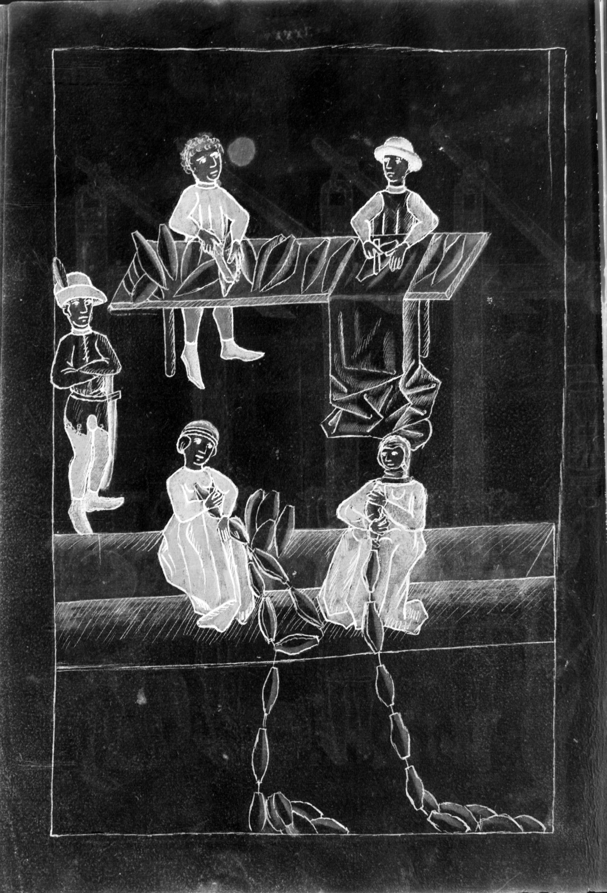
图10. 皇家军械库，I.34，第87v页（上图）和第88r页（对面）
（图片由皇家军械库提供）
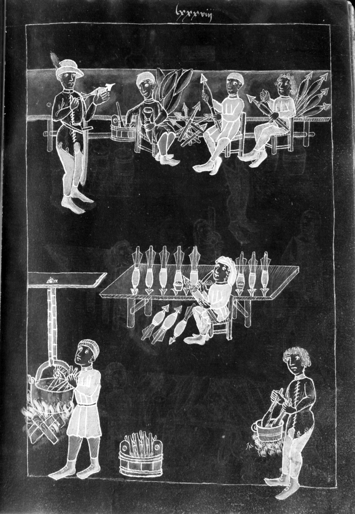
区域。建造大教堂穹顶和适当扶壁需要适当的scientia。对于十三世纪的建筑师Jean Mignot来说，这种知识(scientia)也包括他偏爱的几何和神学体系。显然，他的法国观点与当时意大利地区的偏好不符，因此产生了争议。在Mignot的思想中，理论和实践不可分离。同样，Aquinas将神学称为scientia。[89] 对于中世纪经院学者来说，没有适当知识(scientia)的艺术(ars)实践将”一事无成”；两者不可分离，缺少其中之一就是nihil。因此，“没有知识的艺术就是虚无”（“ars sine scientia nihil est”）。[90] 十五世纪的作者、编辑、抄写员或像《火药学大全》这样文本的读者很可能在某种程度上接触过这种二分法，但仅限于有限的程度。12个问题的结构、它们的经院格式和语调，以及阅读和写作能力以及了解偶尔的拉丁术语，都暗示着某种文法学校教育。然而，无法区分这些读者或使用者群体之间的不同教育水平。[91]
基于”scientia”主题，更多民粹主义的现代出版物将gunpowder视为科学的一部分，将其定位在早期化学或炼金术领域内，但往往缺乏批判性分析。[92] 炼金术通过中国和伊斯兰世界传入西欧，作为一个”知识分支”，
[89] Geoffrey Turner, ‘St Thomas Aquinas on the “Scientific” Nature of Theology’, New
Blackfriars 78 (1997), no. 921, 464–76, at 469.
[90] 这句话被广泛归因于Mignot；例如见Otto G. von Simson,
‘The Gothic Cathedral: Design and Meaning’, in Change in Medieval Society: Eu-
rope North of the Alps, 1050–1500, ed. Sylvia L. Thrupp (Toronto: University of
Toronto Press in association with the Medieval Academy, 1988), 168–87, 174. The
学术传统与实际应用之间的联系可以延伸到技术的各个领域。例如见Steven A. Walton and Thomas E. Boothby,
’What is Straight Cannot Fall: Medieval Architectural Statics in Theory and Prac-
tice’, History of Science, 52:4 (2014), 347–76, for the link of scholarly tradition and
architectural developments.
[91] 见David Sheffler, Schools and Schooling in Late Medieval Germany: Regensburg
1250–1500, Education and Society in the Middle Ages and Renaissance 33 (Lei-
den: Brill, 2008), 17–84, about levels of education, scholarly activities, and their
impact on fifteenth-century society in South-Western Germany.
[92] 例如见Jack Kelly, Gunpowder: A History of the Explosive that Changed the
World (London: Atlantic, 2004), 109–11, Wayne D. Cocroft, Dangerous Energy: The
Archaeology of Gunpowder and Military Explosives Manufacture (Swindon: English
Heritage, 2000), 4–5, Alfred W. Crosby, Throwing Fire: Projectile Technology through
History (Cambridge: Cambridge University Press, 2002), 96, or Werrett, Fireworks,
23–41.
最初专注于”将一种金属转化为另一种金属的可能性”，同时总是有一些更实际的应用，比如在医学方面。它很快发展成为一门知识学科，拥有自己的”专门词汇、符号和图像，这些往往使炼金术文本或多或少地变得难以理解”。[93] Peter Maxwell-Stuart对此进行了限定，评论说其”混淆视听的修辞”的引入是因为”炼金术是一门过于危险的科学，不能交到无知或半训练者手中，因此构建一种行话将有效地将其实践限制在那些足够有价值和聪明的人手中，让他们将其用于正当目的”。[94] 在那些被认为”足够有价值和聪明”的人中有修道士。十三世纪方济会修士和学者Roger Bacon在其1267年的《大著作》(Opus Majus)中，首次提到见证过gunpowder爆炸，但没有直接提及gunpowder。可以论证的是，对Niger Bertholdus(第20r页)这位”necromancer和alchemist”的引用，他被认为发现了gunpowder，可以被视为Roger Bacon的直接延续。甚至可以论证这就是为什么Niger Bertholdus经常被假设为方济会修士的原因。[95]
也就是说，《火药书》(Firework Books)及其对化学过程和相互作用的使用与炼金术传统明显不同。虽然gunpowder技术被理解为通过类似的地理区域传播，但它保持了相对直接的语言，即使其中一些部分对于非专家来说由于实用知识的缺失而难以理解。这种更大的可及性也可以在十五世纪初几十年炼金术文本越来越多地以方言出版中看到。[96]
[93] Maxwell-Stuart，《炼金术史》(A History of Alchemy)，x。
[94] Maxwell-Stuart，《炼金术史》(A History of
Alchemy)，73。
[95]
例如，在弗赖堡市政厅前有一座Bertholdus的雕像，将他描绘成方济会修士。
[96] Maxwell-Stuart，《炼金术史》(A History of
Alchemy)，80。在十五世纪，越来越多的方言著作出现在广泛的体裁中，其中许多具有实用性质，包括医学、外科、烹饪和染色，以及炼金术。关于方言化的讨论，见Pereira，‘Alchemy
and the Use of Vernacular’，或Carmel Ferragud，‘Vernacularization as an
Intellectual and Social Bridge: The Catalan Translations of
Teodorico’s《外科学》(Chirurgia)and of Arnau De
Vilanova’s《萨勒诺养生法》(Regimen Sanitatis
Salerni)，《早期科学与医学》(Early Science and Medicine)
4:2
(1999)，127–48。Pereira论证”教学散文”(’Lehrdichtung’)的发展在德国并没有比其他地方出现得更早，但为此提供的证据很少(Pereira，‘Alchemy
and the Use of Vernacular’，347)。
虽然与炼金术的兴趣领域有明显联系，但gunpowder技术似乎属于某种不同的类别。[97] 《火药书》(Firework Books)专注于事物如何运作以及产生什么效果，没有任何明显的意图去寻求为什么的原因，或对其运作原理的任何解释。这可能解释了为什么《火药书》(Firework Book)等作品是用方言而非拉丁文写成的。与方言化辩论形成对比的是，在那里拉丁文本被翻译成方言以作为面向更广泛公众的”知识和社会桥梁”，而《火药书》(Firework Book)似乎起源于德语，没有拉丁文前身，也从未被翻译成拉丁文。[98] 它绕过了被视为学习语言的拉丁文，因此也绕过了大部分技术写作的语言。
在《火药书》(Firework Books)中，作者使用拉丁术语而不是德语术语的情况极少。当他确实使用拉丁文时，他会同时提供拉丁文和德语(除了一些特殊成分)。一个很好的例子是”exemplum”(第2v页)，这是在布道中用作说明要点的装置，但不清楚它是否意味着是一个科学术语或”专业术语”。它在这个语境中被用作标签，在德语叙述文本中标记其特殊功能。[99] 否则，文本在所有说明中都非常小心地使用非技术术语。即使使用拉丁术语，它们也会被解释和翻译，这意味着”exemplum”后面跟着德语翻译——“ein peispil”。同样的情况也适用于两个”in quartu gradu”列表中的第一个，其中作者紧接着在拉丁术语后面提供了德语翻译”被称为第四”(第23v页)。在一个例子中，文本列出了”benefencio”(第38v页)，这很可能是”beneficio”的拼写错误，可能表明对外语术语有一定了解，但缺乏如何拼写的确定性。在另一个例子中，作者使用拉丁术语来解释saltpetre的起源，说明saltpetre”在拉丁文中被称为’rock salt’“(第23v页)，然而没有提供任何进一步的解释。
偶尔会引用当时正在讨论的理论模型。第二个Master Gunner问题涉及一个”品质系统”或”体液学说”，由希腊、罗马和伊斯兰医师建立来描述平衡的身体，并被广泛了解和使用。
[97] 一个《火药书》(Firework Book)抄本，现在的Kassel 4 Ms. Math. 14，被归因于Albertus Magnus而不是更神秘的Niger Bertholdus形象，这提供了十五世纪炼金术和gunpowder技术可能混淆的好例子。 [98] Ferragud，‘Vernacularization as an Intellectual and Social Bridge’，140。 [99] Nibler，《火药书》(Feuerwerkbuch)，49。
在十五世纪。[100]它提到硫磺是”热的”，硝石是”冷的”，因此需要平衡”两个相对的部分，它们[通常]不能相互容忍”（第2v页）。这个说法在《烟火书》后面部分再次出现，该章节中硝石被描述为”本质上冷而干”，而硫磺被描述为”本质上热而干”，作者接着说硫磺”容易着火”（第23v页）。这明确引用了当时已知的体液理论，以及对物质性质原理相互关系的理解。
[皇家军械库I.34 第二部分]
I.34的第二部分包含总共14个独立章节，从用桶和轮毂制作燃烧装置、熏烟装置和火球，到极端火焰和其他说明。与第一部分相比，这部分从发射大炮转向关注其他可燃物，更加强调燃烧装置及其制备方法。然而，所需的技能和经验保持不变，并建立在第一部分辅助燃烧装置要素的基础上。文本的重点和提供的信息有所不同，在较大的文本段落中提供单独的配方，甚至没有试图连接各个章节。火药和燃烧装置被用来制作火桶、火球和其他可以投向敌人的装置。然而，文中并未解释这些燃烧装置如何到达敌人那里。
与大多数《烟火书》不同的是，I.34第二部分多次引用位于手稿末尾的插图。与斯特拉斯堡2259号手稿相比，I.34中的页面引用使用相同颜色的墨水书写，显然与其他文本同时完成——抄写员或誊写员似乎对是否引用实际页面几乎没有犹豫。[101]然而，在I.34中，所有页码引用似乎都是在用棕色/黑色墨水制作原始文本后添加的。添加的数字总是与周围文本的大小不同。唯一的解释是这些数字是在插图制作后添加的，但在文本制作后不久的短时间内添加。在三个场合（第52v、54r和56r页），添加的数字对于空间来说太大
[100][ Sara M. Butler，][中世纪英格兰的法医学和死亡调查]
[（纽约：Routledge出版社，2014年），224–27页。]
[101][ 斯特拉斯堡手稿与I.34的关系在第3章 ]
[的”内容和插图”部分讨论，其中页面引用数字与 ]
[I.34相同，但缺少图像。]
[335]
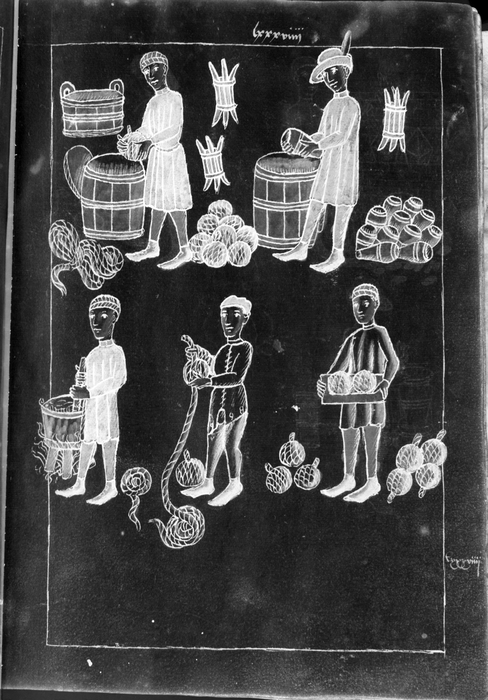
[图11. 皇家军械库，I.34，第89r页（上方）——可能描绘轮毂燃烧装置的大规模制造][——右上角，以及第88v页（对面）——火箭的可能大规模生产 ]
[（图片由皇家军械库提供）。]
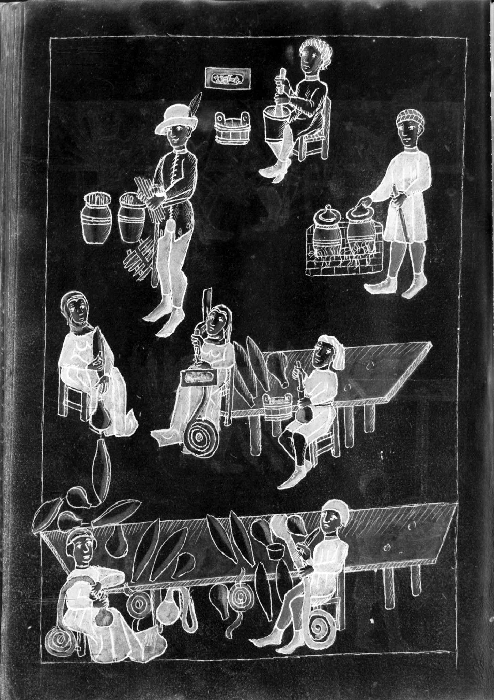
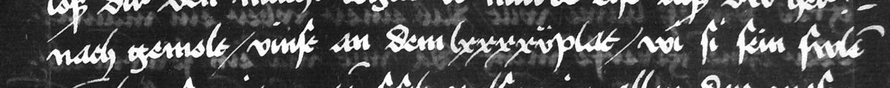
[图12. 皇家军械库，I.34，第52v页（顶部）和第57r页（底部） ]
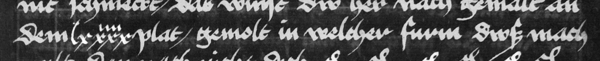
[（图片由皇家军械库提供）。]
提供的空间，并接触或覆盖现有文本（见图12，左侧）。更常见的是，数字比可用空间小（第53r、54r、55v、57r、57v和60r页）（见图12右侧），有一次（第53v页）页码缺失；很可能作者忘记添加页码，或者插图页面尚未（或还未）添加到插图中。这提供了关于I.34手稿制作的一些线索，表明它是分阶段制作的副本，由多个作者、誊写员或抄写员完成，而不是单一作者的产品。
I.34第二部分另一个需要强调的重要点是对秤的详细使用。文本非常注意秤及其正确使用，总是确保提醒用户称重后将物品从秤上取下（第52r、53r、54v、56r、57v、58v和59r页——这个章节在第一部分中只在第14r页出现过一次）。有几种可能的解释：要么用户（作者或读者）不太习惯使用天平，要么文本表达了需要提醒读者这一点的必要性。这也突出了处理珍贵和危险材料时准确性的需要，同时暗示文本的任何用户都不太可能是在使用秤方面有经验的熟练工匠和商人。
如前所述，随着十五世纪火药技术的传播和发展，炮手的角色和地位变得越来越专业化。大多数元件不再由炮手自己制作，而是委托专业工匠生产。这在I.34第二部分作者使用的语言中有所体现，作者显然与生产阶段更加疏远。与第一部分相比，作者在这里更频繁地使用”为你制作”（第53v、54r、55v、57v或59v页——在原文中是一个相当奇怪的短语，表明特别强调）或”制作”（第52r、52v、53r、54r、54v、56r或59v页），暗示他既没有时间/闲暇，也没有知识来制作特定设备，和/或在有足够工匠的环境中经济上足够富裕，可以委托制作物品。这具体涉及铁和木材组件。这种语言使作者显得更像是一个下达命令的权威人物，而不是亲自动手的人。
[338]
关于火箭的后续章节在内容和风格上非常不同，更具指导性。虽然它们作为制作火箭的分步指南，但这些章节本身随着解释的进行变得越来越短，在生产阶段留下了一些空白。本章节基于I.34第1部分的指令，但更多强调火箭的实际使用，如何生产具有不同特性的火箭，以及如何通过颜色进行相应标记。关于将箭涂成白色、红色、蓝色、棕色和黑色的章节(fol. 59r)可以通过在战斗中的后续使用来解释，这样箭可以被区分开来，因为它们在战斗情况下有不同的用途。作者通过声明”这样你就能记住它们”来指出这一点(fol. 59v)。这与I.34第1部分可以形成对比，那里gunpowder以不同颜色混合(fols 29v–30v)。在那里，作者没有解释为什么gunpowder需要应用不同颜色(甚至如何应用)。这里的指令涉及给火箭袋(由fustian羊毛制成)的外部涂色。这个指令完全可信，对于箭的后续使用来说是一个明智的指令。对于第1部分中提到的彩色gunpowder，这也可能是这种情况，但只有在混合物中不加木炭的情况下。
关于如何用水硬化火箭的章节(fol. 59v)说明，为了制作好的火箭，应该让它们缓慢燃烧或延迟点火(即只在飞行后击中目标时点火)。[102] 这意味着将箭浸泡在水中确实有益于结果。然而，如果箭没有给予足够的时间干燥，会使箭及其装药过于潮湿，这反过来意味着它根本不会燃烧和爆炸。浸泡得太少可能意味着在飞行中爆炸，或在撞击时效果较差。润湿过程与Knollenpulver的生产显示出密切的相似性，但省略了必要的干燥阶段(没有这个阶段Knollenpulver就不会起作用)。
在fol. 60r，I.34专注于”olium petroleum” – 在这里用作各种碳氢化合物产品的通用术语，经常用于Greek fire但也用于
[102][ 在Blosen和Olsen的][Bengedans][中有更详细的描述，xxx。有人建议]
[成功火箭的关键是在混合后处理gunpowder和箭，因为在不浸泡的情况下]
[发射箭意味着它很可能在击中预期目标之前爆炸。虽然HO Group进行了]
[一些火箭实验，但在重建火箭方面进行更多实验是可取的。参见Smith的]
[Reports of the HO Group，特别是2009年的实验报告。]
其他形式的燃烧油。[103] 这个配方很难遵循：要么作者省略了一些必要阶段，要么他自己不理解如何制作它。这可能暗示这个配方是从其他地方传给作者的，没有对其有效性进行实际测试。令人放心的是，在这段话的末尾，作者确认这将是所有类型火的”最佳油”。这个声明给出了在文本中包含这一段的原因，但也向潜在读者保证他们可能拥有”最佳油”的配方，即使他们还不能遵循它。这提供了对这些文本用途和功能的一些解释。它将可能的用户定位为在燃烧装置的各个方面还不(尚未)熟练的人，但可能不是绝对初学者阶段。
关于冷却gun的章节(fol. 60v)提出了许多问题。虽然gun在射击时会稍微变热，但它很快冷却到可以安全重新装弹的程度。手gun可能会变得更热，更可能升温，但不会达到需要冷却所暗示的如此高的温度。[104] 还值得一提的是，仅靠热量本身不会点燃gunpowder；需要火花。因此，gun总是在每次射击后被擦拭，以确保没有余烬残留。那么为什么这个章节被包含在Firework Book中呢？一个理论可能是这表明了作者或读者或本章节接受者的背景和兴趣。任何有经验的gunner都必须知道gun过热是极不可能的，但对于缺乏前线经验的人来说就不是这样了。可以想象，中世纪的master gunner很可能会担心他的gun可能过热、破裂或因温度升高而失效，而这个文本章节将起到安慰作用。同样，文本的受训程度较低的读者/接受者(无论社会地位如何)可能会认为存在过热的风险，并且会因为找到如何防止这种情况的指令而感到安心。
在第2部分中，提到了第1部分中没有出现的成分，如”saltpetre salt”(fols 52r, 54v, 56r, 57v, and 59r)和”磨碎的腐烂山毛榉木”(fols 52r, 53r, 54r, 54v, 55r, 57r, 57v, 58v, and 59r)。同样，其他成分在第2部分中定义更清楚，如使用”椴木charcoal”(fols 57v,
[103][ 关于Greek fire发展的总结，请参见Partington的][Greek Fire and ]
[Gunpowder][，特别是第1章。] [104][ 有16世纪和17世纪关于gun过热的记录，但]
[不可能及时重新装弹gun。直到19世纪机枪的连续射击才需要用水冷却。]
[最近由斯德哥尔摩Vasa博物馆的Fred Hocker领导的17世纪gun的试射]
[打算包括gun温度的测量，但结果尚未发表。这个gun的”神话”]
[过热问题继续被反复提及（例如 Andrade，The Gunpowder Age，106）。]
[340]
58v，59r，59v）而不是仅仅说”木炭”。使用石灰木炭的好处已经在第一部分（fol. 8v）中描述过，但当木炭在后续章节中被提及时，这些信息并没有重复。这提示了两种可能的解释：a）到第二部分创作时，火药炮技术已经有所进步；或者 b）某个人急于试验改进火药的潜在可能性，以弥补成分的供应短缺或提高效力。他不一定具备技术来确定这是改善还是恶化了混合物，但仍然热衷于记录下他的”发现”。后者似乎更有可能——正如该人对基本任务的不熟悉所表明的，比如关于如何使用秤的非常详细的说明。
第一部分和第二部分都有许多关于鱼的引用，这在所有其他烟火书中都很常见。在第一部分中，对鱼的引用被用作计时的度量：在fols 5r和18r中提到”煮鱼”，在fols 22v和37v中提到”煮沸鱼”。在第二部分中，fols 58v和59r中的引用涉及制作”鱼粉”。这表明制作者对烹饪或处理鱼类具有实践知识，并且清楚地将这些烟火书的作者定位在某个社会阶层中。
关于烟火书是秘密知识文化的一部分，只在封闭社会中保存的解释已经多次被提出。然而，很少有证据支持这一说法。在整个I.34中，只有四处提到烟火书中包含的”秘密”，并伴有保持”技艺秘密，以免教授不适合所有人的知识”的要求（fol. 59v）。这一部分出现在关于如何硬化铁箭头的说明末尾，这也是第一部分的最后一节（fol. 50v）。考虑到人们广泛认为火药炮技术被秘密包围，这样的引用数量是很少的。其他三个部分出现在第一部分中，其中的保密涉及如何隐藏火源（fol. 34v）用于秘密行动，在多天后点燃（这在fols 57r和58r上以略有不同的方式反映）。没有进一步解释为什么它不适合所有人。是因为太危险吗？还是出于经济原因？
秘密文本和秘密著作有着悠久的传统，最著名的是伪亚里士多德的Secretum Secretorum（Sirr al-asrar），它出现在九世纪，涉及统治者的一系列问题
[341]
“治国之学，关于治国之道的良好秩序”。Secretum Secretorum不应与Muhammed ibn Zakariya al-Razi的秘密之书（Liber Secretorum）混淆，后者专注于炼金术，提供配方和技术设备及程序的描述。所有这些汇编或教学手册都极具影响力，并被广泛认为是中世纪盛期和晚期统治者充实图书馆的重要组成部分。在知识传播这一更广泛的领域内，长期以来一直存在着有意保密的主流假设，即将信息保持在受控群体内，因为将这些知识传播给更广泛的受众会有被误用的风险。William Eamon详细描述了十五世纪，特别是德国这方面的各种情况。烟火书的秘密大多属于Eamon在其”秘密分类法”中的第一个定义，即”社会秘密”，“涉及故意压制信息，以保护知识免受可能腐蚀或滥用它的外人侵害”。
I.34第一部分只在隐火部分提到保密。一些配方（例如fol. 11r）是不完整的，无法完全重现。这可能是由于抄写错误，或者因为作者认为他不需要说明对当时读者来说可能显而易见的内容。另一方面，也可能是他故意要隐瞒信息，但在这一点上似乎不太可能。I.24第二部分更明确地提到保持这种”技艺”的秘密，以免教授不适合的知识
[105] Regula Forster，Die Geheimnisse der Geheimnisse: die arabischen und deutschen Fassungen des pseudo-aristotelischen Sirr al-asrar / Secretum Secretorum（威斯巴登：Reichert，2006），3。
[106] William Eamon，Science and the Secrets of Nature（普林斯顿：普林斯顿大学出版社，1994），11。另见Pereira，‘Alchemy and the Use of Vernacular’，以及最近的Sylvie Neven，‘Recording and Reading Alchemy and Art-Technology in Medieval and Premodern German Recipe Collections’，Nuncius: Journal for the Material and Visual History of Early Modern Science 31:1（2016），32-49。Rainer Leng消除了关于master gunner知识保密的一些问题，这些问题——对他来说——较少涉及特定角色的技术知识，而更多涉及与自己军队强弱相关的军事秘密（Leng，‘getruwelich dienen’，315-16）。也有一些推测认为配方中存在缺失或故意误导的成分。一些烟火书提到了生石灰的使用，有人认为这可能使某些配方无法使用。在这个领域进行更详细的研究将是有益的，因为迄今为止进行的实验规模相当小，似乎只能提供
轶事性见解。参见，例如，Kramer 和 Leibnitz，《火药书》(Das Feuerwerkbuch)，72页，
Smith，《HO小组报告》(Reports of the HO Group)，特别是2004年和2005年的报告，以及Smith，《火药化学》(‘Gun-powder Chemistry’)，151页。
107 34v和35r页。
342
为了每个人以及”如果你想制作被称为’秘密’的’宫廷艺术’秘密火[药]“。[108] 然而，这里的’秘密’指的是’未知的东西’，而非有意保持未知。《牛津英语词典在线版》的定义似乎表明，从十九世纪开始，意图(‘保守秘密的目的’)变得更加主导。[109] 更早些时候，约翰·韦克在1660年出版的《艺术与自然秘密十八卷》中，提出了自然向个人隐藏其知识的概念。如果真的打算将《火药书》中的知识保持’秘密’，就会采取其他措施来确保它保持未知。[110]
与保密性的提及一致，以及对更具学术性的读者群体的可能吸引力，以及与I.34第1部分开头的共同点，第2部分在各个阶段(在12个章节标题中的8个)都提到了’宫廷艺术’。这个术语结合了两个复杂的问题：‘宫廷的’(courtly)及其德语原文’hoflich’都具有现代的骑士精神、绅士风度和高地位的内涵。在《火药书》语境中的’宫廷的’指的是可以预期在序言中提到的任何宫廷中被了解或欣赏的事物，无论是’任何王子、伯爵、领主、骑士、乡绅或城镇’的宫廷。这可以被视为一种赞美之词，几乎是将其看似平凡的本质提升为某种非常特殊和值得注意的东西；同时，它表明了一种渴望和广告方面——能够吸引任何新读者/实践者，他们通过阅读这个文本，可能渴望出现在宫廷中遵循这些指示。这也解释了在第2部分中’宫廷的’使用增加(八次)相比第1部分(四次)的原因。这种重复使用’宫廷的’强调了《火药书》的目标受众。
实际的抄写遗漏很少发生——即从一个副本复制到另一个副本时遗漏单个字母、单词或一行文本——但在一些核心关键成分(如8v和9r页火药中的saltpetre，或52r页的charcoal)缺失的其他领域存在问题。可以争论说该项目太明显而无需列出，但这也可能提供文本如何产生的指示。很清楚一些文本是从另一本《火药书》的副本制作的——因此复制了相同数量的货币，即使它们是在很久以后写成的。其他手稿可能
108 57r和59v页。
109 《牛津英语词典在线版》，定义1(2023年8月10日访问)。
110 约翰·韦克，《艺术与自然秘密十八卷，作为自然哲学的总结和实质》(Eighteen Books of the Secrets of Art & Nature, being the Sum and Substance of Natural Philosophy)（伦敦：Simon Miller出版社，1660年）。
343
基于其他手稿的知识回忆，或基于口述。[111] 口述传播的迹象包括许多《火药书》包含几个相同的段落但顺序不同，表明文本是凭记忆写下然后口述给抄写员的。这通过54r和19v页上的引用’正如你将听到的’得到加强。这些陈述在一个共同位置，就在标题之后或章节末尾，但在所有其他情况下使用的短语是’写在下面’(例如5r或9r页，60r页，或60v页)。很可能写作者或口述者对大多数配方具有基本技术知识。他们不太可能知道saltpetre来自哪里，尽管他们知道如何净化saltpetre和sulphur，如何将配方组合在一起，以及如何操作枪支。此外，他们拥有制作燃烧装置的知识和经验，并理解每个单独的步骤。问答的修辞形式确实暗示《火药书》是为了告知学生或新受众而制作的，但只是通过传达基本的标准信息，而不是传递具有多年实战经验的master gunner学到的额外’行业诀窍’。这也是为什么文本的语言是德语，很少使用技术术语，无论是拉丁语还是任何其他语言。它最有可能是作为介绍性信息，某人可以在此基础上建立未来的职业生涯。
十五世纪是否有一个独特的变化带来了《火药书》的出现(与其他德语白话写作一起，通常具有技术性质)？它们确实提供了对《火药书》作者(或创始者)知识水平的洞察，可获得的原材料状态，以及对master gunner角色的一瞥——例如，包括fire arrow和燃烧装置。这种知识在第2部分中似乎得到了扩展，但不清楚这是否表明实践的变化，还是仅仅填补了第1部分中存在的感知空白。《火药书》中缺失的——除了I.34中的插图——是任何关于在战斗中使用枪支、战略，甚至如何安装它们的指示。它们未能解释master gunner是否参与(以及在什么级别)战斗。然而，它们确实提供了向进一步专业化过渡的指示，将master gunner从平凡的体力任务中移除到’负责’的人的角色中。
111 另见第1章’原始文本、制作和传播’(Urtext, Production and Transmission)部分。
344
《火药书》，特别是皇家军械库手稿I.34，为我们了解十五世纪火药技术提供了独特的视角。在现存的书面手册中，它出现在十五世纪前几十年的关键时期。虽然到十五世纪末，火药技术已在社会中无处不在，但技术传播的速度和形式并不十分清楚。由于火药技术研究发现的缺乏，仍然存在许多问题和谜团。本书为这个更大的拼图增添了宝贵的一片。
《火药书》是在十五世纪早期由不同抄写员在短时间内制作的；它们的文本提供了火药技术从业者可以逐步遵循的全面指导。虽然我们无法十分确定地解释《火药书》的目的，但这项研究和分析为我们开始时提出的问题指向了可能的答案——谁制作了这本书，为什么样的读者群体，谁保存了它，以及手稿写成后发生了什么。
基于所有提供的证据，我们可以确定《火药书》很可能是在火药技术传播到欧洲后两到三代人之后写成的。作者或多位作者认为有必要将这一工具传给新一代炮手，并向任何潜在雇主展示《火药书》的拥有者了解火药技术的基础知识，以及如何安全有效地处理火药。这强化了帕梅拉·朗总结的几种用户/读者类型的理论：
《火药书》[…]针对双重读者群体——炮手和支持他们的王公贵族。作者就每个群体的成员应该如何行事以实现互利提出了建议。毫无疑问，这位匿名作者本身就是一位寻求赞助的炮手。他提供了一份书面文本，可以提升炮手和赞助人的学识和技术能力形象。[1]
[1] Pamela O. Long，《开放性、保密性、作者身份：从古代到文艺复兴的技术艺术和知识文化》（巴尔的摩：约翰斯·霍普金斯大学出版社，2001年），第120页。
皇家军械库I.34手稿是一份真正特殊的手稿。它是一个罕见的副本，似乎在后中世纪时期没有被拆散，因此为我们提供了《火药书》在其最初装订格式下的使用情况：作为一本概要，以及一本可以继续添加内容的笔记本。通过检查手稿内容及其配方，这项研究将《火药书》定位在新兴的技术军事论著和手册传统中。我对现存的65份《火药书》手稿中几乎所有手稿的查看表明，很少有手稿应用了类似的综合信息范围，因为它们大多数都与其他文本重新装订在一起。
I.34的独特之处在于它为我们提供了手稿的几个部分。第二部分的存在特别表明存在持续的使用和持续的实践，以及十五世纪使用技术的发展。I.34是唯一一个既有对插图的文字引用，又有插图本身的副本——这种情况几乎肯定有助于这份手稿的保存。
这项研究为该领域未来所需的研究指明了方向。语言学分析可能允许对现存的每本《火药书》进行更近距离的定位，而对《火药书》所有现存副本进行更跨学科的比较可能仍会提供更有价值的见解，不仅比较它们的内容，还比较它们的古书学和图书馆历史。这将是国际研究小组的理想项目。
使用皇家军械库I.34对材料语料库进行更详细的探索将是有益的。对手稿图像进行详细的艺术史分析在服装、工具、身体语言、关键重要信息的知识传递方面是值得期待的——特别是因为我们处理的是主要由木材和布料制成的短暂文物，这些文物在几个世纪中没有保存下来。同样，对材料文化中其他方面的文献知识的比较研究可能会进一步阐明问题。[2]
实验考古学可能探索各种配方是否有效，“额外”成分的添加是否对火药及其性质产生了变化。HO小组——以及最近美国西点军校——正在进行的工作为此奠定了良好的基础，通过当代科学技能和设备的充分应用和使用，还有更多有待发现。同样，经济记录领域几乎没有被触及。托姆·理查森关于伦敦塔的研究以及丹·斯宾塞在更广泛的英国背景下的研究为
[2] 正在进行的项目，如伯尔尼大学的”中世纪城镇物质文化”项目，显示出在物质文化关键中介者的互动以及技术知识转移方面提供有价值见解的巨大前景。
十四和十五世纪saltpetre、硫磺和其他成分采购记录提供了线索，对这些和其他相关经济记录的更多工作可能提供进一步的见解，以及对德国档案记录的彻底调查。
现在才开始更清楚地了解谁在使用火药技术，以及任何掌权者是否能负担得起不拥有这种技术的后果。虽然火药火炮和使用火药的知识在多大程度上提供防御或攻击优势仍有争议，但火药技术的使用需要巨大的开支——正如《烟火书》中的警告所说，任何称职的统治者都必须确保他们拥有”可以依赖的优秀炮手和炮兵”，以避免失去敌人可能享有的任何潜在优势。[3]
任何用途的配方都包含大量关于如何产生最终结果的隐性知识。如何应用这些配方很重要——无论是玻璃制造、军械制造、烹饪，当然还有战斗手册。它们大多用方言写成，包括社会的广泛阶层，包括那些制造日常用品的隐藏人物（“让自己制造…”）——在当时如此普遍，以至于它们的格式和用途没有得到更详细的描述——用于火药的生产。[4] 科学史学家史蒂芬·夏平(Steven Shapin)将他们描述为值得进一步研究的”无形行动者”。[5]
为什么许多史料会在现今德国东南部这个特定地理区域如此大量地出现？这可能反映了奥格斯堡和纽伦堡及其腹地的蓬勃工业化，它们连接着跨阿尔卑斯山贸易以及莱茵河、多瑙河和美因河沿岸的其他主要河流贸易路线。也许更多的是对新政治独立的反应，以及由此产生的进一步脆弱性，迫切需要防御外部压力。这与从十二世纪开始意大利北部经济和政治早熟的原因相似。希望这本书能够就所有这些问题开启进一步的讨论。
《烟火书》展示了当时可获得和感兴趣的知识。正如我们所看到的，它包含有效且有功能的配方（而不是一些学者所说的过时和不实用的知识）。它为新兴问题提供了路径，这些问题涉及火药的想象力和
[3][ Fol. 1v.]
[4][ Fol. 8r, 以及在第2部分的fols 52r, 54r, 55v, 57v, 58v, 59r, 59v中更为突出。] [5][ Steven Shapin, ‘The House of Experiment in Seventeenth-Century England’, ][Isis]
[79 (1988), 373–404, at 395.]
[347]
情感方面（更亮、更响、射程更远）以及火炮和其从业者的营销方面。
最重要的是，鉴于早期怀疑和质疑的性质，现在很清楚《烟火书》确实反映了其十五世纪初制作时的实际操作，但在文本性和当时可获得的其他史料之间仍然存在差距。这既是现代学者（无论是历史学家还是技术专家）的知识差距，也是当时炮手的知识差距，他们面临着在以前不熟悉的文本格式背景下解释其发展中的生产方法的困难。
问题仍然是这种技术有多有效——它真的在改变战斗命运方面产生了实质性影响，从而证明了将火炮带到战场、训练部队、购买和生产原料的费用和努力是合理的吗？如果它不是特别有效，那么这就引出了一个问题：为什么如账户、贸易记录、考古学或《烟火书》等文本所证明的那样，这种技术的使用和投资会呈指数级增长？希望这本书对当时火药技术的类型和用途提供了一些有价值的见解，并将鼓励其他人在未来进行进一步的研究。
在引言中，我提到了军事革命的概念。我在这本书中表明，这种变化并不像”革命”一词所暗示的那样突然和紧迫。因此，使用托尼奥·安德拉德(Tonio Andrade)所描述的”火药时代”或詹姆斯·贝利赫(James Belich)所称的”火药过渡”会更合适。[6] 然而，毫无疑问，《烟火书》在火药技术的变革中发挥了不可或缺的作用，从而影响了整个战争和社会。
[6][ Andrade, ][The Gunpowder Age][, and James Belich, ][The World the Plague Made: The ]
[Black Death and the Rise of Europe][ (Princeton: Princeton University Press, 2022), ]
[132–36.]
[348]
《烟火书》已知手稿副本列表
奥地利，维也纳，奥地利国家图书馆
Cod. 2952, 31v–80r
Cod. 2987
Cod. 3062, 1r–22r
Cod 3064, 53r–70r
Cod. 10855, 56r–69r
Cod. 10940, 115r–148v
法国，巴黎，法国国家图书馆，Ms. Latin 17873, 193r–209r
法国，斯特拉斯堡，国立大学图书馆，Ms. 2259, 1r–18v, 28r–29v
德国，奥格斯堡
州立市立图书馆，2°Cod. 164, 1r–62v
州立市立图书馆，4°Cod. 129, 35r–99v
州立市立图书馆，4°Cod. 143, 1r–43v
大学图书馆，III. 1.2° 44, 2r–52v
大学图书馆，III. 1.8° 59, 2r–35r
德国，巴特阿罗尔森，瓦尔德克亲王宫廷图书馆，IV, Ms. 83
德国，柏林，柏林国家图书馆——普鲁士文化遗产
德文对开本手稿 710a, 1r–26v
德文对开本手稿 1117, 294r–322r
德文对开本手稿 1129, 68r–82r
德文四开本手稿 621, 1r–48r
德文四开本手稿 867, 1r–41r and 48r–96r
德文四开本手稿 1018, 32r–66r
德文四开本手稿 1187, 13v–45v
德文四开本手稿 2041, 1r–29r
德国，达姆施塔特，大学与州立图书馆，Ms. 1074, 1r–52v
德国，迪林根，研究图书馆，Ms. XV 50, 1r–33r
德国，德累斯顿，萨克森州立图书馆
Ms. App. 463, 8r–72v
Ms. C 262, 223r–239r
德国，法兰克福
大学图书馆，Ms. germ. quart. 14 (Ausst. 48) ‘军械与火药书’
图书馆，城市历史研究所，帝国事务补遗，No. 741
‘匿名’，‘Büchsenmeister – fewerwercker’
德国，弗莱堡，大学图书馆，Ms. 362, 73r–89r
德国，哥达，爱尔福特-哥达大学与研究图书馆
Cod. Chart A 756, 184r–200v
Cod. Chart B 428, 1r–48v
Cod. Chart B 1032 ‘火药学与炮术师手册’
德国，哥廷根，下萨克森州立与州图书馆，2[o] Cod.
Ms. philos. 64, 94r–147v
德国，海德堡，大学图书馆
Cod. Pal. germ. 122, 1r–46r
Cod. Pal. germ. 301, 6v–20v ‘关于火炮射击的小册子’
Cod. Pal. germ. 502
Cod. Pal. germ. 562
Cod. Pal. Germ. 585
Cod. Pal. germ. 787, 2r–26r 和 34r–45r
德国，卡尔斯鲁厄，巴登州立图书馆，Cod. St. Georgen 71,
131v–[143?]
德国，卡塞尔，大学-州立-穆哈德图书馆，4[o]
Ms. math. 14, 1r–46r
德国，莱比锡，大学图书馆，Ms. 1597, 1r–88r
德国，梅明根，科学城市图书馆，4[o] 2.39, 116r–121r
德国，慕尼黑
巴伐利亚主要国家档案馆，库尔拜恩，外部档案 3904
巴伐利亚国家图书馆，Cgm. 356
巴伐利亚国家图书馆，Cgm. 399, 1r–48v
巴伐利亚国家图书馆，Cgm. 599, 48r–62v
巴伐利亚国家图书馆，Cgm. 734, 1r–59v
巴伐利亚国家图书馆，Cgm. 973, 91v–123v
巴伐利亚国家图书馆，Cgm. 4902
巴伐利亚国家图书馆，Cgm. 5437, 1r–8v
巴伐利亚国家图书馆，Clm. 30150, 94r–150r
德国，纽伦堡，德意志国家博物馆
Ms. 719, 16r–60v
Ms. 1480 1r–50v
Ms. 1481a, 14r–48v
德国，魏玛，安娜·阿玛利亚公爵夫人图书馆，Q 342, 55r–82v
德国，沃尔芬比特尔，奥古斯特公爵图书馆
Cod. Guelf. 19.28. Aug. 2[o]
Cod. Guelf. 226 Extravag., 7r–32v
意大利，罗马，梵蒂冈，梵蒂冈使徒图书馆，Cod. Pal. lat.
1889, 94r–106v
罗马尼亚，锡比乌(赫曼施塔特)/布加勒斯特，国家档案馆，Ms. Varia II,
374, 1r–36v
瑞士，曾由Antiquariat Heribert Tenschert出售，目录XXV，
No. 21，现瑞士私人收藏者(无更多信息)，
83v–94r – 无法确认位置，因此无法查看副本。
瑞士，圣加伦，州图书馆，VadSlg Ms. 396, 1r–46r
英国，利兹，皇家军械库，MS I.34, 1r–61r
美国，剑桥(马萨诸塞州)，哈佛学院图书馆 – 霍顿图书馆，Ms
Type 320, 1r–37v
美国，纽约，公共图书馆，斯宾塞收藏，Ms. 104, 1r–55r
匿名，’Dye nachuolget vonn Büchen geschoß, Pulver, Fewerwerck …’作为
《弗拉维乌斯·维吉提乌斯·雷纳图斯四卷骑士书》的附录，奥格斯堡：
Stainer出版社，1529年，91r–101v – 印刷版见Hassenstein (1941)
匿名，《炮术师手册：关于炮弹、火炮、火药、硝石和烟火等》
(斯特拉斯堡：克里斯蒂安·埃根诺尔夫，1529年) [1531、1534和1550年在法兰克福重印]，法兰克福市立大学图书馆和斯特拉斯堡国立大学图书馆
匿名，‘包含多种火焰技艺的小论文…’，作为《火炮学与火焰技艺书》的附录(巴黎，1561年)
匿名，《火焰之书，由博学的军事专家精心编制，汇集众多经验证的技艺》(1584年)
巴茨，曼努埃尔，《1420年火药书：传真本及现代德语译本》(拉多尔夫策尔：Survival Press出版社，2001年)
埃尔德雷德，威廉，《炮手之镜》(伦敦：T. Forcet Boydel印刷，在塔桥附近的堡垒商店销售，1646/47年)，《早期英语图书在线》，https://go.openathens.net/redirector/leeds.ac.uk?url=https://www.proquest.com/books/gvnners-glasse-vvherein-diligent-practicioner-may/docview/2264183063/se-2 (访问于2023年8月10日)
哈森施泰因，威廉，《1420年火药书：600年德国火药武器与炮术史。1529年初版重印本，附现代德语译文及威廉·哈森施泰因注释》(慕尼黑：德国技术出版社，1941年)
克拉默，格哈德，《贝特霍尔德·施瓦茨：15世纪的化学与武器技术，德国博物馆论文与报告，新辑10》(慕尼黑：Oldenbourg出版社，1995年)
迈耶，维尔纳，‘火药书抄本：多瑙河畔迪林根研究图书馆Hs. XV 50手稿’，《城堡之书》(1981年)，第288–301页
巴宾顿，约翰，约翰·德罗肖特，《烟火技术或人工火焰工艺论述》(伦敦：托马斯·哈珀，1635年；重印版德里：传真出版社，2018年)
培根，弗朗西斯，《新工具》，约瑟夫·德维编辑(纽约：P. F. Collier出版社，1902年)，https://oll.libertyfund.org/title/bacon-novum-organum#Bacon_0415_198 (访问于2023年8月10日)
巴恩斯，卡尔·F.(编)，《维拉尔·德·奥内库尔作品集(巴黎，法国国家图书馆，MS Fr 19093)：新批判版本及彩色传真》(法纳姆：阿什盖特出版社，2009年)
贝克，J. H.编，《马里亚诺·塔科拉，关于非常规工程与建筑的第三册》(米兰：il Polifilo出版社，1969年)
埃勒特，特鲁德编，《厨艺大全：15世纪两部烹饪书手稿的编辑、翻译与注释》(美因河畔法兰克福：彼得·朗出版社，2010年)
格列科，吉娜，克里斯汀·罗斯(译)，《贤妻指南：》Le Ménagier
巴黎中世纪家庭读本（伊萨卡和伦敦：康奈尔大学出版社，2009年）
Knobloch, Eberhard主编，Mariano Taccola, De rebus militaribus (De machinis, 1449)（巴登-巴登：Koerner出版社，1984年）
Kyeser, Conradus等，Bellifortis Feuerwerkbuch，Codices figurati-libri picturati 3（慕尼黑：Edition Lengenfelder出版社，1995年）
Leng, Rainer，Franz Helm及其《经验技艺之书》：早期印刷时代以手稿传播的火炮师手册（威斯巴登：Reichert出版社，2001年）
Panse, Melanie，Hans von Gersdorff：《外科战地手册》，知识的生产、呈现与接受，特里尔历史文化科学贡献7（威斯巴登：Reichert出版社，2012年）
Prager, Frank D.和Ulrich Montag主编，Mariano Taccola, De ingeneis（马萨诸塞州剑桥：麻省理工学院出版社，1971年）
Smith, Cyril Stanley和Martha Teach Gnudi主编，Vannoccio Biringuccio的火工术（纽约：Dover出版社，1990年）
[二次文献]
Alexander, Jonathan J. G.等主编，文字的辉煌：纽约公共图书馆的中世纪和文艺复兴彩饰手稿（纽约：Harvey Miller出版社，2005年）
Algazi, Gadi，中世纪晚期的领主暴力与领主的暴力：统治、互惠与语言使用，历史研究17（美因河畔法兰克福：Campus出版社，1996年）
Allenby, Michael主编，植物科学在线词典，第3版（牛津：牛津大学出版社，2013年）（2023年8月10日访问）
Andrade, Tonio，火药时代：中国、军事创新与西方在世界历史中的崛起（普林斯顿和牛津：普林斯顿大学出版社，2016年）
Andresová, Klára，“16世纪火炮手册中的畅销书：中世纪晚期Feuerwerkbuch的印刷版本”，国际军事史与史学杂志（2022年），1-27页，doi：https://doi.org/10.1163/24683302-bja10041（2023年8月10日访问）
Arnold, Klaus，“战争图像——和平图像”，收录于中世纪盛期和晚期的和平承担者与工具，Johannes Fried主编，讲演与研究43（西格马林根：Thorbecke出版社，1996年）
Arnoux, Mathieu和Pierre Monnet主编，西欧城市中的技术人员，1250-1650年，法国罗马学院文集325（罗马：法国罗马学院，2004年）
Backhouse, Janet，“从爱德华四世到亨利七世的皇家图书馆”，收录于英国书籍史，第三卷，1400-1557年，Lotte Hellinga和Joseph Burnley Trapp主编（剑桥：剑桥大学出版社，1999年），第267-81页
Barter Bailey, Sarah，“皇家军械库’烟火书’”，收录于火药：一项国际技术的历史，Brenda Buchanan主编（巴斯：巴斯大学出版社，1996年），第57-86页
Bassnett, Susan，翻译研究（伦敦：Routledge出版社，2002年）
Baufeld, Christa，早期新高地德语小词典：早期新高地德语诗歌和专业文献词汇（蒂宾根：Max Niemeyer出版社，1996年）
Baumann, Reinhard，16世纪雇佣兵制度的巴伐利亚和南德意志实例，一项社会批判研究（慕尼黑市档案馆新丛书）（慕尼黑：R. Wölfle委托书店，1978年）
Baumann, Reinhard，Landsknechte(雇佣兵)，从中世纪晚期到三十年战争的历史与文化（慕尼黑：C. H. Beck出版社，1994年）
Bec, Christian，“15世纪末的佛罗伦萨图书馆”，人文主义与文艺复兴图书馆31（1969年），第321-32页
Beck, Theodor，机械工程史贡献（柏林：Julius Springer出版社，1899年）
Belich, James，瘟疫创造的世界：黑死病与欧洲的兴起（普林斯顿：普林斯顿大学出版社，2022年）
Bell, Adrian R., Anne Curry等主编，14世纪的士兵经历（伍德布里奇：Boydell出版社，2011年）
Bell, Adrian R.等主编，中世纪晚期英格兰的士兵（牛津：牛津大学出版社，2013年）
Benoit, Paul，“工匠还是战士？中世纪末期法兰西王国的火炮手”，公立高等教育中世纪史学家学会会议论文集18（1987年），第287-296页，https://www.persee.fr/doc/shmes_1261-9078_1991_act_18_1_1499（2023年8月10日访问）
Benzing, Josef，“Egenolff, Christian”，新德意志传记4（1959年），第325-26页，[在线版本] https://www.deutsche-biographie.de/pnd122968468.html#ndbcontent（2023年8月10日访问）
Berg, Theresia和Udo Friedrich，“中世纪晚期战争技艺著作中的知识传承：Konrad Kyeser的《Bellifortis》和匿名《Feuerwerkbuch》”，收录于宫廷知识，以15世纪海德堡为例的中世纪晚期文字化过程，Jan-Dirk Müller主编（慕尼黑：Wilhelm Fink出版社，1994年），第169-232页
Berninger, Ernst，“巴伐利亚州立图书馆慕尼黑分馆15世纪技术手稿”，Bellifortis, Clm 30150（Patrimonia, 137）（慕尼黑：德国各州文化基金会和巴伐利亚州立图书馆，2000年），第61-91页
Berthelot, Marcelin，“中世纪末期机械工艺和火炮史研究”，化学与物理年鉴，第6系列，24（1891年），第433-521页
Biggs, Douglas, et al., 中世纪晚期英格兰的传统与变革
北方世界 第2卷 (Leiden: Brill, 2002) Biggs, Douglas, et al., 十五世纪欧洲的声誉与表征
北方世界 第8卷 (Leiden: Brill, 2004) Blosen, Hans, and Rikke Agnete Olsen, eds, 战争艺术与大炮：约翰内斯·本格丹斯的
Büchsemeister与战争书 (Aarhus: Aarhus 大学出版社, 2006)
Bodemann, Ulrike, and Klaus Grubmüller, ‘口语交流的书面指导：中世纪晚期的学生对话手册’, in 中世纪的实用书面语。表现形式
和发展阶段, eds Hagen Keller et al., Münstersche 中世纪研究 65 (München: Wilhelm Fink, 1992), pp. 177–93 Boffey, Julia, ‘Bodleian Library, MS Arch. Selden. B.24与”家庭书籍”的定义’, in 英国中世纪书籍：纪念杰里米·格里菲斯
的研究, eds Anthony Edwards et al. (London: British Library, 2000), pp. 125–34
Boffey, Julia, and John Jay Thompson, ‘选集与杂集：生产与文本选择’, in 英国的书籍生产与出版，
1375–1475, eds Jeremy Griffiths and Derek Pearsall (Cambridge: Cambridge University Press, 1989), pp. 279–315
Booton, Diane E., 中世纪晚期布列塔尼的手稿、市场与印刷转型 (Farnham: Ashgate, 2010) Brachert, Thomas, “历史绘画技术词典。来源–手工艺–技术–炼金术，慕尼黑2001”的补充与勘误
(Hildesheim: Hornemann Institut, 2010)
Brévart, Francis B., ‘介于医学、魔法与宗教之间：十三至十六世纪德国医药论著中的奇效药物’, Speculum 83 (2008), 1–57 Brock, Alan St Hill, 烟花史 (London: Harrap, 1949) Brown, G. I., 大爆炸：爆炸物历史 (Stroud: Sutton, 1998) Brunner, Horst, ‘中世纪与早期现代德国文学中的战争形象’, in 中世纪社会结构。维尔茨堡的跨学科中世纪研究, eds Dieter Rödel and Joachim Schneider (Wiesbaden: Reichert, 1996), pp. 101–14
Brunner, Horst, ed., 中世纪与早期现代的战争：原因、理由、形象、习俗、法律 (Wiesbaden: Reichert, 1999) Brunner, Horst, ed., 中世纪与早期现代对战争的认知与表现, Imagines medii aevi 6 (Wiesbaden: Reichert, 2000)
Buchanan, Brenda, ed., Gunpowder：国际技术史 (Bath: Bath University Press, 1996)
Buchanan, Brenda J., ed., Gunpowder、爆炸物与国家：技术史 (Aldershot: Ashgate, 2006) Bugge, Günther, 火药、炸药与创造它们的人 (Stuttgart: Franckh’sche Verlagshandlung, 1942)
Burgh, Patrick, Gunpowder、男性气质与德国文本中的战争，1400–1700 (Rochester, NY: University of Rochester Press, 2019) Butler, Sara M., 中世纪英格兰的法医学与死亡调查 (New York: Routledge, 2014) Canning, Joseph, et al., eds, 前现代与现代时期的权力、暴力与大规模死亡 (Aldershot: Ashgate, 2004)
Carr, A. D., ‘十四世纪欧洲的战争’, in 前现代与现代时期的权力、暴力
与大规模死亡, eds Joseph Canning et al. (Alder-
shot: Ashgate, 2004), pp. 67–89
Chase, Kenneth, Firearms：1700年前的全球史 (Cambridge: Cambridge University Press, 2003)
Cocroft, Wayne D., 危险能量：Gunpowder与军事考古学
军用爆炸物制造 (斯文顿：英国遗产出版社，2000年) Connolly, David E.，“Ulrich Rülein von Kalbe的《Bergbüchlein》在十六世纪德国采矿/冶金文献中的地位”，收录于De Re Metallica：中世纪金属的用途，Robert O. Bork等编（法纳姆：Ashgate出版社，2005年），第347-66页
Contamine, Philippe，中世纪战争，M. Jones译（牛津：布莱克韦尔出版社，1984年）
Crosby, Alfred W.，投掷火焰：历史上的投射武器技术（剑桥：剑桥大学出版社，2002年）
Curry, Anne，“火炮与该死的：兰开斯特诺曼底1415-50年间是否存在军事革命？”，中世纪军事史杂志 8 (2011)，171-88页
Curry, Anne和Elizabeth Matthew编，中世纪晚期的服务概念和模式，十五世纪1（伍德布里奇：博伊德尔出版社，2000年）
Davies, Jonathan，火炮与gunpowder(火药) 1267-1603（吉斯伯勒：HMA有限公司，2003年）
Davies, Jonathan，中世纪大炮1326-1494（牛津：鱼鹰出版社，2019年）
De Reuck, Anthony，“《烟火书》中saltpeter(硝石)的性质”，军械学会杂志 20 (2008)，5-10页
Derrida, Jacques，“什么是’相关’的翻译？”，Lawrence Venuti译，批判探索 27:2 (2001)，174-200页
DeVries, Kelly，“gunpowder(火药)武器对百年战争围城战的影响”，收录于围城中的中世纪城市，Ivy A. Corfis和Michael Wolfe编（伍德布里奇：博伊德尔出版社，1995年），第227-44页
DeVries, Kelly，“gunpowder(火药)和早期gunpowder(火药)武器”，收录于Gunpowder(火药)：国际技术史，Brenda Buchanan编（巴斯：巴斯大学出版社，1996年），第121-36页
DeVries, Kelly，“1453年君士坦丁堡围城战中的gunpowder(火药)武器”，收录于东地中海的战争与社会，7-15世纪，Yakoov Lev编，中世纪地中海9（莱顿：布里尔出版社，1996年），第343-62页
DeVries, Kelly，14世纪早期的步兵战争（伍德布里奇：博伊德尔出版社，1996年）
DeVries, Kelly，“百年战争期间贞德使用和对抗gunpowder(火药)武器的情况”，战争与社会 14:1 (1996)，1-15页
DeVries, Kelly，“百年战争期间西欧gunpowder(火药)武器技术”，第二十二届国际军事史委员会大会（维也纳：军事史博物馆，1997年），第285-99页
DeVries, Kelly，“投石机不是原子弹：重新定义前现代军事技术中的’有效性’”，战争史 4 (1997)，454-70页
DeVries, Kelly，“被遗忘的Beverhoutsveld战役，1382年5月3日：技术创新与军事意义”，收录于中世纪英法军队、骑士精神与战争，Matthew Strickland编（斯坦福德，康涅狄格州：保罗·沃特金斯出版社，1998年），第289-303页
DeVries, Kelly，“gunpowder(火药)武器与早期现代国家的兴起”，战争史 5:2 (1998)，127-45页
DeVries, Kelly，“Gerhard W. Kramer编，Klaus Leibnitz译《烟火书：中世纪德国的gunpowder(火药)》(Das Feuerwerkbuch，约1440年)书评”，Ambix 50:2 (2003)，237-38页
DeVries, Kelly，“对Walter de Milimete和伪亚里士多德手稿中所绘火炮的重新评估”，军械学会杂志 15 (2003)，5-17页
DeVries, Kelly，“‘城墙轰然倒塌’：好人菲利普的战役和早期gunpowder(火药)武器对防御工事脆弱性的神话”，收录于百年战争：更广阔的视角，L. J. Andrew Villalon和Donald J. Kagay编，战争史25（莱顿：布里尔出版社，2005年），第429-46页
DeVries, Kelly，“面对新军事技术：非trace italienne反gunpowder(火药)武器防御”，收录于阿基米德的继承者：从启蒙时代看战争的科学与艺术，Brett D. Steele和Tamera Dorland编（马萨诸塞州剑桥：麻省理工学院出版社，2005年），第37-71页
DeVries, Kelly，“军事科学技术场所”，收录于剑桥科学史 第3卷：早期现代欧洲，Katherine Park和Lorraine Daston编（剑桥：剑桥大学出版社，2006年），第306-19页
DeVries, Kelly和Robert D. Smith，“带可拆卸gunpowder(火药)装药室的后装炮：一项历史悠久的军事技术”，收录于Gunpowder(火药)、爆炸物与国家，Brenda Buchanan编（阿尔德肖特：Ashgate出版社，2006年），第251-65页
DeVries, Kelly和Robert D. Smith，中世纪军事技术，第2版（多伦多：多伦多大学出版社，2012年）
DeVun, Leah，预言、炼金术与时间的终结：中世纪晚期的约翰·德·鲁佩奇萨（纽约：哥伦比亚大学出版社，2009年）
Dijkmann, Jessica，塑造中世纪市场：荷兰商品市场的组织，约1200-约1450年，全球经济史系列8（莱顿：布里尔出版社，2011年）
Donkin, Robin A., Between East and West: The Moluccas and the Traffic in Spices
up to the Arrival of Europeans (Philadelphia: American Philosophical Soci-
ety, 2003)
Duchart, Heinz, ed., Krieg und Frieden im Übergang vom Mittelalter zur Neu-
zeit. Theorie – Praxis – Bild (Mainz: Philipp von Zabern, 2000)
Eamon, William, Science and the Secrets of Nature (Princeton: Princeton Uni-
versity Press, 1994)
Edson, Evelyn, The World Map, 1300–1492: The Persistence of Tradition and
Transformation (Baltimore: Johns Hopkins University Press, 2007)
Ehlert, Trude, and Rainer Leng, ’Frühe Koch- und Pulverrezepte aus der
Nürnberger Handschrift GNM 3227a (um 1389)’, in Medizin in Geschichte,
Philologie und Ethnologie. Festschrift für Gundolf Keil, eds Dominik Groß
and Monika Reininger (Würzburg: Königshausen & Neumann, 2003), pp.
289–313
Eis, Gerhard, Mittelalterliche Fachliteratur (Stuttgart: Metzler, 1962)
Elkar, Rainer S., ’Lernen durch Wandern? Einige kritische Anmerkungen
zum Thema Wissenstransfer durch Migration’, in Handwerk in Europa:
Vom Spätmittelalter bis zur Frühen Neuzeit, ed. Knut Schulz, Schriften des
historischen Kollegs, Kolloquien 41 (München: Oldenbourg, 1999), pp.
213–32
Ertl, Thomas, Seide, Pfeffer und Kanonen: Globalisierung im Mittelalter
(Darmstadt: Primus, 2008)
Essenwein, August von, Quellen zur Geschichte der Feuerwaffen, 2 vols (Leipzig
and Graz: Akademische Druck- und Verlagsanstalt, 1877; repr. 1969)
Feldhaus, Franz Maria, ‘Was wissen wir von Berthold Schwarz?’, Zeitschrift für
Historische Waffenkunde 4 (1906–8), 65–69 and 113–18
Feldhaus, Franz Maria, Die Technik der Antike und des Mittelalters (Wild-
park-Potsdam: Athenaion, 1931; repr. Hildesheim: Georg Olms Verlag,
Feldhaus, Franz Maria, Die Machine im Leben der Völker. Ein Überblick von der
Urzeit bis zur Renaissance (Basel and Stuttgart: Birkhäuser, 1954)
Ferragud, Carmel, ’Vernacularization as an Intellectual and Social Bridge: The
Catalan Translations of Teodorico’s Chirurgia and of Arnau De Vilanova’s
Regimen Sanitatis’, Early Science and Medicine 4:2 (1999), 127–48
Fiedler, Siegfried, Kriegswesen und Kriegsführung im Zeitalter der Landsknechte,
Heerwesen der Neuzeit 12 (Koblenz: Bernard & Graefe, 1985)
Flachenecker, Helmut, ’Kanonen, Räderuhr und Brille: zur technischen
Revolution des Spätmittelalters’, in Überall ist Mittelalter: zur Aktualität
einer vergangenen Epoche, ed. Dorothea Klein (Würzburg: Königshausen &
Neumann, 2015), pp. 303–29
Foard, Glenn, and Anne Curry, Bosworth 1485: A Battlefield Reconsidered
(Oxford: Oxbow, 2013)
Forbes, Ir. R. J., ‘4000 Jahre Schwefel’, CIBA Rundschau 5/6 (1965), 2–18
Ford, Margaret Lane, ’Importation of Printed Books into England and Scot-
land’, in The Cambridge History of the Book in Britain, Vol. III, 1400–1557,
eds Lotte Hellinga and Joseph Burnley Trapp (Cambridge: Cambridge
University Press, 1999), pp. 179–201
Forster, Regula, Die Geheimnisse der Geheimnisse: die arabischen und deutschen
Fassungen des pseudo-aristotelischen Sirr al-asrar / Secretum Secretorum
(Wiesbaden: Reichert, 2006)
Fox, Robert, ed., Technological Change: Methods and Themes in the History of
Technology, Studies in the History of Science, Technology & Medicine 1
(Amsterdam: Harwood Academic, 1996)
Friedrich, Udo, ’Herrscherpflichten und Kriegskunst. Zum intendierten
Gebrauch früher “Bellifortis”-Handschriften’, in Der Codex im Gebrauch:
Akten des Internationalen Kolloquiums 11.–13. Juni 1992, eds Christel Meier
et al. (München: Wilhelm Fink, 1996), pp. 197–210
Gaier, Claude, L’Industrie et le Commerce des Armes dans les Anciennes Princi-
pautés belges du XIIIme à la fin du XVme siècle (Paris: Les Belles lettres, 1973)
Gaier, Claude, Armes et combats dans l’univers medieval (Brussels: De Boeck,
Galluzzi, Paolo, Prima di Leonardo. Cultura delle machine a Siena nel Rinasci-
mento (Milano: Mondadori Electa, 1991)
Geibig, Alfred, ‘Waffen und kriegerische Ereignisse’, in Chronik der Bischöfe
von Würzburg 742–1495, Vol. VI: Die Miniaturen der Bischofschronik, ed.
Lorenz Fried (Würzburg: Ferdinand Schöningh, 1996), pp. 217–85
Geibig, Alfred, ‘Pyrotechnic Devices from Coburg Castle’, in Royal Armouries
Yearbook, Vol. 6, ed. P. J. Turner (Leeds: Trustees of the Armouries, 2001),
pp. 88–97
Geibig, Alfred, Die Macht des Feuers – Might and Fire (Coburg: Kunstsammlung
der Veste Coburg, 2012)
Gelfand, Toby, ‘The History of the Medical Profession’, in Companion Ency-
clopaedia of the History of Medicine, eds William F. Bynum and Roy Porter
(London and New York: Routledge, 1993), pp. 119–50
Gerardy, Theodor, Datieren mit Hilfe von Wasserzeichen, beispielhaft dargestellt
an der Gesamtproduktion der Schaumburgischen Papiermühle Arensberg von
1604–1650 Schaumburger Studies 4 (Bückeberg: n. pub., 1964)
Gerardy, Theodor, ’Die Beschreibung des in Manuskripten und Drucken
vorkommenden Papiers’, Codicologia 5 (1980), 37–51
Gessler, Eduard A., ’Die Entwicklung des Geschützwesens in der Schweiz
von seinen Anfängen bis zum Ende der Burgunderkriege’, Mitteilungen der
Antiquarischen Gesellschaft Zürich 28 (1918), 183–460
Gille, Bertrand, ‘Études sur les manuscrits d’ingénieurs du XVe siècle’, Tech-
niques et civilisations 5 (1956), 77–86
Gille, Bertrand, The Renaissance Engineer (London: Lund Humphries, 1966)
Gillespie, Vincent, and Anne Hudson, eds, Probable Truth: Editing Medie-
val Texts from Britain in the Twenty-First Century, Texts and Transitions 5
(Turnhout: Brepols, 2013)
Ginsburger, M., ‘Les Juifs et l’art militaire au Moyen-Âge’, Revue des Études
Juives 88 (1929), 156–66
Goetz, Dorothea, Die Anfänge der Artillerie (Ostberlin: Militärverlag der
DDR, 1985)
Graf zu Waldburg Wolfegg, Christoph, 维纳斯和战神：中世纪家庭手册的世界 (London: Prestel, 1998)
[359]
Graf zu Waldburg Wolfegg, Christoph, ‘慕尼黑的”Bellifortis”及其作者’, Patrimonia 137 (2000), 21–60
Grieve, Maud, 现代草本植物志：草药、香草、真菌、灌木和树木的药用、烹饪、美容和经济特性、栽培方法和民间传说及其所有现代科学用途, 第1卷 (New York: Dover, 1971)
Grimm, Jacob and Wilhelm, 雅各布和威廉·格林德语词典在线版, 16卷 (Leipzig: Hirzel, 1854–1961; Online 1998–2003), http://woerterbuchnetz.de/cgi-bin/WBNetz/wbgui_py?sigle=DWB (访问时间：2023年8月10日)
Grummit, David, ‘加来防务与十五世纪末英格兰火药武器的发展’, War in History 7:3 (2000), 253–72
Guilmartin, John F., ‘黑火药时代的弹道学’, 收录于英国海军武器装备, ed. Robert D. Smith (London: Royal Armouries Conference Proceedings, 1989), pp. 73–98
Habermann, Mechthild, 早期近代德语专业文本：自然科学-医学知识在拉丁语与民族语言张力场中的传播, Studia linguistica Germanica 61 (Berlin: de Gruyter, 2002)
Hagemann, Karen, ed., 雇佣兵、军嫂和民族战士：历史变迁中的军事、战争和性别秩序, Geschichte und Geschlechter 26 (Frankfurt am Main: Campus, 1999)
Hagenmeyer, Christa, ‘15世纪末的军事科学文本’, Leuvensche Bijdragen 57 (1967), 182–95
Hale, John Rigby, 文艺复兴时期的艺术家与战争 (New Haven and London: Yale University Press, 1990)
Hall, Bert S., 所谓的”胡斯战争工程师手稿”及其技术环境：拉丁文慕尼黑抄本197研究与版本, 第1部分 (PhD dissertation, University of California Los Angeles, 1971 – Ann Arbor: University Microfilms, 1972)
Hall, Bert S., ‘’工程师也应懂得书写和阅读’：约1400–约1600年技术著作及其文化意义’, 收录于早期技术, ed. Denise Schmandt-Besserat (Los Angeles: Undena Publications, 1979), pp. 47–58
Hall, Bert S., 所谓”胡斯战争无名氏”的技术插图：拉丁文慕尼黑抄本197, 第1部分 (Wiesbaden: Reichert, 1979)
Hall, Bert S., ‘gunpowder的出现与文艺复兴时期火器的发展’, 收录于Buchanan, Gunpowder: 一项国际技术的历史 (1996), pp. 87–120
Hall, Bert S., ‘教学与优雅：关于中世纪和文艺复兴时期科技插图的思考’, 收录于知识图像：艺术在科学中应用的历史与哲学问题
[360]
知识图像：艺术在科学中应用的历史与哲学问题, ed. Brian Baigrie (Toronto: University of Toronto Press, 1996), pp. 3–39
Hall, Bert S., 文艺复兴时期欧洲的武器与战争：火药、技术与战术 (Baltimore: Johns Hopkins University Press, 1997)
Hall, Bert S., ‘前言’, 收录于火药、炸药与国家, ed. Brenda Buchanan (Aldershot: Ashgate, 2006), pp. xxii–xxiii
Hammer, Paul E. J., 早期近代欧洲的战争，1450–1660 (Aldershot: Ashgate, 2007)
Hanna, Ralph, 中世纪文本编辑：导论，使用理查德·罗洛《雅歌超注》的示例材料 4 (Liverpool: Liverpool University Press, 2015)
Hartig, Otto, 阿尔布雷希特五世与雅各布·富格尔创建慕尼黑宫廷图书馆 (München: Königlich Bayerische Akademie der Wissenschaften, 1917)
Harvey, John, 中世纪建筑师 (New York: St. Martin Press, 1972)
Harvey, Paul Dean Adshea, ed., 赫里福德世界地图：中世纪世界地图及其背景 (London: British Library, 2006)
Hawthorne, John G., and Cyril Stanley Smith, ed., 西奥菲勒斯：论各种技艺 (New York: Dover, 1979)
Hellinga, Lotte, and Joseph Burnley Trapp, ed., 剑桥英国图书史，第三卷，1400–1557 (Cambridge: Cambridge University Press, 1999)
Hilaire-Perez, Liliane, and Catherine Verna, ‘中世纪和早期近代技术知识的传播：新方法与方法论问题’, Technology and Culture 47:3 (July 2006), 536–65
Hime, Henry W. L., 火药与弹药：其起源与发展 (Waltham Abbey: Royal Gunpowder Mills, 1904)
Hime, Henry W. L., 炮兵的起源 (London: Longmans, 1915)
Huuri, Kalervo, 从东方史料看中世纪火炮史 (Helsinki: Finnische Literaturgesellschaft, 1941)
Jähns, Max, 从远古到16世纪末战争史图集 (Berlin: Lith. Institut v. Wilh. Greve, 1878)
Jähns, Max, 从远古到文艺复兴战争史手册, 2卷 (Leipzig: F. E. Grunow, 1878–80)
Jähns, Max, 军事科学史主要在德国, 3卷 (München and Leipzig: R. Oldenbourg, 1889–91), http://archive.org/details/geschichtederkr00jhgoog (访问时间：2023年8月10日)
Jullien, Eva and Michel Pauly, 中世纪与早期近代的工匠与行会 (Stuttgart: Franz Steiner, 2016)
Kalning, Pamela, ‘中世纪晚期军事理论中历史书写的功能化’, 收录于历史记忆文化中的战争与和平
[361]
历史记忆文化中的战争与和平, ed. Johannes Burkhardt (München: E. Vögel, 2000), pp. 31–43
Karg-Gasterstädt, Elisabeth, and Theodor Frings, 古高地德语词典 (Berlin: Akademie, 1952), http://awb.saw-leipzig.de/cgi/WBNetz/wbgui_
py?sigle=AWB (accessed 10 August 2023)
Karpienski, Marc-André, ’Gunpowder and Cannons: Gunnery in the Late
Middle Ages’, in The Means to Kill: Essays on the Interdependence of War and
Technology from Ancient Rome to the Age of Drones, ed. Gerrit Dworok and
Frank Jacob (Jefferson, NC: McFarland, 2001), pp. 57–70
Kaye, Joel, A History of Balance, 1250–1375: The Emergence of a New Model of
Equilibrium and its Impact on Thought (Cambridge: Cambridge University
Press, 2014)
Keen, Maurice (ed.), Medieval Warfare: A History (Oxford: Oxford University
Press, 1999)
Kelly, Jack, Gunpowder: A History of the Explosive that Changed the World
(London: Atlantic, 2004)
Ker, Neil R., Medieval Libraries of Great Britain (London: Royal Historical
Society, 1987)
King, Andy, ’Gunners, Aides and Archers: The Personnel of the English
Ordnance Companies in Normandy in the Fifteenth Century’, Journal of
Medieval Military History 9 (2011), 65–75
Kirchner, Joachim, Germanistische Handschriftenpraxis (München: Beck, 1950)
Klemm, Friedrich, Die Geschichte des technischen Schrifttums. Form und Funk-
tion des gedruckten technischen Buchs vom ausgehenden 15. bis zum beginnenden
19. Jahrhundert (München: Diss. Masch, 1948)
Köhler, Gustav, Die Entwicklung des Kriegswesens und der Kriegsführung in der
Ritterzeit von der Mitte des 11. Jahrhunderts bis zu den Hussitenkriegen, 3 vols
(Breslau: Koebner, 1886–89)
Kortüm, Hans-Henning, ed., Krieg im Mittelalter (Berlin: Akademie, 2001)
Kramer, Gerhard W., ’Das Feuerwerkbuch, eine unausgeschöpfte chemie- und
sprengstoffgeschichtliche Quelle’, Nobel-Hefte 49:3/4 (1983), 89–99
Kramer, Gerhard W., Berthold Schwarz: Chemie und Waffentechnik im 15.
Jahrhundert. Abhandlungen und Berichte der Deutschen Museum, N.F. 10
(München: Oldenbourg, 1995)
Kramer, Gerhard W., ’Das Feuerwerkbuch: Its Importance in the Early History
of Black Powder’, in Buchanan, Gunpowder: The History of an International
Technology (1996), pp. 45–56
Kramer, Gerhard W., and Klaus Leibnitz, Das Feuerwerkbuch: German, circa
1400: Translation of MS 362 dated 1432 in the Library of the University of
Freiburg, Journal of the Arms & Armour Society 17.1 (London: The Arms
& Armour Society, 2001)
Kümper, Hiram, Regimen von der Wehrverfassung. Ein Kriegsmemorandum in der
Gießener Handschrift 996, zugleich ein Beitrag zur städtischen Militärgeschichte
des 15. Jahrhunderts, Berichte und Arbeiten aus der Universitätsbibliothek
und dem Universitätsarchiv Gießen 55 (Gießen: Universitätsbibliothek
Gießen, 2005)
Lawn, Brian, The Salernitan Questions: An Introduction to the History of Medi-
eval and Renaissance Problem Literature (Oxford: Clarendon Press, 1963)
Lazar, Thomaž, Poznosrednjeveško topništvo na Slovenskem. Raziskave dveh
zgodnjih topov iz Pokrajinskega muzeja Ptuj-Ormož / Late-Medieval Artillery
in Slovenia. A Study of Two Early Artillery Pieces from the Regional Museum
Ptuj-Ormož (Ljubljana: Narodni muzej Slovenije, 2015)
Lefèvre, Wolfgang, ed., Picturing Machines, 1400–1700 (Cambridge, MA:
MIT Press, 2004)
Lehmann, Paul, Eine Geschichte der alten Fuggerbibliotheken (Tübingen:
Kommission für Bayerische Landesgeschichte/Schwäbische Forschungs-
gemeinschaft, 1956)
Leicester, Henry Marshall, The Historical Background of Chemistry (New York:
Wiley, 1956)
Leng, Rainer, ’’’getruwelich dienen mit Buchsenwerk”. Ein neuer Beruf im
späten Mittelalter: Die Büchsenmeister’, in Strukturen der Gesellschaft im
Mittelalter. Interdisziplinäre Mediävistik in Würzburg, ed. Dieter Rödel and
Joachim Schneider (Wiesbaden: Reichert, 1996), pp. 302–21
Leng, Rainer, ’Gründe für berufliches Töten. Büchsenmeister und
Kriegshauptleute zwischen Berufsethos und Gewissensnot’, in Der Krieg
im Mittelalter und in der Frühen Neuzeit: Gründe, Begründungen, Bilder,
Bräuche, Recht, ed. Horst Brunner, Imagines medii aevi 3 (Wiesbaden:
Reichert, 1999), pp. 307–48
Leng, Rainer, Anleitung Schiesspulver zu bereiten, Büchsen zu laden und zu
be schiessen: eine kriegstechnische Bilderhandschrift im cgm 600 der Bayerischen
Staatsbibliothek München, Imagines medii aevi 5 (Wiesbaden: Reichert,
Leng, Rainer, Ars belli: deutsche taktische und kriegstechnische Bilderhandschriften
und Traktate im 15. und 16. Jahrhundert, 2 vols (Wiesbaden: Reichert, 2002)
Leng, Rainer, ‘德国战术和军事技术图解手稿与论文。纪念颁发2002年Werner-Hahlweg奖的庆祝讲座’, Zeitschrift für Heereskunde 67:3 (2003), 50–55
Leng, Rainer, ‘严肃与娱乐的烟火。烟火技术在娱乐烟火中的游戏性应用’, in Homo faber ludens: 技术与游戏相互关系的故事, ed. Stefan Poser and Karin Zach-
mann (Frankfurt am Main: Peter Lang, 2003), pp. 85–111
Leng, Rainer, ‘中世纪晚期工匠手稿中技术插图的社会特征、绘画风格和语法’,
in Picturing Machines 1400–1700 ed. Wolfgang Lefèvre (Cambridge, MA:
MIT Press, 2004)
Leng, Rainer, ‘15和16世纪图解战争学说中艺术与战争的关系’, in ‘Mars und die Musen’: 早期现代军事、战争与艺术的相互作用, ed. Jutta
Nowosadtko and Matthias Rogge (Münster: Lit Verlag, 2008), pp. 33–58
Leng, Rainer, ‘烟火书与战争书’, in 中世纪德语图解手稿目录, vol. 4/2, eds Norbert H. Ott et al.
(München: C. H. Beck. 2009), pp. 145–512, http://www.manuscripta-me-
diaevalia.de/?xdbdtdn:%22hsk%200622a%22&dmode=doc#|3 (访问于2023年8月10日)
Lindgren, Uta, ‘Technische Enzyklopädien des Spätmittelalters – Was ist daran technisch?’, Bellifortis, Clm 30150, Patrimonia 137 (München: Kulturstiftung der Länder und Bayrische Staatsbibliothek, 2000), pp. 9–20
Lohrmann, Dietrich, ‘Das Maschinenbuch des Konrad Gruter für Erich VII., König von Dänemark (1424)’, Deutsches Archiv für Erforschung des Mittelalters 63:1 (2007), 71–92
Long, Pamela O., ‘Power, Patronage, and the Authorship of Ars: From Mechanical Know-How to Mechanical Knowledge in the Last Scribal Age’, Isis 88:1 (1997), 1–41
Long, Pamela O., Openness, Secrecy, Authorship: Technical Arts and the Culture of Knowledge from Antiquity to the Renaissance (Baltimore: Johns Hopkins University Press, 2001)
Long, Pamela O., Artisan/Practitioner and the Rise of the New Sciences, 1400–1600 (Corvallis: Oregon State University Press, 2011)
Lynn, John A., ed., Tools of War: Instruments, Ideas, and Institutions of Warfare, 1445–1871 (Urbana: University of Illinois Press, 1990)
Lynn, John A., ed., Feeding Mars: Logistics in Western Warfare from the Middle Ages to the Present (Oxford: Westview Press, 1993)
Lynn, John A., Battle: A History of Combat and Culture (Cambridge: Cambridge University Press, 2004)
Lynn, John A., Women, Armies, and Warfare in Early Modern Europe (Cambridge: Cambridge University Press, 2008)
McCleery, Iona, ‘Both “Illness and Temptation of the Enemy”: Melancholy, the Medieval Patient and the Writings of King Duarte of Portugal (r. 1433–38)’, Journal of Medieval Iberian Studies 1:2 (2009), 163–78
McKitterick, David, Print, Manuscript and the Search for Order, 1450–1830 (Cambridge: Cambridge University Press, 2003)
Mallett, Michael, ‘The Transformation of War, 1494–1530’, in Italy and the European Powers: The Impact of War, 1500–1530, ed. Christine Shaw, History of Warfare 38 (Leiden: Brill, 2006), pp. 3–22
Marzell, Heinrich, Frühneuhochdeutsches Wörterbuch der Deutschen Pflanzennamen (Leipzig: Hirzel, 1943)
Maxwell-Stuart, P. G., The Chemical Choir: A History of Alchemy (London: Continuum, 2008)
Menhardt, Hermann, Das älteste Handschriftenverzeichnis der Wiener Hofbibliothek von Hugo Blotius 1576 (Wien: Rudolf M. Rohrer, 1957)
Merten, Bettina, Ulrich Reinisch, and Michael Korey, eds, Festungsbau: Geometrie – Technologie – Sublimierung (Berlin: Lukas, 2012)
Miller, Peter, History and Its Objects: Antiquarianism and Material Culture since 1500 (Ithaca and London: Cornell University Press, 2017)
Moffett, Randall, ‘Military Equipment in the Town of Southampton during the Fourteenth and Fifteenth Centuries’, Journal of Medieval Military History 9 (2011), 167–99
Molino, Paula, L’impero di carta: Hugo Blotius, Hofbibliothekar nella Vienna di fine Cinquecento (unpublished PhD thesis, European University Institute, Fiesole, 2011)
Moss, Ann, Printed Commonplace Books and the Structuring of Renaissance Thought (Oxford: Clarendon Press, 1996)
Multhauf, Robert Philipp, The Origins of Chemistry (London: Oldbourne, 1966)
Neddermeyer, Uwe, Von der Handschrift zum gedruckten Buch, 2 vols (Wiesbaden: Harrassowitz, 1998)
Needham, Joseph, Military Technology: The Gunpowder Epic, Part 7 of Science and Civilisation in China, Vol. 5, Chemistry and Chemical Technology (Cambridge: Cambridge University Press, 1986)
Needham, Joseph, Military Technology: Missiles and Sieges, Part 6 of Science and Civilisation in China, Vol. 5, Chemistry and Chemical Technology (Cambridge: Cambridge University Press, 1994)
Neven, Sylvie, ‘Recording and Reading Alchemy and Art-Technology in Medieval and Premodern German Recipe Collections’, Nuncius: Journal for the Material and Visual History of Early Modern Science 31:1 (2016), 32–49
Nibler, Ferdinand, ‘Das Feuerwerkbuch: Eine verspätete Buchbesprechung etwa 600 Jahre nach dem Erscheinen des Feuerwerkbuches’, Zeitschrift für Heereskunde 67:2 (2003), 147–54
Nibler, Ferdinand, Feuerwerkbuch: Anonym, 15. Jahrhundert; Synoptische Darstellung zweier Texte mit Neuhochdeutscher Übertragung (online publication, 2005), https://www.ruhr-uni-bochum.de/technikhist/tittmann/5%20Feuerwerkbuch.pdf (访问于2023年8月10日)
Nicolai, Ferdinand Friedrich von, Nachrichen von alten und neuen Kriegs-Büchern, welche den Feld- und Festungs-Krieg entweder abhandeln oder erläutern nebst einer kurzen Beurteilung derselben (Stuttgart: n. pub., 1765)
Oman, Charles W. C., The Art of War in the Middle Ages, A.D. 378–1515 (Ithaca:
Cornell, 1953/60)
Ott, Norbert H., ‘Steiner, Heinrich’, Neue Deutsche Biographie 25, 183 [在线
版本] (2013), https://www.deutsche-biographie.de/pnd119838451.htm-
l#ndbcontent (于2023年8月10日访问)
Päsler, Ralf G., ‘Sachliteratur (Artillerie-, Fecht-, und Ringbücher)’, in Hand-
buch Höfe und Residenzen im spätmittelalterlichen Reich, vol. 15.III: Hof und
Schrift, eds Werner Paravicini et al. (Ostfildern: Thorbecke, 2005), pp. 573–84
Pászthory, Emmerich, ’Salpetergewinnung und Salpeterwirtschaft vom Mit-
telalter bis in die Neuzeit’, Chemie in unserer Zeit 29:1 (1995), 8–20
Parker, David, ’The Importance of the Commonplace Book: London, 1450–
1550’, Manuscripta 40 (1996), 29–48
Parker, Geoffrey, The Military Revolution: Military Innovation and the Rise of
the West, 1500–1800 (Cambridge: Cambridge University Press, 1988; rev. edn
Partington, James R., A History of Greek Fire and Gunpowder, intro. Bert S.
Hall (Baltimore: Johns Hopkins University Press, 1960; repr. 1999)
Partington, James R., A History of Chemistry, 4 vols (London: Macmillan,
1961–70)
Pepper, Simon, and Nicholas Adams, Firearms and Fortifications: Military
Architecture and Siege Warfare in Sixteenth-Century Siena (Chicago: Univer-
sity of Chicago Press, 1986)
Pereira, Michela, ’Alchemy and the Use of Vernacular Languages in the Late
Middle Ages’, Speculum 74:2 (1999), 336–56
Pfeiffer, Franz, ed., Konrad von Megenberg: Das buch der natur (Stuttgart: K.
Aue, 1861), https://archive.org/details/dasbuchdernatur00pfeigoog/page/
n548 (于2023年8月10日访问)
Plimpton, George, Fireworks: A History and Celebration (New York: Double-
day, 1984)
Pope, Dudley, Guns (Feltham: Spring Books, 1969)
Popplow, Marcus, ‘Militärtechnische Bildkataloge des Spätmittelalters’, in
Krieg im Mittelalter, ed. Hans-Henning Kortüm (Berlin: Akademie, 2001),
pp. 251–68
Prestwich, Michael, Armies and Warfare in the Middle Ages: The English Experi-
ence (New Haven: Yale University Press, 1996)
Prinzler, Heinz W., Pyrobolia: Vom griechischen Feuer, Schießpulver und Salpeter
(Leipzig: VEB Deutscher Verlag für Grundstoffindustrie, 1981)
Quarg, Götz‚ ‘Der Bellifortis von Konrad Kyeser aus Eichstätt 1405’, Tech-
nikgeschichte 32 (1965), 293–324
Rae, John, and Rudi Volti, The Engineer in History, Worchester Polytechnic
Institute Studies in Science, Technology and Culture 14 (New York: Peter
Lang, 1999)
Rathgen, Bernard, Pulver und Salpeter: Schießpulver Kunstsalpeter Pulvermühlen
im frühen Mittelalter (München: Barbara-Verlag, 1926)
Rathgen, Bernard, Das Geschütz im Mittelalter (Berlin: VDI-Verlag, 1928)
Rathgen, Bernard, ’Schiesspulver, Kunstsalpeter, Pulvermühlen im frühen
Mittelalter’, Zeitschrift für Naturwissenschaften 81:3/4 (1941), 64–100
Rathgen, Bernard, and Karl Heinrich Schäfer, ’Feuer- und Fernwaffen beim
päpstlichen Heere im 14. Jahrhundert’, Zeitschrift für historische Waffen- und
Kostümkunde 7 (1917), 1–15
Reichmann, Oscar, et al., eds, Frühneuhochdeutsches Wörterbuch (Berlin: de
Gruyter, 1976), https://fwb-online.de/ (于2023年8月10日访问)
Restall, Matthew, Seven Myths of the Spanish Conquest (Oxford: Oxford Uni-
versity Press, 2004)
Rial Costas, Benito, Print Culture and Peripheries in Early Modern Europe,
Library of the Written World 24, The Handpress World 18 (Leiden: Brill,
Richardson, Thom, The Tower Armoury in the Fourteenth Century (Leeds: Royal
Armouries, 2016)
Rieckenberg, Hans Jürgen, ’Berthold, der Erfinder des Schießpulvers. Eine
Studie zu seiner Lebensgeschichte’, Archiv für Kulturgeschichte 36 (1956),
316–22
Ritchie, Tessy S., Kathleen E. Riegner, et al., ’Evolution of Medieval Gunpow-
der: Thermodynamics and Combustion Analysis’, ACS Omega 6:35 (2021),
22848–22856 https://pubs.acs.org/doi/10.1021/acsomega.1c03380 (于2023年
8月10日访问)
Robertson, Haileigh Elouise, ‘Imitable Thunder’: The Role of Gunpowder in
Seventeenth-Century Experimental Science (未出版博士论文,
University of York, 2015)
Roelcke, Thorsten, ‘Die Periodisierung der deutschen Sprachgeschichte’, in
Sprachgeschichte 2.1, eds Werner Besch et al., 2nd edn (Berlin and New
York: de Gruyter, 1998), pp. 798–815
Rogers, Clifford J., ed., The Military Revolution Debate: Readings on the Mili-
tary Transformation of Early Modern Europe (Oxford: Westview Press, 1995)
Rogers, Clifford J., ‘The Medieval Legacy’, in Early Modern Military History,
1450–1815, ed. Geoff Mortimer (Basingstoke: Palgrave Macmillan, 2004),
pp. 6–24
Rogers, Clifford J., ’Gunpowder Artillery in Europe, 1326–1500: Innovation
and Impact’, in Technology, Violence, and War: Essays in Honor of Dr. John F.
Guilmartin, Jr., eds Robert S. Ehlers, Jr., Sarah K. Douglas, and Daniel P.
M. Curzon, History of Warfare 125 (Leiden: Brill, 2019), pp. 39–71
Rogers, Clifford J., ’Four Misunderstood Gunpowder Recipes of the Four-
teenth Century’, Journal of Medieval Military History 18 (2020), 173–82
Romocki, S. J. von, Geschichte der Explosivstoffe (Hannover: Gebrüder Gänecke,
1895; repr. Hildesheim: Gerstenberg, 1976)
Schmeller, Johann Andreas, ed., Bayerisches Wörterbuch, Vols 1 and 2
(München: Oldenbourg 1872–1877; repr. 2008), http://publikationen.badw.
de/de/022964277.pdf and http://publikationen.badw.de/de/022964287.pdf
(两个链接均于2023年8月10日访问)
Schmidtchen, Volker, Bombarden, Befestigungen, Büchsenmeister: Von den ersten
Mauerbrechern des Spätmittelalters zur Belagerungsartillerie der Renaissance
– eine Studie zur Entwicklung der Militärtechnik (Düsseldorf: Droste, 1977) Schmidtchen, Volker, Festung, Garnison, Bevölkerung: Historische Aspekte der
Festungsforschung, Schriftenreihe Festungsforschung 2 (Wesel: Deutsche
Gesellschaft für Festungsforschung, 1982)
Schmidtchen, Volker, Kriegswesen in späten Mittelalter: Technik, Taktik, Theorie
(Weinheim: VCH, 1990)
Schmidtchen, Volker, ‘中世纪战争技术：传统与创新之间’, in Europäische Technik im Mittelalter. 800 bis 1400. Tradition
und Innovation. Ein Handbuch, ed. Uta Lindgren (Berlin: Gebr. Mann,
1996), pp. 305–16
Schmidtchen, Volker, ‘战争法与军事日常生活——14至16世纪战争条例中的法律规定’, in Der Krieg
im Mittelalter und in der Frühen Neuzeit: Gründe, Begründungen, Bilder,
Bräuche, Recht, ed. Horst Brunner, Imagines medii aevi 3 (Wiesbaden:
Reichert, 1999), pp. 25–56
Schneider, Karl, ‘在阁下炮兵元帅冯·豪斯拉布骑士图书馆中炮兵著作和作品的汇编与内容说明’, Mittheilungen über Gegenstände der
Artillerie-und Kriegs-Wissenschaften. Hg. vom K. K. Artillerie-Committé
(Wien: Braumüller, 1868), pp. 123–211
Schulz, Knut, ‘中世纪晚期的火炮师：新知识的迁移与传播’, in Craftsmen and Guilds in the Medieval and Early
Modern Periods, eds Eva Jullien and Michel Pauly (Stuttgart: Franz Steiner,
2016), pp. 221–42
Seel, Fritz, ‘历史中的硫磺：硫磺在”黑火药”中的作用’, in
Sulphur: Its Significance for Chemistry, for the Geo-, Bio- and Cosmosphere
and Technology, eds Achim Müller and Bernt Krebs (Amsterdam: Elsevier,
1984)
Shapin, Steven, ‘17世纪英格兰的实验之家’,
Isis 79 (1988), 373–404
Sheffler, David, Schools and Schooling in Late Medieval Germany: Regensburg
1250–1500, Education and Society in the Middle Ages and Renaissance 33
(Leiden: Brill, 2008)
Sherwood, Foster Hallberg, Studies in Medieval Uses of Vegetius’ “Epitoma Rei
Militaris” (unpublished PhD dissertation, University of California Los
Angeles, 1980)
Shrader, Charles R., ‘包含弗拉维乌斯·韦格修斯·雷纳图斯《军事概要》现存手稿清单’, Speculum 33 (1979), 280–305
Singer, Charles, ed., A History of Technology, 2 vols, Vol. 2 (Oxford: Clarendon
Press, 1954–84)
Smith, Geoff, ‘火药的史前史’ (online publication, 2012),
https://independent.academia.edu/GeoffSmith17 (accessed 10 August
2023)
Smith, Geoff, ‘中世纪火药化学：对《烟火书》的评论’, Journal of the International Committee for the History of Technol-
ogy 21 (2015), 147–66
Smith, Geoff, ‘硝石：火药的灵魂’, Journal of the Ordnance
Society 27 (2020), 5–24
Smith, Geoff, ‘硫磺：火药的引发剂’, Journal of the Ordnance
Society 28 (2021), 115–19
Smith, Kay (以前姓名Robert Douglas Smith发表), ‘炮兵与百年战争：神话与阐释’, in Arms, Armies
and Fortifications in the Hundred Years War, eds Anne Curry and Michael
Hughes (Woodbridge: Boydell, 1994), pp. 151–60
Smith, Kay (以前姓名Robert Douglas Smith发表), ‘优秀与勇敢：15世纪晚期的炮兵队伍’, Royal Armouries Yearbook 6
(2001), 88–97
Smith, Kay (部分以前姓名Robert Douglas Smith发表),
Reports of the HO Group Medieval Gunpowder Research (2002–2020) https://
ahc.leeds.ac.uk/downloads/download/35/fields_of_conflict or https://
www.middelalderakademiet.dk/krudt-og-kanoner (both accessed 10
August 2023)
Smith, Kay (以前姓名Robert Douglas Smith发表), ‘各类火炮：中世纪晚期的炮兵’, Royal Armouries Yearbook
7 (2002), 130–38
Smith, Kay (以前姓名Robert Douglas Smith发表) and Kelly
DeVries, The Artillery of the Dukes of Burgundy, 1363–1477 (Woodbridge:
Boydell, 2005)
Smith, Kay (以前姓名Robert Douglas Smith发表), Rewriting the
History of Gunpowder (Nykøbing Falster: Middelaldercentret, 2010)
Smith, Kay (以前姓名Robert Douglas Smith发表) and Ruth
Rhynas Brown, Bombards: Mons Meg and her Sisters (London: Royal
Armouries, 1989)
Smith, Kay (以前姓名Robert Douglas Smith发表) and Kelly
DeVries, Rhodes Besieged (Stroud: History Press, 2011)
Smith, Trevor Russell, ‘最早的中古英语火药配方’,
Journal of Medieval Military History 18 (2020), 183–92
Spencer, Dan, ‘1428年法国远征的炮兵供应’,
Journal of Medieval Military History 13 (2015), 179–92
Spencer, Dan, ‘“石头的祸害”：哈弗勒尔围城战中的英格兰火药炮兵’, Journal of Medieval History 43:1 (2017), 59–73
Spencer, Dan, Royal and Urban Gunpowder Weapons in Late Medieval England
(Woodbridge: Boydell Press, 2019)
Spufford, Peter, Handbook of Medieval Exchange (London: Royal Historical
Society, 1986)
St John Hope, William, ‘约翰·德·维尔，第13代牛津伯爵的最后遗嘱和财产清单’, Archaeologia 66 (1914–15), 310–48
Stammler, Wolfgang, et al., eds, Die deutsche Literatur des Mittelalters: Verfas-
serlexikon (Berlin: de Gruyter, 1933–55)
Stewart, Richard Winship, The English Ordnance Office, 1585–1625 (Wood-
bridge: Boydell Press, 1996)
Stone, Peter G., and Philippe G. Planel, The Constructed Past (London: Rou-
tledge, 2003)
Stratford, Jenny, ‘1461年前的早期王室收藏和王室图书馆’,
in The Cambridge History of the Book in Britain, Vol. III, 1400–1557, eds Lotte
Hellinga and Joseph Burnley Trapp (Cambridge: Cambridge University
Press, 1999), pp. 255–66
Striedl, Hans, Der Humanist Johann Albrecht Widmanstetter 1506–57 als klas-
sischer Philologe (Wiesbaden: Harrassowitz, 1953) Stuart, Malcolm, ed., The Encyclopedia of Herbs and Herbalism (London: Orbis
Books, 1979)
Stummvoll, Josef, ‘奥地利国家图书馆印刷文献收藏及1501至1929年字母目录抄写’, 收录于 Buch und Welt: Festschrift für Gustav Hofmann zum 65. Geburtstag,
编者 Hans Striedl and Johannes Wieder (Wiesbaden: Harrassowitz, 1965),
pp. 105–16
Sutton, Anne F., Richard III’s Books (Stroud: Sutton, 1997) Tallett, Frank, and D. J. B. Trim, eds, European Warfare: 1350–1750 (Cambridge:
Cambridge University Press, 2010)
Tether, Leah, Publishing the Grail in Medieval and Renaissance France (Cam-
bridge: D. S. Brewer, 2017)
Tittmann, Wilfried, ‘关于”黑色贝特霍尔德”的神话’, Waffen- und
Kostümkunde 25 (1983), 17–30
Tittmann, Wilfried, ‘输入的创新：中国、欧洲与火器发展’, 收录于 Europäische Technik im Mittelalter. 800 bis
1400. Tradition und Innovation. Ein Handbuch, 编者 Uta Lindgren (Berlin:
Gebr. Mann, 1996), pp. 317–36
Tittmann, Wilfried, ’“Büchsenwerk”——从炮筒射击的艺术。
对Klaus Leibnitz的回应’, Waffen- und Kostümkunde 42
(2000), 141–82
Tittmann, Wilfried, ’贝特霍尔德·施瓦茨不可阻挡的终结。
对Gerhard W. Kramer评论：《Pyr Autómaton——中世纪的自燃火》’ (online publication, 2002), http://
www.ruhr-uni-bochum.de/technikhist/tittmann/2%20Ende.pdf (accessed
10 August 2023)
Tittmann, Wilfried, et al., ‘中世纪向近代过渡时期的saltpeter(硝石)与saltpeter制取’ (online publication, 2017), http://www.
ruhr-uni-bochum.de/technikhist/tittmann/4%20Salpeter.pdf (accessed 10
August 2023)
Tout, Thomas Frederick, ‘十四世纪英格兰的火器’,
English Historical Review 26 (1911), 666–702 Trapp, Joseph Burnley, ‘识字、书籍与读者’, 收录于 The Cambridge History
of the Book in Britain, Vol. III, 1400–1557, 编者 Lotte Hellinga and Joseph
Burnley Trapp (Cambridge: Cambridge University Press, 1999), pp. 31–43 Trenkler, Ernst, ‘宫廷图书馆的早期历史(1368–1519)’, 收录于 Geschichte der
Österreichischen Nationalbibliothek. Erster Teil. Die Hofbibliothek (1368–1922),
编者 Josef Stummvoll (Wien: Georg Prachner, 1968), pp. 1–58 Turner, Geoffrey, ‘圣托马斯·阿奎那论神学的”科学”性质’,
New Blackfriars 78:921 (1997), 464–76 Vale, Malcolm, The Princely Court: Medieval Courts in North-West Europe,
1270–1380 (Oxford: Oxford University Press, 2001) Vaupel, Elisabeth, ‘火药与烟火技术’, 收录于 Europäische Technik im
Mittelalter. 800 bis 1400. Tradition und Innovation. Ein Handbuch, 编者 Uta
Lindgren (Berlin: Gebr. Mann, 1996), pp. 301–4
Von Simson, Otto G., ‘哥特式大教堂：设计与意义’, 收录于
Change in Medieval Society: Europe North of the Alps, 1050–1500, 编者 Sylvia
L. Thrupp (Toronto: University of Toronto Press in association with the
Medieval Academy, 1988), pp. 168–87
Wachinger, Burghart, et al., Die deutsche Literatur des Mittelalters: Verfasserlex-
ikon, 2nd edn (Berlin: de Gruyter, 1977–2008) Walton, Steven A., ‘The Art of Gunnery in Tudor England’ (unpublished
PhD dissertation, University of Toronto, 1999)
Walton, Steven A., ‘原始科学革命还是食谱科学？工艺论著传统中的早期火炮手册’, Proceedings of Craft
Treatises and Handbooks: The Dissemination of Technical Knowledge in The
Middle Ages, a conf. held in Cordoba, 6–8 October 2005 (Cordoba: Faculty of
Arts, 2005)
Walton, Steven A., ‘数学仪器与科学军事绅士的塑造’, 收录于 Instrumental in War: Science, Research, and
Instruments between Knowledge and the World, 编者 Steven A. Walton, His-
tory of Warfare 28 (Leiden: Brill, 2005), pp. 17–46 Walton, Steven A., ‘1700年前对cannon shot(加农炮弹)性能的认知’, Journal of the Ordnance Society 20 (2008), 69–80 Walton, Steven A., and Thomas E. Boothby, ’笔直者不会倒塌：
理论与实践中的中世纪建筑静力学’, History of Science
52:4 (2014), 347–76
Wecker, John, Eighteen Books of the Secrets of Art & Nature, being the Sum and
Substance of Natural Philosophy (London: Simon Miller, 1660) Weiss Adamson, Melitta, ‘从药物书到烹饪书，从烹饪书到药物书：从阿拉伯世界和拜占庭经意大利到中世纪晚期巴伐利亚的饮食之旅’, 收录于 Der Koch ist der
bessere Arzt: Zum Verhältnis von Diätetik und Kulinarik im Mittelalter und
der Frühen Neuzeit, 编者 Andrea Hofmeister-Winter et al. (Frankfurt am
Main: Peter Lang, 2014), pp. 39–62
Weiss Adamson, Melitta, ‘“mich dunkcht ez sein knöllell”：一位巴伐利亚翻译家翻译中世纪专业文献的艰辛’, 收录于 Fachtexte
des Spätmittelalters und der Frühen Neuzeit: Tradition und Perspektiven
der Fachprosa- und Fachsprachenforschung, 编者 Lenka Vanková (Berlin: de
Gruyter, 2014), pp. 143–54
Welch, Evelyn, Shopping in the Renaissance: Consumer Cultures in Italy 1400–
1600 (New Haven: Yale University Press, 2005) Werrett, Simon, Fireworks: Pyrotechnic Arts and Sciences in European History
(Cambridge: Cambridge University Press, 2010) White, Lynn, Jr, Medieval Technology and Social Change (London: Oxford
University Press, 1962)
White, Lynn, Jr, ‘Kyeser的Bellifortis：十五世纪首部技术论著’, Technology and Culture 10 (1969), 436–41 Williams, A. R., ‘中世纪saltpeter(硝石)的生产’, Ambix 22
(1975), 125–33
Williard, Thomas, ‘Astrology, Alchemy and other Occult Sciences’, in Hand-
book of Medieval Culture, ed. Albrecht Classen (Berlin: de Gruyter, 2015),
pp. 102–19
Witthöft, Harald, ’Maß und Regio – Herrschaft, Wirtschaft und Kultur. Von
aequalitas, Einheitlichkeit und langer Dauer’, Jahrbuch für Regionalgeschichte
und Landeskunde 24 (2006), 49–75
Woolgar, Chris M., ‘Medieval Colour and Food’, Journal of Medieval History
44 (2018), 1–20
Wunderle, Elisabeth, Die mittelalterlichen Handschriften der Studienbibliothek
Dillingen (Wiesbaden: Harrassowitz, 2006)
Würdinger, Josef, Kriegsgeschichte von Bayern, Franken, Pfalz und Schwaben:
Band II von 1347 bis 1506 (München: Literarisch-Artistische Anstalt der
Cotta’schen Buchhandlung, 1868)
页码引用用斜体表示插图。
[Agricola, Georgius, ][De Re Metallica][ 29] [Bellifortis][ 4] [奥地利公爵阿尔布雷希特三世 51] [受众 24–5, 33] [奥地利公爵阿尔布雷希特四世 51] [作者身份 25] [巴伐利亚公爵阿尔布雷希特五世 50, 53] [烟火书][，对比 24–6] [炼金术/炼金术士 17, 25, 43, 48n.45, ] [语言 25]
[120–1, 154–5, 332–4, 342] [手稿 22–4]
[亚历山大大帝 228–9] [作为源文本 27] [明矾 128–31, 134–7, 146–7, 166–7, 298–9] [Bengedans, Johannes, ][战争书] [阿奎那，托马斯 332] [(][Kriegsbuch][) 27–9] [亚里士多德 228–9] [[Bianca Mary Sforza，马克西米利安一世之妻 ]]
[箭 188–9, 341] [I 51]
[火箭 28, 65–6, 88–9, 166–7, 186–9, ] [[装订 16, 34, 42, 53–5, 57, 60, 78, 346]]
[220–7, 240–1, 246–9, 263n.14, 280–1, ] [书籍贸易 44, 48–50] [288–95, 321, 328, ][336][,][ 337][, 339, 344] [博斯沃思战役 311]
[从枪射出的枪箭 212–13] [白兰地 106–11, 152–3, 160–1, 166–7, ]
[‘室箭’ 66, 252–7, 329] [[188–9, 226–7, 288–9, 302–3, 317–18, ]]
[ars][ 作为概念 329, 332] [322] [兵工厂书 (][Zeughausbuch][) 52] [布伦施维格，希罗尼穆斯 29] [arsenicum][ (][album][) 106–9, 122–3, 158–9, ] [Büchsenmeister Book][ 11]
[206–9, 220–1, 318, 320n.58] [受众 25–8]
[atrimentum][/][atramentum][ 122–3, 132–5, ] [作者身份 27–8]
[318] [烟火书][，对比 23, 25–6, ]
[受众与接受] [28, 304, 308]
[对于 ][Bellifortis][ 24–5, 33] [手稿 22–3]
[对于 ][Büchsenmeister Book][ 25–8, 33]
[对于 ][烟火书][ 9, 17, 25–6, 33–4, ] [[樟脑 106–7, 120–3, 158–9, 168–9, ]]
[35, 42–3, 60, 78, 306, 332, 340, 343–4, ] [184–5, 206–9, 276–9, 288–9, 313, ][345] [317–18, 320n.58]
[奥格斯堡 40, 46n.38, 50–1, 347] [加农炮 ][见][ 枪支/加农炮] [作者身份 15–17, 35, 40, 54, 60, 68, 78] [攻城车 ][见][ 攻城塔/攻城车/防御工事 ]
[炭 10, 52, 64–5, 68, 106–9, 118–23, ]
[培根，弗朗西斯 1] [[126–7, 132–5, 138–9, 152–65, 176–7, ]]
[培根，罗杰 333] [[182–9, 196–7, 200–3, 210–11, 226–35, ]]
[炮弹 37, 102–3, 114–15, 246–7, 262–3, ] [[238–45, 252–3, 264–5, 270–3, 282–7, ]]
[266–71, 274–9, 309, 311, 319, 323] [[290–5, 298–301, 313–14, 316–17, 320–1, ]]
[火球（炽热） 64, 66, 88–91, 110–13, ] [323–5, 339–41, 343]
[166–7, 176–7, 182–3, 220–1, 248–51, ] [概念分析 329–35] [276–7, 280–1, 312, 325, 328, 335] [哥白尼，尼古劳斯 29]
[‘宫廷烟火艺术’ 170–1, 202–3, ] [道德品质 65, 194–9, 306–7]
[258–71, 274–89, 296–303, 343] [地位 5, 35–40, 54, 338–40, 344]
[The Gvnners Glasse][ 308]
[烟火书][ 的年代 12, 15–16, 23, ] [[火药 1–5, 9–10, 26, 30, 33, 34–5, ]]
[59, 304–5] [[37, 43, 47, 63–8, 91–5, 150–1, 304, 309, ]]
[De Regimine Principum][ (][论 ] [314, 345–9]
[君主治理][) 4] [关于火药文本的分析 319–25]
[方言 ][见][ 语言/方言] [彩色火药 184–7, 321, 339] [对话，教学形式 6, 9, 18, 309, ] [[普通火药 156–61, 218–19, ]]
[344; ][另见][ 炮手，师傅，炮手师傅的问答] [240–3, 320] [葡萄牙国王杜阿尔特 48] [制粒 23, 101n.51, 321–2] [丢勒，阿尔布雷希特 30] [强力火药 230–3]
[[好/更好/强力火药 106–7, 118–29, ]]
[蒙德湖修道院院长贝内迪克特·埃克 53] [136–41, 218–19, 242–5, 307, 320, 322–4, ] [版本，早期/早期印刷] [348] [版本 5–6, 10, 12–13, 43–4] [用于枪支或火箭 240–1] [英格兰国王爱德华四世 49] [火药史学 2–3]
[Knollenpulver][ (块状]
[鱼，烹饪作为计时 102–3, ] [火药) 23n.54, 66, 100–3, ]
[148–9, 162–3, 210–11, 341] [[141n.136, 200–1, 244–7, 307, 309, 319, ]]
[师傅炮手或枪械制造商约翰·福姆施奈德 ] [321–2, 339]
[27] [装载枪支 ][见][ 枪支/加农炮]
[神圣罗马皇帝腓特烈三世（奥地利） ] [远程火药 106–9]
[16, 51] [响声 188–9, 320, 322–3]
[福克斯，伦纳德 29] [神奇火药 182–5, 320] [富格尔，格奥尔格 50] [火药起源 1, 13] [富格尔，约翰·雅各布 50, 53] [paulum currasine][ 192–3] [富格尔，乌尔里希 50–1] [安全性 196–9]
[火药分离 160–5]
[防御工事 ][见][ 攻城塔/攻城车/防御工事 ] [变质火药的恢复 108–11, 160–1, ] [加利西亚石 104–5] [164–5, 208–11, 316–17, 319, 321] [烟火书][ 的体裁 3–4, 10–22, 28, ] [[引火粉 154–5, 192–5, 198–201]]
[41] [火药中的水分 216–17]
[大书][ (约翰·帕斯顿) 45] [另见][ 各种成分] [希腊火 66, 229n.248, 339] [枪支/加农炮 306, 335] [炮手，师傅 2, 17, 20, 26–8, 33, 40, ] [关于枪支文本的分析 325–8]
[42, 310] [枪支破裂 92–5, 192–3, 327]
[核心技能 43, 55, 86–9, 196–9, 304–7, ] [枪支冷却 300–3, 340]
[316, 321, 323] [枪支尺寸 190–1]
[在插图中 69, ][70][,][ 71][,][ 72][, ][73][,][ 74][,] [枪支清空 248–9, 326–7]
[75][, 261n.7, 283n.58, ][330][, ][331] [装载和射击 90–5, 100–1, ]
[114–15, 140–3, 192–3, 212–25, 325, ]
[读写能力 43, 196–7, 306, 332] [327–8, 344; ][另见][ 填塞物]
[火炮长问题 9, 10, ] [安放 190–1]
[29–30, 63, 90–103, 304, 306–9, 322, ] [安全 192–5, 198–9, 224–5, 325] [326, 332, 334] [术语 309–12]
[374]
[硬化 66, 114–15, 246–7, 252–7, ] [利兹，皇家军械库，MS I.34 ][见]
[290–5, 328–9, 339, 341] [手稿][焰火书][, ]
[哈森施泰因，威廉 5, 12–15] [[利兹，皇家军械库，MS I.34]]
[豪斯拉布，弗兰茨·里特·冯 78] [莱布尼兹，克劳斯 17–18] [刺猬阵 66, 214–15] [伦格，雷纳 13–15, 26, 32, 39] [海德堡 50–1] [[利奥波德二世，神圣罗马皇帝 53]]
[赫尔姆，弗兰茨，][经过验证的] [图书馆 46–55]
[技艺之书][ 29, 52] [伦敦塔 2, 37, 47, 346]
[亨利七世，英格兰国王 49] [[碱液 102–3, 116–19, 144–7, 198–9, 238–9, ]]
[史学研究（概述）9–10, 13–22] [296–7] [翁讷库尔，维拉德·德 22]
[家政书][ 45] [手稿][焰火书][, 利兹，][体液学说 334–5] [[皇家军械库，MS I.34 5–7]]
[文本分析 304–44]
[插图] [目录条目 56–7]
[关于][Bellifortis][ 33, 69] [书志学 9, 56–60, 335, 338]
[关于][火炮长之书][ 26, 28, 33, 69] [内容 63–9]
[关于][焰火书][ 7, 20–1, 26–7, 33, 35, ] [日期 56–7, 305–6]
[43, 54–7, 68–9, ][70][, ][71][, ][72][, ][73][, ][74][, ][75][, ][76][, ] [[版本/转录 5, 9, 80–2, ]]
[77][, 78, 305, 327–8, ][330][, ][331][, 335, ][336][, ] [84–302（偶数页），309] [337][, ][338][, 338, 344, 346] [作为范本 9, 345–6]
[关于][中世纪家政书][ 30] [插图 7, 54–5, 56–7, 68–9, ][70][, ][71][, ]
[燃烧装置，辅助 69, ][76][, ][77][, ] [72][, ][73][, ][74][, ][75][, ][76][, ][77][, 78, 305, ][330][, ][331][, ]
[335, 344] [335, ][336][, ][337][, ][338][, 338, 344, 346]
[文本分析 328–9] [首字母 63, ][81][, 81]
[大规模 66, 258–71, 274–81, 306, ] [语言 63, 67–8, 80, 82]
[328, ][336][, ][337] [所有权 78]
[另见][ 箭，火箭；球，火球（发光的）] [古文字学 60, ][61][, ][62][, 63, 67, 335, ]
[工程技艺与奇迹之书][(][《] [338]
[工程技艺与] [序言 63, 305–6, 323, 326] [奇迹技艺》][) 27] [[抄写错误 67, 80, 310–11, 317, 321, ]]
[成分和配方，分析] [342–3]
[314–19] [[翻译 5, 9, 81–2, 85–303（奇数]]
[因斯布鲁克兵工厂书][(][《因斯布鲁克] [页）]
[兵工厂书》][) 52] [水印 ][58][, 58–60 ]
[焰火书手稿[ 33–4, 50]
[雅恩斯，马克斯 18–19, 307–8, 311] [比较 7–9, 346] [jaspanicum] [见][ 铜绿] [所有手稿清单 349–51] [约翰·德·韦雷，牛津伯爵 49] [柏林，柏林国立图书馆]
[– 普鲁士文化遗产，]
[克拉默，格哈德 6, 17–18, 31–2, 304–5] [日耳曼语对开手稿][kunst作为概念][ ][见] [ars作为概念][ 710a 307n.8] [基泽，康拉德 25, 27] [柏林，柏林国立图书馆]
[– 普鲁士文化遗产，]
[语言/方言 6, 10, 16–18, 21, 25, 39, ] [日耳曼语四开手稿]
[43, 63, 67–8, 305, 334, 344, 346] [1187 307n.8]
[375]
[布加勒斯特，国家档案馆，Ms. ] [[海德堡，大学图书馆，]]
[Varia II 165n.166] [Cod. Pal. germ. 585 103n.52]
[达姆施塔特，大学与] [[海德堡，大学图书馆，]]
[州立图书馆，Ms. ] [[Cod. Pal. germ. 787 31n.94, 46n.38, ]]
[1074 165n.166, 209n.218, 310, ] [165n.166] [327n.79, 328n.85, 329n.86] [[卡塞尔，大学 – 州立 – 和]]
[迪林根 Ms. XV 50 8n.20, 15–16, ] [[穆尔哈德图书馆，4o, Ms. ]]
[46, 87n.6, 171nn.170–1, 201n.204, ] [[math. 14 64n.13, 229n.249, 231n.251, ]]
[207n.210, 207n.212, 207nn.214–15, ] [334n.97] [209n.218, 213n.229, 219n.236, ] [[利兹，皇家军械库，MS I.34 ]]
[229n.248, 310, 313n.35, 314n.36, ] [见][ 手稿][焰火书][, ][317n.45, 328n.85, 329n.86] [[利兹，皇家军械库，MS I.34]]
[德累斯顿，萨克森] [[莱比锡，大学图书馆，Ms. ]]
[州立图书馆，Ms. App. ] [1597 41n.22] [463 103nn.52–3, 165n.166, 201n.204, ] [[慕尼黑，巴伐利亚国立图书馆，]]
[215n.231, 313n.35, 314n.36, 317n.45, ] [Cgm. 356 23n.52] [329n.86] [[慕尼黑，巴伐利亚国立图书馆，]]
[弗赖堡，大学图书馆，] [Cgm. 399 26n.71, 41n.22]
[Ms. 362 5, 6n.16, 8n.20, 15, 17–18, ] [[慕尼黑，巴伐利亚国立图书馆，]]
[31–2, 46, 91n.17, 103nn.52–3, 117n.88, ] [Cgm. 4902 31n.94, 165n.166, ][135nn.27–8, 135n.30, 141n.135, ] [251n.283] [143n.140, 147n.144, 159n.162, ] [[慕尼黑，巴伐利亚国立图书馆，]]
[165n.166, 171nn.170–1, 181n.184, ] [Clm. 30150 8n.20, 109n.68, ][183n.185, 193n.197, 201n.202, ] [229n.248, 329n.86] [201n.204, 207n.210, 207nn.212–15, ] [[纽约，公共图书馆，斯宾塞]]
[211n.221, 213n.229, 215n.231, 215n.233, ] [[收藏，Ms. 104 42n.27, 60, ]]
[219n.236, 241n.265, 245n.273, ] [171n.171] [251n.283, 311, 313n.35, 314n.36, 317n.45, ] [纽伦堡，日耳曼][328n.85] [[国家博物馆，Ms. 1481a 46n.38]]
[哥廷根，下萨克森国家] [[圣加仑，州立图书馆，VadSlg ]]
[与州立图书馆，2o Cod. ] [Ms. 396 135n.128] [Ms. philos. 64 179n.178, 183n.185, ] [[斯特拉斯堡，国立大学]]
[247n.276, 251n.281, 251n.283, 255n.285, ] [[图书馆，Ms. 2259 42n.27, 67, ]]
[255n.287, 329n.86] [165n.166, 193n.197, 335]
[海德堡，大学图书馆，] [维也纳，奥地利]
[Cod. Pal. germ. 122 141n.135, ] [[国立图书馆，Cod. 2952 32, ]]
[171n.171, 183n.185, 185n.190, ] [52–3] [201nn.203–4, 247n.276, 251n.281, ] [维也纳，奥地利][251n.283, 255n.287, 313n.35, 314n.36, ] [国立图书馆，Cod. ][317n.45, 321n.60, 329n.86] [3064 26n.71]
[海德堡大学图书馆，] [魏玛，安娜·阿玛利亚公爵夫人图书馆，]
[Cod. Pal. germ. 502 26n.71, 42n.26, ] [Q 342 8n.20, 87n.6]
[46, 51, 103n.52, 201n.204] [勃艮第的玛丽，马克西米利安的妻子]
[海德堡大学图书馆，] [I 51]
[Cod. Pal. germ. 562 42n.26, ] [马克西米利安一世，神圣罗马帝国皇帝 51–2]
[376]
中世纪家庭手册 (Das mittelalterliche Hausbuch) 30, 45
接受度 参见 观众与接受度
梅明根的亚伯拉罕 16
树脂 112–13, 172–3, 176–7, 180–1, 200–1, 216–17, 224–7, 230–1, 259n.3, 260–1, 264–5, 268–75, 278–81, 286–7, 292–3, 298–301
水银 116–17, 120–3, 152–3, 158–9, 166–7, 188–9, 192–3, 276–9, 313n.34, 317–18, 320
英格兰国王理查三世 47
“军事革命” 4, 348
吕莱因，乌尔里希 29
蒙希，菲利普，《战争书》30
蒙德泽 52–3
萨尔阿莫尼亚 104–11, 118–23, 158–9, 168–9, 184–5, 208–9, 216–17, 220–1, 317–18, 320n.58
摩斯巴赫的约翰 46, 51
净化 65, 170–1, 313
穆罕默德·伊本·扎卡里亚·拉齐，《秘密之书》(“秘密书”) 342
salniter 166–7, 184–5, 188–9, 210–11, 222–3, 230–1, 317
慕尼黑 32, 50, 53
salpratica/salpertica 65, 166–9, 208–9, 316, 318
尼布勒，费迪南德 6–8, 17, 310
盐 64, 114–15, 128–31, 134–5, 142–7, 150–1, 166–7, 214–15, 232–5, 258–9, 272–3, 278–9, 286–7, 292–3, 315–16, 334, 340
尼格尔·贝尔托尔杜斯 参见 施瓦茨，贝尔托尔德 (Niger Bertholdus)
硝石 10, 52, 63–6, 68, 92–3, 102–3, 108–15, 118–23, 156–69, 174–7, 182–7, 196–205, 216–17, 220–1, 226–7, 240–45, 258–61, 264–5, 268–79, 286–7, 290–5, 300–1, 304, 307, 312–18, 320–1, 323–5, 334–5, 340, 343–4, 347
oleum benedictum 188–9, 216–17, 222–3
净化 28, 64, 66, 104–7, 116–17, 124–39, 142–51, 160–1, 166–7, 210–13, 232–41, 313–17, 324, 344
oleum compomitum distillatum 208–9
olium petroleum 参见 petroleum/olium petroleum
鳞片 122–3, 136–9, 158–9, 226–7, 258–9, 264–5, 272–3, 276–9, 286–7, 290–3, 313, 338, 341
雌黄/orpiment 122–3, 318
谢德尔，哈特穆特 53
口头传播 5, 31, 33, 269n.30, 317, 344
《烟花书》所有权 15–16, 34, 35–6, 39, 43–52, 54–5, 60, 78, 345
施密特陈，沃尔克，中世纪军事出版物分类 20–1, 31, 33, 311
帕斯顿，约翰 45
石油/olium petroleum 67, 206–7, 259n.3, 260–1, 278–81, 296–301, 339–40
施瓦茨，贝尔托尔德 (Niger Bertholdus) 13, 43, 64, 154–7, 333
莱茵选帝侯”正直的”菲利普 30
scientia 作为概念 329, 332
堵塞物 30, 64, 66, 94–7, 100–1, 112–15, 132–3, 140–3, 174–5, 178–9, 188–93, 212–17, 220–1, 224–5, 248–9, 266–9, 307, 309–10, 325–6
文书/手稿 17–18, 33, 40, 43, 60, 69, 329, 345
前言 31, 61, 63, 305–7, 323, 326
文书错误 32, 53, 55, 67, 80, 310–11, 317, 321, 342–3
制作阶段 31–4, 78, 304–5, 338, 348
秘密烟火 280–9, 341–3
来源 参见 图书馆；《烟花书》所有权
《秘密中的秘密》(“秘密之书”) 341–2
《烟花书》目的 参见 用途与目的
生石灰 116–17, 146–7, 184–5, 226–9, 328, 342n.106
377
攻城塔/攻城器/栅栏 66, 174–7, 196–7, 224–5, 325
原始文本 31–2
围城 65–6, 172–83, 258–63, 327；另见 攻城塔/攻城器/栅栏
《烟花书》用途与目的 4–5, 26, 30–4, 39–40, 42, 345–7
熏制装置 272–5, 335
使用，手稿证据 40–3, 54, 305–6, 346
《烟花书》结构 304–9, 317
火石 224–5
瓦尔特里乌斯，罗伯特，《军事学》54
升华汞/升华水银 122–3, 158–9, 220–1, 318
威尼斯 130–1, 204–5
硫磺 10, 52, 64–5, 68, 92–3, 106–13, 116–23, 138–9, 150–3, 156–67, 174–9, 182–9, 196–7, 200–1, 210–11, 216–17, 220–31, 240–9, 260–1, 264–5, 270–3, 276–9, 286–7, 290–9, 307, 314, 316–7, 320, 323–5, 335, 344, 347
铜绿/jaspanicum 104–5, 118–19, 122–3, 146–7, 162–3
维也纳 50–2
维杰瓦诺的圭多，《法兰西国王宝库：圣地征服》22
蜡烛 200–5, 222–3
醋 124–9, 144–51, 162–3, 198–9, 206–7, 211, 244–5, 252–3, 294–5
硫磺油 65–6, 204–7, 226–7, 317
沃尔基，约多库斯，神父 15–16
蜡 100–1, 200–1, 216–17, 230–3, 276–7
楔子 30, 98–101, 114–15, 190–3, 216–17, 307, 308n.9
术语 9, 304, 309–14
灯芯 200–3, 260–1
泰奥菲勒斯，《各种技艺》308–9
维德曼施泰特，约翰·阿尔布雷希特 53
引火物 (粉末和树脂) 65–6, 154–5, 192–5, 198–201, 216–17, 224–5, 248–53
《烟花书》标题 12, 52
酒/酒桶 90–1, 104–5, 108–11, 115n.87, 116–17, 143n.140, 144–51, 158–9, 166–71, 192–3, 198–9, 202–3, 208–11, 244–5
尿 116–17, 150–1, 210–11, 219n.237, 254–5, 315, 317
378
中世纪锦标赛的盛况：
1100–1600年间的比武、骑士决斗和武艺竞赛
艾伦·V·默里与凯伦·瓦茨编
亨利五世在威斯敏斯特教堂的丧葬荣誉：
死亡的武器与甲胄
安妮·柯里与苏珊·詹金斯编